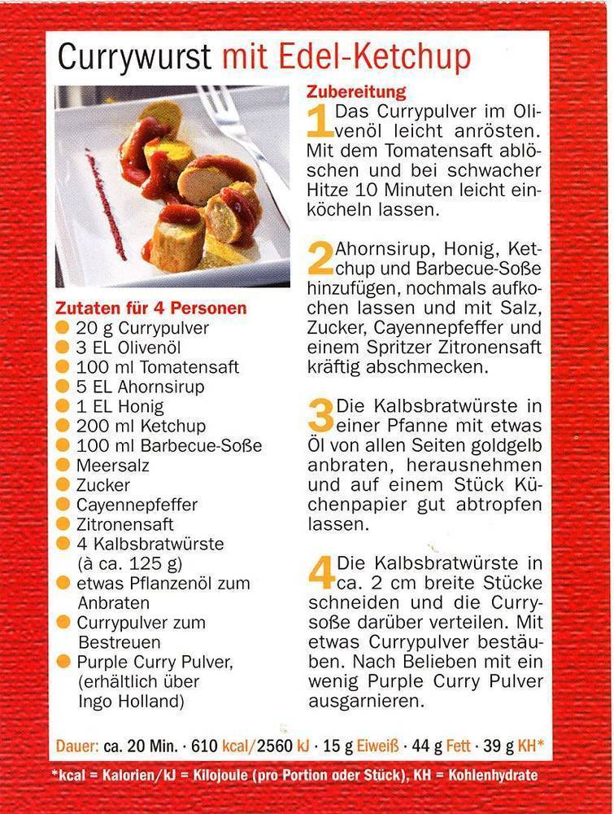
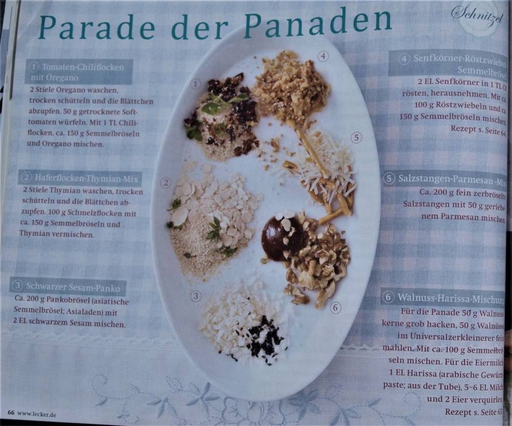

Suchergebnisse
Vorspeisen & Antipasti
72 RezepteAntipasti-PlatteText
▼Zutaten für: 1 Portionen / Stück 250 g Paprika (möglichst bunt gemischt) 250 g Champignons 4 El. Öl - Salz- Pfeffer aus der Mühle 1 Zucchini 6 El. Rotweinessig
So wird’s gemacht:
1 T1. Paprikaschoten vierteln, entkernen, waschen und mit der Hautseite nach oben auf ein Backblech drücken. Im vorgeheizten Backofen bei 250 Grad (Gas 5-6) auf der mittleren Einschubleiste 15 - 20 Minuten backen, bis die Haut dunkel ist und Blasen wirft. 2. Die Schoten kurz mit einem feuchten Tuch abdecken, dann häuten. Die Champignons putzen, wenn nötig, kurz waschen, in 2 El. Öl braun braten und mit Salz und Pfeffer würzen. 3. Zucchini putzen, waschen, längs in Scheiben schneiden und in 2 El. Öl von beiden Seiten braun braten. Mit Salz und Pfeffer würzen. 4. Aus Essig, Salz, Pfeffer, Oregano und Olivenöl eine Sauce rühren. Alle Gemüse zusammen mit dem Lorbeer und der von den Stielen gezupften Petersilie auf einer Platte anrichten, mit der Sauce beträufeln und etwa 1 Stunde durchziehen lassen. Pro Portion ca. 3 g E, 20 g F, 3 g KH = 213 kcal (892 kJ) Als Menüvorschlag: Vorspeise: Antipasti-Platte Hauptspeise: Gurken-Moussaka Nachspeise: Mascarpone-Pastete mit Erdbeeren
Auberginen, eingelegt:Text
▼Zutaten: 450 g Auberginen, Salz, 125 ml Öl, 2 Peperoni, , einige Stiele glatte Petersilie, 500 ml. Tomatensaft.
Zubereitung: Auberginen trocken tupfen und in Würfel schneiden, Schnittflächen mit 1 TL Salz bestreuen und 10 Minuten ziehen lassen, dann die Flüssigkeit abtupfen. Auberginen rundherum in heißem Öl anbraten. Peperoni waschen, entkernen und längs in dünne Streifen schneiden. 1- 2 Minuten mitbraten. Mit Salz abschmecken. Petersilienblättchen abbrausen, trocken schütteln und fein schneiden. Mit den gebratenen Auberginen in heiß ausgespülte Gläser füllen. Mit Tomatensaft begießen und fest verschließen. Die Auberginen sind etwa eine Woche haltbar.
Auberginenmus:Text
▼Zutaten: 600 g Auberginen, salz, 4 EL Olivenöl, 1 Zwiebel, 250 g Tomaten, 1 Knoblauchzehe, 3 Anchovisfilets in Öl, Pfeffer, 1 Spritzer Zitronensaft
Zubereitung: Auberginen würfeln und mit Salz bestreuen, 3 EL Olivenöl erhitzen, Zwiebel grob würfeln und mit den Auberginen anbraten. 100 ml Wasser zugeben und zugedeckt 20 Minuten bei mittlerer Hitze schmoren. Aus dem Topf nehmen, leicht abkühlen lassen, mittelfein hacken und in eine Schüssel geben. Tomaten, Knoblauch und Anchovis fein hacken und zu den Auberginen geben. Mit Salz, Pfeffer und Zitronensaft abschmecken, mit restlichem Olivenöl beträufeln und zu geschmorten Lammschulter servieren.
Bruschetta mit TomatenText
▼Zutaten (8 Stück):
4 Tomaten, 1 kleines Bd. Basilikum, 3-4 El. kaltgepresstes Olivenöl, Salz, schwarzer Pfeffer, 4 große Scheiben Weißbrot, 2-3 Knoblauchzehen.
Zubereitung: Die Tomaten waschen, abtrocknen und klein würfeln. Die Basilikumblättchen abzupfen mit Küchenpapier abreiben und in feine Streifen schneiden, mischen und mit Pfeffer würzen. Die Brotscheiben einmal durchschneiden und im Toaster knusprig rösten. Den Knoblauch schälen, Brotscheiben einreiben.
Bruschetta mit TomatenText
▼Zutaten (4 Personen): 8 Scheiben Weißbrot, 1 Knoblauchzehe halbiert, 120 ml Olivenöl, 2 reife Tomaten in Scheiben geschnitten, Salz und Pfeffer zum Würzen, frischer Oregana.
Zubereitung: Die Brotscheiben auf beiden Seiten goldbraun toasten. Eine Scheibe mit Knoblauch einreiben und in gut einem Esslöffel Olivenöl beträufeln. Tomatenscheiben auf die Brote verteilen. Salz, Pfeffer und Oregano darüber streuen und warm servieren.
Paprika, Zucchini und Champions (eingelegt)Text
▼Zutaten: 2 rote Paprika, 2 gelbe Paprika; Marinade: ½ Bund Thymian, 3 El. Weißer Balsamessig, Salz, frisch gemahlener weißer Pfeffer, 3 El. Olivenöl;
Zubereitung: Paprikaschoten längs vierteln den Stielansatz, die Kerne und die Trennwände herausschneiden. Ein Backblech mit Alufolie auslegen, Paprika mit der Hautseite nach oben drauflegen, Auf der oberen Einschubleiste im vorgeheizten Backofen bei 200 Grad Umluft etwa 20 Minuten rösten, bis die Haut schwarz wird und Blasen wirft. Paprikastücke in einen Gefrierbeutel geben. Im geschlossenen Beutel etwa 15 Minuten schwitzen lassen. Paprikastücke aus dem Beutel nehmen und in Streifen schneiden. Für die Marinade den Thymian abspülen, Trockentupfen und die Blättchen abzupfen. Den Balsamessig mit Salz und Pfeffer verrühren, das Olivenöl unterschlagen, Thymianblättchen untermischen. Die Paprikastücke in der Marinade mindestens eine Stunde durchziehen lassen.
TapenadeText
▼Zutaten: 150 g Kapern, 50 g Sardellenfilets, 2 Knoblauchzehen, 200 g entsteinte schwarze Oliven, 1 hartgekochtes Eigelb, 1/8 l kaltgepresstes Olivenöl, Saft von ½ Zitrone,
Schwarzer Pfeffer, Salz;
Tomaten und Mazzarella in ÖlText
▼Zutaten: 300 g Kirschtomaten, 3 Kugeln Mazzarella, 1 Bund Basilikum, 1 l Soja Öl, Salz, Pfeffer.
Zubereitung: Tomaten abspülen, abtropfen lassen und halbieren. Die Mazzarellakugeln in
Streifen schneiden (1/2 cm). Alles gleichmäßig in heiß gespülte Gläser schichten. Das Öl kräftig mit Salz und Pfeffer würzen. Die Gläser damit randvoll auffüllen und fest verschließen. Im geschlossenen Glas sind diese Antipasti 1 – 2 Wochen haltbar.
Tomaten in ÖlText
▼Zutaten: 50 g getrocknete Tomaten, Gewürze nach Gusto, auch Lorbeer, 200 ml Olivenöl
Tomaten-Dip mit FetakäseText
▼Zutaten: Für seinen Tomaten-Dip verwendet „Multikoch“ Joey Feta-Käse, Frischkäse, Tomaten, Knoblauch, Oregano, Zwiebeln, Pfeffer und Salz.
Zubereitung: Zuerst die Zwiebel und den Knoblauch schälen und mit den anderen Zutaten in eine große Schüssel geben. Danach alles mit einem Pürierstab vermischen und mit Salz und Pfeffer abschmecken. Fertig.
Extra-Tipp: Als Beilage empfiehlt Joey etwas Knoblauchbrot mit frischem Basilikum.
Eingelegter Feta in OlivenölText
▼Zutaten für 1 Portionen:
Das Glas bei Bedarf heiß ausspülen. Den Feta in Würfel schneiden. Den Knoblauch fein würfeln. Den Feta in das Glas geben. Knoblauch und Lorbeerblätter dazwischen verteilen. Pfefferkörner, Rosmarin, Thymian, Kräuter der Provence und das Öl dazugeben. Das Öl sollte ca. 1 - 2 cm über dem Käse stehen. Das Glas verschließen und im Kühlschrank aufbewahren. Mindestens 5 Tage stehen lassen, damit der Käse durchziehen kann. Innerhalb von 4-6 Wochen verbrauchen.
Raffinierte RäucherlachsrolleText
▼Diese Roulade aus Räucherlachs, Frischkäse und Spinat ist immer der Hit bei jeder Party.
Fertig in 1 Std. 39 Min.Text
▼Zutaten: Ergibt: 2 Rouladen
6 Eier, 300 g TK-Spinat, aufgetaut, abgetropft und ausgedrückt, Salz, Pfeffer, Muskat
1/2 Bund Dill, gehackt, 400 g Frischkäse, 6 EL Zitronensaft, 300 g RäucherlachsText
▼Zubereitung
Zub.: 15 Min. | Kochzeit: 24 Min. | Ruhezeit: 1 Std., Abkühlen lassen
Eier trennen und Eigelb mit Salz, Pfeffer, Muskat und Spinat vermischen und pürieren.
Eiweiß steif schlagen und unter die Spinatmasse heben.
Backofen auf 200 Grad vorheizen und zwei Backbleche mit Backpapier auslegen.
Spinatmasse dünn auf den Backblechen verstreichen und nacheinander 10 – 12 Min. backen. Backpapier vorsichtig abziehen und Boden mit einem Tuch abgedeckt abkühlen lassen.
In der Zwischenzeit Frischkäse mit gehacktem Dill, Zitronensaft, Salz und Pfeffer vermischen, auf den abgekühlten Spinatböden verstreichen, mit Lachsscheiben belegen und der Länge nach fest aufrollen; in Klarsichtfolie gewickelt mind. 1 Stunde im Kühlschrank kühlen.
Zum Servieren in 2 cm dicke Scheiben schneiden.
Feigen-Hack-Fladen Zubereitung:Text
▼Ein Backblech im Ofen auf 200 Grad vorheizen. Mehl, Backpulver und Salz in einer Schüssel mischen. Magerquark, Öl und 1 Ei zugeben und mit den Knethaken des Handrührers zu einem glatten Teig verkneten. Knoblauchzehe und Zwiebel fein würfeln. Beides mit gemischtem Hack, Ajvar und etwas Salz mischen. Tomaten und frische Feigen putzen und in dünne Scheiben schneiden. Den Teig vierteln und zu dünnen Fladen (à 20 cm Ø) ausrollen. Je 2 Fladen auf ein Stück Backpapier legen, mit der Hackmasse bestreichen und mit den Tomaten belegen. Mit dem Backpapier auf das heiße Blech ziehen und im vorgeheizten Ofen bei 200 Grad auf der mittleren Schiene 12-15 Min. backen (Umluft nicht empfehlenswert). Mit den Feigen belegen und mit etwas glatter Petersilie bestreut servieren.
Zutaten (für 4 Portionen):
150 g Mehl, 2 Tl Backpulver, Salz, 125 g Magerquark, 4 El Öl, 1 Ei (Kl. M), 1 Knoblauchzehe, 1 kleine Zwiebel, 400 g gemischtes Hackfleisch, 3 El Ajvar (Paprikapaste), 3 Tomaten, 4 frische Feigen, 2 El Petersilie (gehackt).
Tintenfisch-RagoutText
▼Zubereitung:
1. Tintenfische gut abspülen und abtropfen lassen. (Gefrorene Tintenfische im Kühlschrank auftauen lassen und waschen). Tuben in dünne Ringe schneiden und mit Küchenpapier trockentupfen. Knoblauch fein hacken, Zwiebeln grob würfeln. Paprikaschoten halbieren und putzen. Rote Paprikaschote mit einem Sparschäler schälen. Rote und hellgrüne Paprikaschoten grob würfeln. 2. Olivenöl mit Chilischoten in einem großen, flachen Topf stark erhitzen. Die Tintenfischringe 5 Minuten kräftig darin anbraten, dabei öfter wenden. Die Temperatur auf mittlere Hitze zurückschalten. Knoblauch und Zwiebeln zugeben und glasig dünsten. Paprikawürfel zugeben und 5 Minuten mitdünsten. Mit Paprikapulver, Salz, Pfeffer und Lorbeer würzen. Tomaten zugeben und mit Fischfond auffüllen. Zugedeckt 75 Minuten bei milder Hitze leise kochen lassen, ab und zu umrühren. Chilischoten entfernen. Ragout eventuell nachsalzen und mit Baguette servieren.
Zutaten (für 8 Portionen):
500 g frische (ersatzweise TK) Tintenfisch-Tuben (küchenfertig), 2 Knoblauchzehen, 150 g Zwiebeln, 1 rote Paprikaschote, 2-3 hellgrüne Paprikaschoten, 4 El Olivenöl, 2 kleine Chilischoten, 1/2 Tl scharfes Paprikapulver, 1 Tl grobes Meersalz, Pfeffer, 1 Lorbeerblatt, 1 Dose Pizza-Tomaten (425 g EW), 350 ml Fischfond.


.JPG)


 mit Speck.JPG)

Suppen & Eintöpfe
129 RezepteBerliner LöffelerbsenText
▼Zutaten für 4 Portionen: 400 g getrocknete gelbe Erbsen, 750 g gepökeltes Eisbein, 1 Lorbeerblatt, Pfeffer, Möhre, 1/2 Sellerieknolle, 2 Zwiebeln, 1 Lauchstange, 400 g Kartoffeln, Majoran, 2 EL frisch gehackte Petersilie
Zubereitung: Die Erbsen über Nacht in reichlich kaltem Wasser einweichen. Die Erbsen mit dem Einweichwasser in einen Topf geben, das Eisbein waschen und mit dem Lorbeerblatt zu den Erbsen geben. Mit wenig Salz und Pfeffer würzen. Alles aufkochen und etwa 1 Stunde 30 Minuten köcheln. Das Eisbein herausnehmen und das Fleisch vom Knochen lösen. Die Möhre, den Sellerie und die Zwiebeln schälen und würfeln. Den Lauch putzen, waschen und in dünne Ringe schneiden. Die Kartoffeln schälen und ebenfalls fein würfeln. Alles zu den Erbsen geben und weitere 15 bis 20 Minuten köcheln. Zuletzt das gewürfelte Fleisch wieder zu den Erbsen geben und alles mit Salz, Pfeffer und Majoran würzen. Mit Petersilie garniert servieren.
Birnen, Bohnen und SpeckText
▼Zutaten für 4 Personen: 500 g durchwachsenen Speck, ½ l Wasser, 1 kg Bohnen, 500 g Herbstbirnen, 750 g geschälte Kartoffeln, gehackte Petersilie, etwas Mehl, Salz.
Zubereitung: Den durchwachsenen Speck in einem Topf kurz anbraten, dann Wasser dazugeben und den Speck 1 Std. garen. Die gewaschenen und etwa 5 cm langen Bohnenhälften sowie die ganzen Birnen danach hinzugeben. Nach weiteren 40 Minuten sind die Kartoffeln in einem separaten Topf gar und der Duft von Bohnen erfüllt die Küche. Mit etwas Mehl lässt sich dieser wundervolle Herbsteintopf leicht binden und die frisch gehackte Petersilie rundet das Ganze ab.
Kartoffel-Lauch-EintopfText
▼Zutaten: 330 g Lauch, 1 kg Kartoffeln, 3 El Keimöl, 80 g (Schinken-) Speckwürfel, 2 Beutel Zwiebelsuppe, 1 Tl Majoran, gerebelt, 4 Würstchen, 1 Bund Schnittlauch;
So wird’s gemacht: Lauch putzen, waschen und in Stücke schneiden. Die Kartoffeln schälen, waschen und in kleine Würfel schneiden. Keimöl in einem Topf erhitzen, die Speckwürfel und Lauchstücke zugeben und fünf Minuten dünsten. 1 ½ l Wasser zugießen und die Zwiebelsuppe einrühren. Kartoffelwürfel zufügen und alles zugedeckt 15 bis 20 Min. kochen. Mit Majoran verfeinern. Vor dem Servieren die Wiener Würstchen oder Krakauer in den Topf geben und einige Minuten erhitzen. Schnittlauch waschen, in Röllchen schneiden und den Eintopf damit bestreuen.
Steckrübeneintopf mit RindfleischText
▼Zutaten: Rinderbrühe, 1 Beinscheibe, 600 g Suppenfleisch, 2 Zwiebeln, 100 g Sellerie, 2 Knoblauchzehen, 1 TL Thymian, Salz.
Gemüse für den Eintopf: 1 Steckrübe (ca. 800- 1000 g), 700 g Kartoffeln, 3 Karotten, 2 Zwiebeln, 1 Bund Frühlingszwiebeln, Rapsöl zum Anschwitzen, Salz, geriebene Muskatnuss, Pfeffer aus der Mühle.
Zubereitung: Rinderbrühe ansetzen. Die Beinscheibe und das Suppenfleisch in einen passenden Topf geben und mit circa 2,5 Liter kaltem Wasser auffüllen. Zwiebeln halbieren und in einer Pfanne – ohne Fett – kräftig bräunen. Die Zwiebelschalen und das Anrösten verleihen der Brühe eine appetitliche Farbe sowie einen kräftigen Geschmack. Knoblauchzehen und Selleriestück schälen und im Ganzen dazugeben. Dann mit Thymian und Salz würzen und alles zusammen bei mittlerer Hitze circa 1,5 Stunden köcheln lassen. Grauer Schaum, der sich an der Oberfläche bildet, wird mit einer Lochkelle abgeschöpft – so bleibt die Brühe schön klar. Flüssigkeit, die möglicherweise verkocht, füllen Sie mit heißem Wasser auf. Brühe passieren und Fleisch schneiden.
Wenn das Rindfleisch gar ist, nehmen Sie es heraus und lassen es etwas auskühlen. Die Brühe wird durch ein Sieb passiert und die verkochten Suppengemüse kommen in den Abfall. Schwimmt zu viel Fett auf der Brühe, wird mit einer Kelle etwas abgeschöpft. Das Suppenfleisch von Sehnen, Knochen und Knorpeln befreien und klein schneiden.
Steckrüben, Karotten, Zwiebeln und Kartoffeln schälen. Die Zwiebeln klein schneiden und zur Seite stellen und das restliche Gemüse in mundgerechte Würfel teilen. Hier sollten Sie sorgfältig vorgehen, da sich kleinere Stücke leichter mit einem Löffel essen lassen, vor allem aber besser schmecken. Etwas Rapsöl in einem Topf erhitzen und die Zwiebelwürfel leicht anbraten. Kartoffelstücke zugeben, umrühren und mit Rinderbrühe so aufgießen, dass das Gemüse knapp bedeckt ist. Restliche Brühe einfrieren oder für ein anderes Gericht verwenden. Nach 10 Minuten Kochzeit kommen Karotten und Steckrüben dazu. Die beiden Gemüsesorten garen schneller als Kartoffeln. Außerdem entwickeln Steckrüben einen kohligen Geschmack, wenn sie zu lange kochen. Sind die Kartoffeln weich, kommen das Suppenfleisch und die geschnittenen Frühlingszwiebeln dazu. Alles zusammen kurz aufkochen und zum Schluss mit Salz, Muskat und Pfeffer aus der Mühle abschmecken.
Linseneintopf mit CabanossiText
▼Zutaten für 4 Portionen: 125 g grüne Linsen, über Nacht eingeweicht, 300 g Kartoffeln, 200 g Möhren, 1 Lauchstange, 750 ml Gemüsebrühe, 150 g Cabanossi, 1/45 TL getrockneter Majoran, Salz, Pfeffer, 1/2 EL Apfelessig, 1 EL frisch gehackte Petersilie
Zubereitung: Linsen abgießen und in etwa 500 ml Wasser ca. 30 Minuten garen, abschäumen und abgießen. Kartoffeln und Möhren schälen und würfeln. Lauch putzen, waschen und in Ringe schneiden. Die Brühe in einem Topf aufkochen, Kartoffeln, Gemüse und Linsen zugeben und etwa 20 Minuten köcheln. Die Cabanossi in Scheiben schneiden und in den Eintopf geben. Mit Majoran, Salz, Pfeffer und Essig abschmecken. Mit Petersilie bestreuen.
Ajvar-SuppeText
▼Zutaten: 1300 g Gehacktes, 2 mittelgroße Zwiebeln, 1 Flasche Chili-Soße, 2 Glas Ajvar
(1 x mild; 1 x scharf), 2 Becher Schmand, 800 g Kräuter-Schmelzkäse, 6 kleine Brühwürfel, 1 Liter Wasser. Nach Geschmack auch verdünnen. Gehacktes und Zwiebeln anbraten, dann mit den restlichen Zutaten auffüllen.
Curryrahm-SuppeText
▼Zutaten: 1 Gemüsezwiebel, 1 Knoblauchzehe, 1 l Gemüsebrühe, 2 EL Currypulver, 250 ml Weißwein, 400 g Sahne, 100 g Creme fraiche, Salz, Pfeffer, Paprika edelsüß.
Zubereitung: Suppengrün, Zwiebel und Knoblauch würfeln und in 3 bis 4 EL Öl anschwenken. Mit Currypulver bestäuben und mit Weißwein ablöschen und reduzieren. Die Gemüsebrühe dazugeben und ca. 15 Minuten köcheln. Anschließend pürieren und durch ein Sieb streichen. In der Zwischenzeit Reis separat nach Anweisung kochen und zur Suppe geben. Geviertelte Champions, in Rauten geschnittene Paprika und den in mundgerechte Stücke geteilten Apfel zur Suppe geben und weitere 10 Minuten gar ziehen lassen (aldente). Sahne hinzufügen und nochmals aufkochen. Abschließend mit Creme fraiche je nach gewünschte Konsistenz abbinden. Würzen und mit Petersilie und Creme fraiche servieren.
ErbsensuppeText
▼Zutaten: 1 ½ Pfd. Quer- oder Hochrippe vom Rind, 2 – 3 Pakete Erbsen (Kühltruhe) Salz, Petersilie, Zutaten für Klöße: 3 Eier, Mehl, 1 Prise Salz.
Zubereitung: Ochsenfleisch kochen und später die frischen Erbsen dazugeben und salzen. Die Eier in eine Schüssel geben, soviel Mehl hinzugeben, bis sich alles zu kleinen Klößen formen lässt. Anschließend in die Suppe geben und langsam garen. Das Fleisch in Stücke schneiden, in die Suppe geben, etwas Petersilie darüber streuen.
Fleischwursttopf mit PaprikaText
▼Zubereitung für 4 Personen:
Je eine rote, gelbe und grüne Paprika in Streifen geschnitten mit 1 Zwiebel, gewürfelt 1 Knoblauchzehe zerdrückt und 3 EL Öl in einen ausreichend großen mikrowellengeeigneten Behälter geben und gut vermengen.
6 Minuten abgedeckt bei 600 Watt garen, zum Abdecken eignet sich ein mikrowellengeeigneter Teller. Inzwischen 1/2 Ring (ca. 300 g) Fleischwurst der Länge nach vierteln und in Scheiben schneiden.
Die Fleischwurst mit 5 EL Tomatenketchup, 100 g Schmand, 1/2 TL frisch gemahlenem schwarzen Pfeffer, 1/2 gestrichenen TL Salz,
200 g gehäuteten und gehackten Tomaten (oder 1/2 Dose Pizzatomaten) zu dem Paprikagemüse geben und alles gut miteinander vermengt.
16 Minuten bei 600 Watt in der Mikrowelle garen, nach 5 Minuten Stehzeit mit gehacktem Basilikum bestreut servieren.
Dazu schmecken Nudeln oder Reis.
Spargelsuppe:Text
▼Spargel waschen und schälen, in 3–4 cm lange Stücke schneiden und in leicht gesalzenem Wasser garkochen, 250 g Spargel, 40 g Butter, 40 g Mehl., 1 l Flüssigkeit (Spargelwasser und Brühe), 1 Eigelb (Kl. M), 3 El Milch oder süße Sahne, Zucker, Salz, Pfeffer, Muskat und Zitronensaft zum Würzen.
Gemüsecreme-Suppe mit LauchstreifenText
▼Zubereitung: 150 g. tiefgekühlte Erbsen auftauen, 300 g Brokkoli putzen, waschen und kleinschneiden. . Ein kleines Bund Lauchzwiebeln putzen, waschen. Die weißen Wurzelenden würfeln, in 20 g Butter zugedeckt 5 Minuten dünsten. 3/$ L Hühnerbrühe, Erbsen und Brokkoli hinzufügen, 10 Min. kochen. Im Mixer oder mit Mixstab pürieren, 4 Esslöffel Sahne darunter ziehen, salzen und pfeffern. Lauchstengel zu feinen Streifen schneiden und in die Suppe geben, heiß halten. 100 ml Schlagsahne mit etwas Salz, Pfeffer und Curry steif schlagen. Nach Wunsch geröstete Weißbrotwürfel hinzufügen.
»Großmutters« JägersuppeText
▼Zutaten: 400 bis 500 g Mischpilze, 1 El. Sonnenblumenöl, 60 g Speckwürfel, 1 Zwiebel, 40 g Mehl,
1 Ltr. Fleischbrühe, Salz, Pfeffer, 1/8 Ltr. Süße Sahne, 1 Bd. Petersilie.Text
▼Zubereitung: Mischpilze putzen, waschen und in feine Streifen schneiden. Das Öl mit den Speckwürfeln
erhitzen, darin die Pilze und die fein geschnittene Zwiebel andünsten. Mit Mehl bestäuben, mit der
Fleischbrühe auffüllen und zum Kochen bringen. Circa 15 Minuten vorsichtig köcheln lassen (wegen des
Aromas der Pilze). Zum Schluss die Sahne einrühren, Ganz kurz aufkochen lassen, Vor dem Servieren mit fein
gehackter Petersilie bestreuen.
GurkensuppeText
▼Zutaten:1 Schlangengurke in Streifen schneiden und mit etwas Butter und einer in Würfel geschnittenen Zwiebel dünsten, mit etwas Mehl bestäuben, das Ganze mit 1 Liter Brühe auffüllen, mit dem Mixer pürieren, alles aufkochen, 1/8 l saure Sahne einrühren, zuletzt mit Dill, Fondor und Salz abschmecken. Guten Appetit!!!
Gyros-Suppe (20 Personen)Text
▼Zutaten: 2 kg Gyros, 4 Becher Sahne, 2 Pakete Zwiebelsuppen 2 Pakete Lauchsuppe, 2 Dosen Mais, 2 Dosen Erbsen, 2 Glas Zigeunersoße, 1 Flasche Chilisoße, Brühe. Gyros anbraten, Zwiebel. und Lauchsuppe nach Rezept kochen. Alles zusammen aufkochen.
Käsesuppe (für 10 Personen)Text
▼Zutaten: 500 g Rinderhack, 2 Gemüsezwiebeln, 4 Stangen Porree, 2 Dosen Champions, 1 ½ Liter Brühe, 400 g Kräuterschmelzkäse, 200 g Sahneschmelzkäse; 25 Minuten kochen (ohne Champions), binden mit Schmelzkäse.
KartoffelsuppeText
▼Zutaten (4 Personen): 800 Gramm Kartoffeln (mehligkochend), 2 Zwiebeln, 1 Stange Porree, 50 Gramm Butter (oder Margarine), 1 Liter Fleischbrühe (kräftig), Salz,100 Gramm Schlagsahne, Pfeffer (frisch gemahlen), 1 TL Majoran (gerebbelt), Sahne (für die Deko)
Zubereitung: Die Kartoffeln schälen, abspülen und in grobe Würfel schneiden. Zwiebeln abziehen und fein würfeln. Porree putzen, gut abspülen und in Stücke schneiden. Das Fett in einem Topf erhitzen. Zwiebelwürfel und Porreestücke darin glasig dünsten. Kartoffelwürfel und Brühe dazugeben und alles mit Deckel etwa 20 Minuten kochen lassen. Die Kartoffeln in der Suppe zuerst mit dem Kartoffelstampfer, dann kurz mit dem Stabmixer zerkleinern oder durch die "flotte Lotte" drehen. Achtung: bitte nicht zu lange mit dem Stabmixer pürieren, sonst wird die Suppe kleisterig! Die Sahne unterrühren und die Suppe mit Salz, Pfeffer und Majoran abschmecken. Eventuell mit einem Schuss Sahne dekorieren.
Kartoffelsuppe mit LachsText
▼Zutaten für 4 Personen
750 g Kartoffeln 1 ½ l klare Brühe (Instant), 1 Becher (200 g) Schlagsahne, Salz, Pfeffer, etwas Worcestersoße, 250 g Lachsfilet, 2 El. Zitronensaft, 2 Eigelb, 1 Bund Dill;
So wird’s gemacht: Kartoffeln schälen, würfeln, 20 Minuten in der Brühe garen, pürieren. Mit Sahne aufkochen und mit Salz und Pfeffer und Worcestersoße würzen. Lachs waschen, mit Zitronensaft beträufeln, ins kochende Salzwasser geben und 10 Minuten pochieren. Die Kartoffelsuppe mit Eigelb legieren, dabei nicht kochen lassen. Lachs in Stücke zerteilen, zur Suppe geben. Mit gehacktem Dill bestreut servieren.
Kartoffelsuppe mit Porree und ÄpfelnText
▼So wird’s gemacht: 600 g fest kochende Kartoffeln waschen, schälen und in Würfel schneiden. 700 g Porree putzen, waschen – das Weiße und Hellgrüne in 1 cm dicke Ringe schneiden. Kartoffelwürfel in 3 El Olivenöl unter Rühren 3 Min dünsten. Porree zugeben und 2 min unter Rühren ebenfalls dünsten. 4 Tl mildes Curry und 1 Tl edelsüßes Paprikapulver unterrühren und kurz andünsten. 1 Ltr. heiße Gemüsebrühe zugeben und aufkochen lassen, dann zugedeckt circa 8 Min bei kleiner Hitze kochen lassen. 1 roten Apfel waschen, vierteln und entkernen, die Viertel jeweils in 4 Spalten schneiden. 30 g gehakte Mandeln ohne Fett in einer Pfanne goldbraun rösten, Pfanne gelegentlich rütteln. Mandeln auf einen Teller geben. 2 El Olivenöl in die Pfanne geben, Apfelspalten darin bei mittlerer Hitze auf jeder Seite braten. In den Mandeln wenden – Mandeln dabei leicht andrücken und dann beiseite stellen. 150 g Schlagsahne in die Suppe geben und erhitzen, mit Salz und Pfeffer abschmecken. Auf Teller verteilen und mit Apfelspalten garnieren.
Kartoffelsuppe mit KrabbenText
▼Zutaten (für 4 Personen): 1 kg Kartoffeln, 2 kleine Stangen Porree. 2 Zwiebeln, 60 g Butter oder Margarine, 50 g durchwachsener Speck, 1 l Hühnerbrühe, 1 Becher Schlagsahne (250 g), Salz, frisch gemahlener Pfeffer, 150 g. Nordseekrabbenfleisch, frischer Majoran;
Zubereitung: Kartoffelwürfel, Porreeringe und Zwiebelwürfel in heißem Fett andünsten, Speckscheibe
drauflegen. Brühe zugießen, im geschlossenen Topf 20 Min. kochen. Speck entfernen und die Kartoffeln mit
dem Schneidstab des Handrührers pürieren. Sahne unterrühren und evtl. noch etwas Wasser zugießen. Mit
Kartoffelsuppe mit Krabben (1)Text
▼Zutaten (für 4 Personen): 1 Zwiebel, 2 El Brassola Raps-Kernöl, 1 kleine Stange Lauch, 1 Möhre, 1 l
Gemüsebrühe, 750 g Kartoffeln, Salz, Pfeffer, Muskat, 0,1 l Kaffeesahne (10 % Fett), 1 EL Enzym-Ferment
Getreide, 100 g Krabben, Petersilie.Text
▼So wird’s gemacht: Zwiebel schälen, fein würfeln, im heißen Raps-Kernöl glasig werden lassen.
Lauch in Ringe, die Möhre in Stifte schneiden, kurz mitdünsten, mit Gemüsebrühe aufgießen
und zum Kochen bringen. Inzwischen die Kartoffeln schälen, würfeln und alles 30 Minuten
köcheln lassen. Die Hälfte der Suppe pürieren, wieder zufügen und gut würzen. Kaffeesahne
zufügen und gut würzen. Die Krabben zugeben, kurz ziehen lassen, noch mal mit Enzym-
Ferment Getreide abschmecken und mit Petersilie bestreut servieren.
Karotten-Kartoffelsuppe (cremig)Text
▼Zutaten: 1 Zwiebel (ich nehme auch gerne mal eine rote oder Gemüsezwiebel), 400 g Karotten in groben Stücken, 400 g Kartoffeln in groben Stücken, 3/4 L Gemüsebrühe, 1 Becher (200 g) Sahne, 1 Lorbeerblatt, Salz, Pfeffer, Zitronensaft zum Abschmecken
Zubereitung: Klein geschnittene Zwiebel (Ringe oder Würfel) in Butter andünsten, Kartoffeln und Karotten dazugeben, Mit Gemüsebrühe aufgießen, Lorbeerblatt dazu, 20 Minuten köcheln lassen (da das Ganze sowieso anschließend püriert wird, muss das nicht so ganz genau sein), Lorbeerblatt rausfischen, Alles mit einem Pürierstab pürieren, Becher Sahne dazu, Mit Zitronensaft, Salz und Pfeffer abschmecken (ich mache auch immer noch ein bisschen fire eaters (sparsam) dazu
Kartoffel-Lauch-Suppe mit GorgonzolaText
▼Zutaten für 4 Personen
750 g Lauch, geputzt, 250 g Kartoffeln (mehligkochend), 2 El Butter, 1 l Gemüsebrühe, 1 Bund glatte Petersilie, 200 g Gorgonzola, 2-3 El Zitronensaft, weißer Pfeffer aus der Mühle, Salz.
So wird’s gemacht:
die weißen und hellgrünen Teile des Lauchs erst in dünne Ringe schneiden, dann waschen und gut abtropfen lassen.
Die Kartoffeln waschen, schälen, nochmals waschen und in kleine Würfel schneiden.
Butter in einem großen Topf erhitzen und darin Lauch und Kartoffelwürfel unter Rühren andünsten.
Gemüsebrühe zugießen, aufkochen und zugedeckt bei mittlerer Hitze etwa 10 bis 15 Min. kochen, bis die Kartoffeln weich sind.
Petersilie hacken, Gorgonzola würfeln. Vor dem Servieren erst die Käsewürfel in die Suppe rühren und schmelzen lassen, dann mit Zitronensaft, Pfeffer und vorsichtig mit Salz würzen. Zum Schluss die Petersilie unterheben.
Tipp: gehackte Walnüsse überstreuen. Vorsichtig salzen, weil der Käse die Suppe
kräftig würzt. Zur Creme wird die Suppe, wenn sie vor der Zugabe des Käses mit
dem Stabmixer püriert wird.
Karotten-KartoffelsuppeText
▼Zutaten: 1 Zwiebel (ich nehme auch gerne mal eine rote oder Gemüsezwiebel), 400 g Karotten in groben Stücken, 400 g Kartoffeln in groben Stücken, 3/4 L Gemüsebrühe, 1 Becher (200 g) Sahne, 1 Lorbeerblatt, Salz, Pfeffer, Zitronensaft zum Abschmecken
Zubereitung
Klein geschnittene Zwiebel (Ringe oder Würfel) in Butter andünsten, Kartoffeln und Karotten dazugeben, mit Gemüsebrühe aufgießen, Lorbeerblatt dazu, 20 Minuten köcheln lassen (da das Ganze sowieso anschließend püriert wird, muss das nicht so ganz genau sein), Lorbeerblatt rausfischen, alles mit einem Pürierstab pürieren, Becher Sahne dazu, Mit Zitronensaft, Salz und Pfeffer abschmecken (ich mache auch immer noch ein bisschen fire eaters (sparsam) dazu.
Zubereitung:
Zwiebeln und Knoblauch in heißem Öl glasig dünsten, Curry und Mehl zugeben, anrösten. Brühe angießen, Tomaten- und Apfelwürfel, Limette und Kokosraspel dazugeben. Alles 30 Minuten köcheln lassen.
Suppe durch ein Sieb passieren, salzen, abkühlen lassen. Sahne einrühren.
Omas Linsensuppe mit WürstchenText
▼Dieses super einfache Rezept für Omas Linsensuppe mit Würstchen schmeckt original wie in Kindertagen und ist super schnell gemacht. Unbedingt probieren!
4.99 von 59 BewertungenText
▼VORBEREITUNG20 Minuten
ZUBEREITUNG30 Minuten
ARBEITSZEIT50 Minuten
GERICHTHauptgericht
PORTIONEN4Text
▼ZUTATEN
150 g Speck durchwachsen,
1 Zwiebel
3 EL Olivenöl
1 Bund Suppengrün
3 Kartoffeln
150 g Tellerlinsen
1 L Hühnerbrühe
1/4 TL Kreuzkümmel
1 TL Zucker
3 TL Weißweinessig
3 Wiener Würstchen
Salz und PfefferText
▼ANLEITUNGEN
Speck fein würfeln. Zwiebel schälen und fein würfeln. Öl in einem großen Topf erhitzen und Speck und Zwiebel bei mittlerer Hitze glasig anbraten.
Suppengrün waschen. Porree in dünne Ringe schneiden, Karotten und Sellerie schälen und fein würfeln. Mit in den Topf geben, Hitze etwas erhöhen und anbraten. Kartoffeln schälen und fein würfeln. Linsen abspülen. Kartoffeln, Linsen und Brühe in den Topf geben und mit Deckel 30 Minuten köcheln lassen.
Mit Kreuzkümmel, Zucker, Essig, Salz und Pfeffer abschmecken. Würstchen in Scheiben schneiden und ein paar Minuten in der Suppe warm werden lassen. Heiß genießen.
Spargelcremesuppe kochen |Text
▼Zuerst werden die Schnittenden des Spargels großzügig abgeschnitten, denn diese sind sehr holzig. Dann wird er mit einem Sparschäler geschält. Einen Teil der geschälten Spargel verwende ich für die Suppeneinlage.
Nun gebe ich die Gemüsereste in einen Topf und bedecke sie mit Spargelwasser. (Beim Spargel kochen sammle ich das Spargelwasser und verwende es für eine Spargelcremesuppe.)
In ca. 20 Minuten ist alles weich gekocht. Dann mixe ich diese Zutaten mit dem Stabmixer gut durch, dabei den Topf leicht anheben, so geht es einfacher. Die Brühe nun mit Hilfe eines Schneebesens oder Kochlöffels durch ein feines Sieb abseihen. Was übrig bleibt sind reichlich Fasern, die wir nicht in der Suppe haben wollen. Nach Geschmack gebe ich ca. 250 ml Sahne dazu. In einer kleinen Schüssel rühre ich 2 Esslöffel glattes Mehl mit Wasser oder Obers glatt und rühre es in die Suppe ein. Die ganzen Spargel werden in kleine Stücke geschnitten und kommen in die Suppe. Nun wird alles ca. 2 Minuten aufgekocht und abgeschmeckt. Zum Würzen reichen Suppenpulver bzw. Brühwürfel, ein wenig Pfeffer und Salz um den feinen Spargelgeschmack zu erhalten.
So schnell hat man sich eine Suppe aus frischen Zutaten gezaubert. Es passt eine Scheibe Brot dazu oder auch frische Brot Croutons.
RindersuppeText
▼Zubereitung: Für eine schmackhafte Rindsuppe genügen einfaches gutes Rindsuppenfleisch und Rinderknochen und natürlich Wurzelgemüse. Unabdingbar sind aber Macisblüten als Gewürz. Diese verleihen, sehr sparsam angewendet, der Suppe einen unvergleichlichen Geschmack. So richtig nach einer kräftigen Rindsuppe, wenn ihr wisst, was ich meine.
Zutaten: 800-1000 g Rindsuppenfleisch, 600 g Rinderknochen, 2 große Karotten geschält im Ganzen, 1 große gelbe Rübe geschält im Ganzen, 1 kleine Petersilienwurzel geschält im Ganzen, 1/2 Gemüsezwiebel mit Schale, 1,5 L Wasser, 1 EL Salz, Schnittlauch zum Garnieren, Macisblüte einem Zentimeter entsprechend - Vorsicht, dieses Gewürz ist sehr intensiv und scharf!
Zubereitung: Fleisch und Knochen gut waschen und mit den übrigen Zutaten in einen Topf geben.
Aufkochen lassen und bei mittlerer Hitze, mit geschlossenem Deckel mindestens 2 Stunden köcheln lassen. Ich verwende dafür einen Schnellkochtopf und da dauert die Garzeit 45 Minuten. Nach Ende der Garzeit wird die Suppe über ein Sieb in einen anderen Topf geseiht. Die Knochen und die Zwiebel werden entsorgt. Das Wurzelgemüse wird in Rauten und das Fleisch in mundgerechte Stücke geschnitten und in der Suppe serviert.


Salate & Rohkost
129 RezepteFeldsalat mit Mozzarella und CocktailtomatenText
▼Schneller Salat für Gäste: Dieser einfache Salat schmeckt nicht nur köstlich, er schmückt auch jeden Esstisch. Bei euren Gästen werdet ihr garantiert dafür Lob ernten.
Zutaten
1 Packung Feldsalat
1 Becher Mini-Mozzarella
1 Packung Cocktailtomaten
100 g Cashewkerne oder Pinienkerne
Dressing
4 EL Olivenöl
1 TL Honig
1 TL Senf
2 EL Balsamico Essig
1-2 EL Kräuter der Provence (Lidl)
Salz und PfefferText
▼Zubereitung
Salat waschen, schleudern und auf einen flachen Teller legen.
Tomaten waschen, halbieren und auf dem Feldsalat zusammen mit dem Mozzarella verteilen.
Pinienkerne oder Cashewkerne in der Pfanne etwas anrösten und zur Seite stellen.
Alle Zutaten für das Dressing zusammenrühren und auf dem Salat verteilen. Nicht umrühren.
Mit den gerösteten Kernen den Salat verzieren und servieren.
Gurkensalat mit SchafskäseText
▼Zutaten (für 2 Personen): ½ Gurke, 1 Tomate, 1 Frühlingszwiebel, 100 g Schafskäse, Pfeffer, Salz, Paprikapulver, rosenscharf, Olivenöl, Balsamico, Petersilie, Schnittlauch.
Arbeitszeit: ca. 15 Min. / Schwierigkeitsgrad: simpel
Gurke der Länge nach vierteln und in etwa 5mm dicke Scheiben schneiden, Tomate und Schafskäse in kleine Würfel schneiden, Frühlingszwiebel in hauchdünne Scheibchen schneiden. Zutaten in eine Schüssel vermischen, Kräuter und Gewürze hinzugeben und großzügig mit Essig und Öl vergießen. Ideal als Vorspeise.
Formularbeginn
Kleiner SalattellerText
▼1 Person
Römersalat putzen, waschen, trocken schütteln, in feine Streifen schneiden, Tomaten waschen, viertel, Zwiebel schälen, fein würfeln. Zitronensaft, Zwiebeln, Essig, Öl, Salz und Pfeffer vermischen, über den Salat gießen, gut vermischen und mit den Cocktailtomaten Blüten auf den Salat zaubern.....einfach und doch lecker....
Gemischter SalatText
▼Zutaten
Formularbeginn
PortionenText
▼Formularende
HolzerschmausText
▼Zutaten für 4 Personen
100 g Mehl
2 Eier
125 ml Milch
Salz
1 Prise Zucker
etwas Majoran
1 kleine Zwiebel
Fett zum Braten
5 Scheiben durchwachsener SpeckText
▼Zubereitung Holzerschmaus
Aus dem Mehl, den Eiern, der Milch, etwas Salz und dem Zucker einen Pfannkuchenteig rühren. Den Teig 10 Minuten quellen lassen.
Inzwischen den Majoran waschen, trockenschütteln und fein hacken. Die Zwiebel schälen und in feine Ringe schneiden. Etwas Fett zum Braten in einer Pfanne erhitzen und die Zwiebel darin glasig dünsten, herausnehmen und beiseitestellen.
Anschließend die Speckscheiben in der Pfanne schön anbraten. Den Pfannkuchenteig langsam auf die Speckscheiben gießen.
Wenn die Masse fest wird, den Schmaus wenden und auf der anderen Seite noch 2 bis 3 Minuten braten lassen.
Mit den gerösteten Zwiebelringen und dem Majoran bestreuen und sofort servieren.
Chicoréesalat mit RoastbeefText
▼Zutaten für 4 Portionen
4 Chicoréestauden
350 g Roastbeef
100 g Champignons
2 EL Zitronensaft
1 Orange
1/2 Bund Petersilie
150 g Natur-Joghurt
3 EL Sherryessig
1 TL Senf
3 EL Distelöl
Salz
PfefferText
▼Zubereitung Chicoréesalat mit Roastbeef
Chicoree putzen, bitteren Kern entfernen und die Stauden in dünne Ringe schneiden.
1.
Roastbeef in Streifen schneiden. Pilze putzen, feucht abreiben und in Scheiben schneiden.
Mit Zitronensaft beträufeln. Orangen schälen und filetieren. Alle Salatzutaten in einer
Schüssel mischen.
2.
Restliche Zutaten zu einem Dressing verrühren und mit dem Salat mischen.
3.
KurzbeschreibungText
▼Oma und Enkelin – zwei starke Frauen vom Niederrhein und die Frage: Wie viel Ehe verträgt ein erfülltes Leben? Eine Ehe steht nach sechzig Jahren vor dem Aus – und eine junge Mutter ringt um eine Entscheidung, die nicht nur ihr Leben bestimmen wird. Ruth und Walter leben seit Ruths Sturz im Seniorenheim Burg Winnenthal. Walter möchte am liebsten sofort zurück nach Hause, die vielen lebenslustigen Witwen hier sind ihm unheimlich. Ruth hingegen genießt die Gesellschaft von Gleichgesinnten. Sie lauscht den Lebensgeschichten der anderen Frauen und singt endlich wieder im Chor. Keine zehn Pferde werden sie hier wegbringen. Als ihre Enkelin Sara, Mutter eines kleinen Sohnes, die Zusage für ein Forschungsstipendium in Cambridge erhält und von ihrem Mann vor eine Entscheidung gestellt wird, sucht sie Rat bei Ruth. Geschickt verwebt Anne Gesthuysen Gegenwart und Vergangenheit und erzählt von einem bewegten Frauenleben am Niederrhein, das den Bogen vom Zweiten Weltkrieg über die piefigen Fünfziger- und die wilden Siebzigerjahre bis in die Jetztzeit spannt. Von der Liebe und kuriosen Hochzeitsbräuchen, von Karnevalstraditionen und Anti-AKW-Treckerfahrten. Von den Herausforderungen einer Jahrzehnte währenden Ehe, von patriarchalen Machtstrukturen und gesellschaftlichen Umbrüchen. Humorvoll, warmherzig und feinfühlig spürt sie der Frage nach, was zwei Menschen zusammenhält und welche Bedeutung Freiheit und Selbstverwirklichung haben. Eindrücklich zeigt sie, dass es keine einfachen Antworten gibt, nur individuelle Wege zum Glück.
PressestimmenText
▼»Moderatorin Anne Gesthuysen [...] trifft hier [...] den richtigen Ton: Die Frauen in diesem Roman wachsen einem sofort ans Herz.« (Freundin 2019-01-23) »ein unterhaltsamer Appell, sowohl an Frauen als auch an Männer, ihre Selbstverwirklichungswünsche keinen gesellschaftlichen Normen zu unterwerfen« (Jutta Langhoff Rheinische Post 2019-01-16) »Mädelsabend_ ist eine sehr sympatische Familiengeschichte« (Ronald Meyer-Arlt Hannoversche Allgemeine 2018-11-15) »Humorvoll und feinfühlig« (Buchreport 2018-11-15) »Ein spannender Roman auf knapp 400 Seiten – und vielleicht der nächste Bestseller von Anne Gesthuysen.« (Heinz Dietl Bonner General-Anzeiger 2018-11-10) »Humorvoll, warmherzig und feinfühlig« (Buch-Magazin) »Geschickt verwebt Anne Gesthuysen Gegenwart und Vergangenheit und erzählt von einem bewegten Frauenleben, das den Bogen vom Zweiten Weltkrieg bis in die Jetztzeit spannt.« (Martini) »Nicht nur für Frauenrechtlerinnen eine absolute Leseempfehlung« (Karin Lohsa Ratgeber Magazin)
Oma und Enkelin – zwei starke Frauen vom Niederrhein und die Frage: Wie viel Ehe verträgt ein erfülltes Leben? Eine Ehe steht nach sechzig Jahren vor dem Aus – und eine junge Mutter ringt um eine Entscheidung, die nicht nur ihr Leben bestimmen wird. Ruth und Walter leben seit Ruths Sturz im Seniorenheim Burg Winnenthal. Walter möchte am liebsten sofort zurück nach Hause, die vielen lebenslustigen Witwen hier sind ihm unheimlich. Ruth hingegen genießt die Gesellschaft von Gleichgesinnten. Sie lauscht den Lebensgeschichten der anderen Frauen und singt endlich wieder im Chor. Keine zehn Pferde werden sie hier wegbringen. Als ihre Enkelin Sara, Mutter eines kleinen Sohnes, die Zusage für ein Forschungsstipendium in Cambridge erhält und von ihrem Mann vor eine Entscheidung gestellt wird, sucht sie Rat bei Ruth. Geschickt verwebt Anne Gesthuysen Gegenwart und Vergangenheit und erzählt von einem bewegten Frauenleben am Niederrhein, das den Bogen vom Zweiten Weltkrieg über die piefigen Fünfziger- und die wilden Siebzigerjahre bis in die Jetztzeit spannt. Von der Liebe und kuriosen Hochzeitsbräuchen, von Karnevalstraditionen und Anti-AKW-Treckerfahrten. Von den Herausforderungen einer Jahrzehnte währenden Ehe, von patriarchalen Machtstrukturen und gesellschaftlichen Umbrüchen. Humorvoll, warmherzig und feinfühlig spürt sie der Frage nach, was zwei Menschen zusammenhält und welche Bedeutung Freiheit und Selbstverwirklichung haben. Eindrücklich zeigt sie, dass es keine einfachen Antworten gibt, nur individuelle Wege zum Glück.
Unterhaltsam und lehrreich
17. Januar 2019
Format: Gebundene AusgabeVerifizierter Kauf
Mädelsabend ist im Stil des ersten Buches (Wir sind doch Schwestern) geschrieben. Frau Gesthuysen gibt einen weiteren Einblick in die Verhältnisse ihrer niederrheinischen Heimat die besonders von älteren Lesern gut nachvollziehbar sind und ohne weiteres auch in andere deutsche Landesteile übertragen werden können. Ich kann dieses Buch nur empfehlen. Norbert Gerle
Nützlich
Bayrisch KrautText
▼Zutaten für 4 Personen: 1 kleiner Kopf Weißkohl (ca. 1 kg), 2 EL Zucker, 2 EL Schweineschmalz, 1 Zwiebel, 1 saurer Apfel, 250 ml Gemüsebrühe, 250 ml Weißwein, 1 EL heller Essig, Salz, Pfeffer, etwas gemahlener Kümmel.
Zubereitung: Den Kohlkopf putzen, waschen und vierteln. Den Strunk entfernen und den Kohl in feien Streifen schneiden oder hobeln. In einem Topf den Zucker mit dem Schmalz leicht bräunen. Die Zwiebel schälen und in Ringe schneiden. Den Apfel waschen, entkernen und raspeln. Zwiebel und Apfel im Schmalz andünsten. Das Kraut zugeben, salzen und pfeffern. Die Brühe und den Weißwein angießen. Dem Essig zugeben. Zugedeckt etwa 1 Stunde gar schmoren, evtl. zwischendurch noch etwas Flüssigkeit zum Kohl geben. Mit Salz, Pfeffer und Kümmel abschmecken.
Griechischer KrautsalatText
▼Formularbeginn
Formularbeginn
Formularende
Eisbergsalat mit MangospaltenText
▼Zutaten für 3 Portionen: 300 g Joghurt (1,5% Fett), 20 getrocknete Tomaten, Cayennepfeffer, Salz, 1 Eisbergsalat, 1 Mango, 250 g Tomaten, 1 Beutel KNORR Salatkrönung Würzige Gartenkräuter, 5 EL Orangensaft, 1 EL Olivenöl
Zubereitung
1. Ein Sieb mit Küchenpapier auslegen, Joghurt hineingeben und im Kühlschrank abtropfen lassen. 2. Getrocknete Tomaten fein hacken und mit dem Joghurt verrühren. Mit Cayennepfeffer und wenig Salz abschmecken. 3. Eisbergsalat putzen, waschen, trockenschleudern und in 1 cm breite Streifen schneiden. Mango schälen und in dünne Spalten vom Stein schneiden. Tomaten waschen und sechsteln. Salat, Mangospalten und Tomaten in einer Schüssel mischen. 4. Beutelinhalt Salatkrönung "Würzige Gartenkräuter" mit Orangensaft und Olivenöl verrühren und unter den Salat heben.
Krautsalat:Text
▼Zutaten: 1 kl. Kopf Weißkohl, 1 rote Paprika, Petersilie, Knoblauch, 1-2 Zwiebeln, Kräutersalz, schwarzer Pfeffer, Kümmel, Obstessig, Sonnenblumenöl, kaltgeschlagen.
Zubereitung: Alle Gewürzzutaten zubereiten. Weißkohl hobeln, Paprikaschote würfeln und dazugeben, Zwiebel und Petersilie fein schneiden und vermischen, Knoblauch mit Kräutersalz zerdrücken und unterheben. Mit Essig, Öl und den Gewürzen abschmecken.
Eisbergsalat mit Mango-SpaltenText
▼Zubereitungszeit inkl. Backzeit 60 Min.
Zutaten für 3 Portionen: 300 g Joghurt (1,5% Fett), 20 getrocknete Tomaten, Cayennepfeffer, Salz, 1 Eisbergsalat, 1 Mango, 250 g Tomaten, 1 Beutel KNORR Salatkrönung Würzige Gartenkräuter, 5 EL Orangensaft, 1 EL Olivenöl
Zubereitung: Ein Sieb mit Küchenpapier auslegen, Joghurt hineingeben und im Kühlschrank abtropfen lassen. Getrocknete Tomaten fein hacken und mit dem Joghurt verrühren. Mit Cayennepfeffer und wenig Salz abschmecken. Eisbergsalat putzen, waschen, trockenschleudern und in 1 cm breite Streifen schneiden. Mango schälen und in dünne Spalten vom Stein schneiden. Tomaten waschen und sechsteln. Salat, Mangospalten und Tomaten in einer Schüssel mischen. Beutelinhalt Salatkrönung "Würzige Gartenkräuter" mit Orangensaft und Olivenöl verrühren und unter den Salat heben.
Feldsalat mit Mozzarella und CocktailtomatenText
▼Zutaten: 1 Packung Feldsalat, 1 Becher Mini-Mozzarella, 1 Packung Cocktailtomaten, 100 g Cashewkerne oder Pinienkerne
Dressing: 4 EL Olivenöl, 1 TL Honig, 1 TL Senf, 2 EL Balsamico Essig,
1-2 EL Kräuter der Provence, Salz und Pfeffer 1-2Text
▼Zubereitung: Salat waschen, schleudern und auf einen flachen Teller legen. Tomaten waschen, halbieren und auf dem Feldsalat zusammen mit dem Mozzarella verteilen. Pinienkerne oder Cashewkerne in der Pfanne etwas anrösten und zur Seite stellen. Alle Zutaten für das Dressing zusammenrühren und auf dem Salat verteilen. Nicht umrühren. Mit den gerösteten Kernen den Salat verzieren und servieren.
Feldsalat mit frischen ChampignonsText
▼Zutaten: Feldsalat, frische Champignons, Mozzarella, 4 El Olivenöl, 2 El Balsamico-Essig, 3 Orangen, Honig, Salz, Pfeffer.
Zubereitung: die Salatblätter gut sortieren, waschen und abtropfen lassen. Champignons vierteln, zwei Orangen schälen, und klein schneiden. Mozzarella klein schneiden, Hähnchenfleisch anbraten und klein schneiden. Mit Balsamico-Essig würzen.
Feldsalat mit Chicorée und PapayaText
▼Zutaten (4 Personen): 150 g Feldsalat, 1 Chicorée (ca. 300 g), 2 reife Papaya (ca. 700 g.), 2 bis 3 El Cashewkerne, 1 Beutel Salatkrönung »Balsamico-Kräuter«, 3 El Keimöl, 1 Tl Honig.
Zubereitung: Feldsalat und Chicorée putzen und waschen, Chicorée halbieren, den Strunk keilförmig heraustrennen und in dünne Scheiben schneiden. Die Papaya halbieren und Kerne mit einem Esslöffel herauslösen. Schalen klein schneiden. Cashewkerne in einer beschichteten Pfanne ohne Fettzugabe goldbraun rösten und anschließend grob hacken. Den Beutelinhalt der Salatkrönung »Balsamico-Kräuter)« mit 3 El Wasser, Keimöl und Honig verrühren. Dan Salatzutaten mit der Soße vermischen und sofort servieren.
Feldsalat mit EiernText
▼Zutaten: 250 g Feldsalat, 1 Knoblauchzehe, Salz, Pfeffer, 1 El Weinessig, 3 El Öl, 1 Schalotte, 1 Bund Schnittlauch, 4 hartgekochte Eier.
Zubereitung: die Salatblätter gut sortieren, waschen und abtropfen lassen. Die Knoblauchzehe anschneiden und die Salatschüssel damit ausreiben. Aus Salz, Pfeffer, Essig und Öl eine Salatsoße rühren. Die Schalotte pellen und in ganz feine Röllchen schneiden. Den Schnittlauch waschen und ebenfalls in Röllchen schneiden. Beides unter die Salatsoße mischen. Kurz vor dem Servieren den Feldsalat unterheben. Die Eier pellen und vierteln, auf dem Salat anrichten.
Feldsalat mit ForellenfiletText
▼Zutaten für 4 Personen: 200 g Feldsalat, 2 Möhren, 3 Schalotten, 2 El Kräuteressig, 1 Msp. scharfer Senf, Salz, Pfeffer, 3 El Walnussöl, 1 Bund Schnittlauch, 2 El Pinienkerne, 400 g geräucherte Forellenfilets.
Zubereitung: die Salatblätter gut sortieren, waschen und abtropfen lassen. Die Möhren schälen und auf der Gemüsereibe in dünne Stifte raspeln. Die Schalotten schälen und fein hacken. In einer großen Schüssel den Essig mit Senf, Salz und Pfeffer verrühren. Das Öl unterrühren, bis eine cremige Sauce entstanden ist. Den Schnittlauch abbrausen, in Röllchen schneiden und zur Hälfte mit den Schalotten in die Sauce geben. Die Pinienkerne in einer trockenen, beschichteten Pfanne bei schwacher Hitze goldbraun rösten, Den Feldsalat und die Möhren in der Salatsauce wenden und die Pinienkerne untermischen und auf die Teller verteilen. Forellenfilets in mundgerechte Stücke schneiden und auf dem Salat anrichten.
Feldsalat mit GeflügelleberText
▼Zutaten (2 Personen): 150 g Feldsalat, 150 g Kirschtomaten, 1 kleine Zwiebel, 1 kleines Bund Schnittlauch, 2 El Rotweinessig, 5 El Öl, 1 Prise Zucker, Salz, Pfeffer, 250 g Geflügelleber, 2 El Portwein.
Zubereitung: die Salatblätter gut sortieren, waschen und abtropfen lassen. Die Tomaten waschen und halbieren, Die Zwiebel schälen und klein würfeln. Den Schnittlauch abbrausen und klein schneiden. In einer großen Salatschüssel aus Essig, Öl, 3 El Zucker, Salz und Pfeffer eine cremige Salatsoße rühren. Die Geflügelleber von Häuten und Sehne befreien, kurz abbrausen, trocken tupfen und in die natürlichen Hälften teilen. Das restliche Öl in einer Pfanne erhitzen und die Leber darin rundum 3 Min. braten, Mit Salz und Pfeffer würzen und mit dem Portwein ablöschen. Salat, Tomaten, Zwiebel und die Hälfte des Schnittlauchs in der Salatsauce wenden und auf zwei Tellern anrichten.
Feldsalat mit MangoText
▼Zutaten (4 Personen): 250 g Feldsalat, 1 Mango, 12 Walnusshälften, Sauce: 100 g Joghurt, 2 Tl Zitronensaft, Salz, Cayennepfeffer.
Zubereitung: die Salatblätter verlesen, waschen und abtropfen lassen. Die Saucenzutaten verrühren und mit dem Salat mischen. Auf vier Teller verteilen. Mango schälen und in feine Scheiben schneiden, über den Salat verteilen und mit den Walnusshälften garnieren.
Feldsalat mit Speck und GorgonzolaText
▼Zutaten (4 Personen): 75 g durchwachsener Speck, 2 El Essig, Salz, Pfeffer a. d. Mühle, 1 Tl Senf, 2 El Öl, 250 g Feldsalat, 75 g Gorgonzola oder Roquefort.
Zubereitung: Den Speck in feine Würfel schneiden und kross anbraten. Speckwürfel aus dem Fett nehmen und auf Küchenkrepp abtropfen lassen. Aus Essig, Salz, Zucker, Pfeffer, Senf und Öl eine Vinaigrette rühren. Den Feldsalat putzen, waschen und gut abtropfen lassen. Danach mit der Vinaigrette anmachen. Gorgonzola oder Roquefort zerbröckeln, mit Speckwürfeln über den Salat verteilen, sofort servieren.
Feldsalat mit Senf-Vinaigrette und WalnüssenText
▼Zutaten: 250 g Feldsalat, 2 kleine Schalotten, Salz, Pfeffer, 75 g gehackte Walnüsse, 2 El Sherry-Essig, 1 Tl Senf, 1 Tl Honig.
Zubereitung: Salat putzen, Schalotten schälen und fein würfeln, Walnussöl, Essig, Salz, Pfeffer, Senf und Honig verquirlen. Mit Salat und Schalotten vermengen, Nüsse darüber streuen.
Feldsalat mit WalnüssenText
▼Zutaten: 400 g Feldsalat, 1 Zwiebel, 100 g Walnusskerne. Für die Marinade: 1 Becher Joghurt, Salz, weißer Pfeffer, 1 Tl Senf, 2 El Öl, 1 Prise Zucker.
Zubereitung: die Salatblätter gut sortieren, waschen und abtropfen lassen. Zwiebel schälen und gleichmäßig würfeln, Walnusskerne grob hacken. Beides mit dem Salat in einer Schüssel mischen. Für die Marinade Joghurt mit Salz, Pfeffer, Senf, Öl und Zucker mischen. Kräftig abschmecken, über den Salat gießen und vorsichtig untereinander mischen. 10 Minuten ziehen lassen. In einer anderen Schüssel anrichten. Mit gehackten Walnusskernen servieren.
Feldsalat mit ZiegenkäseText
▼Zutaten (4 Personen): 250 g Feldsalat (oder Friséesalat) 4 Scheiben Brot, 40 g Butter, 4 Ziegenkäse. Sauce- Vinaigrette aus ½ Tl Senf, 1 El Essig, 3 El Öl.
Zubereitung: die Salatblätter gut sortieren, waschen und abtropfen lassen. Die Brotscheiben in der gebutterten Pfanne leicht schwenken, bis sie eine goldene Farbe haben. Die Ziegenkäse auf ein gebuttertes Blech legen und 5 – 6 Minuten in den sehr heißen Ofen schieben. Die Vinaigrette und den Salat in einer Schüssel gut verrühren, Auf jeden Teller 1 Scheibe Brot legen und mit einem leicht zerlaufenen Ziegenkäse belegen, den Salat rundherum dekorieren und sofort servieren.
GurkensalatText
▼Zutaten: 2 Salatgurken, Salz, 200 g saure Sahne, 6 EL Weinessig, Pfeffer, Zucker, 2 EL gehackte Dillspitzen.
Zubereitung: Gurken schälen, und in dünne Scheiben hobeln. In einer Schüssel mit etwas Salz würzen und 10 Min. ziehen lassen. Den ausgetretenen Gurkensaft sorgfältig abgießen und die Gurken mit saurer Sahne und Weißweinessig mischen. Mit Pfeffer und Zucker würzen, gehackte Dillspitzen untermischen.
Gurkensalat mit SchafskäseText
▼Zutaten: (2 Personen): ½ Gurke, 1 Tomate, 1 Frühlingszwiebel, 100 g Schafskäse, Pfeffer, Salz, Paprikapulver, rosenscharf, Olivenöl, Balsamico, Petersilie, Schnittlauch (frisch gehackt).
Zubereitung: Gurke der Länge nach vierteln und in etwa 5mm dicke Scheiben schneiden, Tomate und Schafskäse in kleine Würfel schneiden, Frühlingszwiebel in hauchdünne Scheibchen schneiden. Zutaten in eine Schüssel vermischen, Kräuter und Gewürze hinzugeben und großzügig mit Essig und Öl vergießen. Ideal als Vorspeise.
Gurkensalat mit SahnesoßeText
▼Zutaten: 1 Schlangengurke,
für die Soße: 1 Zehe Knoblauch, 1/8 l sauere Sahne, etwas Sonnenblumenöl, 4 EL Joghurt, reichlich gehackten Dill, etwas Zitronensaft, Pfeffer, Kräutersalz, 1 Zwiebel (mittelgroß);
Zubereitung (Soße): Die Salatschüssel mit zerdrücktem Knoblauch ausreiben. In diese die sauere Sahne, das Öl, den Joghurt, den gehackten Dill, etwas Zitronensaft, Pfeffer sowie Kräutersalz geben und alles glattrühren. Die Zwiebel in kleine Würfel schneiden, in die Soße geben und umrühren. Dann die Salatgurke in feinen Scheiben dazugeben und unterheben.
Käse-Obst-SalatText
▼Zutaten: 150 g Allgäuer-Bio-Edamer, 50 Bio-Emmentaler, 75 g blaue Trauben, 1 säuerlicher Apfel, 2 kleine Birnen, 1 El. Weinbeeren, 1. El. Sherry, ½ Banane, 2. El. Zitronensaft, Meersalz, grüner Pfeffer, 150 g Joghurt, 125 ml Sahne.
Zubereitung: Käse in feine Stifte scheiden, Trauben halbieren und entkernen, Apfel- und Birnen vom Kerngehäuse befreien, in feine Würfel schneiden. Weinbeeren mit Sherry beträufeln und ziehen lassen. Banane zerdrücken, Zitronensaft zugeben, mit Salz und Pfeffer würzen, Weinbeeren untermischen. Joghurt zugeben und glattrühren. Sahne steif schlagen und unterheben. Sauce über den Käse und die Früchte gießen und sofort servieren.
Käse-Salat mit MandarinenText
▼Zutaten: 250 g Edamer, 2-3 Mandarinen, 50 g gehackte Walnüsse, je 50 g weiße und blaue Trauben, evtl. 50 g Ananasstücke, 2 El kaltgepresstes Sonnenblumenöl. Saft einer Zitrone, Salz, Cayennepfeffer.
Zubereitung: Käse in feien Streifen schneiden, mit Obst und Walnüsse vermischen. Aus den restlichen Zutaten eine Sauce herstellen, über den Salat gießen. Vor dem Servieren eine Stunde ziehen lassen.
Krautsalat (griechisch)Text
▼Zutaten für 4 Personen: 800 g Weißkohl, etwas Salz, 6 EL Olivenöl, 3 EL Essig, nach Bedarf Kümmel, gemahlen.
Zubereitung: Die äußeren Blätter vom Kohl lösen und den Strunk entfernen. Vierteln und in feine Streifen schneiden. Den Kohl mit Salz bestreuen, mit Olivenöl beträufeln und kräftig mit den Händen durchkneten. Essig mit Kümmel und Pfeffer vermischen, zum Kohl geben und noch einmal gut durchkneten. Alles etwa 4 Stunden durchziehen lassen, gegebenenfalls noch einmal abschmecken. Damit der Salat bekömmlicher wird, kann er nach dem Kleinschneiden blanchiert werden. Schmeckt zu gegrilltem Fleisch, Gyros, Fladenbrot, Tsatsiki etc.
Lauchsalat mit Rosinen (Biolek: Meine Rezepte)Text
▼Zutaten: 1 Lauchstange, 100 g Rosinen, 50 g geschälte, gestiftete Mandeln, 4 El. Olivenöl, 2 EL Honigessig (ersatzweise Apfelessig), Salz und Pfeffer.
Zubereitung: Das Hellgrüne und Weiße vom Lauch längs halbieren, gründlich unter fließendem Wasser waschen, dann trocken schütteln, und in feine Streifen schneiden. Den Lauch zunächst in einer Schüssel zur Seite stellen. In einer Pfanne 1 EL Öl erhitzen und darin die Mandeln und Rosinen rösten. Die warme Masse über die feinen Lauchstreifen in die Schüssel geben, damit alles für eine Weile durchziehen kann. Dann das restliche Olivenöl, Pfeffer und Salz untermischen und den Salat mit Honigessig abschmecken.
LauchsalatText
▼Zutaten: ca. 300 g frische Lauchstangen, 100 g Kochschinken, 3 gekochte Eier
Dressing: 2 EL Sauerrahm, 2 EL Essig (z. B. Brandweinessig), 2 EL Rapsöl, 100 ml Sahne, 1 gehäuften TL Senf, Salz und Pfeffer
Zubereitung: Lauchstangen gründlich waschen und putzen und in ganz feine Streifen schneiden, Schinken und Eier fein würfeln und alles miteinander vermischen. Das Dressing aus Sauerrahm, Essig, Sahne, Öl, Salz und Pfeffer anrühren und unter die Lauchmischung heben. Gut 2 Stunden durchziehen lassen und ggf. noch mal etwas abschmecken. Ist schnell zubereitet, lässt sich gut vorbereiten und schmeckt hervorragend zu Grillgerichten und Kurzgebratenem.
Nudelsalat mit ThunfischText
▼Zutaten (4 Personen): 200 g Nudeln, Salz, 1 Glas Cornichons (370 g Füllmenge), 1 Glas Oliven (mit Paprika gefüllt, 85 g Abfüllgewicht), ¼ l Kräuterdressing, 300 g Tomaten, 150 g Champions, 2 Dosen Thunfisch ohne Öl (a 150 g Abtropfgewicht), 125 g Eisberg- oder Römersalat.
Zubereitung: Nudeln in gesalzenem Wasser nach Packungsanweisung fest kochen. Abgießen, kalt abschrecken, abtropfen und abkühlen lassen. Cornichons und Oliven abtropfen lassen, Gurkenflüssigkeit auffangen. Cornichons in kleine Stücke schneiden. Kräuterdressing nach Geschmack mit 6 - 8 Esslöffeln der Gurkenflüssigkeit verrühren. Die Hälfte davon mit den Nudeln mischen, Zirka 30 Minuten durchziehen lassen. Tomaten waschen und in Scheiben schneiden. Champions waschen, putzen und in dünne Scheiben hobeln oder schneiden. Thunfisch abtropfen lassen und zerpflücken. Salat putzen, waschen, gut abtropfen lassen. Eventuell in einer Salatschleuder trocknen. Blätter in grobe Stücke schneiden. restliches Dressing, Tomaten, Oliven, Cornichons und Thunfisch zu den Nudeln geben. Gut vermischen, abschmecken, Salat unterheben.
Porree-Salat (kleine Schüssel)Text
▼Zutaten: 2 Stangen Porree, 1 Apfel, 1 kleines Glas Sellerie ohne Saft, 1 Glas Ananas ohne Saft, 4 hartgekochte Eier, 1 kleines Glas Miracel-Wip; Porree in Ringe, Äpfel in kleine Würfel schneiden, Miracel-Wip dazugeben.
Rettich-Apfel-Salat mit PaprikaText
▼Zutaten: 1 weißer Rettich, 1 Apfel, 1 Paprikaschote, 2 EL Zitronensaft, 2 EL Walnussöl, 1.2 Birnendicksaft oder Akazienhonig, Salz, Pfeffer, 1 EL Walnusskerne;
Zubereitung: Rettich schälen, in dünne Stifte scheiden, Apfel schälen, Kerngehäuse entfernen und in dünne Scheiben schneiden, Paprika waschen, entkernen und würfeln. Alles locker miteinander vermischen. Walnusskerne in einer Pfanne ohne Fett anrösten und grob hacken. Aus Öl, Zitronensaft, Honig, Salz und Pfeffer eine Sauce anrühren und über den Salt gießen. 20 Min. ziehen lassen und mit den Walnusskernen bestreut servieren.
Romana-Salat mit WalnüssenText
▼Zutaten: 2 Romana-Salat-Herzen, 16 Walnüsse, 2 EL Balsamico-Essig weiß, 5 EL Wasser, 2 EL Walnussöl, ½ Bd. Schnittlauch frisch, Salz und bunter Pfeffer aus der Mühle, 1 TL Zucker.
Zubereitung: Die Salatherzen von außen waschen, in eine Salatschleuder geben und trocknen. Aus Balsamico, Wallnussöl, Wasser, Salz, Pfeffer und Zucker eine Marinade rühren. Abschmecken. Schnittlauch dazugeben. Die Walnusshälften mit der Hand zerdrücken und auf dem Salat verteilen. Schnittlauch waschen, trocknen und in sehr feine Ringe schneiden. Die Köpfe halbieren, den festen Strunk unten entfernen und in dicke Scheiben schneiden. Auf 4 Salatschalen verteilen. Vor dem servieren die Marinade über den Salat träufeln. Als Beilage zu Hawai-Schnitzel und Basama-Reis.
Schwedischer SalatText
▼Zutaten: 2 Äpfel, 1 Banane, 1 Birne, 100 g Mayonnaise, 250 g Weintrauben, 1 Dose Erbsen, 1 kleine Dose Spargelstücke, 4 El. süße Sahne, 1 Zitrone.
Zubereitung: Obst und Gemüse in Würfel schneiden, mit Zitronensaft beträufeln. Die Mayonnaise mit Sahne verdünnen. Mit Salz, Spargelsaft, Gewürzsoße abschmecken und der Mayonnaise vermengen.
Sellerie-Apfel-Salat mit HaselnüssenText
▼Zutaten (4 Personen): 300 g Knollensellerie, 2 säuerliche Äpfel, Saft von ½ Zitrone, 150 g saure Sahne, 1-2 EL Milch, 2-3 EL Haselnussöl, Meersalz, aus der Mühle: Pfeffer, 30 g geröstete Haselnusskerne.
Zubereitung: Sellerie und Äpfel schälen. Zuerst in feine Scheiben hobeln, dann diese in dünne Streifen schneiden. Sofort mit etwas Zitronensaft beträufeln, damit die Streifen nicht braun werden. Saure Sahne oder Sahnejoghurt, Milch, Haselnussöl, Salz und Pfeffer verrühren. Mit dem restlichen Zitronensaft abschmecken und mit den Gemüsestreifen mischen. Die Haselnüsse grob hacken und unterheben. Nach Belieben mit einigen Apfelspalten und weiteren Haselnüssen anrichten.
Welken Salat auffrischen und wieder knackig machenText
▼Die nachfolgenden Tipps sind wie oben schon erwähnt nur für einen leicht welken Salat geeignet. Sollte der Salat schon sehr verwelkt sein oder schon angefangen haben zu faulen, dann kann man ihn auch nicht mehr retten. Fauligen Salat sollten Sie auch nicht mehr essen Um den Salat also aufzufrischen, brauchen Sie ihn bloß für kurze Zeit ins kalte Wasser, dem Sie zuvor einen Esslöffel Zucker beigefügt haben, legen. Alternativ können Sie den welken Salat auch für zehn Minuten ins Zitronenwasser legen. Sie können den Salat auch für 15 bis 30 Minuten in warmes Wasser legen. Insbesondere beim Feldsalat empfiehlt es sich warmes Wasser zu benutzen. Nach dem Bad nochmal kurz ins kalte Wasser legen. Einzelne Salatblätter können Sie auch kurz in kaltes Wasser mit ein paar rohen Kartoffelstückchen legen.


.JPG)
.JPG)
.jpg)


Fisch & Meeresfrüchte
338 RezepteDänischer HeringssalatText
▼Zutaten: 2 marinierte Heringe - 1 Apfel - 2 kleine, gekochte Kartoffeln - 5 Scheiben eingelegte rote Bete - 1 kleine, eingelegte Gurke Dressing: - 75 g Mayonnaise oder Creme fraiche - ca. 4 EL Joghurt - 1 TL feingeriebene Zwiebel - ca. 3 EL Essig - ¼ - ½ TL getrockneter Senf - Salz, Pfeffer Alle Zutaten in Würfel schneiden, das Dressing zusammenrühren und untermischen. Auf einer Scheibe Schwarzbrot genießen
Dorade in PastisText
▼Zutaten für 4 Personen: 1-2 küchenfertige Doraden (ca 1 ½ kg), 1 kleines Bund Thymian, 3 Zweige Rosmarin, Salz, weißer Pfeffer, 4 EL. Olivenöl, 5 EL. Pastis, 3 Knoblauchzehen, 3 Zwiebeln, 2 Möhren, 2 Lorbeerblätter, 2 Döschen Safran, ¼ l trockner Weißwein, Saft von ½ Zitrone.
Die Doraden vom Fischhändler ausnehmen und schuppen lassen. Dann von außen
und innen unter kaltem Wasser gründlich waschen und trocken tupfen.
Den Thymian und den Rosmarin waschen und trocken schütteln. Die Bauchhöhle des Fisches salzen, pfeffern und mit der Hälfte der Kräuter füllen.
Eine Gratinform von mindestens gleicher Größe des Fisches mit 2 Esslöffeln Butter ausfetten. Die Dorade hineinlegen und mit dem restlichen Olivenöl (2 El) beträufeln.
Die Blätter bzw. Nadeln von den übrigen Kräutern abstreifen und auf der Dorade verteilen. Den Fisch mit dem Pastis übergießen.
Inzwischen den Backofen auf 220 bis 240 Grad vorheizen. Den Knoblauch schälen und die Zehen ganz lassen. Die Zwiebeln und Möhren schälen und in Scheiben schneiden.
Formularbeginn
Fischfilets auf Gemüse mit WeinText
▼Zutaten (4 Personen): 3 Möhren, 2 bis 3 Zwiebeln, 1 bis 2 Knoblauchzehen, 2 El. Olivenöl, 60 g rotes Pesto, 200 ml. Weißwein, 600 g Fischfilet, Salz, Frisch gemahlener Pfeffer, 3 Lorbeerblätter, 3 Stängel glatte Petersilie.
Zubereitung: Möhren putzen und in Stifte schneiden, Zwiebeln abziehen und in Spalten schneiden. Knoblauch mit Schale grob zerdrücken.
Fischfilet überbacken:Text
▼Zutaten (4 Personen): 2 Rotbarschfilets, Saft 1 Zitrone, Salz, 2 EL. Mehl, 50 g Butter od. Margarine, 500 g frischer Porree, weißer Pfeffer, ger. Muskatnuss, 100 g mittelalter Gouda (in Scheiben geschnitten), 1 Pack. Tomatensoße, Zwiebeln, Zitronenscheiben und Petersilie zum Garnieren.
Zubereitung: Fisch waschen, mit Zitronensaft beträufeln, im Mehl wenden. Die Filets in heißem Fett 2-3 Min. je Seite braten. Inzwischen Porree in Scheiben schneiden. In einem Topf den Porree in heißem Fett ca. 5 Min. dünsten, würzen, auf dem Fisch verteilen, Käse darüberlegen und unter dem Grill des Backofens überbacken. Tomatensoße erhitzen, zum Fisch geben, mit Zitronenscheiben und Petersilie garnieren. Dazu Kartoffelpüree mit grünem Salat.
Fischpfanne mit grünen BohnenText
▼Zutaten (für zwei Personen): 250 g grüne Bohnen, 2 El. Butterschmalz, Salz, 40 g. Seelachsfilet, frisch gemahlener Pfeffer, 150 g saure Sahne, 1 - 2 El. Senf, 1 Beet Kresse;
Zubereitung: Die Bohnen abspülen und die Stilenden anschneiden. Die Bohnen halbieren und in einer großen Pfanne mit Deckel mit einem El. Butterschmalz anbraten. Drei El. Wasser zugeben, salzen. Die Bohnen drei Minuten zugedeckt . Inzwischen das Fischfilet abspülen, Trockentupfen, in Würfel schneiden, salzen und pfeffern. Die Bohnen aus der Pfanne nehmen. Restliches Butterschmalz in die Pfanne geben und die Fischstücke darin
anbraten. Die Bohnen zum Fisch geben, und alles weitere zugedeckt dünsten. In der
Zwischenzeit die saure Sahne mit dem Senf verrühren, in die Pfanne geben und einmal
aufkochen. Mit Salz und Pfeffer abschmecken. Die Kresse abschneiden und über die Fischpfanne streuen. Dazu Vollkornbaguette.
Fischpfanne mit BirnenText
▼Zutaten für 4 Personen: 1 kg Fischfilet (Steinbeißer), 4 Fleischtomaten, 200 g Speck (gewürfelt), 8 halbierte Birnen aus der Dose, 4 Zwiebeln, 200 g Schafskäse,
600 g Sauce Hollandaise, Butterschmalz zum Anbraten.
Zubereitung: Den Speck in einer Pfanne anbraten, die Zwiebeln schälen, würfeln und zu dem Speck geben. Die Fleischtomaten waschen, entkernen, würfeln und ebenfalls in die Pfanne geben. In einer anderen Pfanne die 8 Birnenhälften anbraten. Das Steinbeißerfilet in vier oder 8 Stücke schneiden und in Butterschmalz anbraten. Anschließend in einer Auflaufform die Filets anrichten, Die Speck-Zwiebel-Tomaten-Mischung darüber geben und die Birnen dazu legen. Die Sauce Hollandaise wird nun darüber gegeben und mit geriebenem Schafskäse bestreuen. Im vorgeheizten Backofen bei 180 Grad C Umluft ca. 10 bis 15 Minuten je nach Bräunungsgrad überbacken. Als Beilage zu der Fischpfanne empfehle ich Bratkartoffeln.
Fisch mit Speck und BirnenText
▼Zutaten (4 Personen): 500 g Fischfilet, 1 große Dose Birnen, 4 Zwiebeln, 200 g Sauce Hollandaise, Käse zum Überbacken.
Zubereitung: Fischfilet andünsten, Speck in einer extra Pfanne auslassen und Zwiebeln darin anbraten. Speck und Zwiebeln in eine Auflaufform. Fisch darüber schichten und mit Birnen abdecken. Sauce Hollandaise darüber geben und mit Käse bestreuen. Überbacken, bis der Käse die gewünschte Farbe hat. In der Pfanne anbraten, die Zwiebeln schälen, würfeln und zu dem Speck geben. Die Fleischtomaten waschen, entkernen, würfeln und ebenfalls in die Pfanne geben. In einer anderen Pfanne die 8 Birnenhälften anbraten. Das Steinbeißerfilet in vier oder 8 Stücke schneiden und in Butterschmalz anbraten. Anschließend in einer Auflaufform die Filets anrichten, Die Speck-Zwiebel-Tomaten-Mischung darüber geben und die Birnen dazu legen. Die Sauce Hollandaise wird nun darüber gegeben und mit geriebenem Schafskäse bestreuen. Im vorgeheizten Backofen bei 180 Grad C Umluft ca. 10 bis 15 Minuten je nach Bräunungsgrad überbacken. Als Beilage zu der Fischpfanne empfehle ich Bratkartoffeln.
Fischfilets auf Gemüse mit WeinText
▼Zutaten (4 Personen): 3 Möhren, 2 bis 3 Zwiebeln, 1 bis 2 Knoblauchzehen, 2 El. Olivenöl, 60 g rotes Pesto, 200 ml. Weißwein, 600 g Fischfilet, Salz, Frisch gemahlener Pfeffer, 3 Lorbeerblätter, 3 Stängel glatte Petersilie.
Zubereitung: Möhren putzen und in Stifte schneiden, Zwiebeln abziehen und in Spalten schneiden. Knoblauch mit Schale grob zerdrücken.
Graved LachsText
▼Zutaten: 1,5 kg frischer Lachs (Mittelstück) geschuppt, 2 Bund Dill gewaschen und grob gehackt, 2 El grobes Salz, 1 El Zucker, 1 El weißer Pfeffer, Senfsauce: 6 Eigelb leicht geschlagen, 1 El Öl, 1 El Zucker, 1/2 El Essig, 2 Tl weißer Pfeffer, 2 Tl Salz, 1 El Senf, 2 El fein gehackter Dill.
Zubereitung: Den küchenfertigen Lachs längs halbieren und die Mittelgräten e entfernen. Die Lachshälften kurz abspülen und trocken Tupfen. Ein Filet mit der Hautseite nach oben in eine Schüssel legen und mit dem Dill bestreuen. Salz, Zucker und Pfeffer mischen und darüberstreuen. Die andere Lachshälfte mit der Hautseite oben darauflegen. Mit Alufolie bedecken und mit einem Teller beschweren, auf den man einige Konservendosen als Gewichte setzt. 24 Stunden in den Kühlschrank stellen. Weitere 3-4 Tage im Kühlschrank marinieren, dabei den Fisch täglich mehrmals wenden und mit der sich ansammelnden Flüssigkeit begießen.
Für die Sauce alle Zutaten vermischen. Den Lachs aus der Marinade nehmen, Dill und Gewürze abschaben und den Fisch trocken Tupfen. Diagonal in dünne Scheiben schneiden und mit der Sauce servieren.
Hecht- und Zander (nach Werner Fink)Text
▼Zubereitung: Den Fisch gut säubern und in ca. 4 bis 5 cm dicke Stücke schneiden. Dann die Fischscheiben zum Salzen in einen Eimer legen. Für die Salzlake gilt die Faustregel: 1 Liter = 100 Gramm Salz. Hinzu kann man pro Liter Wasser noch circa 10 Tropfen Tabasco hinzufügen. Das Gemisch wird gut verrührt, bis das Salz aufgelöst i st. Der Fisch muss mit der Lake und mit einem Teller abgedeckt sein. Die Einlegezeit spielt eine wichtige Rolle. Bei Scheiben in der genannten Dicke sollten 25 Minuten nicht überschritten werden. Einmal kräftig rühren. Anschließend abspülen, abtrocknen, mit Zitronensaft beträufeln und circa 10 Minuten einziehen lassen. Die Schnittstellen mit einem nassen Finger mit Knoblauchgranulat bestreichen. Backofen auf 220 Grad anheizten. Der Fisch wird abwechseln zwei Mal in Milch gewendet und in Mehl gedreht. Inzwischen geben wir bis zu einem halben Pfund Butter in die Backofenpfanne und lassen sie zergehen. Bei erreichter Temperatur wird der Fisch in die heiße Butter gelegt und nicht mehr gedreht. Nach circa 15 Minuten Backzeit wird er mit der heißen Butter übergossen. Nach etwa 30 Minuten drosselt man die Temperatur auf 120 Grad. Der Fisch ist gar, wenn sich das Fleisch von den Gräten löst (circa 45 Minuten).
Heilbutt-CarpacioText
▼Zutaten (2 Personen): 2 Minisalatgurken, 150 g in Scheiben geschnittenen,geräucherten Heilbutt, 2 TL Forellenkaviar, 40 g gemischte Sprossen, 1 Stck. Ingwer (10 g), Saft einer Limette, 2 Tl Sonnenblumenöl, Pfeffer aus der Mühle.
Zubereitung: Gurken schälen und in dünne Scheiben hobeln. Zusammen mit dem Heilbutt auf Tellern anrichten. Kaviar und gemischte Sprossen darauf verteilen. Ingwer schälen, sehr fein würfeln, Mit Limettensaft, Öl und Pfeffer verrühren. Marinade darüber verteilen.
Lachspfanne mit SpinatText
▼Zutaten (2 Personen): 500 g Spinat, 1 kleine Zwiebel, 2 Tomaten, 200 g Lachsfilet, 1-2 El frisch gepresster Zitronensaft, 2-3 El Keimöl, Jodsalz, Pfeffer und Curry.
Zubereitung: 1. Spinat putzen, waschen, abtropfen lassen und in Streifen schneiden. Zwiebel schälen und würfeln. Tomaten brühen, abziehen und in Achtel schneiden.
2. Fischfilet in Stücke schneiden, mit Zitronensaft beträufeln und Jodsalz bestreuen. Fischfilet in einer großen Pfanne dünsten, herausnehmen und warm stellen.
3. Zwiebel im heißen Öl andünsten, Spinat und Tomaten dazugeben und unter Wenden bei mittlerer Hitze in 3 bis 5 Minuten garen. Mit Jodsalz, Pfeffer und Curry abschmecken und den Fisch darunter geben. Wildreis-Mischung dazu servieren.
Seeaal in Salbeibutter, gebratenText
▼Zutaten (für 2 Personen): 500 g Seeaal, 1 – 2 El Mehl, 1 El Butter, 1 El Sonnenblumenöl, 10 Salbeiblätter, Salz, frisch gemahlener Pfeffer, 300 g Champignon, 100 g TK-Erbsen, 1 Zitrone.
Zubereitung: Den Seeaal abspülen, trocken tupfen und in 5 cm lange Stücke schneiden. Fischstücke in Mehl wenden. Butter und Öl in einer großen Pfanne erhitzen. Die Salbeiblätter in das heiße Fett legen und etwa eine Minute braten. Herausnehmen und abtropfen lassen. Den Seeaal im heißen Fett von jeder Seite etwa fünf Minuten bei mittlerer Hitze braten. Mit Salz und Pfeffer würzen. Inzwischen die Champignons putzen und je nach Größe halbieren und vierteln. Seeaal aus der Pfanne nehmen und warm stellen. Pilze in das Fett geben und braun braten. Die Erbsen gefroren dazu geben und zwei bis drei Minuten mitschmoren. Das Gemüse mit Salz und Pfeffer würzen. Seeaal und Salbeiblätter wieder in die Pfanne geben und erwärmen. Fisch kurz vor dem servieren mit dem Zitronensaft beträufeln.
Dazu Kartoffelpüree.
Seehecht auf GemüseText
▼Zutaten: 4 Seehechtfilet, einige Tropfen Weinessig, einige Tropfen Zitronensaft, Salz, Pfeffer aus der Mühle, 1 Bund Zitronenmelisse, 1 Zwiebel, 1 Stange Lauch, 2 Zucchini, 4 Karotten, 400 g Broccoliröschen, 2 EL Butter oder Margarine, 1 Glas Weißwein, 1 Tasse Gemüsebrühe, 1 Prise Muskat, 1 Prise Cayennepfeffer, 1 Prise Zucker, 150 g Crème Fraiche, 125 g Gouda.
Zubereitung: Die aufgetauten Seehechtfilet waschen, trocken tupfen, mit Weinessig und Zitronensaft beträufeln, mit Salz und Pfeffer würzen und mit verlesenen und gehackten Zitronenmelisse bestreuen. Im Kühlschrank 10 bis 15 Minuten ziehen lassen. Die Zwiebel schälen und fein hacken, den Lauch putzen, waschen und in Ringe schneiden. Die Zucchini putzen und in dünne Streifen schneiden. Die Karotten putzen und in dünne Streifen schneiden, die Broccoliröschen verlesen, waschen und kleinschneiden. Die Butter oder Margarine in einer Pfanne erhitzen und das Gemüse darin glasig schwitzen. Mit Weißwein ablöschen und mit der Gemüsebrühe auffüllen. Das Gemüse mit Salz, Pfeffer, Zitronensaft, Muskat, Cayennepfeffer und Zucker kräftig würzen. Die Seehechtfilets auf das Gemüse legen, die Crème Fraiche mit dem Käse verrühren und die Seehechtfilets verteilen. Das Ganze im auf 180 bis 200 Grad Celsius vorgeheiztem Backofen 20 bis 25 Minuten garen, herausnehmen, anrichten, Ausgaranieren und Servieren.
Seelachs mit CherrytomatenText
▼Zutaten (für 2 Personen): 200 g Cherrytomaten, 2 Schalotten, 1 El Olivenöl, schwarzer Pfeffer, 2 Seelachsfilet a. 200 g, 1 El Mehl, 3 El Butter, 1 Zitrone, Thymian.
Tomaten halbieren, Schalotten würfeln. Öl erhitzen. Schalotten und Tomaten darin andünsten. Salzen, pfeffern, 2 Min. garen und Warm stellen. Seelachsfilet salzen, pfeffern und mit Mehl bestäuben. Die Butter kurz erhitzen, und die Fischfilets bei mittlerer Hitze vier Min. auf beiden Seiten braten. Zitrone auspressen und den Saft zur Bratbutter geben. Seelachsfilets auf Tellern anrichten, die Zitronenbutter darüber gießen. Mit den Tomaten anrichten. Thymianblättchen darüber streuen. Beilage: kleine Pellkartoffeln.
Seelachs mit Tomaten und SpeckText
▼Zubereitung (für 4 Personen): 2 Zwiebeln in dünne Ringe schneiden und im Bräter in 2 El Öl anbraten. 1 Seelachs (1,5 kg) einritzen, mit 1 El Zitrone und 1 Tl Salz einreiben. Auf den Zwiebeln im Ofen bei 200 Grad Celsius 40 Min. backen. Nach 10 Min. ¼ l heiße Gemüsebrühe angießen. 500 g Tomaten brühen, häuten und halbieren; 8 Scheiben Frühstücksspeck in Streifen schneiden. Speckstreifen nach 25 Min. auf dem Fisch verteilen. Die Tomaten mit Salz, Pfeffer und 250 g sauerer Sahne in den Bräter geben. 1 Bund Basilikum in Streifen schneiden und zum Servieren über den Seelachs streuen. Beilage: Salzkartoffeln oder Kartoffelpüree.
SteinbeißerfiletText
▼Zubereitung: Das Steinbeißerfilet waschen, trocken tupfen und in vier Stücke schneiden. Auf einem flachen Teller Ei verquirlen, auf einem weiteren Teller Mehl aufstreuen, für die Panade die gemahlenen und gehackten Mandeln vermischen und auf den dritten flachen Teller geben. Die Filetstücke von beiden Seiten mit Salz, Pfeffer, Cayennepfeffer und Sumach gleichmäßig würzen, im Mehl wenden, durch das verquirlte Ei ziehen und diese in der Mandelpanade wenden und die Panade leicht andrücken. In der Pfanne ausreichend Butterschmalz erhitzen und die Filets von beiden Seiten ca. 3 Minuten kross braten. Dazu Kartoffeln in allen Varianten, Fettucine mit einer pikanten Tomatensoße passt bestimmt auch.
Seeaal in Salbeibutter, gebratenText
▼Zutaten (für 2 Personen): 500 g Seeaal, 1 – 2 El Mehl, 1 El Butter, 1 El Sonnenblumenöl, 10 Salbeiblätter, Salz, frisch gemahlener Pfeffer, 300 g Champignon, 100 g TK-Erbsen, 1 Zitrone.
Zubereitung: Den Seeaal abspülen, trocken tupfen und in 5 cm lange Stücke schneiden. Fischstücke in Mehl wenden. Butter und Öl in einer großen Pfanne erhitzen. Die Salbeiblätter in das heiße Fett legen und etwa eine Minute braten. Herausnehmen und abtropfen lassen. Den Seeaal im heißen Fett von jeder Seite etwa fünf Minuten bei mittlerer Hitze braten. Mit Salz und Pfeffer würzen. Inzwischen die Champignons putzen und je nach Größe halbieren und vierteln. Seeaal aus der Pfanne nehmen und warm stellen. Pilze in das Fett geben und braun braten. Die Erbsen gefroren dazu geben und zwei bis drei Minuten mitschmoren. Das Gemüse mit Salz und Pfeffer würzen. Seeaal und Salbeiblätter wieder in die Pfanne geben und erwärmen. Fisch kurz vor dem servieren mit dem Zitronensaft beträufeln.
Dazu Kartoffelpüree.
Seehecht auf GemüseText
▼Zutaten: 4 Seehechtfilet, einige Tropfen Weinessig, einige Tropfen Zitronensaft, Salz, Pfeffer aus der Mühle, 1 Bund Zitronenmelisse, 1 Zwiebel, 1 Stange Lauch, 2 Zucchini, 4 Karotten, 400 g Broccoliröschen, 2 EL Butter oder Margarine, 1 Glas Weißwein, 1 Tasse Gemüsebrühe, 1 Prise Muskat, 1 Prise Cayennepfeffer, 1 Prise Zucker, 150 g Crème Fraiche, 125 g Gouda.
Zubereitung: Die aufgetauten Seehechtfilet waschen, trocken tupfen, mit Weinessig und
Zitronensaft beträufeln, mit Salz und Pfeffer würzen und mit verlesenen und gehackten Zitronenmelisse bestreuen. Im Kühlschrank 10 bis 15 Minuten ziehen lassen. Die Zwiebel schälen und fein hacken, den Lauch putzen, waschen und in Ringe schneiden. Die Zucchini putzen und in dünne Streifen schneiden. Die Karotten putzen und in dünne Streifen schneiden, die Broccoliröschen verlesen, waschen und kleinschneiden. Die Butter oder Margarine in einer Pfanne erhitzen und das Gemüse darin glasig schwitzen. Mit Weißwein ablöschen und mit der Gemüsebrühe auffüllen. Das Gemüse mit Salz, Pfeffer, Zitronensaft, Muskat, Cayennepfeffer und Zucker kräftig würzen. Die Seehechtfilets auf das Gemüse legen, die Crème Fraiche mit dem Käse verrühren und die Seehechtfilets verteilen. Das Ganze im auf 180 bis 200 Grad Celsius vorgeheiztem Backofen 20 bis 25 Minuten garen, herausnehmen, anrichten, Ausgaranieren und Servieren.
Seelachs mit CherrytomatenText
▼Zutaten (für 2 Personen): 200 g Cherrytomaten, 2 Schalotten, 1 El Olivenöl, schwarzer Pfeffer, 2 Seelachsfilet a. 200 g, 1 El Mehl, 3 El Butter, 1 Zitrone, Thymian.
Zubereitung: Tomaten halbieren, Schalotten würfeln. Öl erhitzen. Schalotten und Tomaten darin andünsten. Salzen, pfeffern, 2 Min. garen und Warm stellen. Seelachsfilet salzen, pfeffern und mit Mehl bestäuben. Die Butter kurz erhitzen, und die Fischfilets bei mittlerer Hitze vier Min. auf beiden Seiten braten. Zitrone auspressen und den Saft zur Bratbutter geben. Seelachsfilets auf Tellern anrichten, die Zitronenbutter darüber gießen. Mit den Tomaten anrichten. Thymianblättchen darüber streuen. Beilage: kleine Pellkartoffeln.
Victoria-Barsch in Apfel-Curry-SoßeText
▼Zutaten: 800 g Victoria-Barsch-Filet oder Kabeljaufilet, 1 Limette, 1 große Gemüsezwiebel, 2 Knoblauchzehen, 50 g Ingwer, 4 EL Öl, 2 EL milder Curry, 2 EL flüssiger Honig, 1 Paket Sojacreme (500 g), ersatzweise 1 Becher Schlagsahne, 250 g), Salz, Mehl zum Wenden, 1 Kästchen Kresse, 1 Apfel (z.B. Boskop).
Zubereitung (für vier Personen): Fischfilet kalt abspülen, trocken tupfen und mit Limettensaft beträufeln. Zwiebeln in grobe Stücke schneiden. Zwiebelstücke, zerdrückten Knoblauch und gehackten Ingwer in zwei Esslöffel heißem Öl andünsten. Mit Curry bestreuen und mit Honig beträufeln. Sojacreme dazugeben und fünf Minuten in der offenen Pfanne dünsten. Mit Salz und Curry abschmecken. Soße zur Seite stellen. Fischfilet trockentupfen und in drei cm dicke Streifen schneiden. Salzen, in Mehl wenden und im restlichen Öl von beiden Seiten etwa drei Minuten braten. Kresseblättchen und Apfelwürfel in die Currysoße geben und kurz erhitzen. Fischfilet auf der Apfel-Curry-Soße anrichten.
Zanderfilet unter KartoffelkrusteText
▼Zutaten für 4 Personen:
720 g Zanderfilet, 6 mittelgroße Kartoffeln, 2 Eier, 100 g Kirschtomaten, 300 g Zucchini, ¼ l trockner Riesling, 1 Schalotte, 150 ml Sahne, Salz, Pfeffer, Zitronensaft, Muskat, Olivenöl.
Zubereitung: Zanderfilet von feinen Gräten befreien und leicht mit Zitronensaft beträufeln, anschließend mit Salz und Pfeffer würzen. Schalotte in feine Würfel schneiden und im Stieltopf glasig anschwitzen. Mit dem Riesling ablöschen und etwas reduzieren lassen. Flüssige Sahne hinzugeben, mit Salz und Pfeffer abschmecken und etwas einkochen lassen. Unterdessen die Zucchini waschen und in Scheiben schneiden. Kirschtomaten halbieren. Zucchini mit Olivenöl anbraten und mit Salz, Pfeffer und Muskatnuss abschmecken. Anschließend die Kirschtomaten beifügen und kurz anschwenken. Rohe Kartoffeln schälen, waschen, raspeln, mit etwas Muskatnuss würzen und die Eier unterheben.
Die Zanderfilet von einer Seite mit der Kartoffelkruste bedecken. Zuerst die Krustenseite goldbraun anbraten, dann vorsichtig wenden und die andere Seite leicht anbraten. Anschließend im Ofen bei 150 Grad zehn Minuten weiter garen.
Den Knoblauch mit den Zwiebeln- und Möhrenscheiben in der Gratinform um den Fisch herum verteilen. Die Lorbeerblätter zwischen den Fingern zerbröckeln und hinzugeben. Alles etwas salzen und pfeffern.
Den Safran über die Dorade streuen und mit Weißwein begießen. Den Fisch auf mittlerer Schiene für 20 bis 30 Minuten in den Ofen schieben.
Während der Garzeit den Fisch mehrmals mit dem Weinsud übergießen, der sich auf dem Gratinboden sammelt. Nach 20 Minuten prüfen, ob der Fisch gar ist. Wenn ja, den Fisch aus dem Ofen nehmen und auf eine vorgewärmte Platte geben. Den Weinsud durch ein Sieb übereine Schüssel geben. Mit dem Zitronensaft abschmecken und zu der Dorade servieren. Guten Appetit.
Formularbeginn
Hecht- und Zander (nach Werner Fink)Text
▼Zubereitung: Den Fisch gut säubern und in ca. 4 bis 5 cm dicke Stücke schneiden. Dann die Fischscheiben zum Salzen in einen Eimer legen. Für die Salzlake gilt die Faustregel: 1 Liter = 100 Gramm Salz. Hinzu kann man pro Liter Wasser noch circa 10 Tropfen Tabasco hinzufügen. Das Gemisch wird gut verrührt, bis das Salz aufgelöst ist. Der Fisch muss mit der Lake und mit einem Teller abgedeckt sein. Die Einlegezeit spielt eine wichtige Rolle. Bei Scheiben in der genannten Dicke sollten 25 Minuten nicht überschritten werden. Einmal kräftig rühren. Anschließend abspülen, abtrocknen, mit Zitronensaft beträufeln und circa 10 Minuten einziehen lassen. Die Schnittstellen mit einem nassen Finger mit Knoblauchgranulat bestreichen. Backofen auf 220 Grad anheizten. Der Fisch wird abwechseln zwei Mal in Milch gewendet und in Mehl gedreht. Inzwischen geben wir bis zu einem halben Pfund Butter in die Backofenpfanne und lassen sie zergehen. Bei erreichter Temperatur wird der Fisch in die heiße Butter gelegt und nicht mehr gedreht. Nach circa 15 Minuten Backzeit wird er mit der heißen Butter übergossen. Nach etwa 30 Minuten drosselt man die Temperatur auf 120 Grad. Der Fisch ist gar, wenn sich das Fleisch von den Gräten löst (circa 45 Minuten).
Heilbutt-CarpacioText
▼Zutaten (2 Personen): 2 Minisalatgurken, 150 g in Scheiben geschnittenen, geräucherten Heilbutt, 2 TL Forellenkaviar, 40 g gemischte Sprossen, 1 Stck. Ingwer (10 g), Saft einer Limette, 2 Tl Sonnenblumenöl, Pfeffer aus der Mühle.
Zubereitung: Gurken schälen und in dünne Scheiben hobeln. Zusammen mit dem Heilbutt auf Tellern anrichten. Kaviar und gemischte Sprossen darauf verteilen. Ingwer schälen, sehr fein würfeln, Mit Limettensaft, Öl und Pfeffer verrühren. Marinade darüber verteilen.
Lachspfanne mit SpinatText
▼Zutaten (2 Personen): 500 g Spinat, 1 kleine Zwiebel, 2 Tomaten, 200 g Lachsfilet, 1-2 El frisch gepresster Zitronensaft, 2-3 El Keimöl, Jodsalz, Pfeffer und Curry.
Zubereitung: 1. Spinat putzen, waschen, abtropfen lassen und in Streifen schneiden. Zwiebel schälen und würfeln. Tomaten brühen, abziehen und in Achtel schneiden.
2. Fischfilet in Stücke schneiden, mit Zitronensaft beträufeln und Jodsalz bestreuen. Fischfilet in einer großen Pfanne dünsten, herausnehmen und warm stellen.
3. Zwiebel im heißen Öl andünsten, Spinat und Tomaten dazugeben und unter Wenden bei mittlerer Hitze in 3 bis 5 Minuten garen. Mit Jodsalz, Pfeffer und Curry abschmecken und den Fisch darunter geben. Wildreis-Mischung dazu servieren.
Victoria-Barsch in Apfel-Curry-SoßeText
▼Zutaten: 800 g Victoria-Barsch-Filet oder Kabeljaufilet, 1 Limette, 1 große Gemüsezwiebel, 2 Knoblauchzehen, 50 g Ingwer, 4 EL Öl, 2 EL milder Curry, 2 EL flüssiger Honig, 1 Paket Sojacreme (500 g), ersatzweise 1 Becher Schlagsahne, 250 g), Salz, Mehl zum Wenden, 1 Kästchen Kresse, 1 Apfel (z.B. Boskop).
Zubereitung (für vier Personen): Fischfilet kalt abspülen, trocken tupfen und mit Limettensaft beträufeln. Zwiebeln in grobe Stücke schneiden. Zwiebelstücke, zerdrücken Knoblauch und gehackten Ingwer in zwei Esslöffel heißem Öl andünsten. Mit Curry bestreuen und mit Honig beträufeln. Sojacreme dazugeben und fünf Minuten in der offenen Pfanne dünsten. Mit Salz und Curry abschmecken. Soße zur Seite stellen. Fischfilet trockentupfen und in drei cm dicke Streifen schneiden. Salzen, in Mehl wenden und im restlichen Öl von beiden Seiten etwa drei Minuten braten. Kresseblättchen und Apfelwürfel in die Currysoße geben und kurz erhitzen. Fischfilet auf der Apfel-Curry-Soße anrichten.
Zanderfilet unter KartoffelkrusteText
▼Zutaten für 4 Personen:
720 g Zanderfilet, 6 mittelgroße Kartoffeln, 2 Eier, 100 g Kirschtomaten, 300 g Zucchini, ¼ l trockner Riesling, 1 Schalotte, 150 ml Sahne, Salz, Pfeffer, Zitronensaft, Muskat, Olivenöl.
Zubereitung: Zanderfilet von feinen Gräten befreien und leicht mit Zitronensaft beträufeln, anschließend mit Salz und Pfeffer würzen. Schalotte in feine Würfel schneiden und im Stieltopf glasig anschwitzen. Mit dem Riesling ablöschen und etwas reduzieren lassen. Flüssige Sahne hinzugeben, mit Salz und Pfeffer abschmecken und etwas einkochen lassen. Unterdessen die Zucchini waschen und in Scheiben schneiden. Kirschtomaten halbieren. Zucchini mit Olivenöl anbraten und mit Salz, Pfeffer und Muskatnuss abschmecken. Anschließend die Kirschtomaten beifügen und kurz anschwenken. Rohe Kartoffeln schälen, waschen, raspeln, mit etwas Muskatnuss würzen und die Eier unterheben.
Die Zander-Filet von einer Seite mit der Kartoffelkruste bedecken. Zuerst die Krustenseite goldbraun anbraten, dann vorsichtig wenden und die andere Seite leicht anbraten. Anschließend im Ofen bei 150 Grad zehn Minuten weiter garen.
Dorade in PastisText
▼Zutaten für 4 Personen: 1-2 küchenfertige Doraden (ca 1 ½ kg), 1 kleines Bund Thymian, 3 Zweige Rosmarin, Salz, weißer Pfeffer, 4 EL. Olivenöl, 5 EL. Pastis, 3 Knoblauchzehen, 3 Zwiebeln, 2 Möhren, 2 Lorbeerblätter, 2 Döschen Safran, ¼ l trockner Weißwein, Saft von ½ Zitrone.
Zubereitung: Die Doraden vom Fischhändler ausnehmen und schuppen lassen. Dann von außen und innen unter kaltem Wasser gründlich waschen und trocken tupfen. Den Thymian und den Rosmarin waschen und trocken schütteln. Die Bauchhöhle des Fisches salzen, pfeffern und mit der Hälfte der Kräuter füllen. Eine Gratin-Form von mindestens gleicher Größe des Fisches mit 2 Esslöffeln Butter ausfetten. Die Dorade hineinlegen und mit dem restlichen Olivenöl (2 EL) beträufeln. Die Blätter bzw. Nadeln von den übrigen Kräutern abstreifen und auf der Dorade verteilen. Den Fisch mit dem Pastis übergießen. Inzwischen den Backofen auf 220 bis 240 Grad vorheizen. Den Knoblauch schälen und die Zehen ganz lassen. Die Zwiebeln und Möhren schälen und in Scheiben schneiden. Den Knoblauch mit den Zwiebeln- und Möhrenscheiben in der Gratinform um den Fisch herum verteilen. Die Lorbeerblätter zwischen den Fingern zerbröckeln und hinzugeben. Alles etwas salzen und pfeffern. Den Safran über die Dorade streuen und mit Weißwein begießen. Den Fisch auf mittlerer Schiene für 20 bis 30 Minuten in den Ofen schieben. Während der Garzeit den Fisch mehrmals mit dem Weinsud übergießen, der sich auf dem Gratinboden sammelt. Nach 20 Minuten prüfen, ob der Fisch gar ist. Wenn ja, den Fisch aus dem Ofen nehmen und auf eine vorgewärmte Platte geben. Den Weinsud durch ein Sieb übereine Schüssel geben. Mit dem Zitronensaft abschmecken und zu der Dorade servieren. Guten Appetit.
Fischfilet mit Camembert überbackenText
▼Zutaten: 1 ½ Pfund Kabeljau – oder Rotbarsch, 2 Dosen guten Camembert, 1/8 l Sahne, ½ Pfund Tomaten, Pfeffer, Salz, Thymian, Majoran, Öl.
Zubereitung: Die Form leicht mit Öl ausstreichen. Fisch einlegen. Darauf die in Scheiben geschnittenen, enthäuteten Tomaten schichten und mit dem ebenfalls in Scheiben geschnittenen Camembert ganz abdecken. Zum Schluss über alle Sahne geben, abdecken und in den 280 Grad im vorgeheizten Backofen schieben. 10 Min bei 280 Grad, 20 Min. bei 220 Grad überbacken.
Fischfilets auf Gemüse mit WeinText
▼Zutaten (4 Personen): 3 Möhren, 2 bis 3 Zwiebeln, 1 bis 2 Knoblauchzehen, 2 El. Olivenöl, 60 g rotes Pesto, 200 ml. Weißwein, 600 g Fischfilet, Salz, Frisch gemahlener Pfeffer, 3 Lorbeerblätter, 3 Stängel glatte Petersilie.
Zubereitung: Möhren putzen und in Stifte schneiden, Zwiebeln abziehen und in Spalten schneiden. Knoblauch mit Schale grob zerdrücken.
Fischfilet überbackenText
▼Zutaten (4 Personen): 2 Rotbarschfilets, Saft 1 Zitrone, Salz, 2 EL. Mehl, 50 g Butter od. Margarine, 500 g frischer Porree, weißer Pfeffer, ger. Muskatnuss, 100 g mittelalter Gouda (in Scheiben geschnitten), 1 Pack. Tomatensoße, Zwiebeln, Zitronenscheiben und Petersilie zum Garnieren.
Zubereitung: Fisch waschen, mit Zitronensaft beträufeln, im Mehl wenden. Die Filets in heißem Fett 2-3 Min. je Seite braten. Inzwischen Porree in Scheiben schneiden. In einem Topf den Porree in heißem Fett ca. 5 Min. dünsten, würzen, auf dem Fisch verteilen, Käse darüberlegen und unter dem Grill des Backofens überbacken. Tomatensoße erhitzen, zum Fisch geben, mit Zitronenscheiben und Petersilie garnieren. Dazu Kartoffelpüree mit grünem Salat.
Fischpfanne mit BirnenText
▼Zutaten für 4 Personen: 1 kg Fischfilet (Steinbeißer), 4 Fleischtomaten, 200 g Speck (gewürfelt), 8 halbierte Birnen aus der Dose, 4 Zwiebeln, 200 g Schafskäse, 600 g Sauce Hollandaise, Butterschmalz zum Anbraten.
Zubereitung: Den Speck in einer Pfanne anbraten, die Zwiebeln schälen, würfeln und zu dem Speck geben. Die Fleischtomaten waschen, entkernen, würfeln und ebenfalls in die Pfanne geben. In einer anderen Pfanne die 8 Birnenhälften anbraten. Das Steinbeißerfilet in vier oder 8 Stücke schneiden und in Butterschmalz anbraten. Anschließend in einer Auflaufform die Filets anrichten, Die Speck-Zwiebel-Tomaten-Mischung darüber geben und die Birnen dazu legen. Die Sauce Hollandaise wird nun darüber gegeben und mit geriebenem Schafskäse bestreuen. Im vorgeheizten Backofen bei 180 Grad C Umluft ca. 10 bis 15 Minuten je nach Bräunungsgrad überbacken. Als Beilage zu der Fischpfanne empfehle ich Bratkartoffeln.
Fisch mit Speck und BirnenText
▼Zutaten (4 Personen): 500 g Fischfilet, 1 große Dose Birnen, 4 Zwiebeln, 200 g Speck, 1 Sauce Hollandaise, Käse zum überbacken.
Zubereitung: Fischfilet andünsten, Speck in einer extra Pfanne auslassen und Zwiebeln darin anbraten. Speck und Zwiebeln in eine Auflaufform. Fisch darüber schichten und mit Birnen abdecken. Sauce Hollandaise darüber geben und mit Käse bestreuen. Überbacken, bis der Käse die gewünschte Farbe hat.
Fischpfanne mit grünen BohnenText
▼Zutaten: 250 g grüne Bohnen, 2 El. Butterschmalz, Salz, 40 g. Seelachsfilet, frisch gemahlener Pfeffer, 150 g saure Sahne, 1 - 2 El. Senf, 1 Beet Kresse;
Zubereitung (für zwei Personen): Die Bohnen abspülen und die Stilenden anschneiden. Die Bohnen halbieren und in einer großen Pfanne mit Deckel mit einem El. Butterschmalz anbraten. Drei El. Wasser zugeben, salzen. Die Bohnen drei Minuten zugedeckt dünsten. Inzwischen das Fischfilet abspülen, Trockentupfen, in Würfel schneiden, salzen und pfeffern. Die Bohnen aus der Pfanne nehmen. Restliches Butterschmalz in die Pfanne geben und die Fischstücke darin
anbraten. Die Bohnen zum Fisch geben, und alles Weitere zugedeckt dünsten. In der Zwischenzeit die saure Sahne mit dem Senf verrühren, in die Pfanne geben und einmal
aufkochen. Mit Salz und Pfeffer abschmecken. Die Kresse abschneiden und über die Fischpfanne streuen. Dazu VollkornbaguetteFormularbeginn
Graved LachsText
▼Zutaten: 1,5 kg frischer Lachs (Mittelstück) geschuppt, 2 Bund Dill gewaschen und grob gehackt, 2 El grobes Salz, 1 El Zucker, 1 El weißer Pfeffer, Senfsauce: 6 Eigelb leicht geschlagen, 1 El Öl, 1 El Zucker, 1/2 El Essig, 2 Tl weißer Pfeffer, 2 Tl Salz, 1 El Senf, 2 El fein gehackter Dill.
Zubereitung: Den küchenfertigen Lachs längs halbieren und die Mittelgräten entfernen. Die Lachshälften kurz abspülen und trocken Tupfen. Ein Filet mit der Hautseite nach oben in eine Schüssel legen und mit dem Dill bestreuen. Salz, Zucker und Pfeffer mischen und drüberstreuen. Die andere Lachshälfte mit der Hautseite nach oben darauflegen. Mit Alufolie bedecken und mit einem Teller beschweren, auf den man einige Konservendosen als Gewichte setzt. 24 Stunden in den Kühlschrank stellen. Weitere 3-4 Tage im Kühlschrank marinieren, dabei den Fisch täglich mehrmals wenden und mit der sich ansammelnden Flüssigkeit begießen. Für die Sauce alle Zutaten vermischen. Den Lachs aus der Marinade nehmen, Dill und Gewürze abschaben und den Fisch trocken Tupfen. Diagonal in dünne Scheiben schneiden und mit der Sauce servieren.
Heilbutt-CarpacioText
▼Zutaten (2 Personen): 2 Minisalatgurken, 150 g in Scheiben geschnittenen, geräucherten Heilbutt, 2 TL Forellenkaviar, 40 g gemischte Sprossen, 1 Stck. Ingwer (10 g), Saft einer Limette, 2 Tl Sonnenblumenöl, Pfeffer aus der Mühle.
Zubereitung: Gurken schälen und in dünne Scheiben hobeln. Zusammen mit dem Heilbutt auf Tellern anrichten. Kaviar und gemischte Sprossen darauf verteilen. Ingwer schälen, sehr fein würfeln, Mit Limettensaft, Öl und Pfeffer verrühren. Marinade darüber verteilen.
Kabeljau mit Blattspinat und SenfsoßeText
▼Zutaten für den Fisch (für 4 Personen): 4 dicke Filetscheiben Kabeljau /alternativ: Dorsch), 0,1 l trockener Weißwein, 3 EL Olivenöl, 2 Schalotten, Meersalz, Schwarzer Pfeffer
Zutaten für den Spinat: Olivenöl, 1 kg Spinat, 1 Zehe Knoblauch, Butter, Muskat, Salz und Pfeffer
Zutaten für die Senfsoße: 1 Becher (250 g) Joghurt, 2 EL scharfer Senf, 0, 1 l Weißwein, 100 g weiche Butter, ein Spritzer Zitronensaft, Salz und Pfeffer
Zubereitung: Suchen Sie sich beim Fischhändler frische und dicke Kabeljaufilets aus. Die haben eine bessere Konsistenz als dünne Schwanzstücke und schmecken saftiger. Die Kabeljaufilets waschen, gut abtrocknen und von allen Gräten befreien. Schalotten in kleine Würfel schneiden und mit Weißwein, Olivenöl, etwas gemahlenem Pfeffer und Meersalz in eine hohe Pfanne mit Deckel geben. Den Sud erhitzen. Die Filets mit Meersalz und etwas Pfeffer einreiben und mit der Hautseite nach unten in die Pfanne legen. Zudecken und bei mittlerer Hitze etwa fünf Minuten dünsten. Durch den Sud und Dampf garen die Filets besonders schonend und bleiben schön saftig.
Den Spinat gut waschen und von groben Strünken befreien. In einer Pfanne Olivenöl und Butter erhitzen. Eine angedrückte Knoblauchzehe mit Schale dazu geben. Den Spinat in kleinen Portionen in die Pfanne geben, bis er zusammenfällt. Dann neue Blätter nachlegen. Der Spinat schmort so im eigenen Saft und reduziert sich vom Volumen auf die Hälfte. Nur wenige Minuten garen, dann mit Salz, Pfeffer und Muskat würzen. Joghurt, Senf und Butter in einen Topf geben. Alles vorsichtig erwärmen (nicht kochen lassen), verrühren und cremig aufschlagen. Mit etwas Weißwein, Pfeffer, Salz und Zitronensaft würzen.
Anrichten: Den Spinat auf Teller verteilen, die Kabeljaufilets dazulegen und mit dem Sud beträufeln. Die Senfsoße extra servieren. Dazu passen Salzkartoffeln und ein trockener Riesling aus dem Rheingau.
Lachspfanne mit SpinatText
▼Zutaten (2 Personen): 500 g Spinat, 1 kleine Zwiebel, 2 Tomaten, 200 g Lachsfilet, 1-2 El frisch gepresster Zitronensaft, 2-3 El Keimöl, Jodsalz, Pfeffer und Curry.
Zubereitung: 1. Spinat putzen, waschen, abtropfen lassen und in Streifen schneiden. Zwiebel schälen und würfeln. Tomaten brühen, abziehen und in Achtel schneiden. Fischfilet in Stücke schneiden, mit Zitronensaft beträufeln und Jodsalz bestreuen. Fischfilet in einer großen Pfanne dünsten, herausnehmen und warm stellen. Zwiebel im heißen Öl andünsten, Spinat und Tomaten dazugeben und unter Wenden bei mittlerer Hitze in 3 bis 5 Minuten garen. Mit Jodsalz, Pfeffer und Curry abschmecken und den Fisch darunter geben. Wildreis-Mischung dazu servieren.
und Apfel-Zwiebel-GemüseText
▼Zutaten für 4 Personen: 1 Gemüsezwiebel (ca. 400 g), 2 Äpfel (à ca. 200 g), 2 Bund Dill, 4 EL Weißwein-Essig, Salz, Pfeffer, 1 Prise Zucker, 7 EL Öl, 800 g Kartoffeln, 4 Makrelen (à ca. 300 g; bereits ausgenommen und Kopf entfernt), 2-3 EL Mehl, evtl. 1 Apfelscheibe, -spalten, Dill und -blüten zum Garnieren
Zubereitung: Zwiebel schälen und in grobe Würfel schneiden. 3-4 Minuten in kochendem Wasser blanchieren. Abtropfen und abkühlen lassen. Äpfel schälen, vierteln und Kerngehäuse herausschneiden. Äpfel in Stücke schneiden. Dill waschen, fein hacken und ca. die Hälfte mit den Zwiebeln und Äpfeln mischen. Essig mit Salz, Pfeffer und Zucker würzen. 5 Esslöffel Öl darunter schlagen. Über das Apfel-Zwiebel-Gemüse geben und ca. 30 Minuten marinieren. Kartoffeln schälen und waschen. In Salzwasser ca. 20 Minuten garen. Makrelen waschen, trocken tupfen und von innen und außen mit Salz und Pfeffer würzen. Rundherum mit Mehl bestäuben. Restliches Öl in einer Pfanne erhitzen und die Makrelen bei mittlerer Hitze von jeder Seite 8-10 Minuten braten. Zusammen mit dem Apfel-Zwiebel-Gemüse auf einer Platte anrichten und nach Belieben mit Apfelscheiben, -spalten, Dill und -blüten garnieren. Kartoffeln abtropfen lassen, mit restlichem Dill bestreuen und dazureichen.
Saiblingsfilets mit Kartoffel-Senf-KrusteText
▼Zutaten für den Fisch (für 4 Personen): 4 (je 120 - 150 g) Saiblingsfilets, 4 - 6 fest kochende Kartoffeln, 2 EL mittelscharfer Senf, 2 EL Butterschmalz, 50 g Mehl, Pfeffer, Salz, Muskat.
Zubereitung: Die Saiblingsfilets waschen, trocknen und gegebenenfalls die Gräten entfernen. Kartoffel schälen und mit einer Küchenreibe in kleine Streifen raspeln. Die Kartoffelraspeln in ein Küchentuch geben, das Tuch verschließen und kräftig eindrehen, bis Flüssigkeit aus den Kartoffeln austritt. So viel Flüssigkeit wie möglich ausdrücken, dann die ausgedrückten Raspeln auf einem Brett oder Teller geben und mit Muskat würzen. Die Filets zunächst etwas salzen und in Mehl wenden. Das überschüssige Mehl gut abklopfen und die Filets dünn mit Senf bestreichen. Jetzt die Filets in die Kartoffelraspeln legen, wenden und dabei gut andrücken. Butterschmalz in einer beschichteten Pfanne erhitzen und die panierten Saiblingsfilets bei mittlerer Hitze goldbraun von beiden Seiten ausbacken. Dabei möglichst mit flockigem Meersalz würzen.
Zutaten für das Gemüse: 500 g Brokkoli, etwas Chili- Olivenöl, alternativ: eine frische Chilischote, Fleur de sel.
Zubereitung: Den Brokkoli in kleine Röschen teilen und die feinen Blätter von den Stielen entfernen. Die Röschen circa anderthalb bis zwei Minuten in Salzwasser kochen, mit kaltem Wasser abschrecken und trocknen. Etwas Chili- oder Olivenöl in eine Pfanne geben und den Brokkoli kurz braten. Falls kein Chiliöl vorhanden ist, einfach eine aufgeschlitzte Chilischote mit in die Pfanne geben. Zum Schluss den Brokkoli mit Meersalz bestreuen und wenden, aus der Pfanne nehmen und noch einmal mit etwas Öl würzen.
Zutaten für die Soße: 1/4 l Orangensaft, 150 g Creme fraiche, 1 EL frische Thymianblätter, Saft einer halben Zitrone, etwas Salz. Orangensaft in einen Topf geben und bei starker Hitze um die Hälfte reduzieren. Den Orangensaft etwas abkühlen lassen, dann die Creme fraiche unterrühren. Thymianblätter hinzufügen und die Soße mit Zitronensaft und Salz abschmecken.
Schellfisch aus dem OfenText
▼Zutaten für 2 Portionen: 350 g Schellfischfilet,Salz, Pfeffer,2 El Zitronensaft, 200 ml Gemüsebrühe, 3 Lorbeerblätter, 1 Bund Frühlingszwiebeln, 150 g Sahnejoghurt, 2 Tl Mehl, 2 Tl edelsüßes Paprikapulver, 20 g Kapern, 2 Portionen Kartoffelpüree (Fertigprodukt).
Zubereitung: Schellfischfilet mit Salz, Pfeffer und Zitronensaft würzen und in eine ofenfeste Form legen. Gemüsebrühe einmal aufkochen und über den Fisch gießen. Mit Lorbeerblättern belegen, im heißen Ofen bei 200 Grad (Gas 3, Umluft 180 Grad) auf der 2. Schiene von unten 10-15 Min. garen. Frühlingszwiebeln in Ringe schneiden und die letzten 5 Min. zum Fisch geben. Sahnejoghurt mit Mehl und edelsüßem Paprikapulver, Salz und Pfeffer in einem kleinen Topf verquirlen und unter Rühren mit dem Schneebesen einmal aufkochen. Kapern unterrühren und die Sauce zum gut abgetropften Fisch servieren.
Formularbeginn
Seeaal in Salbeibutter gebratenText
▼Zutaten (für 2 Personen): 500 g Seeaal, 1 – 2 El Mehl, 1 El Butter, 1 El Sonnenblumenöl, 10 Salbeiblätter, Salz, frisch gemahlener Pfeffer, 300 g Champignon, 100 g TK-Erbsen, 1 Zitrone.
Zubereitung: Den Seeaal abspülen, trocken tupfen und in 5 cm lange Stücke schneiden. Fischstücke in Mehl wenden. Butter und Öl in einer großen Pfanne erhitzen. Die Salbeiblätter in das heiße Fett legen und etwa eine Minute braten. Herausnehmen und abtropfen lassen. Den Seeaal im heißen Fett von jeder Seite etwa fünf Minuten bei mittlerer Hitze braten. Mit Salz und Pfeffer würzen. Inzwischen die Champignons putzen und je nach Größe halbieren und vierteln. Seeaal aus der Pfanne nehmen und warm stellen. Pilze in das Fett geben und braun braten. Die Erbsen gefroren dazu geben und zwei bis drei Minuten mitschmoren. Das Gemüse mit Salz und Pfeffer würzen. Seeaal und Salbeiblätter wieder in die Pfanne geben und erwärmen. Fisch kurz vor dem servieren mit dem Zitronensaft beträufeln.
Dazu Kartoffelpüree.
Seehecht auf GemüseText
▼Zutaten: 4 Seehechtfilet, einige Tropfen Weinessig, einige Tropfen Zitronensaft, Salz, Pfeffer aus der Mühle, 1 Bund Zitronenmelisse, 1 Zwiebel, 1 Stange Lauch, 2 Zucchini, 4 Karotten, 400 g Broccoliröschen, 2 EL Butter oder Margarine, 1 Glas Weißwein, 1 Tasse Gemüsebrühe, 1 Prise Muskat, 1 Prise Cayennepfeffer, 1 Prise Zucker, 150 g Crème-fraiche, 125 g Gouda.
Zubereitung: Die aufgetauten Seehecht-Filets waschen, trocken tupfen, mit Weinessig und Zitronensaft beträufeln, mit Salz und Pfeffer würzen und mit verlesenen und gehackten Zitronenmelisse bestreuen. Im Kühlschrank 10 bis 15 Minuten ziehen lassen. Die Zwiebel schälen und fein hacken, den Lauch putzen, waschen und in Ringe schneiden. Die Zucchini putzen und in dünne Streifen schneiden. Die Karotten putzen und in dünne Streifen schneiden, die Broccoliröschen verlesen, waschen und kleinschneiden. Die Butter oder Margarine in einer Pfanne erhitzen und das Gemüse darin glasig schwitzen. Mit Weißwein ablöschen und mit der Gemüsebrühe auffüllen. Das Gemüse mit Salz, Pfeffer, Zitronensaft, Muskat, Cayennepfeffer und Zucker kräftig würzen. Die Seehecht-Filets auf das Gemüse legen, die Crème-fraiche mit dem Käse verrühren und die Seehechtfilets verteilen. Das Ganze im auf 180 bis 200 Grad Celsius vorgeheiztem Backofen 20 bis 25 Minuten garen, herausnehmen, anrichten und servieren.
Seelachs mit CherrytomatenText
▼Zutaten (für 2 Personen): 200 g Cherrytomaten, 2 Schalotten, 1 El Olivenöl, schwarzer Pfeffer, 2 Seelachsfilet a. 200 g, 1 El Mehl, 3 El Butter, 1 Zitrone, Thymian.
Zubereitung: Tomaten halbieren, Schalotten würfeln. Öl erhitzen. Schalotten und Tomaten darin andünsten. Salzen, pfeffern, 2 Min. garen und warm stellen. Seelachsfilet salzen, pfeffern und mit Mehl bestäuben. Die Butter kurz erhitzen, und die Fischfilets bei mittlerer Hitze vier Min. auf beiden Seiten braten. Zitrone auspressen und den Saft zur Bratbutter geben. Seelachsfilets auf Tellern mit den Tomaten anrichten und die Zitronenbutter darüber gießen. Zum Schluss Thymianblättchen darüber streuen. Beilage: kleine Pellkartoffeln.
Seelachs mit Tomaten und SpeckText
▼Zubereitung (für 4 Personen): 2 Zwiebeln in dünne Ringe schneiden und im Bräter in 2 El Öl anbraten. 1 Seelachs (1,5 kg) einritzen, mit 1 El Zitrone und 1 Tl Salz einreiben. Auf den Zwiebeln im Ofen bei 200 Grad Celsius 40 Min. backen. Nach 10 Min. ¼ l heiße Gemüsebrühe angießen. 500 g Tomaten brühen, häuten und halbieren; 8 Scheiben Frühstücksspeck in Streifen schneiden. Speckstreifen nach 25 Min. auf dem Fisch verteilen. Die Tomaten mit Salz, Pfeffer und 250 g sauerer Sahne in den Bräter geben. 1 Bund Basilikum in Streifen schneiden und zum Servieren über den Seelachs streuen. Beilage: Salzkartoffeln oder Kartoffelpüree.
SteinbeißerfiletText
▼Zubereitung: Das Steinbeißerfilet waschen, trocken tupfen und in vier Stücke schneiden. Auf einem flachen Teller Ei verquirlen, auf einem weiteren Teller Mehl aufstreuen, für die Panade die gemahlenen und gehackten Mandeln vermischen und auf den dritten flachen Teller geben. Die Filetstücke von beiden Seiten mit Salz, Pfeffer, Cayennepfeffer und Sumach gleichmäßig würzen, im Mehl wenden, durch das verquirlte Ei ziehen und diese in der Mandelpanade wenden und die Panade leicht andrücken. In der Pfanne ausreichend Butterschmalz erhitzen und die Filets von beiden Seiten ca. 3 Minuten kross braten. Dazu Kartoffeln in allen Varianten, Fettucine mit einer pikanten Tomatensoße passt bestimmt auch.
Victoria-Barsch in Apfel-Curry-SoßeText
▼Zutaten: 800 g Victoria-Barsch- oder Kabeljaufilets,1 Limette, 1 grosse Gemüsezwiebel, 2 Knoblauchzehen, 50 g Ingwer, 4 EL Öl, 2 EL milder Curry, 2 EL flüssiger Honig, 1 Pak. Sojacreme (500 g), ersatzweise 1 Becher Schlagsahne, 250 g), Salz, Mehl zum Wenden, 1 Kästchen Kresse, 1 Apfel (z. B. Boskop).
Zubereitung (für vier Personen): Fischfilet kalt abspülen, Trockentupfen und mit Limettensaft beträufeln. Zwiebeln in grobe Stücke schneiden. Zwiebelstücke, zerdrückten Knoblauch und gehackten Ingwer in zwei Esslöffel heißem Öl andünsten. Mit Curry bestreuen und mit Honig beträufeln. Sojacreme dazugeben und fünf Minuten in der offenen Pfanne dünsten. Mit Salz und Curry abschmecken. Soße zur Seite stellen. Fischfilet trockentupfen und in drei cm dicke Streifen schneiden, salzen, in Mehl wenden und im restlichen Öl von beiden Seiten etwa drei Minuten braten. Kresseblättchen und Apfelwürfel in die Currysoße geben und kurz erhitzen. Fischfilet auf der Apfel-Curry-Soße anrichten.
Zanderfilet unter KartoffelkrusteText
▼Zutaten für 4 Personen: 720 g Zanderfilet, 6 mittelgroße Kartoffeln, 2 Eier, 100 g Kirschtomaten, 300 g Zucchini, ¼ l trockner Riesling, 1 Schalotte, 150 ml Sahne, Salz, Pfeffer, Zitronensaft, Muskat, Olivenöl.
Zubereitung: Zanderfilet von feinen Gräten befreien und leicht mit Zitronensaft beträufeln, anschließend mit Salz und Pfeffer würzen. Schalotte in feine Würfel schneiden und im Stieltopf glasig anschwitzen. Mit dem Riesling ablöschen und etwas reduzieren lassen. Flüssige Sahne hinzugeben, mit Salz und Pfeffer abschmecken und etwas einkochen lassen. Unterdessen die Zucchini waschen und in Scheiben schneiden. Kirschtomaten halbieren. Zucchini mit Olivenöl anbraten und mit Salz, Pfeffer und Muskatnuss abschmecken. Anschließend die Kirschtomaten beifügen und kurz anschwenken. Rohe Kartoffeln schälen, waschen, raspeln, mit etwas Muskatnuss würzen und die Eier unterheben. Die Zanderfilets von einer Seite mit der Kartoffelkruste bedecken. Zuerst die Krustenseite goldbraun anbraten, dann vorsichtig wenden und die andere Seite leicht anbraten. Anschließend im Ofen bei 150 Grad 10 Minuten weiter garen.
Zander nach Werner FinckText
▼Zubereitung: Den Fisch gut säubern und in ca. 4 bis 5 cm dicke Stücke schneiden. Dann die Fischscheiben zum Salzen in einen Eimer legen. Für die Salzlake gilt die Faustregel: 1 Liter = 100 Gramm Salz. Hinzu kann man pro Liter Wasser noch circa 10 Tropfen Tabasco hinzufügen. Das Gemisch wird gut verrührt, bis das Salz aufgelöst ist. Der Fisch muss mit der Lake und mit einem Teller abgedeckt sein. Die Einlegezeit spielt eine wichtige Rolle. Bei Scheiben in genannter Dicke sollten 25 Minuten nicht überschritten werden. Einmal kräftig rühren. Anschließend abspülen, abtrocknen, mit Zitronensaft beträufeln und circa 10 Minuten einziehen lassen. Die Schnittstellen mit einem nassen Finger mit Knoblauchgranulat bestreichen. Backofen auf 220 Grad anheizten. Der Fisch wird abwechseln zwei Mal in Milch gewendet und in Mehl gedreht. Inzwischen geben wir bis zu einem halben Pfund Butter in die Backofenpfanne und lassen sie zergehen. Bei erreichter Temperatur wird der Fisch in die heiße Butter gelegt und nicht mehr gedreht. Nach circa 15 Minuten Backzeit wird er mit der heißen Butter übergossen. Nach etwa 30 Minuten drosselt man die Temperatur auf 120 Grad. Der Fisch ist gar, wenn sich das Fleisch von den Gräten löst (circa 45 Minuten).
Bretonische FischsuppeText
▼Zutaten (4 Personen): 2 EL Olivenöl, 50 g Speck, 2 Zwiebeln, 1 Knoblauchzehe, 6 mittelgroße fest kochende Kartoffeln, 100 ml trockner Weißwein, 1 Makrele und 2 Wittlinge (oder wahlweise 600 g Fischfilet nach belieben). 1 Bouquet garni (Petersilie, Sellerie, Lorbeer), Salz, Pfeffer, 12 Riesengarnelen, 3 EL feingeschnittene Petersilie,1 dünne Lauchstange in Ringen.
Zubereitung: Öl in einem großen Topf mit dickem Boden erhitzen. Speck ausbraten, fein geschnittene Zwiebeln und gehackten Knoblauch hinzufügen und ca. 3 Min. anschwitzen. Kartoffeln geschält und gewürfelt hinzufügen, ca. 1 Min. braten. Mit Salz und Pfeffer würzen. Jetzt 1 1/8 l Wasser in den Wein hinzufügen, ca. 10 Min. kochen. Fische (mit Köpfen) und Kräuter hinzufügen. Mit Salz und Pfeffer würzen. Zum Kochen bringen, ca. 10 Min. gar kochen. Inzwischen Riesengarnelen säubern. Dabei schwarzen Rückendarm entfernen. Mit der Schaumkelle Fischteile und Kartoffeln auf eine Schale legen, 1,5 EL Petersilie darüber streuen und warm halten. Fischköpfe und Kräuter entfernen. Lauch und Riesengarnelen zur Suppe geben und alles zum Kochen bringen. Ca. 3 Min. gar kochen. Suppe mit Salz und Pfeffer würzen, restliche Petersilie darüber streuen. Die Fischteile und die Kartoffeln zusammen mit der Suppe servieren. Dazu schmeckt hervorragend würziges Bauernbrot.
Bretonische FischsuppeText
▼Zutaten (6 Personen): 5 Seelachsfilets, 1 Lachsfilet, 1 Schollenfilet, 6 Tomaten, 8 -10 mittelgroße Kartoffeln, 1 Stange Lauch, 1 mittelgroße Sellerie, 3 Karotten, 2 Zwiebeln, 1 Knoblauchzehe, 2 ½ – 3 Liter Gemüsebrühe, Salz, Pfeffer, Lorbeerblätter (gerieben), Muskatnuss, ½ Zitrone, Olivenöl, ein wenig Butter, geriebener Käse.
Zubereitung: Den Lauch putzen und in mittelgroße Ringe schneiden, Vier bis 5 Tomaten oben einritzen, kurz in kochendem Wasser blanchieren und häuten. Anschließend in Achtel schneiden. Den Sellerie in mittelgroße Würfel schneiden. Die Kartoffeln schälen, waschen und in relativ kleine Würfel schneiden. Die Karotte schälen und grob zerkleinern. Die (kräftige) Gemüsebrühe zum Kochen bringen und alle vorbereiteten Zutaten hinzugeben. Lorbeer, Salz und reichlich Pfeffer, etwas Muskat, den Saft der halben Zitrone ebenfalls einrühren und alles 45 Minuten kochen lassen. In der Zwischenzeit den Fisch in relativ große Würfel schneiden, die Zwiebel hacken und den Knoblauch ganz fein schneiden (nicht pressen). Mit den Zwiebeln beginnend alles in Olivenöl andünsten und anschließend mit Weinbrand ablöschen. Diese Menge vorsichtig in die Brühe einrühren und das ganze wenigstens noch eine halbe Stunde kochen lassen.
Bretonische Fischsuppen werden in der Regel mit drei verschiedenen Leckereien ergänzt. Sie werden in drei kleinen Schüsselchen zu jedem Teller mitgereicht. Sie werden nach Belieben löffelweise in die Suppe eingeträufelt. Die Suppe pürieren, abschmecken und noch mal aufkochen lassen. Evtl. mit Pastis verfeinern.
Büsumer KrabbensuppeText
▼Zubereitung für 4 Personen: 1 Bund Suppengemüse putzen, waschen und in Würfel oder Scheiben schneiden, Mit einem Lorbeerblatt in 2 Löffel heißem Öl rundherum 5 Min. anrösten. ½ Dose Krebsbutter (35 g) und 700 ml kochendes Wasser einrühren. 15 Min. köcheln, und den Sud durchsieben. 125 g Sahne mit 2-3 EL Speisestärke verrühren und in die köchelnde Suppe rühren. Mit Salz, Zitronensaft und Tabasco würzen. 300 g Krabbenfleisch kurz darin erwärmen. In Schalen geben, und je 1 EL Schmand, mit gehacktem Kerbel verrührt, darauf anrichten.
Büsumer FischsuppeText
▼Zutaten: 1 Liter Gemüsebrühe, 250 g Möhren, 250 g Kartoffeln (fest kochend), 500 g Fischfilet (Rotbarsch, Seelachs), 250 g Champions, 150 g Krabben-Fleisch, 2 Zwiebeln, 1 Zitrone, 1 Lorbeerblatt, ½ TL Thymian, 125 g Crème fraiche oder Sahne, Dill.
Zubereitung: Möhren, Kartoffeln und Zwiebeln würfeln und mit Gewürzen in der Brühe ca. 20 Minuten garen. Den Fisch säubern, in kleine Stücke schneiden, salzen und mit Zitronensaft beträufeln. Champions in Scheiben schneiden. Fisch und Pilze 10 Minuten vor der Garzeit in die Brühe geben und nur noch bei kleiner Hitze ziehen lassen. Die Krabben hinzufügen und mit dem restlichen Zitronensaft und dem Crème fraiche vorsichtig verrühren und abschmecken. Mit Dill bestreuen.
Curry-FischsuppeText
▼Zutaten: 500 g Seelachs, 1 El. Zitronensaft, 1 Zwiebel, 2 Essl. Butter, 1 El. Mehl, 2 Tl. Currypulver, ¾ lt. heiße Hühnerbrühe, 1 Prise Salz, 1 Apfel, 1 Banane, 1 El. Schnittlauchröllchen.
Zubereitung: Den Fisch würfeln, mit dem Zitronensaft beträufeln. Die Zwiebel fein würfeln und in der Butter glasig braten. Das Mehl und den Curry einrühren und mit der Brühe ablöschen; 10 Minuten köcheln lassen. Den Fisch salzen und in der Suppe 10 Minuten garen. Apfelraspel und Bananenscheiben in der Suppe erhitzen. Den Schnittlauch darüber streuen.
Fischsuppe von NordseefischenText
▼Zutaten (4 Personen): 4 Kartoffeln, 1 Stange Lauch, Salz, 800 g Fischfilets (z.B. Kabeljau, Rotbarsch, Knurrhahn), 1 EL. Petersilienblätter, Safranfäden, Noilly Pratt.
Für die Brühe: Kopf, Gräten und Haut von 2 Fischen. 200 g Sellerie, 1 Lorbeerblatt, 1 Zweig Thymian, 1 Tomate, 1/8 l Weißwein.
Zubereitung: Für die Brühe Kopf, Gräten und Haut gründlich waschen, in einen Topf geben Kräuter, die in Viertel geschnittene Tomate sowie geschält und gewürfelten Sellerie zufügen.
1 l Wasser und Wein angießen und circa 30 Min. zugedeckt leise köcheln lassen. Den Schaum dabei abschöpfen, dann den Fond durch ein feines Tuch passieren. Für die Einlage Kartoffeln schälen und in Scheiben schneiden. Laich waschen, putzen und in Ringe schneiden. Fischfond aufkochen lassen, Kartoffeln und Lauch zugeben und ca. 10 Min. simmern lassen. Währenddessen die Fischfilets waschen, trocken tupfen und in mundgerechte Stücke schneiden. Mit den Safranfäden in die Suppe geben und weitere 10 Min. gar ziehen lassen. Zum Schluss Petersilie zugeben und mit Salz und Noilli Prat abschmecken. Nach Belieben mit Baguette servieren.
Krabbensuppe mit CurryText
▼Zutaten (4 Personen): 100g Nordseekrabben, 1EL. Zitronensaft, 1 Zwiebel, 2 Bananen, 30g Butter, 2 Tl. Curry, ½ Ltr. Fleischbrühe, 1 gestr. El. Gustin, 1 Eigelb, Salz, 4 EL. Weinbrand, ½ Bd. Dill.
Zubereitung: Krabben mit Pfeffer und Zitrone würzen. Zwiebel hacken und in Butter dünsten, Bananenscheiben zu der Zwiebel fügen, 3 Min. mit andünsten, mit Curry bestäuben, mit Fleischbrühe auffüllen. Gustin mit Eigelb und Sahne anrühren und die Suppe damit binden. Mit Salz und Pfeffer abschmecken. Vor dem Anrichten Krabben und Weinbrand zufügen und erhitzen.
Makrelen-SüppchenText
▼Zutaten für 4 Personen: 3 Orangen, 600 g Möhren, 2 Zwiebeln, 2 El Butter, 2 Zwiebeln, 2 El. Butter, 2 Tl Zucker, 200 ml trockener Weißwein, 400 ml Gemüsebrühe, Saft von drei Orangen, 100 g Sahne, 1 Tl Sahnemeerrettich, Salz + Pfeffer, 1 geräuchertes Makrelenfilet, Schnittlauch.
Zubereitung: Orangen filetieren, Möhren in dünne Scheiben schneiden, Zwiebeln würfeln. Butter zerlassen, Zucker schmelzen lassen. Möhren + Zwiebeln darin 2 bis 3 Minuten dünsten. Orangen zugeben, Wein, Brühe und Orangen zugeben, Wein, Brühe und Orangensaft angießen. Zugedeckt 30 Minuten köcheln lassen. Tei der Möhren und Orangen beiseite stellen, Rest pürieren. Sahne zugeben, kurz aufkochen und würzen. Möhren und Orangen auf Teller verteilen, mit Suppe auffüllen. Makrelenstücke zufügen und mit Schnittlauch bestreuen.
Makrelensuppe (6 Personen):Text
▼Zutaten: 2 geräucherte Makrelen (à 300g) , 2 Bund Suppengrün, 2 Kartoffeln, 1 Zwiebel, 1 Lorbeerblatt, 4 Gewürznelken, 1/2 TL schwarze Pfefferkörner, 1 Ltr. Hühnerbrühe, 1 Glas Fischfond, 200 g junge Möhren, 1 Lauchstange, 2 Eigelbe, 2 EL Crème fraîche, Salz, weißer Pfeffer, 1/2 Bund Petersilie, 1/2 Bund Schnittlauch.
Zubereitung: Das Suppengrün putzen und zerkleinern, die Kartoffeln schälen und würfeln. Die Makrelen häuten, Köpfe, Flossen und Mittelgräten entfernen. Das Gemüse mit den Fischabfällen, der grob gewürfelten Zwiebel, dem Lorbeerblatt, den Gewürznelken und den Pfefferkörnern in der Brühe und dem Fischfond aufkochen. 40 Minuten leise simmern lassen, dann durch ein feines Sieb geben. Den Sud bei starker Hitze um ca. die Hälfte reduzieren.
Die Fische in mundgerechte Stücke zupfen. Möhren und Lauch putzen und in Juliennestreifen schneiden. Zusammen mit den Fischstücken in den Sud geben und 12 Minuten ziehen (nicht kochen!) lassen. Eigelbe mit Crème fraîche verrühren, damit die Suppe legieren. Mit Pfeffer und Salz abschmecken und mit Petersilie und Schnittlauch bestreut servieren.
Störtebecker-SuppeText
▼Zutaten: 1000g Miesmuscheln, Saft einer Zitrone, ¼ l Weißwein, Salz, Knoblauchzehe, 4 El Öl, 1 Bund Suppengrün, 3 Zwiebeln, 1 l heiße Fleischbrühe, je ein Tl Paprika und Curry, 1 Messerspitze Safranfaden, 1 kl. Dose Tomatenmark, 250 g Krabben, 750 g Fischfilet von verschiedenen Fischsorten (z.B. Seeaal, Rotzunge, Scholle);
Zubereitung: Muscheln gründlich waschen und mit dem Weißwein kochen, Muschelfond und Fleischbrühe in eine Topf geben, mit Tomatenmark, Curry und Paprika würzen, Salz und Pfeffer nach Belieben. Suppengrün und Zwiebeln würfeln und in Öl anschwitzen, das Fischfilet in Stücke schneiden und mit dem Muschelfleisch in die heiße Brühe geben. Das Ganze langsam durchkochen, am Schluss die Krabben und den Safran hinzugeben.
Frutti di Mare mit Curry-ReispfanneText
▼Zubereitung: Eine Zwiebel pellen, würfeln, in 3 EL Speiseöl andünsten. 175 g Langkorn-Reis dazugeben, mit 2 gestrichenen TL Curry und etwas Safran bestreuen. Gut 250 ml (1/4 l) Brühe hineingießen. Reis in etwa 20 Minuten garen lassen. 5 Min. vor Beendigung der Garzeit ½ rote vorbereitete Paprikaschote, 200 g tiefgekühlte Erbsen, 1 Pack. Tiefgekühlte Frutti di hinzufügen, mitgaren. Evtl. etwas Flüssigkeit hinzufügen. Reispfanne mit Salz und Curry abschmecken.
Frutti di Mare in Tomaten-BasilikumsauceText
▼Zubereitung: 3 EL. Olivenöl erhitzen. Zwiebelwürfel (von drei gepellten Zwiebeln) kurz darin andünsten. 1. feingewürfelte Peperoni, 3 abgezogene, durchgepreßte Knoblauchzehen, 750 g reife, enthäutete, in Stücke geschnittene Tomaten, 2 EL Tomatenmark, Salz, Pfeffer hinzufügen, unter Rühren etwa 2 Min. andünsten. 2 EL. Tomaten-Ketchup, 2 EL Weinbrand, 125 ml (1/8 l) Brühe hinzufügen, mit Salz, frisch gemahlenem Pfeffer, Basilikum abschmecken. 1 Pack. tiefgekühlte Frutti di mare unterrühren, nochmals 5 Min. köcheln lassen. Mit Basilikum bestreut servieren. Baguette dazureichen.
Garnelen mit Öl und KnoblauchText
▼Zutaten: 800 g kleine Garnelen, 5 El. Olivenöl, Saft von einer halben Zitrone 2 El
fein gehackte Petersilie, 2 Knoblauchzehen, Salz, weißer Pfeffer;Text
▼Zubereitung: Garnelen in reichlich gekochtes Wasser geben und 3 Minuten sprudeln kochen,
abschütten, mit kaltem Wasser abschrecken und schälen. Aus Olivenöl, Zitronensaft, Petersilie, ausgepreßtem Knoblauch sowie Pfeffer und Salz eine Sauce rühren. Die Garnelen mit der Sauce übergießen; 60 Minuten kalt stellen. Abschmecken und anrichten (aus Culinaria Europäische Spezialitäten, Band 2, Seite 246).
Garnelen-SpießeText
▼Zutaten für 4 Personen: 24 Riesen-Garnelen (400 g, ohne Kopf und ohne Schale); 300 g Margarine, 4 El Zitronensaft, 10 El Brühe, 50 g Mandelstifte, 300 g Ruccola (Rauke), 1 kleine Salatgurke, 200 g Kirschtomate, ½ Bund Petersilie:
Zubereitung: die Garnelen abspülen und mit Küchenpapier trocken tupfen. Je 4 Garnelen auf 6 Spieße stecken, Die Margarine in einer Pfanne erhitzen. Die Garnelen-Spieße darin unter Wenden ca. 6 Minuten braten. Mit Pfeffer würzen, Danach die Spieße herausnehmen und abkühlen lassen. In das Bratfett Zitronensaft und Brühe rühren und mit Salz und Pfeffer abschmecken. Die Mandelstifte in einer anderen Pfanne ohne fett rösten. Die Rauke putzen, waschen, trocken tupfen und klein zupfen. Die Salatgurke und die Tomaten waschen und in Scheiben schneiden. Die Petersilie waschen und Hacken. Alles auf vier Portionsteller verteilen. Die Garnelen-Spieße darauf anrichten und mit Soße beträufeln. Die Petersilie darüber streuen und servieren, Dazu schmeckt warmes Weißbrot.
KrabbendipText
▼Zutaten: Große Kräcker, 200 g Frischkäse, 2 El. Chili-Soße, 1 Tl Zitronensaft, 2. El grüne Oliven (fein schneiden) Zwiebeln, 1 Tasse gekochte Krabben.
Meeresfrüchte-PizzaText
▼Zutaten: Pizza laut Teigrezept, 1 kleine Dose Tomaten oder 6 frische Tomaten, 3 gehackte Knoblauchzehen, 250 g TK-Meeresfrüchte-Mischung, ½ Bund Rosmarin, 1 Tl Oregano, Salz, Pfeffer, 1 El Parmesankäse, 4 El Olivenöl, 4 Zitronenscheiben (unbehandelt);
Zubereitung: Teig wie angegeben vorbereiten. Für den Belag gut abgetropfte, halbierte Dosentomaten bzw. die in Scheiben geschnittenen frischen Tomaten und die nach Packungsangabe aufgetauten Meeresfrüchte auf dem Teig verteilen. Mit gehackten Knoblauchzehen, Rosmarinnadeln, und Oregano würzen. Salzen, pfeffern. Mit Parmesan bestreuen, mit Öl beträufeln. Pizza im auf 225 Grad vorgeheizten Backofen etwa 15 Minuten
knusprig backen.
Speck-ShrimpsText
▼Zutaten: 6 Scheiben Frühstücksspeck (Bacon), 18 Shrimps, 60 g Butter oder Margarine, 1 kleiner Salat.
Zubereitung: Bacon in je drei lange Streifen schneiden. Um jeden Shrimp einen Streifen Bacon wickeln. Mit Holzspießen feststecken. In einer großen Pfanne in heißem Fett bei kleiner Hitze etwa fünf Minuten braten. Abtropfen lassen und auf Salatblättern anrichten.
TintenfischText
▼Zutaten: TK-Tintenfisch-Tuben bei Zimmertemperatur in ca. 2 Stunden auftauen lassen.
Zubereitung: 2 El. Zwiebelwürfel in 75 g Butter andünsten, 750 g Blattspinat tropfnass hinzufügen. 5 Minuten dünsten, mit Salz, Pfeffer würzen, mit 100 g gerösteten Pinienkernen und 200 g garen Brühreis vermengen. Tuben füllen, in Auflaufform geben, 35 g Weizenmehl in 50 g zerlassener Butter anschwitzen. 250 ml Milch und Brühe unter rühren hinzufügen. Anschließend ca. 5 Min. kochen lassen, mit Salz, Pfeffer, Muskat abschmecken, 150 g Gorgonzola Käse unterrühren, über Tuben verteilen, mit 1900 g geraspeltem Gouda bestreuen, Form auf Rost in vorgeheiztem Backofen bei 200 Grad ca. 15 Minuten überbacken.
Tintenfisch, gebratenText
▼Zutaten: 500 g TK-Tintenfische (Sepia), 2 Zitronen, 6 Knoblauchzehen, El. Olivenöl, Salz, frisch gemahlener PfefferalleHHH HHaaa , 1 Bund glatte Petersilie;
Zubereitung (drei Personen): Aufgetaute Tintenfische abspülen und nach Packungsanweisung putzen. Mit dem Saft von einer Zitrone beträufeln. Knoblauch abziehen und in Scheiben schneiden. Tintenfische in heißem Öl sechs bis acht Minuten braten. Knoblauchscheiben dazugeben und kurz mit braten. Mit Salz und Pfeffer würzen. Grob gehackte Petersilie darüber streuen. Restliche Zitrone in Stücke schneiden und zum Servieren auf den Tintenfische anrichten.
Tintenfische, frittiertText
▼Zutaten: 500 g tiefgefrorener Tintenfische, 1 Messerspitze schwarzer Pfeffer, Saft von einer Zitrone, 1 Tl frischgehackter Thymian, 1 El Olivenöl, 150 g Mehl, ½ Tl Trockenhefe. 2 Eier, knapp 1/8 l trockener Weißwein, ½ Tl Salz, 1 Zitrone;
Zubereitung: Die Tintenfische in etwa 1 ½ Stunden auftauen lassen, kalt abbrausen und in Ringe schneiden, dann mit Pfeffer, Zitronensaft, Thymian und dem Olivenöl mischen und zugedeckt bei Zimmertemperatur 30 Minuten marinieren. Das Mehl in eine Schüssel sieben und mit der Trockenhefe mischen. Die Eier in Eiweiße und Eigelbe trennen. Die Eigelbe, den Wein und das Salz unter das Mehl rühren. Die Eiweiße zu steifem Schnee schlagen, unter den Ausbackteig heben und diesen zugedeckt 15 Minuten ruhen lassen.
Das Öl in einer Friteuse auf 175 Grad erhitzen. Die Tintenfische mit einer Gabel durch den Ausbackteig ziehen und im heißen Öl portionsweise so lange frittieren, bis sie rundherum goldbraun sind. Die frittierten Tintenfische in saugfähigem Papier abtropfen lassen. Dazu schmeckt knuspriges Stangenweißbrot und ein beliebiger frischer Salat.
Tintenfisch, geschmort, mit ErbsenText
▼Zutaten: 800 g Tintenfisch, küchenfertig vorbereitet;
für die Marinade: ½ l Essig, 1 kleine Zwiebel, in Scheiben geschnitten, frisch gemahlener Pfeffer;
für die Sauce: 4 EL Olivenöl, 1 Knoblauchzehe, 1 kleine Zwiebel, 2-3 Bund Petersilie, 2 EL Tomatenmark, 200 g ausgehülste Erbsen, Salz, frisch gemahlenen Pfeffer.
Tintenfische in feine Scheiben schneiden. Die Zutaten der Marinade in einer großen Schüssel vermischen und die Tintenfische einige Stunden ziehen lassen. Das Öl in einer weiten Pfanne erhitzen und die zerdrückte Knoblauchzehe darin rösten, bis sie Farbe annimmt, dann entfernen. Nun die fein gehackte Zwiebel im Öl goldgelb anschwitzen. Die gut abgetropften Tintenfische mit der gewiegten Petersilie, 1 EL der Marinade und dem in 1 Tasse Wasser verrührten Tomatenmark zufügen. Auf kleiner Flamme etwa 15 Minuten schmoren. Die Erbsen unterziehen, salzen, pfeffern und den Garvorgang fortsetzen, bis die Tintenfische zart sind. Die Garzeit hängt von der Größe der Tintenfische ab.
Tintenfisch, gefülltText
▼Zutaten: TK-Tintenfisch-Tuben bei Zimmertemperatur in ca. 2 Stunden auftauen lassen.
Zubereitung: 2 El. Zwiebelwürfel in 75 g Butter andünsten, 750 g Blattspinat tropfnass hinzufügen. 5 Minuten dünsten, mit Salz, Pfeffer würzen, mit 100 g gerösteten Pinienkernen und 200 g garen Brühreis vermengen. Tuben füllen, in Auflaufform geben, 35 g Weizenmehl in 50 g zerlassener Butter anschwitzen. 250 ml Milch und Brühe unter rühren hinzufügen. Anschließend ca. 5 Min. kochen lassen, mit Salz, Pfeffer, Muskat abschmecken, 150 g Gorgonzolakäse unterrühren, über Tuben verteilen, mit 1900 g geraspeltem Gouda bestreuen, Form auf Rost in vorgeheiztem Backofen bei 200 Grad ca. 15 Minuten überbacken.
Tintenfische und Garnelen mit KräuterölText
▼Zutaten: 2 große Tintenfisch-Hüllen (300 g. Calamares), 8 rohe Riesengarnelen ohne Kopf a 50 g. 1 EL Öl;
Kräuteröl: 2-3 EL fein geschnittene Kräuter Petersilie, Salbei und Majoran, 2 Knoblauchzehen, 1 Limette, 6 Essl. Olivenöl. ½ TL Salz, frisch gemahlener weißer Pfeffer.
Zubereitung: Die Tintenfisch-Hüllen unter fließendem Wasser abspülen. Dabei das transparente Stützblatt herausziehen. Tintenfische längs in etwa 3 cm breite Streifen schneiden. Die Streifen längs auf Metallspieße stecken. Die Garnelenrücken mit einem scharfen Messer leicht einschneiden und den schwarzen Darm entfernen. Die Garnelen abspülen und trocken tupfen.
Für das Kräuteröl: Kräuter, zerdrückten Knoblauch, Limettensaft, Olivenöl, Salz und Pfeffer verrühren. Garnelen von jeder Seite etwa drei Minuten, Tintenfisch-Spieße von jeder Seite bis 2 Minuten grillen. Nach dem Wenden mit Kräuteröl bestreichen. Restliches Kräuteröl dazu servieren.
Tintenfisch-SalatText
▼Zutaten: 400 g gekochter Tintenfisch, 300 g. gekochte Scampi, 500 g gekochte Muscheln (Vongole und Miesmuscheln) 1 Zitrone (ausgepresst), Salz, Pfeffer, 6 El Olivenöl, 3-4 Knoblauchzehen, 1 Schalotte, ½ Bund Petersilie, Rosmarin, 1 Kopfsalat.
Zubereitung: Tintenfisch und Scampi in Stücke zerteilen und mit den Muscheln mischen. Zitronensaft mit Salz, Pfeffer und Öl verrühren. Die Knoblauchzehen, Schalotte, Petersilie und Rosmarin fein hacken, über den Salat gießen und zugedeckt 10 Minuten durchziehen lassen. Eine Schüssel mit Salatblättern auslegen. Tintenfischsalat darauf anrichten und sofort servieren.
Tipp: Ungegarte Meeresfrüchte in Weinsud kochen; Tintenfische etwa 20 Minuten, Scampi 5 bis 8 Minuten, Muscheln, bis sich die Schalen öffnen.
Tintenfisch-SalatText
▼Zutaten: 500 g TK-Tintenfisch, Salz, 2 Fleischtomaten, 1 rote Zwiebel, 100 g grüne Oliven, Salz, Pfeffer; für die Sauce: 1 Knoblauchzehe, Saft von einer Zitrone, 1 TL Senf, 5 El Olivenöl, Petersilie, Salz, Pfeffer.
Zubereitung: Die Tintenfische Auftauen und in Salzwasser etwa 15 Minuten kochen lassen. Abtropfen und Abkühlen lassen. Anschließend in Ringe schneiden. Die Fleischtomaten heiß überbrühen, häuten und achteln. Die Zwiebel schälen und in Ringe schneiden. Tomaten und Zwiebeln zusammen mit den Oliven unter die Tintenfische heben.
Für die Soße die Knoblauchzehe schälen, pressen und mit Zitronensaft und Senf verrühren. Das Olivenöl unterschlagen. Mit Salz und Pfeffer abschmecken. Die Petersilie waschen. Den Salat mit der Sauce übergießen und mit Petersilie garnieren.
Schritt 1Text
▼Erhitzen Sie eine beschichtete Pfanne auf mittlere Temperatur und geben Sie etwas Öl hinzu.
Schritt 2Text
▼Legen Sie den Lachs mit der Hautseite nach oben in die Pfanne und braten Sie ihn so lange an, bis die Unterseite am Rand leicht angebräunt ist.
Schritt 3Text
▼Wenden Sie den Lachs vorsichtig auf die Hautseite. Salzen Sie ihn und geben Sie eine Zitronenhälfte, eine zerstoßene Knoblauchzehe und den frischen Thymian dazu.
Schritt 4Text
▼Sobald der Lachs an den Seiten gar aussieht, etwas Butter in die Pfanne geben. Kurz aufschäumen lassen, damit sie sich mit den Aromen verbindet.
Schritt 5Text
▼Braten Sie den Lachs jetzt auf der Hautseite bis er gar ist. Übergießen Sie ihn dabei immer wieder mit der geschmolzenen Butter.
Schritt 6Text
▼Träufeln Sie zum Schluss noch etwas Saft aus der Zitronenhälfte über den Lachs und servieren Sie ihn heiß mit der krossen Hautseite nach unten.


.jpg)


.jpg)


.jpg)


 mit Gemüse.jpg)


.jpg)


.jpg)


.JPG)
 auf Chinakohl.JPG)


.jpg)
1.jpg)
 mit Käse.jpg)


 mit Kichererbsen.jpg)
.JPG)


Fleisch & Geflügel
459 RezepteHähnchenbrust auf Apfel-Lauch-RagoutText
▼Zutaten für 4 Personen:
4 Hähnchenbrustfilet, weißer Pfeffer, 1 TL Ingwerpulver, 2 EL Olivenöl, 2 EL Butter, 2 Stangen Lauch, 2 Äpfel, Salz, Muskatnuss, 100 ml Gemüsebrühe.
Zubereitung: Das Fleisch abbrausen, mit Küchenkrepp Trockentupfen, dann rundum mit Pfeffer und Ingwerpulver einreiben. 1 EL Öl sowie Butter in einer großen Pfanne erhitzen und das Fleisch darin von beiden Seiten ca. 12 Minuten goldbraun braten. Währenddessen Lauch putzen, waschen und in Ringe schneiden. Die Hähnchenbrustfilets aus der Pfanne nehmen, in Alufolie wickeln und einige Minuten nachziehen lassen. Restliche Butter in der Pfanne zerlassen, Lauch und Äpfel dazugeben, salzen, pfeffern, etwas Muskatnuss darüber reiben. Die Brühe hinzugießen und das Ganze ohne Deckel circa drei Minuten unter gelegentlichem Rühren köcheln lassen. Fleisch und Apfel-Ragout zusammen servieren. Dazu passt Kartoffelpüree, Vollkornreis oder Nudeln.
Hähnchenbrustfilet in Curry-SoßeText
▼Zutaten für 3 Portion(en): 3 Hähnchenbrustfilet, 2 kleine Zwiebel, 1 Prise Salz, 1 Prise Pfeffer, Prise Currypulver, 1 TL Mehl, 94 ml Wasser, 150 g Sahne, 2 Pfirsiche
Zubereitung: Die 3 Hähnchenbrustfilet mit Salz und Pfeffer würzen und in der Pfanne goldbraun anbraten. Die klein gewürfelte Zwiebel dazugeben und glasig braten. Dann mit dem Wasser aufgießen, und ca. 10 Minuten mit dem Deckel köcheln lassen. Zwischenzeitlich den Becher Sahne mit einem TL Mehr und einem TL Curry mischen. Dann den Hähnchenbrustfilets zugeben und aufkochen lassen. Die kleingeschnittenen Pfirsiche dazugeben und mit Reis servieren.
Hühnerbrustfilets im Speckwickel auf Pilz-Spinat-Mozzarella-GemüseText
▼Zutaten pro Person: 1 halbes Hühnerbrustfilet, 200g Bacconstreifen, 1Packung TK-Blattspinat, 500 g große Champignons, 1 Mozzarella,1 TL Sojasauce, Olivenöl, Salz, Pfeffer, Curry;
Für den Salat: pro Person zwei Kartoffeln, 1 Packung FeldsalatText
▼Für die Salatsauce: 1/2 Zwiebel in Würfelchen, 1 TL Senf, 3 EL Öl, 1 EL Essig, 2 Spritzer Zitrone, Salz, Pfeffer, etwas Zucker
Zubereitung:
Die Hühnerbrüste werden in die zwei Filets geteilt. Diese werden noch einmal längs durchgeschnitten. Sie werden mit Pfeffer und Salz gewürzt und 2 Minuten ringsrum scharf in Öl angebraten. Abkühlen lassen. Danach werden sie mit Curry bestreut und auf einem Brett spiralförmig in ein bis zwei Speckstreifen eingewickelt. Das hält von allein und muss nicht zusammengesteckt werden.
Der TK-Spinat wird gegart und mit der Sojasauce und etwas Salz gewürzt. Die rohen Champignonscheiben sowie die Mozzarellastückchen und 1 EL Öl werden mit dem Spinat gemischt. Diese Mischung kommt in eine Auflaufform.Darauf die Hühnerbrüste im Speckmantel. Im Backofen bei 180 Grad wird nun das Gericht 25 Minuten gegart. Für den Kartoffel-Feldsalat werden die Kartoffeln als Pellkartoffeln gegart und danach in Scheiben geschnitten. Der Feldsalat wird gewaschen und mit der oben beschriebenen Salatsauce und den Kartoffelscheiben gemischt.
Danach werden sie mit Curry bestreut und auf einem Brett spiralförmig in ein bis zwei Speckstreifen eingewickelt. Das hält von allein und muss nicht zusammengesteckt werden. Der TK-Spinat wird gegart und mit der Sojasauce und etwas Salz gewürzt. Die rohen Champignonscheiben sowie die Mozzarellastückchen und 1 EL Öl werden mit dem Spinat gemischt. Diese Mischung kommt in eine Auflaufform. Darauf die Hühnerbrüste im Speckmantel. Im Backofen bei 180 Grad wird nun das Gericht 25 Minuten gegart. Für den Kartoffel-Feldsalat werden die Kartoffeln als Pellkartoffeln gegart und danach in Scheiben geschnitten. Der Feldsalat wird gewaschen und mit der oben beschriebenen Salatsauce und den Kartoffelscheiben gemischt.
Putengeschnetzeltes mit ChampignonsText
▼Zutaten: 200 g Champignons, 300 g Putenbrust, Paprikapulver, 2 TL Mehl, 200 ml Sahne, 300 ml Geflügelbrühe, Pfeffer, Salz, Öl
Zubereitung: Die Champignons in Scheiben schneiden. Das Fleisch mit etwas Öl in der Pfanne anbraten, danach herausnehmen. Die Champignons in die Pfanne geben und das Paprikapulver hinzufügen. Mit einem Schneebesen die Sahne mit dem Mehl vermengen und zu den Champignons geben. Geflügelbrühe angießen. Das Fleisch wieder hinzugeben und mit Salz und Pfeffer würzen.
Kalbsfleischbällchen auf GemüseText
▼Zutaten für 4 Portionen:
Fleischbällchen: 400 g Hack vom Kalb, 1 TL grobes Salz, 1 Ei (M), 150 ml Milch, 4 EL Weizenmehl, 2 EL grob gehobelter Parmesan, 2 EL fein gehackte Rosmarinblätter, etwas Pfeffer.
Ofengemüse: 3 Ofenkartoffeln (ca. 600 g) in Achtel geschnitten, 500 g Tomaten in Viertel geschnitten, 1 ½ EL Bratmargarine, 2 fein gehackte Knoblauchzehen, 1 TL grobes Salz, etwas Pfeffer, 1 Aubergine (ca. 275 g) in 1 cm dicke Scheiben geschnitten
Zubereitung: Das Hackfleisch mit dem Salz vermengen und 2 Minuten ruhen lassen. Das Ei, die Milch und die restlichen Zutaten für die Fleischbällchen gut vermengen. Abgedeckt für 15 Minuten in den Kühlschrank stellen. Die Masse zu 12 Fleischbällchen rollen. Die Kartoffeln und Tomaten in einer Schüssel miteinander vermischen; die Margarine, den Knoblauch, Salz und Pfeffer hinzufügen und gut mischen. Die Auberginenscheiben in eine Auflaufform schichten und das Gemüse aus der Schüssel darauf verteilen. Die 12 Fleischbällchen oben auf die Gemüsegrundlage verteilen und das Ganze auf die mittlere Schiene in den vorgeheizten Ofen schieben. Mit frischen Basilikumblättern und frischgebackenem italienischen Brot servieren.
Serviertipp: Frischgebackenes italienisches Brot und frische Basilikumblätter
Hack-Lauch-PfanneText
▼Zutaten für 4 Portionen:
Hackfleisch mit gehackten Zwiebeln in etwas Öl scharf anbraten. Mit Salz, Pfeffer, Paprika, Knoblauch und ganz viel Curry würzen. Wenn das Fleisch fertig ist, Pizzatomaten und Chilisoße zum Würzen hinzufügen und köcheln lassen. Nudeln kochen und den fein geschnittenen Porree und die Hackmischung geben. Zum Schluss die gekochten Nudeln unterheben und nochmals abschmecken.
Zubereitung: Den Salatkopf in einzelne Blätter zerteilen. Welke Blätter entfernen und wegschmeißen. Kaltes Wasser in das Spülbecken einlassen. Die restlichen Salatblätter ablösen und rasch in dem Wasser waschen. Gleich wieder herausnehmen (sonst werden Vitamine herausgespült) und in ein Sieb geben. Gut abtropfen lassen. Die Blätter in gut essbare Stücke zupfen. Von den Frühlingszwiebeln die Wurzeln abschneiden. Das Weiße und ein bisschen von dem Grün in feine Streifen schneiden. Die Tomaten waschen und den Stielansatz herausschneiden. Die Tomaten in Achtel schneiden. Die Wurzel und das Grün von der Möhre abschneiden. Mit einem Sparschäler abschneiden. Die Möhre mit einem Sparschäler schälen und in dünne Scheiben schneiden. Die Salatgurke sehr gut waschen und den Stielansatz abschneiden. Die Gurke in dünne Scheiben schneiden, am besten mit einem Gurkenhobel. Salatblätter, Frühlingszwiebeln, Tomatenachtel, Möhren- und Gurkenscheiben in eine Schüssel geben und vermischen.
Hackbällchen in CurrysauceText
▼Zutaten für 4 Portionen
1 Zwiebel, 10 g Butter, 2 Scheiben Toastbrot, 500 g gemischtes Hackfleisch, 1 Ei, Salz, Pfeffer, 1.2 l Gemüsebrühe, 1 Lorbeerblatt, 30 g Butter, 30 g Mehl, 1 Tl Currypulver, 150 ml Schlagsahne, 3 Frühlingszwiebeln, Zucker, 2 Tl Zitronensaft
Zubereitung
1 Zwiebel fein würfeln, in 10 g Butter 5 Min. dünsten, abkühlen lassen. 2 Scheiben Toastbrot entrinden, in wenig kaltem Wasser einweichen. Brot gut ausdrücken, mit 500 g gemischtem Hackfleisch, 1 Ei (Kl. M) und Zwiebeln verkneten. Mit Salz und Pfeffer würzen und mit angefeuchteten Händen 16 Kugeln daraus formen.
1,2 l Gemüsebrühe aufkochen, 1 Lorbeerblatt zugeben und die Klopse darin zugedeckt bei milder Hitze 10-12 Min. gar ziehen lassen. Klopse herausheben, Brühe aufbewahren.
30 g Butter in einem Topf zerlassen, 30 g Mehl und 1 Tl Currypulver unter Rühren darin anschwitzen. 600 ml der Brühe und 150 ml Schlagsahne unter Rühren zugießen und aufkochen. Offen bei milder Hitze 10 Min. köcheln lassen, mehrfach rühren.
3 Frühlingszwiebeln putzen, in schräge, dünne Ringe schneiden. Sauce mit Salz, Pfeffer, Curry, Zucker und 1-2 Tl Zitronensaft abschmecken. Klopse zugeben und erwärmen. Mit den Frühlingszwiebeln und etwas Curry bestreut servieren. Dazu passt Apfel-Spitzkohl-Salat.
Pasta SchutaText
▼für 3 Personen
Zwiebel in Würfel schneiden, frischen Knoblauch pressen [oder die Dose mit dem Knoblauchpulver öffnen] und beides in der Pfanne in Öl andünsten, das Hackfleisch portionsweise dazu geben, dabei mit dem Holzlöffel zerdrücken. Mit Salz, Pfeffer und reichlich Paprikapulver würzen. Tomatenmark dazugeben und einige Minuten bruzzeln lassen.
Jetzt Oregano, Basilikum und Rosmarinpulver dazugeben und durchrühren, wieder einige Minuten bruzzeln. Wer es gerne scharf mag: etwas Chilipulver und Cayennepfeffer dazu] Backofen auf 200°C vorheizen!
Nun die Pfanne vom Herd nehmen, Mehl untermischen - die Masse sollte fest sein. In der Mitte ein Loch formen, etwas Wasser in das Loch geben und den Brühwürfel hineinbröseln. Jetzt Pfanne wieder auf die Platte stellen und warten bis das Wasser blubbert, dann mit restlichen Wasser aufgießen und durchrühren. [soviel Wasser wie gewünschte Konsistenz benutzen]
Wieder einige Minuten köcheln lassen und abschließend das Tomatenketchup unterrühren. Für etwa 20 Minuten in den Backofen geben. In der Zwischenzeit die Nudeln/Spaghetti kochen. Die Sauce aus dem Ofen nehmen und die Sahne untermengen!
HackbratenText
▼Zutaten:
Für den HackfleischteigText
▼1,5 kg Gehacktes (halb und halb je nach Geschmack), 2 Brötchen v. Vortag einweichen
1 Bund Frühlingszwiebeln kleinschneiden oder 2 Zwiebeln würfeln, 2 Eier, 2 TL Senf, Salz, Pfeffer nach Geschmack
Für die Füllung: 4 gekochte Eier, 2 Paprika (rot und gelb)
Für den Sud:Text
▼1 Fleischtomate, 2 Karotten, 5-6 Knoblauchzehen, einige Butterflocken, 1/2 L , Gemüsebrühe, evtl. 1 Rosmarinzweig oder sonstige frische Kräuter nach Geschmack.
Zubereitung:
Für den Hackfleischteig: Alles vermengen. Frischhaltefolie auf die Arbeitsfläche legen, darauf den Hackfleischteig geben und gleichmäßig zu einem Viereck verteilen.
Für die Füllung: Paprika auf der Hackfleisch-Masse verteilen, die Eier in einer Reihe am vorderen Ende der Platte legen, evtl. noch einmal salzen und pfeffern und mithilfe der Frischhaltefolie aufrollen, in den Römertopf geben.
Für den Sud: Gemüse zerschneiden und alles an und über den Hackbraten geben.
Den Hackbraten bei 200 °C für 60 Minuten in den Backofen mit Deckel geben, anschließend 30 Minuten ohne Deckel.
Kaninchen mit BackpflaumenText
▼Zutaten: 1 Kaninchen, in Teile zerlegt, 2 El. Öl, ½ l Rotwein, 1/8 L Wasser, 400 g Backpflaumen, entsteint, Salz, Pfeffer.
Zubereitung: Kaninchenteile in Fett bei mittlerer Hitze goldbraun braten. Backpflaumen und Flüssigkeit dazu geben, würzen. Etwa 40 Minuten im geschlossenen Topf schmoren, Die Sauce muss nicht gebunden werden, da die zerkochten Backpflaumen mit dem Bratenfond eine cremige Konsistenz ergeben. Als Beilage eignen sich sehr gut Bandnudeln oder Spätzle.
KasselerbratenText
▼Zutaten (für 6 Personen): Kasseler 2-2,5 kg (Rippenstück mit Knochen)
Gemüse: 1/2 Sellerieknolle, 2 Möhren, 1 Lauchstange, 4 Zwiebeln, 1 Bund Petersilie, 2 EL Tomatenmark, 1 Zweig Rosmarin, 1 Bund Thymian, 10 Blätter Salbei, Lorbeerblätter, 1 junge Knolle oder 2 Zehen Knoblauch, 2 EL Pimentkörner, 1 EL schwarzer Pfeffer, Salz, 2-3 EL Butterschmalz, 1/2 l trockener Weißwein, 1/2 l Wasser oder Brühe, 2-3 EL Akazien-Honig
Zubereitung: Gemüse putzen und in grobe Stücke schneiden. Zwiebeln vierteln, Knoblauchknolle in Stücke schneiden, oder gegebenenfalls Knoblauchzehen andrücken. Butterschmalz in einem Schmortopf erhitzen und das Kasseler von allen Seiten kräftig anbraten. Den Braten herausnehmen und das Gemüse, Zwiebeln und Knoblauch im Bratenansatz rösten. Tomatenmark hinzufügen, mit dem Gemüse vermengen und ebenfalls kurz rösten. Wein und die Hälfte Wasser oder Brühe hinzufügen, dann die Kräuter, außerdem einige Pfeffer- und Pimentkörner. Jetzt das Kasseler in den Schmortopf legen und für etwa 1,5 Stunden in den Ofen schieben. Die erste halbe Stunde bei 200 Grad, dann die Hitze auf 180 Grad reduzieren. Dabei immer wieder etwas Wein oder Brühe hinzufügen und den Braten mit dem Sud übergießen. Braten aus dem Topf nehmen und warm stellen. Sud durch ein Sieb gießen, dabei Gemüse und Gewürze auffangen. Sud mit Salz und Pfeffer abschmecken. Vor dem Servieren den Braten mit Honig und gemörserten Pimentkörnern bestreichen und kurz übergrillen.
Kasselerbraten mit süßer KrusteText
▼Zutaten für 4 Portionen: 1 1/2 kg Kasseler (mit Knochen und Fettrand), 500 ml trockener Weißwein, 1 Stk. Ingwer (4 cm), 1/2 Bund Petersilie, 1 Stk. Zwiebel, 1 Stk. unbehandelte Zitrone, 6 Pfefferkörner, 6 Wacholderbeeren, 2 EL Öl, 1 EL Honig, 2 EL Orangenmarmelade, 2 EL Dijonsenf, 1 EL frisch geriebener Meerrettich (oder aus dem Glas), 1 EL frisch geriebene Weißbrotbrösel, 3 EL Crème fraîche, 200 ml Fleischbrühe, Salz, Pfeffer
Zubereitung: Das Fleisch waschen, trocken tupfen, in eine nicht zu große Schüssel geben und mit Wein begießen. Ingwer schälen und in Scheiben schneiden, Petersilie abbrausen und trocken schütteln. Zwiebel schälen und in grobe Spalten teilen. Zitrone waschen, trocknen, Zitronenschale fein abreiben und mit Pfefferkörnern, Ingwer, Petersilie, Zwiebeln und Wacholder zum Fleisch geben. Mindestens 3–4 Stunden (oder über Nacht) marinieren, das Fleisch gelegentlich wenden.
Kasseler aus der Marinade nehmen und gut abtupfen. Backofen auf 200 °C (Umluft 180 °C) vorheizen. Öl in einem Bräter erhitzen und das Kasseler darin rundum scharf anbraten. Kasseler in den Ofen schieben. Marinade durch ein Sieb in ein Gefäß gießen. Die im Sieb aufgefangenen Gewürze zum Fleisch geben und kurz mit andünsten. Mit der Hälfte der Weinmarinade begießen. 30 Minuten unter gelegentlichem Begießen mit Marinade braten lassen. Nach 15 Minuten das Fleisch wenden. Die Ofentemperatur auf 220 °C (Umluft 200 °C) erhöhen.
Honig mit Orangenmarmelade, Senf, Meerrettich, Brotbröseln und 1 Esslöffel Crème fraîche zu einer Paste verrühren. Die Oberseite des Kasselers dick damit bestreichen. Fleisch weitere 15 Minuten braten, bis die Kruste knusprig braun wird.
Kasseler herausnehmen und warm stellen. Bratensatz mit Fleischbrühe ablöschen und kurz aufkochen lassen. Dann durch ein Sieb passieren und etwa um ein Drittel einkochen lassen. Die restliche Crème fraîche unterrühren und sämig einkochen. Sauce mit Salz und Pfeffer würzig abschmecken. Das Fleisch vorsichtig von den Knochen lösen und in Scheiben schneiden. Die Sauce getrennt dazureichen. Als Beilage eignen sich Pellkartoffeln und Wirsinggemüse.
Lamm mit Bohnen und AcetopilzenText
▼Zutaten (für zwei):
200 g Austernpilze, 4 – 6 Lammkoteletts, Salz, Pfeffer aus der Mühle, 2 El Aceto balsamico, 1 Dose weiße Bohnenkerne (etwa 240 g), 1 Ei, 1 El Süße Sahne, 2 El Pesto (aus dem Glas).
So wird’s gemacht:
Die Austernpilze mit Küchenpapier trocken abreiben und in mitteldicke Streifen schneiden. Koteletts salzen, Pfeffern und in einer großen Pfanne mit Deckel in heißem Öl auf jeder Seite eine Minute braten, dann aus der Pfanne nehmen und warm halten. Die Pilze im Lammfett kräftig anbraten, pfeffern und mit Essig ablöschen. Deckel drauf und eine Minute braten lassen. Rasch Bohnen in einem Sieb abbrausen, tropfnass mit einer Prise Salz in einen Topf geben, abdecken und erhitzen. Dann Pfanne und Topf vom Herd ziehen und die Koteletts schnell zu den Pilzen in die Pfanne geben, Deckel drauf. Ei, Sahne und Pesto verrühren und unter die Bohnen mischen – es soll cremig binden, aber nicht stocken. Die Koteletts mit den Acetopilzen und Bohnen servieren. Dazu Weißwein oder Rose servieren.
Lammspieße mit Feigen (Tim Melzer)Text
▼Zutaten: 800 g Lammfleisch a. d. Schulter, 6 Feigen, 1 Stange Lauch, 11 El Olivenöl, 2 El Honig, 1 Tl Salz, ½ Tl Zimtpulver, 300 g Sahnejoghurt
Zubereitung: 4 Holzspieße in warmem Wasser einweichen. Fleisch in 4 cm große Stücke
schneiden, Feigen halbieren, Lauch in 1 cm breite Ringe schneiden. Alles abwechselnd auf die Holzspieße stecken. Ein Backblech im heißen Ofen bei 180 Grad vorheizen. 6 El Öl, Honig, ca. 1 Tl Salz und Zimt verrühren. 3 El Öl in einer Pfanne erhitzen, die Lammspieße rundherum kräftig anbraten. Dann auf das heiße Blech legen und mit Marinade beträufeln. Im heißen Ofen bei 180 Grad (Umluft nicht empfehlenswert) auf der mittleren Schiene ca. 25 Minuten weitergaren. Joghurt mit 2 El Öl, 2 El Wasser und etwas Salz glatt rühren. Fleisch aus dem Ofen nehmen, 5 Minuten ruhen lassen und mit Joghurt und Petersiliensalat servieren.
Für 4 Portionen. Zubereitungszeit: 40 Minuten.
Bulgursalat (Taboulé)Text
▼Zutaten: 5 El Olivenöl, 1 El Butter, 250 g Bulgur, Salz, 1 rote Zwiebel, 4 Tomaten, 1 Bund Petersilie, 1 Bund Minze, 1 Bund Koriandergrün, ½ rote Pfefferschote, 2–3 El Zitronensaft, Zucker.
Zubereitung: 2 El Öl und die Butter in einem Topf erhitzen. Bulgur darin 1 Minute andünsten, 250 ml Wasser zugeben, salzen und einmal aufkochen. Vom Herd ziehen und zugedeckt 20 Minuten quellen lassen. Inzwischen die Zwiebel würfeln. Die Tomaten vom Stielansatz befreien und würfeln. Die Blättchen von Petersilie, Minze und Koriandergrün abzupfen und hacken. Pfefferschote in dünne Ringe schneiden. Alles in einer Schüssel mischen. Bulgur untermischen. Mit Zitronensaft, Salz und 1 Prise Zucker würzen.
Süße Knuspertürmchen für 4 PortionenText
▼Zutaten: 500 ml Sonnenblumenöl, 12 Blätter Frühlingsrollen-Teig (TK, aufgetaut), 200 g gemischte Beerenfrüchte (z. B. Erdbeeren, Himbeeren, Heidelbeeren), 4–6 El Cassis (Johannisbeerlikör, oder 2 El Zucker), 1–2 El Zitronensaft, 250 ml Schlagsahne, 200 g Crème fraîche (oder Schmand), 6 El Puderzucker, 4 Stiele Zitronenmelisse.
Zubereitung: Öl in einem Topf erhitzen. Teigblätter bei mittlerer Hitze nacheinander hellgelb frittieren, auf Küchenpapier abtropfen lassen. Die Früchte verlesen, putzen und evtl. halbieren, mit dem Cassis (oder Zucker) und Zitronensaft mischen. Sahne steif schlagen. Crème fraîche mit 4 El Puderzucker verrühren. Sahne unterheben. Die Teigblätter mit Puderzucker bestreuen und abwechselnd mit der Crème-fraîche-Sahne und den Früchten zu 4 Türmchen schichten. Mit Zitronenmelisse verziert servieren.
Gefüllte Lammschulter mit KürbisgemüseText
▼Zutaten für das Fleisch (für 4 Personen): 1 ca. 1,2-1,4 kg schwere Lammschulter, 1 Suppenbund, 4 Schalotten, 2 Tomaten, 1 Bio-Zitrone, 1 EL Tomatenmark, 1 Knolle Knoblauch, 0,2 l trockener Weißwein, 0,5 l Wasser, Butterschmalz, Olivenöl, Salz, frisch gemahlener Pfeffer, Zweige Rosmarin, 1 Bund Thymian, 10 Salbeiblätter, 20 Pinienkerne, 3 Zehen Knoblauch, 1 TL Fenchelsamen, 1 TL Zitronensaft, 2 EL Olivenöl, 1 Stück Schafs- oder Ziegenfrischkäse, 5 getrocknete und eingelegte Tomaten
Zubereitung: Vom Metzger die Lammkeule auslösen und die Knochen entfernen lassen. Grobe Fettstellen und Knorpel entfernen. Die Lammschulter mit der Innenfläche nach oben auf die Arbeitsfläche legen. Dickere Fleischstellen einritzen, gegebenenfalls die Fleischenden nochmals einschneiden, sodass sich die Bratenfläche vergrößert. Die Innenfläche salzen und mit Pfeffer bestreuen. Für die Füllung Rosmarinnadeln und Thymianblätter von den Stielen zupfen, die Hälfte davon zurücklegen und Salbeiblätter teilen. Pinienkerne in einer beschichteten Pfanne goldbraun rösten, zwei Knoblauchzehen pellen und in grobe Stücke schneiden. Die Zutaten mit Fenchelsamen, etwas Zitronensaft und Olivenöl in einen Mörser geben und grob zerstampfen. Die Gewürzmasse auf die Lammschulter streichen und kleine Stücke Frischkäse darauf verteilen. In die Mitte des Bratens die getrockneten Tomaten legen. Die Lammschulter aufrollen und mit Küchengarn fest verschnüren. Dafür zuerst eine Schlaufe um den Braten wickeln, fest ziehen und verknoten. Den Faden ein zweites Mal um den Braten wickeln und durch die neue Schlaufe ziehen, sodass zwischen den Schlaufen eine Verbindung entsteht. Den Vorgang wiederholen bis der Braten wie ein Paket verschnürt ist. Das Ende gut verknoten. Butterschmalz in einer Pfanne erhitzen und die Lammschulter goldbraun anbraten. Suppengemüse und Schalotten putzen und in kleine Stücke schneiden. Tomaten und Knoblauchknolle halbieren, die Zitrone vierteln. Alle Zutaten mit dem zurückgelegten Rosmarin und Thymian in eine flache Bratenform geben. Wein, Wasser und eine kleine Portion Tomatenmark hinzufügen. Die Lammschulter salzen und pfeffern, auf das Gemüse legen und mit etwas Olivenöl begießen. Den Braten zunächst eine halbe Stunde bei 200 Grad im Ofen garen, dann die Temperatur auf 180 Grad reduzieren und die Lammschulter weitere 45 Minuten braten. Gegebenenfalls Wein und Wasser nachfüllen, da der Bratenfond im Ofen etwas verdampft. Das Küchengarn vom Braten entfernen und die Lammschulter in Scheiben schneiden. Mit der Soße, gebratenem Kürbis, Baguette oder Ciabatta servieren.
Zutaten für den Kürbis: 1 ca. 1 kg schwerer Hokkaido-Kürbis, 1 ca. 2-3 cm langes Stück Ingwer, 1/2 TL gemahlener Kreuzkümmel, 1/2 TL mildes Chiligewürz, 2-3 EL Weißwein, 2-3 EL Wasser, etwas Zitronensaft, Olivenöl, Salz, Pfeffer
Zubereitung: Den Kürbis waschen, halbieren und die Kerne entfernen. Das Fruchtfleisch mit Schale in circa zwei bis drei Zentimeter große Würfel schneiden. Olivenöl in einer Pfanne erhitzen und den Kürbis darin zwei bis drei Minuten braten. Mit Kreuzkümmel, Chili, Salz, Pfeffer würzen und alles gut vermengen. Etwas Wein und Wasser hinzufügen und den Kürbis bei mittlerer Hitze weitere fünf Minuten schmoren. Wer mag, würzt zum Schluss das Kürbisgemüse noch mit einem Spritzer Zitronensaft.
Plov mit Lammfleisch und Tomaten-Paprika-KnoblauchsoßeText
▼Zutaten (für 2-3 Personen)
250 g Lammfleisch
2-3 (oder mehr) Knoblauchzehen
3 Tassen Parboiled-Reis, gewaschen (kleine Kaffeetassen)
Salz und Pfeffer
ca. 2 Handvoll Karotten (ich hatte kleine Mini-Karotten) in Stifte geschnitten
1 Handvoll Rosinen
1 Birne
Tomaten Paprikasoße - auf VorratText
▼ca. 700 g Paprika aus dem Glas (meine waren gegrillt)
1-2 Dosen Tomaten (ich hatte je 400 g)
5 Zehen Knoblauch
Salz und PfefferText
▼Zubereitung
Karotten waschen und in kleinere Stifte schneiden (Bild 4).
Lammfleisch in mundgerechte Würfel schneiden und im Öl schön anbraten, kräftig salzen und pfeffern.
Knoblauch schälen und etwa die Hälfte gepresst oder in Stückchen zum Fleisch geben.
Herd jetzt auf ganz kleine Stufe stellen!
Eine Tasse Reis auf dem Fleisch verteilen, darüber die Hälfte der Karottenstifte. Noch einmal eine Tasse Reis darüber schichten und die zweite Hälfte der Karotten und den Rest vom Knoblauch auf den Reis geben. Dann kommt die dritte Tasse Reis über die Karottenschicht.
Auf der letzten Reisschicht werden nun die Rosinen verteilt.
Die gewaschene Birne in dünne Scheiben schneiden und ganz oben darauf verteilen.
Nun wird so viel Wasser angegossen, dass alles geradeso gut bedeckt ist.
Deckel auf den Topf geben und das Ganze bei sehr niedriger Temperatur ca. 20 Minuten garen lassen. Gegen Garende, den Reis probieren, falls zu hart, noch ein paar Minuten weiter garen lassen. Auf gar keinen Fall darf das Ganze anbrennen, also aufpassen, passiert aber nicht, wenn der Herd auf ganz niedrig gestellt ist. Am Ende ist der Reis dann schön körnig und nicht pappig, wie bei einem Risotto.
Am Ende wird das Plov gut vermischt und in einer Schüssel oder auf dem Teller schön angerichtet. Dazu reicht man die Tomaten-Paprikasoße.
Dazu gibt es dann, nach Geschmack, eine schön knoblauchige Paprika-Tomatensoße - kann ich absolut empfehlen!
Hähnchenleber mit BananenText
▼Zutaten (4 Personen): 500 g Hähnchenleber, 1 TL Ingwerpulver, 2 EL Sojasauce, 3 Bananen, 1 TL Kurkuma, 1 EL Curry, 2 Knoblauchzehen, 1 Zwiebel, 3 EL Sonnenblumenöl, Salz.
Zubereitung: Die Zwiebeln schälen und klein hacken, die Knoblauchzehen schälen und pressen. Die Hähnchenleber in Stücke schneiden. Die Bananen ebenfalls in Stücke schneiden. Öl in einem Topf erhitzen und die Zwiebel und den Knoblauch darin etwa 3 Min. dünsten. Mit Curry und Kuruma würzen und unter ständigen Umrühren noch 2 Min. dünsten. Sie Leber zugeben und bei mittlerer Hitze anbraten. Nach 5 Min. salzen, die Bananenstücke hinzugeben und noch weitere 5 Min. unter ständigem Umrühren weiter braten.
Hühnerleber auf ReisText
▼Zutaten: 1 Pfd. Hühnerleber, 1-2 Zwiebeln, 1-2 Äpfel, je nach Größe, Salz, Pfeffer, China-Gewürz, Reis.
Zubereitung: Die Hühnerleber mit den kleingehackten Zwiebeln, den in Stückchen geschnittenen Äpfeln in etwas Butter oder Margarine gar dünsten, mit Salz, Pfeffer und China-Gewürz abschmecken. Den Reis extra kochen und dann mit der fertigen Hühnerleber mischen. Nach Belieben nachwürzen.
Leber – chinesischText
▼Zutaten: 1 Pfd. Schweine- oder Rinderleber, Fett, etwas Mehl, 4 Zwiebeln, 2 grüne Paprikaschoten, Salz, Pfeffer, Paprikapulver, Gewürzsauce.
Zubereitung: Leber in Streifen schneiden, in die Pfanne geben, mit Salz, Pfeffer, Paprikapulver würzen und mit etwas Mehl bestäuben. Scharf anbraten. Die Leber anschließend herausnehmen, die Paprikaschoten und die Zwiebeln in das Bratfett geben und darin andünsten, mit Wasser oder Brühe auffüllen, Gewürzsauce nach Geschmack dazu geben. Alles zusammen mit der Leber garen lassen. Mit Mehl etwas andicken. Als Beilage reicht man Reis und Krautsalat.
Geflügelleber mit CognacText
▼Zutaten: 150 g Geflügelleber, Salz, Pfeffer, 20 g Fett, 4-5 EL Sahne, 2 EL Cognac oder Weinbrand.
Zubereitung: Geflügelleber in Streifen schneiden, würzen und in Mehl wälzen. Zwiebeln in Ringe schneiden. Beides in Fett anbraten, mit der Sahne auffüllen, etwas durch schmoren und mit Cognac, Salz und Pfeffer abschmecken.
Leber in pikanter Sauce (4 Personen)Text
▼Zutaten: 4 Scheiben Leber, 1 Tasse Rosinen und Korinthen (3 Std. vorgeweicht), 4 EL Butter, 1 Tasse Fleischbrühe, 2 EL Madeira, 1 EL Weinbrand, je eine Prise Zucker, Salz, Pfeffer, 1 EL Essig, 1 EL Mehl, ½ Teelöffel Kartoffelmehl.
Zubereitung: Leber in Mehl wälzen, in der Butter kurz braten und auf die Platte legen. Fond mit Fleischbrühe lösen, Rosinen und Gewürze mit dem Mehl aufkochen. Dazu reicht man Kartoffelpüree.
Nieren mit PfifferlingenText
▼Zutaten: 4 Schweinenieren (600 g), 1 Zwiebel, 40 g Butter, Salz, Pfeffer, 250 g Pfifferlinge aus der Dose, ½ Bund Petersilie, 1/8 l saure Sahne
Zubereitung: Nieren längs halbieren, Röhren, Sehnen und Fett entfernen. 60 Min. in einer Schüssel mit kaltem Wasser wässern, Wasser zwei- bis dreimal erneuern. Anschließend Nieren herausnehmen und trockentupfen. In Streifen schneiden, diem Zwiebel auch. Butter erhitzen, die Zwiebel darin 3 Min. glasig braten und warm halten. Die Nieren zugedeckt 5 Min. schmoren lassen. Mit Salz und Pfeffer würzen. Pfifferlinge zu den Nieren geben und alles 5 Min. bei kleinster Hitze ziehen lassen. Petersilie fein hacken und mit der Sahne zu den Nieren geben. Noch einmal erhitzen, aber nicht kochen lassen. In einer vorgewärmten Schüssel servieren.
Minutensteak VeneziaText
▼Zutaten für 2 Personen: 1 Zwiebel, 60 g gemischtes Backobst, 3 kleine Rumpsteaks (100 g, 1 cm dick), 2 EL. Öl, 2 Prisen Salz und Pfeffer, 6 Blätter Salbei oder 1/2 Tl. getrockneten Salbei, 1 TL. Zucker, 120 ml Gemüsebrühe, 1 EL. Balsamico, Cayennepfeffer.
Als erstes die Zwiebel in kleine Würfel schneiden. Ebenso verfährt man mit dem Backobst. Nun die Rumpsteaks halbieren und den Fettrand im Abstand von je 1 cm einschneiden. Diese werden dann in einer vorgeheizten Pfanne von jeder Seite ca. 1 Min. scharf angebraten, dann mit Salz und Pfeffer gewürzt und dann wieder aus der Pfanne genommen. Jetzt die Zwiebel, Salbeiblätter und den Zucker im Bratfett kurz andünsten bis der Zucker geschmolzen ist. Anschließend das Backobst mit der Brühe und dem Balsamico dazugeben und offen 3-4 Min. einkochen lassen. Zum Schluss noch mit etwas Cayennepfeffer und noch einem Spritzer Balsamico abschmecken, dann das Fleisch dazugeben und kurz erwärmen.
Ochsenschwanz-RagoutText
▼Zutaten: 6 Stücke Ochsenschwanz, 4 Zwiebeln, 150 g durchwachsener Speck, 1 Bund Suppengrün, 3 Tomaten, 1 El Fleischbrühe, 8 Pfefferkörner, 2 Lorbeerblätter, 1/8 l Rotwein, 1/8 l saure Sahne, 2 El Tomatenmark, Fett zum Anbraten, Salz, Pfeffer.
Zubereitung: Den Ochsenschwanz im restlichen Fett scharf anbraten, mit Salz und Pfeffer würzen und mit etwas Mehl bestreuen. Anschließend mit einem teil der Fleischbrühe ablöschen. Das vorbereitete Gemüse, die Pfefferkörner und die Lorbeerblätter dazugeben und anschließend abgedeckt bei geringer Hitze zwei Stunden schmoren lassen. Gegebenfalls etwas Fleischbrühe nachgießen, wenn die Flüssigkeit verdampft ist. Nach etwa 110 Minuten das Tomatenmark zugeben. Nach dem Schmoren die Ochsenschwanzstücke herausnehmen und den Rest passieren. Rotwein und Sahne dazugeben, nochmals erhitzen und wieder mit dem Ochsenschwanz vermischen. Dazu passen rohe Kartoffelklöße, frisches Möhrengemüse oder grüne Bohnen.
OchsenschwanzsuppeText
▼Zutaten: 500 g Ochsenschwanz, 20 g Fett, 1 Zwiebel, 90 g Suppengrün, 20 g Mehl, ¾ L Wasser, 2 Tl. Fleischbrühe, 1 Dose Tomatenmark, Salz, Pfeffer, 1/8 l Madeirawein, 50 g. Sahne.
Zubereitung: Im Schmortopf das Fett erhitzen und die Ochsenschwanzstücke von allen Seiten kurz, aber kräftig anbraten. Zwiebeln und Suppengrün würfeln, zufügen und ebenfalls kurz bei hoher Temperatur mitschmoren, bis die Zwiebeln hellbraun werden. Mehl darüber stäuben und kurz mitschmoren. Mit Wasser ablöschen und einmal aufkochen lassen. Dann auf mittlere Temperatur stellen. Mit Brühe, Tomatenmark, Pfeffer und Salz würzen. Die Suppe ca. 90 Minuten köcheln lassen, bis sich das Fleisch gut vom Knochen lösen lässt. Den Ochsenschwanz aus der Suppe nehmen und das Fleisch in kleine Würfel schneiden. Dabei von Fett und Sehnen befreien. Die Suppe durch ein Sieb gießen und ohne Gemüse wieder in den Topf geben. Das Fleisch darin erwärmen. Kurz vor dem Servieren den Madeirawein zugießen. Sahne steif schlagen. Ochsenschwanzsuppe auf Tellern verteilen und je eine Esslöffel Sahne in die Mitte geben.
Putenbrust mit Zucchini und TomatenreisText
▼Zutaten für ca. 4 Personen:
1 Kilo Putenfilet, 1 Glas Pesto-Basilikum, 8-10 Kirschtomaten, 1 Dose Kirschtomaten, 3 Zucchini, 2 Paprikaschoten, 2 Knoblauchzehen gehackt, 250 ml Hühnerbrühe, Pfeffer, Tomatengewürzsalz, Basilikum, Salz (hier grobes Kräutersalz Basilikum-Pfeffer), Olivenöl zum Braten (hier zusätzlich Rapsöl mit Basilikum)
Zubereitung: Das Putenfilet in 4 dicke Scheiben schneiden. Die dicken Scheiben mittels Schmetterlingsschnitt teilen und das aufgeklappte Fleisch etwas flach klopfen. (Beim Schmetterlingsschnitt wird eine dicke Scheibe Fleisch auf eine Unterlage gelegt und von oben mit der flachen Hand festgehalten. Dann schneidet man mit einem scharfen Messer waagerecht eine Tasche ins Fleisch, wobei das Fleisch nicht durchgeschnitten wird. Kappt man es auseinander, hat man ein doppelt so großes Stück Fleisch)
Kirschtomaten teilen, Zucchini sowie Paprika in schmale Streifen schneiden, Öl in der Pfanne erhitzen, dann einige Zucchinischeiben und geteilte Kirschtomaten für die Füllung scharf anbraten und mit Kräutersalz und Pfeffer würzen. Aus der Pfanne nehmen und im gleichen Fett das restliche Gemüse (Zucchini, Paprika) dünsten. Tomaten-Basilikum-Pesto großzügig auf die aufgeklappten Filets streichen und mit je 2 Scheiben Zucchini und Tomatenhälften belegen
Die gefüllten Taschen mit hölzernen (geölten) Zahnstochern verschließen und in heißem Öl von beiden Seiten scharf anbraten. Temperatur herunterschalten, Hühnerbrühe in die Pfanne geben und die Putenbrust je nach Dicke unter Wenden darin ca. 10 Minuten dünsten. In der Zwischenzeit Reis aufsetzen oder in der Mikrowelle zubereiten. Eine weitere Pfanne erhitzen und darin die gehackten Knoblauchzehen anschwitzen. Mit einer Dose Kirschtomaten (auch Pizzatomaten) auffüllen und köcheln lassen. Tomatengewürzsalz, Basilikum und Pfeffer zum Abschmecken verwenden, einkochen (reduzieren) lassen und einen keinen Teil davon als Soße zur Seite stellen. Den gekochten Reis mit der Tomatensoße vermengen, noch einmal abschmecken und mit der gefüllten Putenbrust sowie dem Gemüse servieren
Putenschnitzel in CurryText
▼Zubereitung: Puten in viel Öl anbraten, aus der Pfanne nehmen. Zum Bratensaft Mandarinen und Pfirsichsaft zugeben. ¼ ltr. Sahne, etwas Bindemittel einkochen lassen und mit Curry würzen. Fleisch zugeben. Zum Schluss Früchte zugeben. Schmeckt mit hellem Reis.
Quiche mit grünem Spargel und TomatenText
▼Zutaten für 6-8 Portionen
250 g glattes Mehl
125 g kalte Butter
1/2 kg grüner Spargel
1 Schale Cocktailtomaten
1 TL Zucker
etwas frisch gepresster Zitronensaft
frisch geriebener, würziger Käse (ich nehme Bergkäse und davon reichlich ;-) ...)
3 Eier
100 ml Schlagobers
100 g Creme fraiche
Salz, Pfeffer, Gewürze nach eigenem Gusto
frische Kräuter (Petersilie, Schnittlauch, etwas Kerbel)Text
▼Zubereitung
1 Spring- oder Quicheform (meine hat 26 Durchmesser) fetten und mehlen.
Aus dem Mehl, der Butter, dem 1/2 TL Salz und ca. 5 EL Wasser einen glatten (Mürb)teig kneten und kaltstellen - wer ihn gleich in die Form drückt und mit diesen in den Kühlschrank packt, tut sich noch leichter!
Spargel und Tomaten waschen, versteht sich. Die Tomaten halbieren. Dennoch Spargel (eventuell das untere Drittel schälen) dritteln und für 2 Minuten (das Kochwasser gut salzen, zuckern und einen guten Schuss Zitronen beigeben) blanchieren - kalt abschrecken.
Den Ofen auf 200 Grad vorheizen.
Den Käse reiben und mit der Sahne, der Creme fraiche, den Gewürzen und den Kräutern vermengen.
Den Spargel und die Tomaten gleichmäßig auf dem Teig verteilen und mit der Creme bedecken.
Für (je nach Herd) ca. 40 Minuten ab in den Ofen.
Rindfleischtopf (10 Personen)Text
▼Zutaten: 2,5 kg Rouladenfleisch oder Falsches Filet in Stück schneiden und in den Bräter geben. 3 Gläser Champignons dazugeben, 1 Päck. Kräutersoße, 1 Päck. Rouladenfix, 1 Päck. Zwiebelsuppe, verrühren und über das Fleisch gießen, 5 Becher Sahne
Zubereitung: mit geschlossenem Deckel ca. 2 Std. bei 175/180 Grad garen.
Rinderrouladen in RotweinText
▼Zutaten: für 4 Portionen
2 Knoblauchzehen, 4 EL Olivenöl, 200 g Schweinehackfleisch, 2 EL Semmelbrösel,
4 Scheibe Speck , 2 EL frisch gehackte glatte Petersilie, 4 große Rinderrouladen, Salz,
frisch gemahlener schwarzer Pfeffer, 2 hart gekochte Eier, 2 Zwiebeln, 2 Möhren, 2 Kartoffeln, 375 ml Rotwein, 150 ml Wasser
Zubereitung
Knoblauch abziehen und fein hacken. 2 EL Olivenöl in einer Pfanne erhitzen und Knoblauch und Hackfleisch darin anbraten. Semmelbrösel unterrühren. Speck klein schneiden und mit der Petersilie zum Hack geben. Das Ganze einige Minuten braten.
Die Rouladen flach ausbreiten und mit Salz und Pfeffer würzen. Eier pellen und in Scheiben schneiden. Rouladen mit Eierscheiben belegen. Darauf etwas von der Hackfleischmischung aus der Pfanne verstreichen. Rouladen aufrollen und mit Küchengarn zusammenbinden. Den Backofen auf 180 °C vorheizen.
Zwiebeln schälen und in Ringe schneiden. Möhren und Kartoffeln schälen, in Stücke schneiden. Restliches Olivenöl in eine Pfanne geben und die Zwiebeln darin unter Rühren anbraten. Möhren und Kartoffeln einige Minuten mit anbraten.
Zwiebel-Gemüsemischung in einen Bräter geben. Die Rouladen darauflegen und mit Wein und Wasser angießen. Rouladen zugedeckt im Backofen ca. 75 Minuten garen, zwischendurch eventuell Wasser nachgießen.
Tagliatelle mit PilzsauceText
▼Zutaten für 4 Portionen
100 g Bauchspeck
1 Zwiebel
2 EL Öl
250 g Rinderhackfleisch
400 g gehackte Tomaten aus der Dose
125 ml Rotwein
Salz
Pfeffer
Cayennepfeffer
1 EL Kräuter der Provence
250 g gemischte Pilze
2 EL Johannisbeer-Chutney
500 g Tagliatelle
2 Tomaten
2 EL gehackte Petersilie
rote JohannisbeerenText
▼Zubereitung
Speck würfeln, Zwiebel schälen und hacken. Im heißen Öl beides glasig dünsten. Hackfleisch hinzufügen und krümelig braten. Gehakte Tomaten und Rotwein unterrühren und mit den Gewürzen und Kräutern der Provence abschmecken. Bei geringer Temperatur etwa 15 Minuten köcheln. Pilze putzen, feucht abreiben, große Pilze zerkleinern. Pilze mit Chutney in die Sauce geben und 5 Minuten mitschmoren. Die Nudeln nach Packungsanweisung garen. Tomaten häuten, von Stielansätzen und Kernen befreien und würfeln. Sauce und Tomatenwürfel über die Nudeln geben. Gehackte Petersilie darüber streuen und mit Johannisbeer-Rispen garniert servieren.
Quiche mit Lauch, Thunfisch und SchafskäseText
▼Zutaten: 300 g Mehl, 1 gestrichener TL Salz, 150 g Butter in Flöckchen, 1 Ei
Diese Zutaten zuerst mit den Knethaken des Handrührers, dann mit den Händen schnell zu einem kompakten Teig verkneten. Den Teig in ein feuchtes Tuch einwickeln und mindestens 30 Minuten im Kühlschrank ruhen lassen.
Für den Belag: 4 Stangen Lauch, 1 Dose Thunfisch, 1 Packung Schafskäse, etwas Pfeffer, Salz und Muskatnuss
Zubereitung: Den Lauch putzen, waschen, in grobe Ringe schneiden und andünsten. Den Schafskäse fein zerkrümeln und den Thunfisch aus der Dose befreien. Alles untereinander mischen und auf den Teig, der natürlich in die Form gelegt und an den Rand gedrückt wurde, verteilen. Den Backofen vorheizen und die Quiche bei ca.160°C Umluft oder 180°C Ober- und Unterhitze ca. 40 Minuten backen.
Jägerschnitzel (4 Personen)Text
▼Zutaten: 4 Kalbsschnitzel natur, 30 g Butter, 2 El Zwiebel, Petersilie, 150 g Pfifferlinge, Salz, Pfeffer, Zitronensaft.
So wird’s gemacht: Feingeschnittene Zwiebel und Petersilie in heißer Butter andünsten. Die geschnittenen Pilze dazugeben, etwa 10 Min. dünsten. Mit Salz, Pfeffer und Zitronensaft würzen. Naturschnitzel braten, auf vorgewärmter Platte anrichten. Mit den Pilzen garnieren, mit Petersilie bestreuen. Beilagen: Spätzle oder Nudeln, grüner Salat.
Piccata (Schnitzelpfanne)Text
▼Zutaten: pro Person zwei Schnitzel, durchwachsener Speck (1 kg) 4 - 5 Äpfel, Gemüsezwiebeln, 3 Becher süße Sahne, Currypulver, Reis und Maggi-Würzmischung Nr. 1
So wird’s gemacht: Mit in Scheiben geschnittenem durchwachsenen Speck die Pfanne auslegen. Die Schnitzel halbieren und mit Gewürzmischung bestreuen. Eine Schicht in die Pfanne legen, dann eine Schicht Zwiebelscheiben, wieder Schnitzel usw. Zuletzt wieder mit durchwachsenem Speck belegen. Zuletzt 2 Becher Sahne darüber und 24 Stunden kaltstellen.
Currysauce: durchwachsener Speck und Zwiebeln würfeln und anbraten, Äpfel fein schneiden, reiben und mit dünsten. Mit 1 Liter Maggibrühe auffüllen, mit 1 Löffel Currypulver, 1 Prise Zucker und Salz abschmecken. Zum Andicken Gustin nehmen und am Schluss mit 1 Becher Sahne verfeinern. Als Beilage Reis und Salate. Die Schnitzelpfanne 2 Stunden im Backofen bei 200 Grad garen. Erst offen, dann etwas abdecken.
PiccataText
▼Zutaten: 500 g Kalbs- oder Schweineschnitzel
So wird’s gemacht: Medaillons in wenig Mehl und Salz wenden, kurz braten und in eine Auflaufform legen. Zwiebel schneiden, braten und auf dem Fleisch verteilen. Ebenso 5 – 8 Tomaten. Anschließend würzen. Darüber Currypulver (nach Geschmack) und 100 – 200 g geriebenen Parmesankäse streuen. 2 – 2,5 dcl. Sahne (süß) darüber gießen. Einige Stunden stehen lassen. 20 – 30 Minuten in den Backofen bei ca. 200 Grad Celsius. Dazu Reis und Bohnensalat.
Schinken mit ZwiebelrahmText
▼Zutaten für 4 Personen: 250 g Zwiebeln, 1 Bund Petersilie, 40 g Butter, 4 Scheiben milder geräucherter Schinken, 1 ½ Becher Schlagsahne, Salz und weißer Pfeffer.
Zubereitung: Zwiebeln schälen und in dünne Ringe schneiden. Petersilie waschen und hacken. Fett in einer Pfanne erhitzen und die Schinkenscheiben darin bei schwacher Hitze von jeder Seite circa 5 Minuten braten. Schinken herausnehmen und warm stellen. Zwiebeln kurz im Bratfett andünsten. Sahne angießen und circa 10 Minuten einkochen lassen. Sahnesoße mit Salz und Pfeffer abschmecken und die Petersilie anrühren. Den Schinken mit Zwiebelrahm servieren. Dazu schmecken Bratkartoffeln.
Schnitzel im BackofenText
▼Zutaten: 6 Schmetterlingsschnitzel, 250 g Mett, 4 Zwiebeln, 1 Stange Porree, 1 Dose Pilze, 2 bis 3 Tomaten, Petersilie, 1 Becher Sahne, 1 Päck. Rahmsoße, 1 Päck. Pfeffersoße, 6 Scheiben jungen Gauda.
So wird’s gemacht: Blech mit Butter bestreichen oder Backpapier verwenden, mit Zwiebelringen belegen. Schnitzel halbieren, salzen und Pfeffern, auf das Blech legen. Das Mett auf die Schnitzel verteilen. Die Schnitzel je nach Vorliebe entweder mit Tomatenscheiben und Lauch oder mit Pilzen und Lauch belegen. Etwas Petersilie darüber streuen. ¼ l Wasser erwärmen, die Soßenpulver einrühren und etwas abkühlen lassen, bevor man die Sahne einrührt. Anschließend die Soße über die Schnitzel verteilen. Garzeit: 60 Minuten in den Backofen bei 170 Grad, etwa 50 Minuten mit Käse belegen.
SchweinelendchenText
▼Zutaten für 2 Personen: 1 Schweinelendchen, 4 El. Crème fraiche, 5-7 El Sherry, Pfeffer, Salz und ein wenig Knoblauch;
So wird’s gemacht: Schweinelendchen in fingerdicke Schnitten schneiden und in sehr heißem Fett (z.B. Öl) fest anbraten. Zurückschalten und ca. 8-10 Minuten weiterschmoren lassen. Fleisch aus der Pfanne nehmen und Fett mit Sherry und Sahne ablöschen. Soße kurz aufkochen, Fleisch wieder in die Pfanne zurückgeben und servieren.
SchweinelendchenText
▼Zutaten(für 4 Personen): 2 x 300 g in je sechs Teile geschnittene Schweinelendchen, Schinkenspeck, frische Champignons, Zwiebelsoße von Knorr, Senf, Paprikapulver, Currypulver, Petersilie, Thymian.
So wird’s gemacht: kurz 1 Min. anbraten, mit Senf bestreichen und in Schinkenspeck einwickeln. Im Bräter schichten – abwechselnd Fleisch und frische Champignons; voll mit Soße bedecken: Zwiebelsoße von Knorr, verfeinert mit Sahne, 2. El rotes Paprika-Pulver, 1 Tl. Curry-Pulver, Petersilie gehackt, etwas Thymian.
Ca. 1 Stunde im Ofen garen. Vorbereiten: knapp 50 Min. garen, wenn die Gäste da sind noch mal circa 15 Min. fertig garen (aufwärmen).
Schweinemedaillons mit Mango ChutneyText
▼Zutaten: 125 g Wildreis, 1/4 L Wasser, Salz, 200 g Frühlingszwiebeln, 2 EL Sojaöl, 300 g Schweinemedaillons, Pfeffer aus der Mühle, 4 EL Mango Chutney
Zubereitung: Schweinemedaillons mit Mango Chutney schmecken besonders gut zu gebratenen Frühlingszwiebeln. Wildreis in einen kleinen Kochtopf füllen, Wasser zufügen und leicht mit Salz würzen. Einen Deckel auflegen, den Wildreis sprudelnd aufkochen, umrühren und die Temperatur auf niedrigste Stufe zurückschalten. Den Deckel wieder auflegen und den Wildreis in ca. 20 Minuten ausquellen lassen. Den Deckel erst 5 Minuten vor Ende der Garzeit abnehmen und den Wildreis noch einmal umrühren. Frühlingszwiebeln putzen und in der Mitte einmal schräg durchschneiden, wie oben auf dem Bild zu sehen. In einer beschichteten Pfanne zunächst 1 Esslöffel Sojaöl erhitzen und die Schweinemedaillons auf hoher Temperatur von jeder Seite ca. 1 Minute scharf anbraten. Die Temperatur auf mittlere Stufe zurückschalten und die Schweinemedaillons in ca. 5-6 Minuten unter gelegentlichem Wenden fertig braten. Schweinemedaillons mit Pfeffer aus der Mühle und Salz würzen, aus der Pfanne heben, in Alufolie wickeln und einige Minuten ruhen lassen. Das restliche Sojaöl in der Pfanne erhitzen und die Frühlingszwiebeln darin auf mittlerer Temperatur 1-2 Minuten anbraten, bis sie leicht weich werden. Schweinemedaillons mit Mango Chutney auf vorgewärmte Teller füllen. Wildreis und Frühlingszwiebeln daneben anrichten.
Toskanischer Filet-TopfText
▼Zutaten: 500 g Schweinefilet, 1 Packung Bacon, 2-3 Becher Schlagsahne, 1 Dose Tomatenmark, 300 g Tomaten, frisch oder abgepackt, Tomatenketchup, 2-3 Knoblauchzehnen, Paprikapulver, Cayenne, Chilipulver, Salz und Pfeffer, Rosmarin, Basilikum, Thymian, Butter, Semmelbrösel.
So wird’s gemacht: Das Fleisch kalt abwaschen und trocken tupfen. Eine Auflaufform mit Butter einfetten, den Knoblauch pellen und den Backofen auf 180 bis 200 Grad Celsius vorheizen. Das Fleisch in Medaillons teilen und umwickeln und nun dicht in die eingefettete Form legen. Schlagsahne im Topf erhitzen, Tomaten, ein bisschen Ketchup und etwas Tomatenmark einrühren und mit dem Schneebesen verrühren. Mit Knoblauch und Kräutern sowie den Gewürzen pikant abschmecken und alles kurz aufkochen. Sollte die Sauce zu hell sein, noch etwas Tomatenmark dazugeben. Heiß über das Fleisch geben, Butterflöckchen und ein paar Semmelbrösel darauf verteilen und circa 40 Minuten im Ofen backen.
Konfierter SchweinenackenText
▼Zutaten für 4 Portionen: 1 kg Schweinenacken, 1,5–1,8 kg Schweineschmalz, 2 Zweige Rosmarin, 10 frische Lorbeerblätter, Zimtstange, 1 Kapsel Sternanis, 2 Tl schwarze Pfefferkörner, Salz, 4 Rosinenbrötchen
Zubereitung: Schweinenacken 2 Std. vor der Zubereitung aus dem Kühlschrank nehmen. Schmalz bei mittlerer Hitze in einem hohen Topf schmelzen und erhitzen. Rosmarin, Lorbeer, Zimt und Sternanis zugeben. Pfeffer im Mörser grob zerstoßen. Fleisch trocken tupfen und rundum mit dem Pfeffer und Salz würzen und einmassieren. Fleisch ins heiße Schmalz geben, sodass das Fleisch von Schmalz bedeckt ist.
Im heißen Ofen bei 130 Grad auf dem Rost im unteren Ofendrittel 2:30–3 Std. zugedeckt garen, bis das Fleisch weich ist (Umluft nicht empfehlenswert). Fleisch im ausgeschalteten Ofen 30 Min. abkühlen lassen. Fleisch aus dem Schmalz nehmen, abtropfen und lauwarm abkühlen lassen. Fleisch in Stücke zupfen. Brötchen waagerecht aufschneiden, mit Krautsalat und Fleisch belegen und mit etwas Barbecuesauce beträufeln. Mit Pommes frites servieren. Zubereitungszeit: 15 Minuten
SpießbratenText
▼Zutaten für 4 Portionen: 1,2 kg Spießbraten (küchenfertig gefüllt), 1 Bd. Suppengrün, 1,5 ltr. Gemüsebrühe, 1 Zwiebel (groß), 1 Knoblauchzehe, 1 El Tomatenmark, 2 El Öl zum Anbraten, 1 El Mehl, Salz, Pfeffer, Paprika, 2 Lorbeerblätter.
Vorbereitung: Zwiebel grob würfeln, Knoblauch fein würfeln. Suppengemüse waschen, wenn nötig schälen und klein schneiden. Gemüsebrühe zubereiten. Spießbraten wenn nötig mit Salz, Pfeffer und Paprika würzen.
Zubereitung: In einem Bratentopf den Spießbraten von allen Seitenscharf anbraten, und dann auf einen Teller legen. Hitze etwas verringern und in der Bratflüssigkeit die Zwiebeln andünsten. Nach 5 Minuten das Suppengemüse und den Knoblauch dazu geben und weitere 10 Minuten andünsten. Nun das Tomatenmark dazu geben. Alles gut vermengen und 1 EL Mehl darüber sieben. Dabei immer vermengen. Das Ganze etwas anbraten lassen, so das Röstaromen entstehen. Mit der Gemüsebrühe ablöschen, die Lorbeerblätter zugeben, und für ca. 2 Std. bei mittlerer Hitze zugedeckt schmoren lassen. Ab und zu den Braten wenden.
Den Braten heraus nehmen und auf einen Teller legen. Mit einem scharfen Messer das Netz auftrennen und vorsichtig das Netz abziehen. Den Spießbraten in ca. 2,5 cm breite Scheiben schneiden. Die Bratensoße mit einem Pürierstab pürieren, noch einmal kurz aufkochen, und bei Bedarf mit etwas Speisestärke eindicken. Dazu passen Nudeln, Spätzle oder Klöße.
Tipps: Man kann die Hälfte der Gemüsebrühe auch durch einen Kochwein ersetzen. Schmeckt auch sehr lecker und die Soße wird etwas dunkler.
BarbecuesauceText
▼Zutaten für 4-6 Portionen: 150 g Zwiebeln, 2 Knoblauchzehen, 4 El Olivenöl, 1 Stange Zimt, 1 Kapsel Sternanis, 1 El helle Senfsaat, 1 El getrockneter Thymian, 1 El geräuchertes Paprikapulver, 330 ml Malzbier, 6 El Tomatenketchup, 2–3 El Sojasauce
Zubereitung: Zwiebeln und Knoblauch fein würfeln und mit Olivenöl in einem Topf bei mittlerer Hitze glasig dünsten. Zimt, Sternanis, Senfsaat, Thymian und Paprikapulver zugeben und kurz mitdünsten. Mit Malzbier ablöschen und aufkochen. Ketchup einrühren und bei milder Hitze 10 Min. einkochen lassen. Mit Sojasauce abschmecken. Zubereitungszeit: 30 Minuten
Schweinefilet im PumpernickelmantelText
▼Zutaten: 1 Schweinefilet (350 g). 150 g Pumpernickel, 1 Ei, je 1 Prise gemahlene Nelken und Kardamon, 300 g getrocknete Morcheln, 1 kleine Zwiebel, 2 El Butter, 1 El Mehl, 100 ml Sahne.
Zubereitung: Fleisch mit Salz und Pfeffer würzen. Pumpernickel zerkrümeln, Ei, Nelken und Kardamon untermengen. Filet rundum mit der Masse einstreichen und fest andrücken. Auf ein gefettetes Blech legen und im Backofen (E-Herd: 200 Grad; Umluft: 180 Grad etwa 40 Min. braten. Inzwischen die Morcheln in 150 ml Wasser einweichen. Zwiebel fein würfeln. Im heißen Fett glasig werden lassen. Mehl zufügen und darin ausschwitzen.
Konfierter SchweinenackenText
▼Zutaten für 4 Portionen: 1 kg Schweinenacken, 1,5–1,8 kg Schweineschmalz, 2 Zweige Rosmarin, 10 frische Lorbeerblätter, 1 Zimtstange, 1 Kapsel Sternanis, 2 Tl schwarze Pfefferkörner, Salz, 4 Rosinenbrötchen
Zubereitung: Schweinenacken 2 Std. vor der Zubereitung aus dem Kühlschrank nehmen. Schmalz bei mittlerer Hitze in einem hohen Topf schmelzen und erhitzen. Rosmarin, Lorbeer, Zimt und Sternanis zugeben. Pfeffer im Mörser grob zerstoßen. Fleisch trocken tupfen und rundum mit dem Pfeffer und Salz würzen und einmassieren. Fleisch ins heiße Schmalz geben, sodass das Fleisch von Schmalz bedeckt ist.
Im heißen Ofen bei 130 Grad auf dem Rost im unteren Ofendrittel 2:30–3 Std. zugedeckt garen, bis das Fleisch weich ist (Umluft nicht empfehlenswert). Fleisch im ausgeschalteten Ofen 30 Min. abkühlen lassen. Fleisch aus dem Schmalz nehmen, abtropfen und lauwarm abkühlen lassen. Fleisch in Stücke zupfen. Brötchen waagerecht aufschneiden, mit Krautsalat und Fleisch belegen und mit etwas Barbecuesauce beträufeln. Mit Pommes frites servieren. Zubereitungszeit: 15 Minuten
SpießbratenText
▼Rezept für einen Spießbraten. Ein Braten aus Schweinenacken, gefüllt mit Zwiebeln, der langsam im Bratentopf geschmort wird. Ein toller Sonntagsbraten.
Zutaten für 4 Portionen: 1,2 kg Spießbraten (küchenfertig gefüllt), 1 Bd. Suppengrün, 1,5 ltr. Gemüsebrühe, 1 Zwiebel (groß), 1 Knoblauchzehe, 1 El Tomatenmark, 2 El Öl zum Anbraten, 1 El Mehl, Salz, Pfeffer, Paprika, 2 Lorbeerblätter.
Vorbereitung: Zwiebel grob würfeln, Knoblauch fein würfeln. Suppengemüse waschen, wenn nötig schälen und klein schneiden. Gemüsebrühe zubereiten. Spießbraten wenn nötig mit Salz, Pfeffer und Paprika würzen.
Zubereitung: In einem Bratentopf den Spießbraten von allen Seitenscharf anbraten, und dann auf einen Teller legen. Hitze etwas verringern und in der Bratflüssigkeit die Zwiebeln andünsten. Nach 5 Minuten das Suppengemüse und den Knoblauch dazu geben und weitere 10 Minuten andünsten. Nun das Tomatenmark dazu geben. Alles gut vermengen und 1 EL Mehl darüber sieben. Dabei immer vermengen. Das Ganze etwas anbraten lassen, so das Röstaromen entstehen. Mit der Gemüsebrühe ablöschen, die Lorbeerblätter zugeben, und für ca. 2 Std. bei mittlerer Hitze zugedeckt schmoren lassen. Ab und zu den Braten wenden. Den Braten herausnehmen und auf einen Teller legen. Mit einem scharfen Messer das Netz auftrennen und vorsichtig das Netz abziehen. Den Spießbraten in ca. 2,5 cm breite Scheiben schneiden. Die Bratensoße mit einem Pürierstab pürieren, noch einmal kurz aufkochen, und bei Bedarf mit etwas Speisestärke eindicken. Dazu passen Nudeln, Spätzle oder Klöße.
Spießbraten mit Petersilien-Zwiebel-KartoffelnText
▼Zutaten für 3 Personen: ca. 800 gr Spießbraten, 800 gr Kartoffeln, 2 Zwiebeln, frisch gehackte Petersilie, Salz Pfeffer4
Zubereitung: Den Spießbraten in einer mit Öl vorgeheizten Pfanne von allen Seiten anbraten und dann in den bereits mit 150 Grad vorgeheizten Backofen geben. Die Kartoffeln schälen, waschen und in kleine Stücke/Würfel schneiden und ebenfalls in den Backofen geben. Um den Spießbraten rum verteilen. Siehe Foto. Salzen und pfeffern, mit etwas Öl beträufeln. Nach ca. 1 Stunde die Zwiebeln schälen, halbieren und in dünne Scheiben schneiden und auf die Kartoffeln verteilen. Evt. alles mit einem Stück Alufolie abdecken. Kurz vor Schluss die Kartoffeln mit der Petersilie bestreuen, nochmals kurz in den Ofen schieben und dann kann serviert werden.
Österreichischer (Wiener) SchweinsbratenText
▼Zutaten: 1800 g Schweinenacken ohne Knochen. 6 große Knoblauchzehen - die Hälfte gepresst, die andere Hälfte in Scheibchen geschnitten. 1 Zwiebel mit Schale halbiert, 1 EL Kümmelsamen, 5 EL Schweineschmalz, 1 EL Salz, 300 ml Suppe oder Wasser.
Zubereitung: Das Fleisch mit Salz und dem gepressten Knoblauch gut einreiben/einmassieren. Die Schnittfläche der Zwiebel in der Bratpfanne ohne Fettzugabe dunkelbraun, an der Grenze zu schwarz anrösten. Dies dient dazu, dass der Saft eine schöne Farbe bekommt. Der Saft wird nicht bitter! Die Zwiebel auf einem Teller parken, in die Pfanne das Fett geben, heiß werden lassen und das Fleisch auf allen Seiten hellbraun anrösten. Das Fleisch herausheben und die gehackten Knochen in der Pfanne ausbreiten. Nun wird das Fleisch auf das Knochenbett gesetzt, die Zwiebelhälften und 125 ml Wasser oder Suppe hinzugefügt. Die Knoblauchscheiben werden zwischen die Knochen in den Saft gestreut. Im auf 220° vorgeheizten Backrohr wird das Fleisch nun 1 Stunde gebraten. Öfter mit dem Bratensaft übergießen. Sollte zu wenig Saft vorhanden sein, etwas Wasser nachgießen. Nach einer Stunde wird die Hitze auf 200° reduziert und eine weitere Stunde gebraten. Dabei immer wieder den Braten übergießen bzw. Flüssigkeit nachfüllen. Sollte der Braten an der Oberfläche zu braun werden, deckt ihn mit Alufolie ab. Nach der Garzeit mit Salz abschmecken. Nun lässt man den Braten bei leicht geöffnetem Backrohr 30 Minuten ruhen. Die Knochen werden entfernt, etwaige daran haftende Knoblauchscheiben abkratzen und in den Saft geben. Mit dem Saft verfährt man, wie gleich beschrieben. Der Saft wird nicht gebunden.
Das Fett wird großzügig abgeschöpft und in einer Schüssel kaltgestellt. Ebenso etwas Saft kühl stellen - dieser geliert aufgrund der Knochen etwas. Schmalz und Saft vermischt, ergibt einen hervorragenden, deftigen Brotaufstrich (Bratfett). Das ist auch der Grund, warum ich relativ viel Schmalz verwende. Der typische Wiener Schweinsbraten wird normalerweise mit Sauerkraut und Knödel serviert, aber das ist mir im Sommer zu deftig. Ich serviere ihn daher mit Reis und gemischtem Salat.
Gesamtzubereitungszeit: 1 Std. 45 Min.Text
▼Zutaten für 2 Personen: 1 Schweinefilet, 1 Packung Tiefkühl-Blätterteig, Salz, Pfeffer, Paprika, Senf, Worcestersoße
Füllung: 250 g Gehacktes (halb Rind halb Schwein), 125 g Schinkenspeck, 125 g Zwiebeln gewürfelt, 125 g Champignons, 125 g Kalbsleberwurst.
Zubereitung: Filet mit Salz und Pfeffer würzen, mit Senf bestreichen, in heißem Fett kurz anbraten. Schinken würfeln und ausbraten, Zwiebelwürfel und Champignons (abgetropft) zugeben, Gehacktes dazu, alles gut mischen. Wenn alles gut durch ist, die Kalbsleberwurst unterziehen. Mit Pfeffer, Salz, Paprika und Worcestersoße abschmecken. Einige Stunden im Kühlschrank durchziehen lassen. Danach Blätterteig zum Rechteck ausrollen, mit der Füllung bestreichen und das Filet einrollen. Mit spitzer Nadel den Teig einstechen. Mit Eigelb bestreichen. Im vorgeheizten Backofen bei 200 Grad ca. 1 Stunde backen.
Steinpilznudeln mit RehfiletText
▼Zutaten: 200 g Steinpilze (frisch oder aus der Dose), 40 g Butter, 250 g Schlagsahne, 2 El Wildfond, Salz, Pfeffer aus der Mühle, 700 g Rehrückenfilet, 200 g Fett zum Braten, 250 g Bandnudeln, 3 El Sonnenblumenöl, 1 Bund Schnittlauch, 4 El Wildjus, 2 El Preiselbeerprodukt.
Zubereitung:
1. Die Schalotten fein würfeln. Die Steinpilze putzen, waschen und in Scheiben schneiden bzw. die Dosenpilze gut abtropfen lassen.
2. Die Butter erhitzen. Die Schalotten und die Pilze darin andünsten. Die Sahne und den Wildfond unterrühren und auf schwacher Hitze einköcheln lassen, bis eine leichte sämige Sauce entstanden ist. Mit Salz und Pfeffer abschmecken.
3. Den Backofen vorheizen. Den Rehrücken mit Pfeffer einreiben und im heißen Bratfett von beiden Seiten anbraten. Das Fleisch salzen und im Backofen weitere 8 Min. braten. Dann den Rehrücken in Alufolie wickeln und circa 5 Min. ruhen lassen.
4. In der Zwischenzeit die Bandnudeln zusammen mit 1. El Öl in kochendes Salzwasser geben und in 8 - 10 Min. bissfest kochen; dann abgießen und abtropfen lassen. Die Nudeln mit dem Sonnenblumenöl mischen und unter die Rahmpilzsauce heben. Den Schnittlauch waschen, in Röllchen schneiden und über die angerichteten Pilznudeln streuen.
5. Den Rehrücken in feine Scheiben schneiden, an die Nudeln legen und mit erhitztem Wildjus beziehen. Mit Preiselbeeren garnieren.
Wildschweingulasch mit MaronenText
▼Zutaten (für 4-6 Personen):
1 kg Wildschweingulasch, 2 Knoblauchzehen, 3 Schalotten, 2 EL Öl, Salz, Pfeffer, 200 ml Brühe, 200 ml Rotwein, 500 ml Wildfond aus dem Glas, 2 säuerliche Äpfel, 250 g Maronen, Außerdem Mehl zum Binden.
Zubereitung: Knoblauch schälen und fein würfeln, Schalotten schälen und halbieren. Das Öl erhitzen und das Gulasch portionsweise darin anbraten, herausnehmen und beiseite stellen. Knoblauch und Schalotten im Bratfett andünsten, das Fleisch wieder zufügen, salzen und pfeffern. Brühe, Rotwein und Wildfond angießen und zugedeckt etwa 45 Min. schmoren lassen. Äpfel waschen, entkernen und in Spalten schneiden. Frische Maronen kreuzweise einritzen und etwa 20 Min. in Wasser kochen, anschließend die Haut abziehen. Äpfel und Maronen nach 40 Min. zum Fleisch geben und zugedeckt noch 5 Min. weitergaren. Kräftig abschmecken. Mit in etwas Wasser angerührtem Mehl binden.


.JPG)


 mit Kartoffeln.jpg)


.jpg)
.jpg)


.jpg)
.jpg)


.jpg)


Gemüse & Vegetarisch
295 RezepteBlattspinat / Spinat blanchieren / kochenText
▼Blattspinat ist ein gesundes Gemüse und als Beilage richtig schmackhaft. Statt passiertem Rahmspinat aus der Tiefkühlabteilung, darf es ruhig einmal frisch gekochter Blattspinat sein. Spinat blanchieren bzw. kochen ist sehr einfach und schmeckt super einfach. Hier die Anleitung fürs Spinat Blanchieren.
Spinat blanchierenText
▼Zuerst werden die frisch gekauften Blätter wie Salat gewaschen. Die Blätter aber nicht zulange im Wasser ausschwemmen, sonst könnten Vitalstoffe verloren gehen. Nun müssen die groben Stiele der Spinatblättter entfernt werden. Dazu am besten mit dem Finger oder einem kleinen Gemüsemesser die dicken Stiele entfernen.
Für einen richtig würzigen Geschmack brauchen Sie je nach Spinat-Menge ein oder zwei Knoblauchzehen, die Sie in grobe Stifte schneiden. In einem sehr großen Topf nun etwa 0,5 cm Salzwasser geben (etwa fingerhoch) und bei mittlerer Hitze zum Kochen bringen. Die Spinatblätter werden nun in das heiße Salzwasser gegeben und somit im kochenden Wasser gedämpft. Wichtig dabei ist, dass Sie mit dem Kochlöffel die oberen Blätter nach unten heben und die gegarten nach oben, damit alle Spinatblätter gleichmäßig blanchiert werden. Zuletzt das überschüssige Kochwasser abgießen. Für den Geschmack kann noch etwas Butter beigegeben werden. Wer Fett sparen will, sollte darauf einfach verzichten. Blanchierter Blattspinat schmeckt auch ohne Butter sehr gut!
Grüne Bohnen im SpeckmantelText
▼Zutaten (für 4 Personen): Ca. 1,4 Prinzessbohnen, 16 Scheiben Speck, 1 Zwiebel, 1 EL Butter, 150 g Gemüsebrühe, Salz, Pfeffer, Bohnenkraut.
Zubereitung: Die Bohnen putzen und zu 16 kleinen Bündeln zusammenfassen. Jedes Bündel fest mit Speck umwickeln. Reichlich Salzwasser in einem großen Topf zum Kochen bringen. Die Bohnenbündel in einen Dämpfeinsatz und über dem heißen Salzwasserdampf ca. 15 Min. garen. In der Zwischenzeit Zwiebel in kleine Würfel schneiden und in der heißen Butter andünsten. Mit Brühe ablöschen, 2 bis 3 Min. köcheln lassen. Soße mit Salz und Pfeffer abschmecken. Wer mag, kann die Bohnen noch kurz in der Pfanne bräunen lassen, damit sie schön knusprig werden. Bohnenbündel anschließend mit Bohnenkraut bestreuen und auf den gedünsteten Zwiebeln auf Tellern anrichten. Heiß servieren.
Speckbohnen in KnoblauchbutterText
▼Zutaten: 300 Gramm Bohnen (frisch oder TK), 100 Gramm Bacon, 25 Gramm Butter, Knoblauchzehe, Salz & Pfeffer
Die Bohnen werden zuerst in Salzwasser für 3-4 Minuten gekocht und dann mit kaltem Wasser abgeschreckt, damit sie nicht nachgaren. Länger als 4 Minuten sollten sie auf keinen Fall kochen, da sie ja später noch in der Pfanne gebraten werden und dann auch noch ein wenig Biss haben sollen.
Den Bacon schneiden wir in dünne Streifen und braten ihn in der Pfanne an. Nachdem der Bacon knusprig gebraten ist, holen wir ihn aus der Pfanne und stellen ihn zur Seite.
Das ausgetretene Fett vom Bacon lassen wir in der Pfanne und geben die vorgekochten Bohnen in die Pfanne. Jetzt geben wir die Butter hinzu und pressen eine Knoblauchzehe über der Pfanne aus. Dann braten wir die Bohnen an und schwenken die Pfanne regelmäßig durch, damit nichts anbrennt.
Nachdem die Bohnen etwa 6-7 Minuten in der Pfanne gebraten wurden geben wir jetzt den angebratenen Bacon hinzu und rühren alles gut durch. Zum Schluss schmecken wir mit Salz und Pfeffer ab. Die Speckbohnen bekommen erst durch die Knoblauchbutter ihren einzigartigen Geschmack. Serviert werden können die Speckbohnen in der Gusspfanne.
Erdbeer-Rhabarber-MarmeladeText
▼Zutaten: 500 g Rhabarber, 500 g Erdbeeren, 50 ml Wasser, Schale von 2 Limonen, 250 g heller oder dunkler Rohrohrzucker, 1 Scheibe Ingwer, Speisestärke.
Zubereitung: Rhabarber säubern und in kleine Stücke schneiden. Erdbeeren waschen, trocknen, putzen und halbieren. Den Rhabarber mit dem Wasser, Zucker, Limonenschale und Ingwer langsam aufkochen lassen und 10 Minuten bei niedriger Temperatur köcheln lassen. Die Erdbeeren zufügen und erwärmen, bis sie weich, aber nicht durchgekocht sind. Mit etwas Speisestärke andicken und die Marmelade in saubere Gläser füllen. Tipp: Marmelade schnell verbrauchen! Sie eignet sich nicht für eine längere Aufbewahrung.
Dann stattdessen Gelierzucker verwenden!
Rezept für Aprikose-Honigmelonen-KonfitüreText
▼Zubereitung 20 Min. | Schwierigkeitsgrad Einfach
Zutaten
500 g Honigmelone, 500 g Aprikosen, 1 Zitrone, 500 g SweetFamily Gelierzucker 2:1
Zubereitung: Die Melone vierteln, die Kerne herauslösen, das Fruchtfleisch von der Schale abschneiden, abwiegen und würfeln. Die Aprikosen waschen, halbieren, entsteinen, abwiegen und würfeln. Die Melonen- und Aprikosenwürfel mit dem Zitronensaft und SweetFamily Gelierzucker 2:1 vermischen und 3-4 Stunden ziehen lassen. Die Frucht-Zucker-Masse unter Rühren zum Kochen bringen und 4 Minuten sprudelnd kochen lassen, dabei weiter umrühren, damit die Fruchtzubereitung nicht ansetzt. Die Konfitüre nach erfolgreicher Gelierprobe sofort in die vorbereiteten Gläser füllen und gut verschließen.
Rezept für Erdbeer-Vanille-Konfitüre mit MandellikörText
▼Zubereitung 90 Min. | Schwierigkeitsgrad Einfach
Diese feine Erdbeer-Vanille Konfitüre wird durch Mandellilkör zu einem raffiniert-verführerischen Geschmackserlebnis, das jede Frühstückstafel garantiert berreichert.
Zutaten
für ca. 7 Gläser à 230 ml
1.5 kg Erdbeeren (geputzt gewogen), 1 Vanilleschote, 3 EL Mandellikör, 500 g SweetFamily Gelierzucker 3:1
Zubereitung: Erdbeeren putzen und klein würfeln. Vanilleschote längs einritzen, Mark herauskratzen. Vanilleschote und -mark mit Erdbeeren, Likör und Gelierzucker in einem großen Topf gut mischen und zugedeckt 2 Stunden durchziehen lassen. Dann unter gelegentlichem Rühren zum Kochen bringen. 4 Minuten unter Rühren sprudelnd kochen lassen. Vanilleschote entfernen, Konfitüre evtl. abschäumen und sofort in heiß ausgespülte Twist-off-Gläser füllen. G Johannisbeer-Fruchtaufstrich
Zutaten für 2 Gläser à 200 ml: 250 g rote Johannisbeeren, ½ Vanilleschote (nur das Mark), ¼ Abrieb einer Zitronenschale (unbehandelt), 130 g SweetFamily 1-2-3 Fruchtaufstrich
Zubereitung: Johannisbeeren waschen und entstielen. ½ Vanilleschote mit einem spitzen Messer längs aufschneiden und das Mark herauskratzen. Zutaten in ein hohes Gefäß geben und für 45 Sekunden mixen bis sich der Zucker aufgelöst hat. Wenn Sie den Fruchtaufstrich gerne kernlos mögen, Masse noch durch ein feines Sieb streichen. Den fertigen Fruchtaufstrich in die vorbereiteten Gläser füllen. Im Kühlschrank aufbewahren und zügig aufbrauchen.
Sauerkirsch-Johannisbeer-Mango-KonfitüreText
▼Zutaten für ca. 8 Gläser à 190 g: 500 g Sauerkirschen, 500 g Johannisbeeren, 500 g Mango, 500 g SweetFamily SteviaGelierzucker
Zubereitung: Die Sauerkirschen waschen, entsteinen, abwiegen und zerkleinern. Die Johannisbeeren waschen, entstielen und abwiegen. Die Mango schälen, das Fruchtfleisch um den Kern herum abscheiden, abwiegen und würfeln. Die vorbereiten Früchte mit dem SteviaGelierzucker vermischen.
Die Frucht-Zucker-Masse unter Rühren zum Kochen bringen und 4 Minuten sprudelnd kochen lassen, dabei weiter umrühren, damit die Fruchtzubereitung nicht ansetzt. Nach erfolgreicher Gelierprobe die Konfitüre sofort in die vorbereiten Gläser füllen und gut verschließen.
Heidelbeer-Erdbeer-FruchtaufstrichText
▼Zutaten für ca. 2 Gläser à 200 ml: 130 g SweetFamily 1-2-3 Fruchtaufstrich, 125 g Heidelbeeren, 125 g Erdbeeren, 1 Prise Zimt
Zubereitung: Heidelbeeren waschen und abtropfen lassen bzw. auftauen. Erdbeeren waschen und verzehrfertig vorbereiten. Die Früchte mit dem Zimt und 1-2-3 Fruchtaufstrich in ein hohes Gefäß geben und 45 Sek. fein pürieren, bis sich der Zucker aufgelöst hat. Den Fruchtaufstrich in die vorbereiteten Gläser füllen. Im Kühlschrank aufbewahren und zügig aufbrauchen.
Johannisbeer-FruchtaufstrichText
▼Zutaten für 2 Gläser à 200 ml: 250 g rote Johannisbeeren, ½ Vanilleschote (nur das Mark), ¼ Abrieb einer Zitronenschale (unbehandelt), 130 g SweetFamily 1-2-3 Fruchtaufstrich
Zubereitung: Johannisbeeren waschen und entstielen. ½ Vanilleschote mit einem spitzen Messer längs aufschneiden und das Mark herauskratzen. Zutaten in ein hohes Gefäß geben und für 45 Sekunden mixen bis sich der Zucker aufgelöst hat. Wenn Sie den Fruchtaufstrich gerne kernlos mögen, Masse noch durch ein feines Sieb streichen. Den fertigen Fruchtaufstrich in die vorbereiteten Gläser füllen. Im Kühlschrank aufbewahren und zügig aufbrauchen.
Sauerkirsch-Johannisbeer-Mango-KonfitüreText
▼Zutaten für ca. 8 Gläser à 190 g: 500 g Sauerkirschen, 500 g Johannisbeeren, 500 g Mango, 500 g SweetFamily SteviaGelierzucker
Zubereitung: Die Sauerkirschen waschen, entsteinen, abwiegen und zerkleinern. Die Johannisbeeren waschen, entstielen und abwiegen. Die Mango schälen, das Fruchtfleisch um den Kern herum abscheiden, abwiegen und würfeln. Die vorbereiten Früchte mit dem SteviaGelierzucker vermischen.
Die Frucht-Zucker-Masse unter Rühren zum Kochen bringen und 4 Minuten sprudelnd kochen lassen, dabei weiter umrühren, damit die Fruchtzubereitung nicht ansetzt. Nach erfolgreicher Gelierprobe die Konfitüre sofort in die vorbereiten Gläser füllen und gut verschließen.
Heidelbeer-Erdbeer-FruchtaufstrichText
▼Zutaten für ca. 2 Gläser à 200 ml: 130 g SweetFamily 1-2-3 Fruchtaufstrich, 125 g Heidelbeeren, 125 g Erdbeeren, 1 Prise Zimt
Zubereitung: Heidelbeeren waschen und abtropfen lassen bzw. auftauen. Erdbeeren waschen und verzehrfertig vorbereiten. Die Früchte mit dem Zimt und 1-2-3 Fruchtaufstrich in ein hohes Gefäß geben und 45 Sek. fein pürieren, bis sich der Zucker aufgelöst hat. Den Fruchtaufstrich in die vorbereiteten Gläser füllen. Im Kühlschrank aufbewahren und zügig aufbrauchen.
Rhabarber-Apfel-MarmeladeText
▼Zutaten
Formularbeginn
FormularendeText
▼Zubereitung
Arbeitszeit: ca. 30 Min. Ruhezeit: ca. 12 Std. / Schwierigkeitsgrad: normal / Kalorien p. P.: keine Angabe
Rhabarber enthäuten und in 2 cm Stücke teilen. Äpfel schälen, entkernen und ebenfalls in kleine Stückchen schneiden. Ingwer schälen und sehr fein würfeln, es sollte ca. 2 Esslöffel ergeben. Wer den typisch scharfen Ingwergeschmack etwas intensiver möchte, nimmt einfach etwas mehr oder entsprechend weniger für ein mildes Aroma. Saft der Zitrone auspressen und alle Zutaten samt dem Gelierzucker vermischen und verschlossen über Nacht Saft ziehen lassen. Die Obstmischung unter Rühren aufkochen und 3 Minuten kochen. Eventuell kurz durchpürieren, nochmals aufkochen und heiß in die vorbereiteten Gläser füllen und fest verschließen.
[x] skip video
Berliner LöffelerbsenText
▼Zutaten für 4 Portionen: 400 g getrocknete gelbe, Erbsen, 50 g gepökeltes, Eisbein, Pfeffer, Möhre, 1/2 Sellerieknolle, 2 Zwiebeln, 1 Lauchstange,400 g Kartoffeln, Majoran, 2 EL frisch gehackte Petersilie
Zubereitung: Die Erbsen über Nacht in reichlich kaltem Wasser einweichen. Die Erbsen mit dem Einweichwasser in einen Topf geben, das Eisbein waschen und mit dem Lorbeerblatt zu den Erbsen geben. Mit wenig Salz und Pfeffer würzen. Alles aufkochen und etwa 1 Stunde 30 Minuten köcheln. Das Eisbein herausnehmen und das Fleisch vom Knochen lösen.
Die Möhre, den Sellerie und die Zwiebeln schälen und würfeln. Den Lauch putzen, waschen und in dünne Ringe schneiden. Die Kartoffeln schälen und ebenfalls fein würfeln. Alles zu den Erbsen geben und weitere 15 bis 20 Minuten köcheln.
Zuletzt das gewürfelte Fleisch wieder zu den Erbsen geben und alles mit Salz, Pfeffer und Majoran würzen. Mit Petersilie garniert servieren.
Kohlrabi-Gemüse:Text
▼Zutaten (für 4 Personen): 2 mittelgroße Kohlrabi, Salz, Pfeffer, 2 El Butter, Abrieb von ½ unbehandelter Zitrone, 3-4 Stiele Kerbel
Zubereitung: Die Kohlrabis schälen, vierteln, waschen und in Scheiben schneiden. In wenig Salzwasser etwa 10 Min. bissfest garen, abtropfen lassen. Butter im Topf zerlassen und Kohlrabi darin schwenken. Mit Salz, Pfeffer und Zitronenabrieb würzen. Kerbel waschen, trocken schütteln, Blättchen abzupfen und klein schneiden. Über den Kohlrabi streuen und servieren.
Bayrisch KrautText
▼Zutaten für 4 Personen: 1 kleiner Kopf Weißkohl, 2 EL Zucker, 2 EL Schweineschmalz, 1 Zwiebel, 1 saurer Apfel, 250 ml Gemüsebrühe, 250 ml Weißwein, 1 EL heller Essig, Salz, Pfeffer, gemahlener Kümmel.
Zubereitung: Den Kohlkopf putzen, waschen und vierteln. Den Strunk entfernen und den Kohl in feien Streifen schneiden oder hobeln. In einem Topf den Zucker mit dem Schmalz leicht bräunen. Die Zwiebel schälen und in Ringe schneiden. Den Apfel waschen, entkernen und raspeln. Zwiebel und Apfel im Schmalz andünsten. Das Kraut zugeben, salzen und pfeffern. Die Brühe und den Weißwein angießen. Dem Essig zugeben. Zugedeckt etwa 1 Stunde gar schmoren, evtl. zwischendurch noch etwas Flüssigkeit zum Kohl geben. Mit Salz, Pfeffer und Kümmel abschmecken.
Grünkohl mit MettwurstText
▼Zutaten: 1000 g Grünkohl, 1 große Zwiebel, Schweineschmalz, ¼ l Gemüsebrühe, Mettwurst.
Zubereitung: Von dem Grünkohl die fleckigen Blätter sowie die Rippen entfernen und in kochendes Salzwasser geben. 10 bis 15 Minuten kochen lassen und dann auf ein Sieb zum Abtropfen geben. Die Zwiebel fein hacken und in reichlich Schweineschmalz laufen lassen. Den Grünkohl ebenso fein hacken und zu den Zwiebeln geben. Von der aufgefangenen Kochbrühe nun ca. ¼ l dazugeben, mit Salz würzen und das Gemüse eine Stunde bei kleiner Flamme kochen lassen. Bei bedarf Kochbrühe nachgießen. Kurz vor dem Servieren die Mettwürste in dem Gemüse heiß werden lassen.
JägerkohlText
▼Zutaten: 1 kg Weißkohl, 100 g Speck, 2 große Zwiebeln, 1 kg. Kartoffeln.
Zubereitung: 1 ltr. Wasser, 2 Nelken, 2 Lorbeerblätter, einige Pfefferkörner und Salz. Darin den Kohl weichkochen. Speck und Zwiebeln werden gedünstet, mit Mehl gebunden und abgelöscht. Kartoffeln werden gekocht und feingestampft. Kohl abschütten, Kartoffeln dazu geben, Soße hinzufügen, alles gut durchrühren, mit Essig, Zucker und möglichst frisch gemahlenem Pfeffer abschmecken. Dazu reicht man frisch gebratene Mettbällchen.
Der geputzte und gewaschene Kohl wird gehobelt oder sehr fein geschnitten. In dem ausgelassenen Speck schwenkt man den Kohl gut durch, gibt das kochende Wasser und den Kümmel und nach ½ Std. die kleingeschnittenen Äpfel hinzu. Vor dem Anrichten schmeckt man das Gericht mit Essig oder Zitronensaft, Zucker und Salz ab und bindet es mit Mehl. Dünstzeit 1 Stunde.
JägerkohlText
▼Zutaten: 1 kg Weißkohl, 100 g Speck oder Schmalz, ¼ l Wasser oder Brühe, 1 Tl. Kümmel, 2 Äpfel, 2 El. Essig oder Zitronensaft, Zucker, Salz, 1 Tl. Mehl.
Zubereitung: Der geputzte und gewaschene Kohl wird gehobelt oder sehr fein geschnitten. In dem ausgelassenen Speck schwenkt man den Kohl gut durch, gibt das kochende Wasser und den Kümmel und nach ½ Std. die kleingeschnittenen Äpfel hinzu. Vor dem Anrichten schmeckt man das Gericht mit Essig oder Zitronensaft, Zucker und Salz ab und bindet es mit Mehl. Dünstzeit 1 Stunde.
KrautsalatText
▼Zutaten: für 4 Portionen: 800 g Spitzkohl, Salz, Zucker, Pfeffer, 6 El weißer Balsamico-Essig, 4 El Olivenöl, 2 Äpfel
Zubereitung: Spitzkohl putzen, vierteln und den Strunk keilförmig entfernen. Spitzkohl in sehr feine Streifen schneiden. In einer Schüssel mit 2 Tl Salz, etwas Zucker und Pfeffer bestreuen und mit den Händen gut zugeben. Äpfel durchkneten. Essig und Öl um das Kerngehäuse herum raspeln und unter den Kohl mischen. Zubereitungszeit: 15 Minuten.
Wirsing-GemüseText
▼Zutaten für 4 - 6 Personen: Etwa 1 kg frischen Wirsing, 2 EL Öl zum Anbraten, 1 Zwiebel, 250 ml Brühe aus Fertigprodukt, 1 EL mittelscharfen Senf, 100 ml Schlagsahne, 2 TL Mehl, Salz, Zucker, frisch gemahlener schwarzer Pfeffer.
Zubereitung: Die harten, dunkelgrünen Blätter großzügig ringsum abblättern, in kaltem Wasser waschen. In einem Topf Wasser zum Kochen bringen, die ganzen Blätter ins Wasser einlegen, mit dem Rührlöffel etwas nach unten drücken und das Ganze nochmals aufwallen lassen. Im Spülbecken frisches kaltes Wasser einfüllen. Die Wirsingblätter aus dem kochenden Wasser nehmen und sofort in das kalte Wasser einlegen. Dadurch erhalten die Wirsingblätter eine schöne grüne Farbe und man kann sie anschließend mit dem Messer schön dünn schneiden. Den ganzen restlichen Wirsingkopf und die blanchierten grünen Blätter in möglichst dünne Streifen schneiden. In einem großen Topf Öl erhitzen. Die in kleine Würfel geschnittene, Zwiebel darin hellgelb anschwitzen. Das geschnittene Wirsinggemüse mit in den Topf geben, unter häufigem Umrühren, kurz anschmoren lassen. Das Wirsinggemüse mit der Brühe ablöschen und etwa 15 Minuten langsam kochen lassen. Das Gemüse mit Sahne, eventuell auch noch mit etwas Brühe begießen, noch weitere 5 - 10 Minuten langsam schmoren lassen. Mehl mit etwas kaltem Wasser anrühren, das Wirsinggemüse damit abbinden. Gleichzeitig 1 bis 2 EL mittelscharfen Senf unter das fertig gekochte Gemüse unterrühren. Mit Salz, gemahlenem schwarzen Pfeffer und etwas Zucker nachwürzen. Zu dem Wirsinggemüse serviert man Salzkartoffeln, Kartoffelbrei, Pellkartoffeln und eine beliebige Fleischbeilage, wie Kasseler Rippchen, Wiener Würstchen, scharfe Debrecziner - oder Bauernbratwürste.
Butter-WirsingText
▼Zutaten für 4-6 Personen: 500 g Wirsing, Salz, 50 g Butter, Pfeffer, ein paar Thymian- und Rosmarinzweige zum Garnieren
Zubereitung: Den Wirsing putzen und hobeln, dabei dicke Blattrippen entfernen. Den Wirsing in Salzwasser 4-5 Minuten blanchieren, abschrecken und gut abtropfen lassen.
Die Butter in einen Topf bei milder Hitze zerlaufen lassen. Den Wirsing darin 5 Minuten erwärmen, salzen und pfeffern. Den Butter-Wirsing zum gefüllten Lammrücken servieren und mit Thymian- und Rosmarinzweigen garnieren.
Wirsing-RouladenText
▼Zutaten für 4 Portionen: 1 Kopf Wirsing, 2 Scheiben Brot vom Vortag, 100 ml Milch, 2 Zwiebeln, 6 EL Butter, 3 EL Petersilie, 1 Ei, 500 g Hackfleisch (gemischt), ½ Liter Gemüsebrühe, Salz, Pfeffer, Muskat, Paprikapulver.
Zubereitung: Vom Wirsing 12 große Blätter ablösen, den Mittelstrunk etwas herausschneiden und die Blätter in kochendem Salzwasser 2 Minuten blanchieren. Brot würfeln, mit heißer Milch übergießen. Den restlichen Wirsing vierteln, den Mittelstrunk kegelförmig rausschneiden, in Streifen schneiden und kurz waschen. Die Wirsingstreifen gut abtropfen lassen. In der Zwischenzeit den Elektro-Ofen auf 225 Grad vorheizen. Die Zwiebeln würfeln und zusammen mit den Wirsingstreifen in 2 EL Butter andünsten. Den Wirsing nach und nach zugeben, er fällt schnell zusammen. Mit Salz, Pfeffer und Muskatnuss würzen. Die Masse etwas abkühlen lassen und mit Petersilie, dem eingeweichtem Brot, Ei und Hackfleisch gut vermischen; nochmals kräftig mit Salz, Pfeffer und Paprika würzen. Jeweils 1-2 EL der Fleischmasse in ein Wirsingblatt wickeln. Die Rouladen mit der Nahtstelle nach unten in eine feuerfeste, eingefettete Form setzen. Die restliche Butter in Flöckchen auf die Wirsingrouladen geben. Die Krautwickel ohne Flüssigkeit im Ofen etwa 15 Minuten garen, bis sie zu bräunen beginnen, dann erst die Brühe angießen. Die Wickel weitere 45 Minuten schmoren. Von diesem Gericht werden 4 Erwachsene satt. Wir essen allerdings noch am liebsten selbstgemachten Kartoffelbrei dazu und somit würden bei dieser Menge sicherlich 6 Erwachsene satt werden.
Rhabarberkompott nach Uromas ArtText
▼Zutaten für 4 Personen: 1 kg Rhabarber, 250 g Zucker, 2 Pack. Vanillezucker, ¼ Liter Wasser.
Zubereitung: Den Rhabarber waschen und abziehen. In Stücke schneiden und in einen Kochtopf geben. Zucker, Vanillezucker und Wasser dazugeben. Auf kleiner Flamme so lange köcheln lassen, bis die Stücke zerfallen.
PfifferlingssüppchenText
▼Zutaten für 4 Personen: 300 g Pfifferlinge, 2 kleine Schalotten, 3 Frühlinszwiebeln, 50 Butter, 1 Knoblauchzehe, 100 ml Madeira-Wein, 800 ml Hühnerbrühe, 125 g Rahmfrischkäse, Salz, Pfeffer
Zubereitung: Die Pilze putzen, nur kurz waschen, abtropfen lassen und bis auf einige zum Garnieren klein hacken. Die Schalotten abziehen und klein würfeln. Die Frühlingszwiebeln putzen, waschen und in dünne Ringe schneiden. Die Butter in einem Topf erhitzen, Schalotten und Frühlingszwiebeln zugeben. Den Knoblauch dazupressen und alles unter Rühren goldgelb braten.
Die ganzen und kleingeschnittenen zugeben und etwa 7 Minuten mitschmoren. Sobald die Flüssigkeit verkocht ist, die ganzen Pilze herausnehmen und beiseite legen. Die restlichen Pilze mit Madeira und Brühe angießen. Suppe etwa 5 Minuten köcheln lassen, bis die Pilze gar sind. Den Rahmkäse zerkleinern und in der Suppe schmelzen lassen. Salzen und pfeffern.
Braune Champignons mit ThymianText
▼Zutaten für 4 Personen
500 g braune und weiße Champignons, 2 Knoblauchzehen, 2 Zweige Thymian, etwas Olivenöl. 4 Toastscheiben, Salz, Pfeffer
Zubereitung: Die Pilze sauber bürsten oder mit Küchenpapier abreiben. Den Knoblauch abziehen und in dünne Scheiben schneiden. Den Thymian waschen und die Blättchen von den Stielen zupfen. Etwas Öl in einer Pfanne erhitzen. Den Knoblauch darin bei geringer Hitze goldbraun braten. Die Champignons zugeben und alles bei starker Hitze etwa 8 Minuten braten. Zum Schluss den Thymian unterheben. Inzwischen das Brot goldbraun toasten . Die Pilze darauf verteilen und mit Pfeffer und Salz bestreuen.
Geschmorte Champignons in CurryText
▼Zutaten: 10 g getrocknete Steinpilze, 1/8 l frisch gepresster Organgensaft (2 - 3 Orangen), 1 kg Champignons, 200 g Zwiebeln, 1 Stück Ingwer (etwa 1 cm), 50 g Butter, 1 El milder Curry, ½ Salatgurke, Salz, Sojasoße, frisch gemahlener Pfeffer, 1 Bund Petersilie.
Zubereitung: Steinpilze in Orangensaft 30 Minuten einweichen. Champignons mit Küchenkrepp abreiben, die Stile knapp abschneiden und die Pilze je nach Größe halbieren oder vierteln. Zwiebelwürfel, geschälten und zerdrückten Ingwer und Champignons in heißer Butter unter Rühren andünsten. Mit Curry bestäuben. Eingeweichte Pilze und den Orangensaft zugießen und alles im geschlossenen Topf 15 Minuten schmoren. Inzwischen Gurke schälen, der Länge nach halbieren und die Kerne mit einem Löffel herauskratzen. Gurke in feien Würfel schneiden und salzen. Zehn Minuten ziehen lassen. Abtropfen lassen und zu den Steinpilzen geben. Einmal aufkochen lassen. Das Gemüse mit Soße, Salz, Pfeffer und Curry abschmecken. Mit gehackter Soße bestreuen.
Frittierte ChampignonsText
▼Zutaten: 225 g Champignons, geputzt, 3 – 4 EL Mehl, mit Salz und Pfeffer gewürzt, 1- 2 Eier geschlagen, 75 g Semmelbrösel, Frittieröl.
Jeden Pilz erst in das gewürzte Mehl, dann in das geschlagene Ei tauchen und anschließend mit Semmelbröseln bestreuen.
Das Öl auf 190 Grad erhitzen (bis ein Brotwürfel in 30 Sekunden braun wird). Die Pilze goldbraun frittieren. Immer nur wenige Pilze ins Fett geben. Auf Küchenkrepp abtropfen lassen. Heiß servieren und in Aioli (Knoblauchmayonnaise oder Sauce Tartare) dazu reichen.
Frische Champignons mit Zwiebeln gebratenText
▼Zutaten (2 Portionen): 400 g Champignons, kleine, 4 m.-große Zwiebel(n) 3 EL Olivenöl, natives, Paprikapulver, edelsüß, Salz und Pfeffer, Baguette, frisches.
Formularbeginn
FormularendeText
▼Zubereitung: Die Champignons putzen. Mit einem Pinsel Reste vom Pflanzsubstrat entfernen, den Stiel bei Bedarf etwas einkürzen. Größere Champignons halbieren oder vierteln. Die Zwiebeln in beliebig große Stücke schneiden. Das Olivenöl mit den Zwiebelstückchen in einer Pfanne erhitzen und unter Wenden bei nicht zu starker Hitze anschmoren, bis sie eine leichte Bräunung zeigen. Danach mit Paprikapulver überstauben, etwa 1 Esslöffel darf es schon sein, und mehrmals wenden. Nun die Champignons zufügen und unter häufigem Wenden mitbraten, bis sie etwas Farbe angenommen haben. Nun salzen, Pfeffer darüber mahlen und eventuell nochmals etwas Paprikapulver darüber streuen, einige Male wenden und kurz weiterschmoren lassen, sie sollten kein Wasser ziehen. Dann probieren, ob die Champignons schon gar genug sind, mit frischem Baguette servieren und genießen. Nach Belieben auch Soße dazu reichen, wie man sie z. B. auf der Kirmes bekommt, da kann ich allerdings kein Rezept liefern - ich liebe es, sie nur mit den Zwiebeln zu essen und nicht in soviel Öl schwimmend.
Champignon-Pfanne wie auf dem WeihnachtsmarktText
▼Zutaten für 2 Personen: 500g Champignons, 1 Zwiebel, 2 Knoblauchzehen, 3 EL Sesamöl, 2 EL Sonnenblumenöl, 2 Tassen Wasser, Salz & (Zitronen-)Pfeffer, 1 EL getrockneter Oregano, 1 Bund frische (krause) Petersilie.
Für die Sauce: 2 EL Schmand, 150g Saure Sahne, Pfeffer & Salz, 2 TL Knoblauchpulver, 1/2 Zitrone.
Zubereitung: Schneiden wir zuerst einmal die Zwiebel in feine Ringe und den Knoblauch in dünne Scheiben. Beides soll jetzt in etwas Öl leicht angeschwitzt werden mit 3 EL Sesamöl und 2 EL Sonnenblumenöl. Sobald die Zwiebel leicht glasig wird kommen die geputzten Champignons mit in den Wok. Eine große Pfanne ginge natürlich auch, aber der Wok ist irgendwie “original Weihnachtsmarkt”…
Ich rühre alles einmal ordentlich durch, damit die Zwiebeln nicht am Boden bleiben und anbrennen. Dann kommen 2 Tassen Wasser dazu. Mit Pfeffer (ich habe mich für Zitronenpfeffer entschieden) und Salz kräftig würzen. Dann schiebe ich die Champignons in der Mitte beiseite. Den getrockneten Oregano setze ich jetzt direkt in das Wasser am Boden und rühre ihn ein wenig ein. So verteilt er sich gleich besser wenn ich die ganze Pfanne wieder ordentlich wende.
Man sieht jetzt, wie die Pilze von Minute zu Minute kleiner werden. Insgesamt habe ich sie etwas über 15 Minuten köcheln lassen. Die Sauce mache ich nebenbei. Ich rühre schnell den Schmand in die saure Sahne und gebe das Knoblauchpulver dazu. 5 Minuten ziehen lassen und dann erst mit Pfeffer, Salz und dem Saft aus der halben Zitrone abschmecken. Fertig. Endspurt im Wok. Ich gebe also die ganze fein gehackte Petersilie in den Wok zu den Pilzen. Einmal ordentlich umrühren, und noch 1-2 Minuten ziehen lassen… Die Sauce stelle ich in einem extra Schälchen mit auf den Tisch…Die kann sich dann jeder nach Geschmack und Bedarf selbst über die Champignons geben.
Champignonpfanne mit Hackfleisch, Zwiebeln und Paprika
Das Gemüse putzen. Kleine Champignons ganz lassen, große halbieren. Paprika in mundgerechte Stücke schneiden, ebenso die Zwiebeln. Das Hackfleisch anbraten und mit frischem Pfeffer sowie Salz würzen. Das Gemüse hinzugeben, ebenfalls kurz anbraten. Bei geschlossenem Deckel garen, ab und zu durchrühren. Zum Ende der Garzeit Deckel wieder abnehmen und ggf. etwas Flüssigkeit verdampfen lassen. Nochmals abschmecken. In der Zwischenzeit Schmand, Creme fraiche oder saure Sahne mit dem gepressten Knoblauch und den gehackten Kräutern verrühren, mit Salz und Pfeffer abschmecken. Die Rummelpfanne zusammen mit der Soße servieren. Dazu passt ein ofenfrisches Baguette.
Pilzragout mit Back-Camembert und DipText
▼Zutaten für 4 Personen: 4 kleine runde Camemberts, 2 Schalloten, 2 Scheiben Kochschinken, 1 EL Mehl, 1 Ei, etwas Paniermehl, Butterschmalz zum Braten
Pilzragout: Ca 300 g gemischte Pilze, 1 EL Butter, 100 g Radieschen oder Sojasprossen, Salz, PfefferText
▼Dip: 150 g Creme fraiche, 75 g Joghurt, etwas gehackten Schnittlauch und gehackte Petersilie, ½ klein gewürfelte Paprika
Zubereitung: Für den Dip die Creme fraiche mit Joghurt, Kräutern und Paprikawürfeln verrühren. Mit Salz und Pfeffer abschmecken.
Die Camembert wagerecht einmal durchschneiden und mit Schinken füllen. Anschließend in Mehr, verquirltem Ei und Paniermehl zweimal nacheinander panieren. Danach in heißem Butterschmalz goldgelb ausbacken. Warn halten. Für das Pilzragout die Pilze putzen und in Scheiben schneiden. In Butter andünsten, die Sprossen hinzugeben. M8it Salz und Pfeffer würzen. Die Camemberts auf dem Pilz-Sprossengemüse anrichten. Den Dip dazureichen.
Gefüllte Champignons mit HackfleischText
▼Zutaten für 2 Personen:
4 große Champinons, 200 g Hackfleisch, 1 Ei, 0,8 EL Creme fraich, ½ Brötchen (altbacken), ½ Zwiebel, fein gehackt, Knoblauch, Kräuter, Senf, Salz, Pfeffer
Man nimmt 500 g Hack, ein Brötchen vom Vortag, ein Ei, Zwiebel und Knoblauch, Creme fraîche, Senf und Kräuter, vermengt das Ganze zum Fleischteig und würzt es nach Geschmack mit Salz und Pfeffer. Dann nimmt man die 10 Champignons, entfernt die Stiele und die braunen Lamellen und füllt die Köpfe dann mit dem Hackteig. Die gefüllten Champignons stellt man in eine Auflaufform (man kann auch ein hohes Backblech verwenden), streut ein wenig Käse drüber und schiebt das Ganze dann einfach bei 200°C (Ober-/Unterhitze, Umluft: 180°C) für ca. 20 - 25 min. in den Ofen. Dazu passen z. B.: Bratkartoffeln, Baguette und/oder Salat ...
Rhabarber-Apfel-MarmeladeText
▼Formularbeginn
FormularendeText
▼Zubereitung
Arbeitszeit: ca. 30 Min. Ruhezeit: ca. 12 Std. / Schwierigkeitsgrad: normal / Kalorien p. P.: keine Angabe
Rhabarber enthäuten und in 2 cm Stücke teilen. Äpfel schälen, entkernen und ebenfalls in kleine Stückchen schneiden. Ingwer schälen und sehr fein würfeln, es sollte ca. 2 Esslöffel ergeben. Wer den typisch scharfen Ingwergeschmack etwas intensiver möchte, nimmt einfach etwas mehr oder entsprechend weniger für ein mildes Aroma. Saft der Zitrone auspressen und alle Zutaten samt dem Gelierzucker vermischen und verschlossen über Nacht Saft ziehen lassen. Die Obstmischung unter Rühren aufkochen und 3 Minuten kochen. Eventuell kurz durchpürieren, nochmals aufkochen und heiß in die vorbereiteten Gläser füllen und fest verschließen. Ergibt, je nach Glasgröße, 3 - 4 Gläser.
[x] skip video
Roten-Beete-SalatText
▼Zutaten: 2 dicke Roten Beete (roh, 2 säuerliche Äpfel, ½ Zitrone (Saft), Zucker und süße Sahne.
Rucola-Salat mit Räucherlachs und BirnenText
▼Zutaten 1(4 Personen): 50 g. Rucola, 200 g Räucherlachs in Scheiben, 2 große Birnen, 2 EL Zitronensaft, 2 EL Walnussöl, 150 ml Birnensaft, 200 g Frischkäse, 2 EL Meerrettich, Salz, Pfeffer aus der Mühle.
Zubereitung: Rucola putzen, Lachsscheiben halbieren oder vierteln. Birnen von Kerngehäuse befreien, in dünne Scheiben schneiden und mit Zitronesaft beträufeln. Öl mit Birnensaft, Frischkäse und Meerrettich verrühren und würzen. Rucola und Birnen zugeben und mit Lachsstreifen servieren.
So kochen Sie Brechbohnen richtigText
▼Zuerst ist es wichtig, dass Sie die Brechbohnen vor dem Kochen von allen nicht essbaren Bestandteilen befreien. Schneiden Sie mit Hilfe eines Küchenmessers die Spitzen sowie die Enden der Brechbohnen ab. Entfernen Sie außerdem fasrige Bestandteile der Brechbohnen, sofern diese erkennbar sind.
Schneiden Sie die Brechbohnen anschließend in mundgerechte Stücke.
Waschen Sie die Brechbohnen vor dem Kochen gründlich unter fließendem, kaltem Leitungswasser.
Geben Sie die Brechbohnen anschließend in einen Kochtopf, fügen Sie einen Teelöffel Salz und bodenbedeckt Wasser hinzu. Wenn Sie möchten, können Sie außerdem zwei bis drei Zweige Bohnenkraut hinzufügen. So erhalten die Brechbohnen einen würzigen Geschmack.
Bringen Sie das Wasser im Kochtopf nun zum Kochen. Decken Sie den Kochtopf dabei mit dem zugehörigen Topfdeckel ab.
Die Brechbohnen sollten etwa 15 Minuten lang gekocht werden. Nach dem Kochen sollten die Brechbohnen noch bissfest sein.
Gießen Sie die Brechbohnen nach dem Kochen mit Hilfe eines Küchensiebs ab und schrecken Sie die Brechbohnen mit kaltem Leitungswasser ab. So bleibt die grüne Farbe der Brechbohnen gut erhalten.
Nun können Sie die Brechbohnen nach Ihren eigenen Wünschen und Vorstellungen weiterverarbeiten. Einen guten Appetit!
Spargelsuppen-RezeptText
▼Spargel waschen und schälen, in 3–4 cm lange Stücke schneiden und in leicht gesalzenem Wasser gar kochen. ... Zutaten: 250 g Spargel, 40 g Butter, 40 g Mehl,1 l Flüssigkeit (Spargelwasser und Brühe), 1 Eigelb, 3 El Milch oder süße Sahne, Zucker, Salz, Pfeffer, Muskat und Zitronensaft zum Würzen.
Spargelcremesuppe kochen |Text
▼Zuerst werden die Schnittenden des Spargels großzügig abgeschnitten, denn diese sind sehr holzig. Dann wird er mit einem Sparschäler geschält. Einen Teil der geschälten Spargel verwende ich für die Suppeneinlage.
Nun gebe ich die Gemüsereste in einen Topf und bedecke sie mit Spargelwasser. (Beim Spargel kochen sammle ich das Spargelwasser und verwende es für eine Spargelcremesuppe.)
In ca. 20 Minuten ist alles weich gekocht. Dann mixe ich diese Zutaten mit dem Stabmixer gut durch, dabei den Topf leicht anheben, so geht es einfacher. Die Brühe nun mit Hilfe eines Schneebesens oder Kochlöffels durch ein feines Sieb abseihen. Was übrig bleibt sind reichlich Fasern, die wir nicht in der Suppe haben wollen. Nach Geschmack gebe ich ca. 250 ml Sahne dazu. In einer kleinen Schüssel rühre ich 2 Esslöffel glattes Mehl mit Wasser oder Obers glatt und rühre es in die Suppe ein. Die ganzen Spargel werden in kleine Stücke geschnitten und kommen in die Suppe. Nun wird alles ca. 2 Minuten aufgekocht und abgeschmeckt. Zum Würzen reichen Suppenpulver bzw. Brühwürfel, ein wenig Pfeffer und Salz um den feinen Spargelgeschmack zu erhalten.
So schnell hat man sich eine Suppe aus frischen Zutaten gezaubert. Es passt eine Scheibe Brot dazu oder auch frische Brot Croutons.
~
Pilze:Text
▼Nicht nur zur Pilzsaison sind frische Pfifferlinge, Champignons und Steinpilze ein Genuss. Das ganze Jahr über gibt es Pilze küchenfertig im Supermarkt. Doch falsche Lagerung und Zubereitung vermiesen schnell den Geschmack. Worauf Sie achten sollten.
Egal ob Zucht- oder Wildpilze: Mit Wasser sollten sie nicht in Kontakt kommen, betont der Bund Deutscher Champignon- und Kulturpilzanbauer (BDC). Denn sie nehmen sehr schnell Feuchtigkeit auf, können dann glitschig werden und an Aroma verlieren. Vor der Verarbeitung reicht es, sie nur mit Küchenkrepp abzureiben und das Stielende abzuschneiden, wenn dieses etwas trocken ist. Befindet sich hartnäckiger Dreck auf der Oberfläche, kann man das Küchenkrepp auch ein wenig anfeuchten um den Dreck zu entfernen.
Danach sollte man den Pilz aber trockenreiben. Viele verwenden zum Putzen von Pilzen auch kleine Bürsten, doch davon raten Experten ab. Denn viele Bürsten sind zu rau und greifen beim Putzen die empfindliche Oberfläche der Pilze an. Wer eine Bürste verwenden will, sollte ein Exemplar mit weichen Borsten nehmen und beim Putzen nicht zu fest aufdrücken.
Dunkle Stellen bei Zuchtpilzen unbedenklichText
▼Zuchtpilze wie Champignons und Austernpilze sind sehr druckempfindlich. Die Pilze müssen daher vorsichtig transportiert und gelagert werden. Sonst bilden sich schnell dunkle Flecken auf den Hüten, erklärt der BDC. Dramatisch sind solche Druckstellen allerdings nicht: Diese kleinen Schönheitsfehler beeinträchtigen weder das Aroma noch die Haltbarkeit. Es ist daher nicht nötig, die Flecken wegzuschneiden. Generell haben Pilze jedoch nur eine geringe Haltbarkeit. Schon wenige Tage nach der Ernte sind sie verdorben. In diesem Fall können sie ebenso eine schlimme Pilzvergiftung auslösen wie giftige Pilze.
Pilze luftig und kühl lagernText
▼Pilze sollten luftig und kühl gelagert oder am besten noch am selben Tag verbraucht werden. Wenn Sie die Schwämme aufbewahren möchten, sind sie im Gemüsefach des Kühlschranks, im kalten Keller oder über Nacht auf dem Balkon am besten aufgehoben. Zur Lagerung im Kühlschrank sollte man die Pilze in Papiertüten oder offene Körbchen packen. Auch in einem Küchentuch lassen sich die Pilze gut aufbewahren und sind vor Feuchtigkeit geschützt.
Pilze wieder aufwärmen?Text
▼Entgegen des geläufigen Vorurteils können Sie ein Pilzgericht wieder aufwärmen. Die Reste sollten möglichst schnell nach dem Essen wieder in den Kühlschrank, dort können sie bis zu 24 Stunden aufbewahrt werden. Für die nächste Mahlzeit sollte das Gemüse auf mindestens 70 Grad erhitzt werden. Pilzgerichte besser niemals längere Zeit bei Zimmertemperatur aufbewahren oder warm halten.
TomatensalatText
▼Zutaten (2 Personen):
600 g gemischte Tomaten vom Stielansatz befreien und in Stücke schneiden
1 Zwiebel in feine Streifen schneiden, mit Meersalz, Pfeffer, Zucker und 1 Löffel
Zitronensaft würzen. 4 EL Olivenöl vorsichtig untermischen. Den Salat 5 Minuten
ziehen lassen, 2 EL gehackte Petersilie unterheben und sofort servieren.
TomatensalatText
▼Zutaten (4 Personen):
6 EL Apfelessig, Salz, Pfeffer, 2 Prisen Zucker, 12 EL Olivenöl, 10 Tomaten, 1 Zwiebel, Basilikum.Text
▼Zubereitung: Apfelessig mit Salz, Pfeffer und Zucker vermischen. Olivenöl kräftig unterrühren, Tomaten in halbe Scheiben oder Spalten schneiden. Zwiebel fein würfeln und mit den Tomaten und der Vinaigrette mischen und mit Basilikum bestreuen.
Tomatensalat mit FetaText
▼Zutaten (8 Personen):
750 g Tomaten, 1. große Salatgurke, Salz, Pfeffer, 200 g Schafskäse, frisch oder gerebbelter Oregano, 60 g schwarze Oliven, 5 EL Olivenöl.
1-2 Stunden bevor die Gäste kommen: Tomaten waschen, putzen und achteln. Gurke putzen, schälen, der Länge nach vierteln, quer in kleine Stücke schneiden.
Gemüse auf einer Platte anrichten, salzen und pfeffern. Feta würfeln, frischen Oregano waschen, Blättchen abzupfen und hacken. Feta-Würfel, Oregano und Oliven über das Gemüse streuen und mit Öl beträufeln. Nach belieben den Salat mit frischen Thymianblättchen garnieren.
Champignon-Zucchini-AuflaufText
▼Zutaten für vier Personen: 4 kleine Zucchini, 300 g Champignons, 1 rote Paprika-Schote, ¼ l Milch, 150 g Crème fraîche, 4 Eier, 1 Topf Basilikum, 1 Knoblauchzehe, 100 g mittelalter Gouda, Salz, Pfeffer, Muskat, Fett zum Anschwitzen und Einfetten;
Zubereitung: Zucchini waschen, Stielende entfernen, längs in ½ cm dicke Scheiben schneiden. Die Paprika putzen, Stielgehäuse und Kerngehäuse entfernen, in dünne Scheiben schneiden. Champignons trocken abreiben und in dicke Scheiben schneiden. In einer Pfanne mit wenig Fett die Champignons kurz anschwitzen, ebenso die Zucchinischeiben. Die Basilikumblätter zerkleinern. Den Käse reiben. Für die Eiermilch: Die Eier mit Créme fraîche kräftig verschlagen, mit Salz, Pfeffer, Muskat und zerdrücktem Knoblauch kräftig würzen und anschließend den fein geschnittenen Basilikum unterrühren.. Eine ovale Auflaufform einfetten, Champignons, Zucchini und Paprika abwechselnd einschichten. Die Eiermilch darüber geben. Zum Schluss mit dem geriebenen Käse überstreuen. Im vorgeheizten Backofen bei 200 Grad Celsius 30 Minuten backen.
Zucchini eingelegt:Text
▼Zutaten: 6 Pfund Zucchini, 500 g. Zwiebeln, 2 Paprika rot/grün, 1 Knoblauchzehe, 4 El Salz, 3 Tassen Zucker, 4 Tassen Essig, 2 Tl. Seleriesalz, 4 Tl. Senfkörner, 4 Tl. Kuruma;
Zubereitung: Zucchini schälen und in Würfel schneiden, alle Zutaten (ohne Zucchini) aufkochen und
über die Zucchini geben. Über Nacht stehen lassen. Am nächsten Tag Sud abgießen und
erneut (ohne Zucchini) aufkochen. Zucchini in Gläser geben, mit Sud auffüllen und Gläser
verschließen.
Zucchini-SalatText
▼Zutaten: 3 Zucchini (grüne), 2 rote Paprika, 500 g Zwiebeln, 1 Knoblauchzehe, 1 EL Salz, 4 Tassen Zucker, 3 Tassen Essig, 2 Tl. Senfkörner, 4 TL Kurkumen.
Zubereitung: alles kochend anrühren und über das Gemüse geben. Eine Nacht ziehen lassen, dann in Gläser füllen, verschließen und bei 90 Grad 30 Minuten kochen.
Zucchini-Püree (für 4 Personen)Text
▼Zutaten: 2-3 Zucchini, etwas Olivenöl, Salz, 1 Knoblauchzehe, 2 El Basilikum, 2 El saure Sahne (Sauerrahm).
Zubereitung: Die Zucchini mit einer Gemüsereibe grob raffeln, bis auf den inneren, weichen Teil mit den Kernen, den Sie wegwerfen. Das Grobgerieben kräftig auspressen. Olivenöl in eine Pfanne geben und das Gemüse darin rasch andämpfen. Etwas Salz, durchgepressten Knoblauch – nach Geschmack und viel zerrupften Basilikum beigeben. Die Zucchini weichkochen lassen. Mit dem Mixstab pürieren und nach Belieben mit saurer Sahne abschmecken.
Zucchini-PufferText
▼Zutaten für zwei Personen: 300 g Zucchini, 1 Ei, 2 EL Mehl, Salz, Pfeffer, 1 EL Thymian, 2 EL Olivenöl, 125 ml Pasta-Sauce Paprika-Tomate (z.B. Miracoli)
Zubereitung: Blüten- und Stilansatz von den Zucchini abschneiden. Zucchini mittelfein raspeln und mit Ei und Mehl vermischen. Nach Geschmack salzen und pfeffern. Im erhitzten Öl zu kleinen Puffern knusprig ausbacken. Danach die Pasta-Sauce erhitzen. Zucchini-Puffer auf vorgewärmte Teller verteilen und mit der Sauce servieren.
Zucchinipuffer mit MinzeText
▼Zutaten: 300 g Zucchini, 150 g. Kartoffeln, 1 große Zwiebel, 4 Zweige Minze, 2 Eier, EL Mehl 1050, 2 EL Vollkorn-Semmelbrösel, Meersalz, schwarzer Pfeffer aus der Mühle, kaltgepresstes Olivenöl zum Braten.
Zubereitung: Zucchini und Kartoffeln waschen, putzen und grob raspeln. Zwiebel schälen und fein würfeln. Minze hacken. Eier in einer Schüssel verquirlen, die vorbereiteten Zutaten, Mehl sowie die Semmelbrösel dazugeben. Salzen und pfeffern, alles gründlich vermengen. In einer beschichteten Pfanne Olivenöl nicht zu stark erhitzen. Zucchinimasse esslöffelweise hineingeben und zu etwa 12 kleinen, auf beiden Seiten goldgelben Puffern braten.
Zucchini-Pfanne mit LachsText
▼Zubereitungszeit: 15 Min. Koch- bzw. Backzeit: 10 Min. Gesamtzubereitungszeit: 25 Min.
Zutaten:
1 Zucchino (ca. 300 g), 2 EL Olivenöl, 1 Handvoll kleine Tomaten, ca. 30 g Tomatenmark, 300 ml Gemüsebrühe, ca. 1/2 Becher Crème fraîche mit Kräutern, 2 kleine Lachsfilets (TK)
Zubereitung:
Den Zucchino habe ich längs halbiert (vorher die beiden Enden natürlich abgeschnitten) und ausgehöhlt.
Die beiden Hälften habe ich in Scheiben geschnitten und in heißem Öl geschmort, bis sie etwas glasig wurden. Dann die Tomaten in Scheiben dazugegeben und weitergegart.
Danach habe ich die Gemüsebrühe dazu gegossen (Wasser + selbst gemachten Suppengrundstock) und das Tomatenmark und die Crème fraîche untergerührt.
Zum Schluss habe ich den aufgetauten Lachs in mundgerechten Stücken auf das Gemüse gelegt und alles mit geschlossenem Deckel noch einige Minuten ziehen lassen.


.JPG)


.jpg)


.jpg)


Pasta, Nudeln & Reis
142 RezepteMilchreisText
▼Zutaten: 500 ml Milch, 130 g Milchreis, 3 EL Sahne, 1 Prise Salz, Zucker (nach Belieben), 2 Eier ( getrennt), evtl. 1 Vanilleschote, Zimt nach Bedarf
Zubereitung:
Die Milch etwas salzen und leicht warm werden lassen, dann den Reis dazugeben und alles einmal aufkochen lassen, danach auf kleiner Flamme unter öfterem Rühren ca. 20 -25 Minuten köcheln (probieren, ob er noch hart ist).
In der Zwischenzeit die Eier trennen und das Eiweiß zu Eischnee schlagen.
Wenn der Milchreis fertig ist, rührt man ein Eigelb ein und hebt den Eischnee darunter.
Wer mag, kann am Schluss mit Zimt / Zucker bestreuen. Der Eischnee macht den Milchreis wunderbar locker.
Nudel-FrittataText
▼Zutaten für 2 Portionen: 150 g breite Bandnudeln, 4 Eier, 6 El Schlagsahne, Salz, Pfeffer, 1 kleine rote Zwiebel, 1 Knoblauchzehe, 150 g Zucchini. 3 El Öl, 50 g Gouda, 50 g abgetropfte Nordsee-Shrimps (in Lake).
Zubereitung: Bandnudeln nach Packungsanweisung in Salzwasser garen und abgießen. 4 Eier und Schlagsahne verquirlen, mit Salz und Pfeffer würzen. Zwiebel in Ringe schneiden. Knoblauchzehe fein würfeln. Zucchini längs halbieren und quer in 1/2 cm dicke Scheiben schneiden. Öl in einer beschichteten, ofenfesten Pfanne (20 cm Ø) erhitzen. Zwiebeln und Knoblauch bei milder Hitze andünsten, Zucchini zugeben und 3 Min. mitbraten. Nudeln zugeben und unter Wenden erwärmen. Geraspelten Gouda untermischen. Die Eiersahne über die Nudeln gießen und bei mittlerer Hitze 1 Min. stocken lassen. Nordsee-Shrimps darüberstreuen. Dann im vorgeheizten Ofen bei 180 Grad (Umluft 160 Grad) auf der mittleren Schiene 10-12 Min. backen.
Zubereitungszeit: 40 min
Farfalle und Ruccola-SalatText
▼Zutaten:
Farfalle-Nudeln, circa 50 bis 100 g getrocknete Tomaten, einige Cherry-Tomaten, Ruccola, 3 kleine Frühlingszwiebeln, für die Soße: 6 mlt. Olivenöl, etwas Tomatensaft, Salz, Pfeffer, Pinienkerne.
Zubereitung:
Farfalle-Nudeln bissfest kochen, circa 50 bis 100 g getrocknete Tomanten abtropfen lassen, klein schneiden, einige Cherry-Tomaten, Rucola-Salat (waschen und abtropfen lassen, 3 kleine Frühlingszwiebeln klein schneiden: Soße aus 6 ml-Lt. Olivenöl, etwas Tomatensaft und würzen. Pinienkerne rösten und mit Rucola zum Schluss dazu geben.
Farfalle-Salat mit ZucchiniText
▼Zutaten (4 Personen): 200 g Farfalle, Salz, 4 Zweige Minze, 1 rote Peperoni, 1 Knoblauchzehe, 300 g Zucchini, 3 EL Olivenöl, 4 EL Weißweinessig, Cayennepfeffer, Zucker, 40 g Pecorino (italienischer Schafskäse), außerdem Küchenpapier zum Abtropfen der Zucchini, Gnocchi alla Sicliana
Zutaten: 1 Becher Pesto alla Siciliana (Buitoni), 125 g Ricotta, 150 g tiefgefrorene Garnelen, 1 Zwiebel, 1 El Olivenöl, 1 Pack. frische Gnocchi di patate, Basilikumblätter.
Zubereitung: Die Pesto alla Siciliana mit Ricotta verrühren und heiß werden lassen. Garnelen auftauen lassen, Zwiebeln schälen und in kleine Würfel schneiden. Olivenöl in einer Pfanne erhitzen, Zwiebel und Garnelen darin anbraten. Gnocchi nach Packungsanweisung zubereiten und mit Pesto vermischen. Garnelen und Zwiebel auf die Pasta setzen und mit Basilikumblättern garniert servieren. Wer mag, kann noch einige Späne Parmesan darüber hobeln.
Lasagne (klassisch):Text
▼Zutaten für ca. 4 Personen: Lasagneplatten, 300 gr. Hackfleisch, Olivenöl zum braten, 1 Zwiebel, 2 Knoblauchzehen, 1/8 Liter Rotwein, Basilikum und Petersilie, 500 gr. passierte Tomaten. 40 gr. Butter, 40 gr. Mehl, 3/4 Liter Milch, Salz, Pfeffer und Muskatnuss, Butter für die Form, 200 gr. geriebener Käse.
Zubereitung (Füllung): Die Zwiebel würfeln. Die Knoblauchzehe zerkleinern. Das Hackfleich in einer Pfanne mit Olivenöl unter Rühren anbraten. Die Zwiebel und die Knoblauchzehe hinzugeben und mitbraten. Mit Rotwein ablöschen. Mit Salz und Pfeffer würzen. Die passierten Tomaten hinzufügen. Kurz aufkochen lassen. Petersilie und Basilikum hinzufügen.
Béchamelsoße: Die Butter in einer Kasserolle zerlassen. Das Mehl unter Rühren hinzufügen und so lange darin erhitzen bis das Mehl goldgelb ist. Die Kasserolle vom Herd nehmen. Mit einem Schneebesen die Milch unterrühren. Aufkochen und 10 Min köcheln lassen. Béchamelsauce mit Salz , Pfeffer und Muskat abschmecken. Nun die Form mit Butter ausstreichen. Als erste Schicht die Lasagneplatten in die Form geben. Darauf eine Schicht Hackfleischsoße verteilen. Anschließend die Béchamelsoße darauf geben. In derselben Reihenfolge weiterschichten. Die Béchamelsoße bildet die letzte Schicht. Nun den Käse darauf verteilen. 180° 25-30 Min backen.
Pasta SchutaText
▼Zutaten: 4 Portionen 500 g gemischtes Hackfleisch, 1 Zwiebel, Öl zum Anbraten, 1 Maggi-Brühwürfel „Fette Brühe“, Wasser zum Aufgießen, 1/2 Tube Tomatenmark, Salz, Pfeffer, Gewürz Nr. 1, evtl. 1 El Essig, 500 g Spaghetti
Zubereitung: Die Zwiebel klein schneiden, in Öl anschwitzen, das Hackfleisch dazu und braun anbraten. Mit ein wenig Wasser aufgießen, den Brühwürfel dazu und im Schnellkochtopf ca. 20 Minuten kochen lassen. Das Tomatenmark dazu und nach Geschmack würzen. Die Spaghetti nach Packungsanweisung kochen und mit der Sauce servieren.
Italienischer Nudelsalat mit Rucola und getrockneten TomatenText
▼Zutaten für 4 Portionen:
Zubereitung: Die Nudeln al dente kochen und erkalten lassen. Cocktailtomaten, getrocknete Tomaten und Oliven zerkleinern und mit den gekochten und erkalteten Nudeln mischen. Aus den Soßenzutaten eine Vinaigrette nach eigenem Geschmack herstellen und mit dem Salat vermengen. Dabei auf die Intensität des Öls aus dem Glas getrocknete Tomaten achten. Den Parmesan (am Besten vom Stück grob gehobelt) ebenfalls unter den Salat mengen. Am besten 2 - 3 Stunden im Kühlschrank ziehen lassen. Nun evtl. nochmals nachwürzen und wenn nötig, das Verhältnis aus Öl und Balsamico weiter verfeinern. Den Rucola waschen, grob zerkleinern und erst vor dem Servieren mit dem Salat mischen. Zuletzt die Pinienkerne in der Pfanne kurz anrösten und auf den bereits auf Tellern angerichteten Salat geben. Am besten mit frischem Ciabatta und einem leckeren Rotwein servieren.
Safran-Bandnudeln mit Garnelen und Dill-Sahne-Curry-SoßeText
▼Safran-Bandnudeln mit Garnelen, Dill-Sahne-Curry-Soße und Fruchtsalat aus Baby-Bananen und Mango als Dessert.
Zutaten: 250 g Bandnudeln, 210 g gekochte Garnelen ohne Schwanz, etwas Safran
Für die Dill-Sahne-Curry-Soße:
75 ml Weißwein (trocken)
300 g Sahne (oder auch Crème fraiche)
2 TL Senf (mittelscharf)
3 TL Gemüsemeerrettich
2 TL Currypulver
1 EL Dill (tiefgefroren und feingehackt)
Salz und Pfeffer
Für den Fruchtsalat:Text
▼4-5 Baby Bananen
1 reife Mango
2 EL Grenadine-Sirup (Bols)Text
▼Zubereitung: Zuerst den Fruchtsalat zubereiten, damit er duchziehen kann:
Die Baby-Bananen schälen und in Scheiben schneiden, dann in ein Schüsselchen geben.
Die reife Mango schälen und davon Scheiben abschneiden, aber nicht zu nahe am Kern und dann zu den Bananenscheiben geben, alles gut vermischen und zuletzt Grenadine darübergießen.
In einen Topf ca. 1 Liter Wasser füllen, leicht salzen und einige Fäden Safran hinzugeben. Das Wasser zum Kochen bringen und die Bandnudeln hineingeben. Im offenen Topf unter abwechselndem Rühren die Nudeln bissfest (ca. 8-9 Minuten) bei geringer Hitze kochen lassen, dann beiseitestellen.
Die Zutaten für die Dill-Sahne-Curry-Soße in einer Kasserolle mit einem Schneebesen vermischen und 2 Minuten köcheln lassen.
Die Garnelen hinzugeben, sowie den tiefgefrorenen, feingehackten Dill und bei geringer Hitze nochmals 1 Minute köcheln lassen.
Die Nudeln in einem Küchensieb abtropfen lassen.
Alles auf Tellern anrichten und dazu das Dessert reichen.
Tagliatelle mit PilzsauceText
▼Zubereitung (4 Portionen):
100 g Bauchspeck, Zwiebel, 2 EL Öl, 250 g Rinderhackfleisch, 400 g gehackte Tomaten aus der Dose, 125 ml Rotwein, Salz, Pfeffer, Cayennepfeffer, 1 EL Kräuter der Provence, 250 g gemischte Pilze, 2 EL Johannisbeer-Chutney, 500 g Tagliatelle, 2 Tomate, 2 EL gehackte Petersilie, rote Johannisbeeren
Zubereitung: Pilzsauce
Speck würfeln, Zwiebel schälen und hacken. Im heißen Öl beides glasig dünsten. Hackfleisch hinzufügen und krümelig braten. Gehakte Tomaten und Rotwein unterrühren und mit den Gewürzen und Kräutern der Provence abschmecken. Bei geringer Temperatur etwa 15 Minuten köcheln. Pilze putzen, feucht abreiben, große Pilze zerkleinern. Pilze mit Chutney in die Sauce geben und 5 Minuten mitschmoren. Die Nudeln nach Packungsanweisung garen. Tomaten häuten, von Stielansätzen und Kernen befreien und würfeln. Sauce und Tomatenwürfel über die Nudeln geben. Gehackte Petersilie darüber streuen und mit Johannisbeer-Rispen garniert servieren.
MilchreisText
▼Zutaten: 500 ml Milch, 130 g Milchreis, 3 EL Sahne, 1 Prise Salz, Zucker (nach Belieben), 2 Eier ( getrennt), evtl. 1 Vanilleschote (hab ich nicht genommen), Zimt nach Bedarf
Zubereitung
Die Milch etwas salzen und leicht warm werden lassen, dann den Reis dazugeben und alles einmal aufkochen lassen, danach auf kleiner Flamme unter öfterem Rühren ca. 20 -25 Minuten köcheln (probieren, ob er noch hart ist).
In der Zwischenzeit die Eier trennen und das Eiweiß zu Eischnee schlagen.
Wenn der Milchreis fertig ist, rührt man ein Eigelb ein und hebt den Eischnee darunter.
Wer mag, kann am Schluss mit Zimt / Zucker bestreuen. Der Eischnee macht den Milchreis wunderbar locker.
Schinken-Bananen auf CurryreisText
▼Zutaten: 200 g Langkornreis, 20 g Margarine, 1 Tl. Currypulver, Salz, 4 Tassen Wasser, 250 g gekochter Schinken (4 Scheiben), Edelsüßpaprika, 1 Ei, 2 El. Semmelbrösel, 600 g Bananen.
Zubereitung: Reis in heißem Fett anrösten, würzen und Wasser zugießen. Zugedeckt 15 Minuten garen. Schinkenscheiben in mit Paprika verquirltem Ei und Semmelbröseln wenden. Die geschälten Bananen darin einwickeln, feststecken. Reis in eine gefettete Auflaufform füllen, Schinkenbananen darauf legen. Bei 200 Grad 20 Minuten backen. Mango-Cutney dazu reichen.
Risotto (Grundrezept für 4 Portionen)Text
▼Zutaten: ca. 300 g Arborio Reis, 1 Zwiebel, 1 El Butter, 1 El Olivenöl, 1 Glas Weißwein, 100 g Parmesan Käse, 1 Liter Fleischbrühe.
Zubereitung: die fein gehakte Zwiebel in einem Esslöffel Butter und einem Esslöffel Olivenöl glasig dünsten. Den Arborio Reis hinzugeben und umrühren. Mit dem Weißwein aufgießen und kochen lassen. Wenn der Wein verdunstet ist, die Fleischbrühe nach und nach einrühren und ca. 14 – 15 Minuten kochen lassen. Bevor der Reis fertig ist, den geriebenen Parmesan Käse hinzufügen.
Risotto mit ZiegenkäseText
▼Zutaten für 4 Personen: 1 Schalotte, 300 g Risotto-Reis, 3 EL Olivenöl, 200 ml trockener Weißwein, ca. 800 ml Geflügelbrühe, 1 Bund (ca. 30 g Rucola), 50 g getrocknete und eingelegte Tomaten, 80 g geriebener Ziegenkäse, Salz, Pfeffer aus der Mühle, 4 Scheiben von der Ziegenkäse-Rolle,
Zubereitung: Schalotte schälen und fein hacken. Mit dem Reis in 2 EL Öl glasig anschwitzen und mit Weißwein ablöschen. Nach und nach Brühe in 30-35 Min. unter gelegentlichem Rühren aufgießen, bis der Reis bissfest gegart und das Risotto cremig ist. Rucola waschen, putzen und grob hacken. Die Tomaten ebenfalls abtropfen lassen und ebenfalls hacken. Den geriebenen Ziegenkäse in den Reis rühren, Tomaten und Rucola untermengen, mit Salz und Pfeffer abschmecken. Den Ziegenkäse mit 1 EL. Öl beträufeln und unter vorgeheiztem Grill goldbraun überbacken. Auf dem Risotto angerichtet servieren.
Risi-Bisi - so einfach geht das Original-Rezept. Wunderbar cremig, aber mit Biss: So schmeckt uns Risi-Bisi! Wir haben das Original-Rezept, mit dem du den Reisklassiker aus Italien einfach nachkochen kannst. Die Zubereitungszeit beträgt rund 45 Minuten
Zutaten für 4 Personen: 1 Zwiebel 2-3 Knoblauchzehen 500 ml Gemüsefond 2 EL Olivenöl 2 EL Butter 250 g Risottoreis 1/4 l trockener Weißwein 200 g gekochter Schinken (in Scheiben) 75 g Parmesan (Stück) 5-6 Stiele Basilikum 300 g TK-Erbsen Salz, Pfeffer Risi-Bisi - Schritt
1: Knoblauchzehen mit einem Messer kurz andrücken, damit sich die Haut einfacher lösen lässt. Zehen schälen und fein würfeln. Ebenso Zwiebel schälen und fein würfeln. Risi-Bisi - Schritt
2: Olivenöl und Butter erhitzen. Zwiebel und Knoblauch darin bei schwacher Hitze glasig dünsten. Risi-Bisi-Reis dazugeben und kurz mit anschwitzen. Danach mit Weißwein ablöschen und alles unter Rühren aufkochen lassen. Mit Salz und Pfeffer würzen. Tipp: Den Reis vorher nicht waschen. Die Stärke geht sonst verloren, und das Risotto wird am Ende nicht so cremig.
Jetzt den Gemüsefond nach und nach zugießen. Dabei ab und zu umrühren. Nächste Portion Brühe erst zugießen, wenn der Reis die Flüssigkeit aufgenommen hat. Tipp: Der Gemüsefond sollte immer heiß sein, damit der Garprozess nicht unterbrochen wird. Je nach Sorte gart der Reis 30-35 Minuten.
Schritt 3: Inzwischen Schinken in Streifen schneiden. Parmesan grob raspeln. Basilikum waschen, trocken schütteln, Blättchen von den Stielen zupfen. Risi-Bisi - Schritt 4: Gegen Ende der Garzeit TK-Erbsen 4-5 Minuten im Risotto mitköcheln lassen. Am Ende der Garzeit geschnittenen Kochschinken und frisch geriebenen Parmesan, bis auf 1 EL, dazugeben. Kurz erhitzen, mit Salz und Pfeffer würzen. Basilikum untermengen. Risotto mit restlichem Käse bestreut in vier Schüsseln anrichten. Tipp: Anstatt 300 g TK-Erbsen kannst du in der Saison auch 1 kg Erbsenschoten verwenden.
Dill-Sahne-Curry-SoßeText
▼Safran-Bandnudeln mit Garnelen, Dill-Sahne-Curry-Soße und Fruchtsalat aus Baby-Bananen und Mango als Dessert.
Zutaten: 250 g Bandnudeln, 210 g gekochte Garnelen ohne Schwanz, etwas Safran
Für die Dill-Sahne-Curry-Soße:
75 ml Weißwein (trocken)
300 g Sahne (oder auch Crème fraiche)
2 TL Senf (mittelscharf)
3 TL Gemüsemeerrettich
2 TL Currypulver
1 EL Dill (tiefgefroren und feingehackt)
Salz und Pfeffer
Für den Fruchtsalat:
4-5 Baby Bananen
1 reife Mango
2 EL Grenadine-Sirup (Bols)Text
▼Zubereitung:
Zuerst den Fruchtsalat zubereiten, damit er duchziehen kann:
Die Baby-Bananen schälen und in Scheiben schneiden, dann in ein Schüsselchen geben.
Die reife Mango schälen und davon Scheiben abschneiden, aber nicht zu nahe am Kern und dann zu den Bananenscheiben geben, alles gut vermischen und zuletzt Grenadine darübergießen.
In einen Topf ca. 1 Liter Wasser füllen, leicht salzen und einige Fäden Safran hinzugeben. Das Wasser zum Kochen bringen und die Bandnudeln hineingeben. Im offenen Topf unter abwechselndem Rühren die Nudeln bissfest (ca. 8-9 Minuten) bei geringer Hitze kochen lassen, dann beiseitestellen.
Die Zutaten für die Dill-Sahne-Curry-Soße in einer Kasserolle mit einem Schneebesen vermischen und 2 Minuten köcheln lassen.
Die Garnelen hinzugeben, sowie den tiefgefrorenen, feingehackten Dill und bei geringer Hitze nochmals 1 Minute köcheln lassen.
Die Nudeln in einem Küchensieb abtropfen lassen.
Alles auf Tellern anrichten und dazu das Dessert reichen.
Thunfisch-PastaText
▼Zutaten für 2 Portionen: 1 Zwiebel, 1 Knoblauchzehe, 2l Olivenöl, 2 Tl Tomatenmark, 1 Dose Pizzatomaten (425 EW), 200 g Spaghetti, 1 Glas
Kapern (20 g Abtropfgewicht), 1 Dose Thunfisch (in Lake, 112 g Abtropfgewicht), Salz, Pfeffer, 1 Prise Zucker, 3, Stiele Basilikum, 1, El Olivenöl
Zur EinkaufslisteText
▼Zubereitung
1 Zwiebel und 1 Knoblauchzehe fein würfeln. 2 El Olivenöl in einem weiten Topf erhitzen. Zwiebeln und Knoblauch darin glasig dünsten. 2 Tl Tomatenmark einrühren und kurz mitdünsten. 1 Dose Pizzatomaten (425 g EW) zugeben und aufkochen. Tomatensauce bei mittlerer Hitze 7 Min. kochen.
Inzwischen 200 g Spaghetti in reichlich kochendem Salzwasser nach Packungsanweisung garen.1 kleines Glas Kapern (20 g Abtropfgewicht) und 1 Dose Thunfisch (in Lake, 112 g Abtropfgewicht) abgießen und unter die Tomatensauce mischen. Mit Salz, Pfeffer und 1 Prise Zucker würzen. Blätter von 3 S tielen Basilikum grob zupfen.
Nudeln abgießen und tropfnass mit der Thunfisch-Tomaten-Sauce mischen. Thunfisch-Pasta mit 1 El Olivenöl beträufeln und mit Basilikum bestreut servieren.
Spaghetti bologneseText
▼Zutaten für 4 Personen: 1 große Zwiebel, 1 Knoblauchzehe (gehakt), 100 g Sellerieknolle, 1 Möhre, 400 g gemischtes Hackfleisch, 3 EL Öl, Salz, Pfeffer, 3 EL Tomatenmark, 1 TL Tomatenmark, 1 TL Paprikapulver, 0,2 l Rotwein, 2 Dosen geschälte und gewürfelte Tomaten (400 g), 2 Lorbeerblätter, 1 EL frisch gehackter Oregano, 2 Stängel Liebstöckel, 450 g Spaghetti.
Zubereitung: Zwiebel und Knoblauchzehe schälen und fein hacken. Sellerie und Möhre schälen und fein würfeln. Zusammen mit dem Hackfleisch in heißem Öl anbraten, bis das Fleisch Farbe annimmt. Zwiebel und Knoblauch dazugeben und glasig anschwitzen. Salzen und Pfeffern. Tomatenmark und Paprikapulver unter das Fleisch mischen und mit Rotwein ablöschen. Dosentomaten und 0,1 l Wasser dazugeben, mit Lorbeer und Oregano würzen. Liebstöckel hacken und in die Soße streuen. Die Bolognese für ca. 30 Min. auf kleiner Flamme unter Rühren köcheln lassen. Danach die Lorbeerblätter entfernen. In der Zwischenzeit die Spaghetti kochen und abgießen. Die Pasta mit der Soße anrichten und servieren.
Bolognese mit BandnudelnText
▼Zutaten für 2 - 3 Personen: 250 g Rindergehacktes, 1 mittlere Möhre (Karotte), 1/2 nicht zu dicke Scheibe Sellerie, 1 Zwiebel, 2 - 3 Knoblauchzehen, 1 TL gehackte Kapern, 2 EL Tomatenmark, Rosmarin, Thymian, Petersilie, Salz, Kräutersalz, Pfeffer, 1 Prise Muskat für die Nudeln, sowie Butterschmalz und Olivenöl, 1 Dose - 400 g - stückige Tomaten, 200 g Bandnudeln (trocken gewogen)
Zubereitung:
Möhre, Sellerie, gehackte Kapern, Zwiebel möglichst klein würfeln und die Oliven - einmal mittig durchgeschnitten - in der Pfanne mit etwas Butterschmalz und Olivenöl glasig anbraten, dann portionsweise das Hackfleisch zugeben und immer wieder anbraten, bis alles in der Pfanne ist. Den ganz klein gewürfelten oder gehobelten Knoblauch sowie die genannten Kräuter zugeben. Mit Pfeffer, Salz und Kräutersalz würzen und anschließend die Tomaten aus der Dose zugeben, unter die Hackmasse rühren und bei kleiner Hitze schmurgeln lassen. Je länger dies andauert, umso besser! Die Bolognese muss aber nicht zwingend so lange brutzeln. In der Zwischenzeit reichlich Wasser zum Kochen bringen, salzen und die Nudeln al dente kochen. Das dauert bei Bandnudeln so ca. 8 Minuten. Sodann die Nudeln abgießen, ein wenig Butter im Topf schmelzen, eine Prise Muskat dazugeben und die Nudeln noch einmal im Topf in der Muskatbutter schwenken. Dann auf den Tellern die Nudeln anrichten und die Bolognese darauf verteilen. Wer mag, hobelt sich frischen Parmesan oder besser noch Pecorino über die Bolognese und dann ... guten Appetit!
Spaghetti CarbonaraText
▼Zutaten (für 8 Personen): 60 g Butter, 4 EL Olivenöl (extra vergine), 1 große Zwiebel, geschält und gehackt, 500 g aufgeschnittener Schinkenspeck, gewürfelt, 8 italienische süße Würste im Darm, grob gehackt, 150 ml trockener Weiswein, 1 kg Spaghetti, 5 Eier, 6 EL frisch geriebener Parmesan + ein wenig zum Bestreuen.
Zubereitung: Butter in einer tiefen Kasserolle mit Olivenöl bei mittlerer Hitze zerlassen und darauf achten, dass sie nicht anbrennt. Zwiebel 5 - 10 Minuten goldgelb braten. Schinkenspeck in den Topf geben und 15 Minuten auslassen. Wurst zugeben und 20 Minuten braten, bis das Fleisch gar ist. Mit Weiswein ablöschen, die Hitze höher schalten und den Wein einkochen lassen. Währenddessen die Pasta in einem großen Topf aI dente kochen. Abgießen, dabei 500 ml des Kochwassers auffangen. Wasser zur Sauce geben und 5 - 10 Minuten erhitzen. Inzwischen die Eier in einer Schüssel mit Käse, Salz und Pfeffer verschlagen. Abgetropfte Spaghetti auf eine vorgewärmte Platte oder in eine große Schüssel geben und Flüssigkeit aus dem Saucentopf darüber gießen. Gut mischen und Eier-Käse Mischung unterheben. Feste Zutaten aus dem Saucentopf darüber geben, gut mischen, mit Petersilie und Käse bestreuen und servieren.
Pasta alla CarbonaraText
▼Zutaten (für vier Personen): 350g Spaghetti, 3 Eier, 150g gewürfelter Schinken (im Originalrezept nimmt man eigentlich “Guanciale”, aber dieser besondere Speck ist nur schwer zu finden; ihr könnt stattdessen Schinken verwenden), 30g geriebener Parmesan (das ist auch eine Abwandlung; eigentlich solltet Ihr “Pecorino romano” nehmen, aber Parmesan tut es auch), 1 oder 2 TL Olivenöl, – 1 Zehe Knoblauch, Salz und Pfeffer
Zubereitung: Als erstes füllt ihr einen Topf zu etwas mehr als der Hälfte mit Wasser und fügt eine Handvoll Kochsalz hinzu. Während das Wasser heiß wird, erhitzt ihr das Öl zusammen mit der Knoblauchzehe in einer Pfanne bis dieser braun wird (ohne ihn anbrennen zu lassen). So bekommt das Öl etwas mehr Geschmack. Dann kommt der gewürfelte Schinken dazu und wird solange gebraten, bis das Fett transparent wird. Danach könnt ihr die Platte ausschalten und den Schinken ruhen lassen.
Gebt die Eier in eine große Schüssel und schlagt sie für ein paar Minuten schaumig. Dann fügt ihr den Parmesan, Salz und Pfeffer hinzu und verrührt alles, bis die Mischung cremig ist. Wenn das Nudelwasser kocht, die Spaghetti im Ganzen hinzugeben (bitte nicht durchbrechen, denn wer Spaghetti durchbricht, bricht den Italienern das Herz) und sie mit einer Holzgabel umrühren, sodass alle Spaghetti im Wasser sind, weich werden und leicht zu rühren sind.
Die Kochzeit steht ja auf der Verpackung, aber Spaghetti brauchen normalerweise etwa zehn Minuten, bis sie fertig sind. Das Nudelwasser abgießen, die Spaghetti in die Schüssel mit der Eier-Parmesan-Mischung geben und verrühren. Den Schinken ebenfalls in die Schüssel geben (vorher noch die Knoblauchzehe entfernen). Nun nochmals gut umrühren: Durch die heißen Nudeln stocken die Eier und werden cremig, ohne noch roh zu sein!
Fertig! Sofort servieren. Und vergesst nicht, auch eine Schale mit geriebenem Parmesan auf den Esstisch zu stellen, denn manche Menschen – wie auch viele Italiener – möchten gerne noch zusätzlich Parmesan über ihre “Carbonara” geben.
Spaghetti auf Holzfäller ArtText
▼Zutaten für vier Personen: 500 g Spaghetti, 100 g Schinkenspeck, 100 g gekochter Schinken, 2 Eier, Salz, Pfeffer, 1/8 l Sahne, 2 El Parmesan.
Zubereitung: Spaghetti in Salzwasser kernig weichkochen, kalt abschrecken, abgießen. Schinken und Speck in kleine Würfel schneiden. Eier mit Salz, Pfeffer, Sahne und Parmesan verquirlen, Speck- und Schinkenwürfel darunter mischen. Eiermasse über die angerichteten, sehr heißen Spaghetti gießen und dabei kräftig mischen, damit die Masse nicht stockt.
Spaghetti Frutti di MareText
▼Zutaten (für 4 Personen): 3 Tomaten, 1 Schalotte, 20 g Venusmuscheln, 4 kleine Sepien, 4 kleine Calamares, 200 g Krebsfleisch, 200 g Krevetten, 1 Messerspitze Safran, 2 kg Spaghetti, Salz, Pfeffer, Olivenöl, 1 El. Napoli-Sauce aus Karotten, Knoblauch, Sellerie, Tomaten, Zwiebeln.
Zubereitung: Für die Napoli-Sauce die Zutaten im Mixer passieren und 2 Std. kochen. Spaghetti nur kurz bis fast al dente, Venusmuscheln bis zum Öffnen kochen. Tomaten, Schalotte, Sepien, Calamares, Krebsfleisch und Krevetten klein schneiden und nach der genannten Reihenfolge in der Pfanne mit etwas Olivenöl leicht anbraten. Spaghetti und Venusmuscheln in die Pfanne geben, salzen und pfeffern. Mit Kräutern nach Belieben verfeinern.
Spaghetti mit SepiaText
▼Zutaten: 500 g kleine Sepia-Tuben (küchenfertig), 1 md Zwiebel, 2 Knoblauchzehen, ½ n Basilikumblätter, 5 tb Olivenöl (evtl. mehr), 1/8 l Weißwein, 250 g gewürfelte Tomaten aus der Dose, Salz, Pfeffer (frisch gemahlen), Cayenne-Pfeffer, 250 g Spaghettini.
Zubereitung: Sepia-Tuben unter fließendem kalten Wasser ausspülen, trockentupfen und in 5 mm breite Streifen schneiden. Zwiebel und Knoblauch pellen und fein würfeln. Basilikum waschen, trockentupfen, Blätter abzupfen und in feine Streifen schneiden. Nudelwasser aufsetzen. In der Pfanne das Olivenöl anhitzen und Zwiebeln und Knoblauch glasig anschwitzen, dann die Sepiastreifen zugeben und unter Rühren circa 3 – 4 Minuten braten. Mit dem Wein ablöschen und etwa 5 Minuten einkochen lassen, Tomatenwürfel und Basilikum zugeben und etwa 6-7 Minuten garen. Mit Salz, Pfeffer und Cayenne
herzhaft abschmecken. Auf Pastatellern anrichten und noch einige frische Basilikumblätter darüber geben.
Spaghetti mit frischen MiesmuschelnText
▼Zutaten für vier Personen: 500 g frische Miesmuscheln, 4 EL Tomatenwürfel, 1 Knoblauchzehe, ½ rote Pfefferschote, 1 gelbe Paprikaschote, 5 EL Olivenöl, 1 EL gehackte Petersilie, 150 ml Fischfond, 1 Prise Salu, frisch gemahlenen Pfeffer.
Zubereitung: Knoblauch schälen, Pfeffer- und Paprikaschote putzen, in kleine Würfel schneiden und in 2 EL Öl andünsten, Tomatenwürfel dazugeben, würzen, mit Fischfond aufgießen und circa 15 Min. köcheln lassen. Die Nudeln in kochendem Wasser bissfest garen, abgießen. Miesmuscheln waschen und 5-7 Min. im Wasser kochen. Mit Salz und Pfeffer würzen und unter die Sauce mischen. Petersilie und den Spaghetti vermischen und kurz durchziehen lassen.
Spaghetti mit ZucchinicremeText
▼Zubereitung: 100 g Lauch waschen und in feine Ringe schneiden. 6 Zucchini waschen und würfeln. Ein halbes Bund glatte Petersilie und 8 Basilikumblätter waschen, gut abtropfen lassen und fein hacken. 6 El Olivenöl in einem Topf erhitzen, Lauch darin andünsten, Zucchiniwürfel dazugeben und salzen. Zugedeckt bei geringer Hitze 10 Min. köcheln lassen. Einen achtel Liter Instant-Gemüsebrühe, Petersilie und Basilikum hinzugeben und weitere 10 Min. köcheln lassen. Mit schwarzem Pfeffer abschmecken. 500 g. Spaghetti al dente kochen. Das gegarte Gemüse mit 20 ml
Schlagsahne pürieren. Pasta absieben, in eine Schüssel geben, Sauce drüber und oben drauf 50 gr. frisch geriebenen Parmesan. Dann servieren.
Spaghetti in Zucchini-ThymiansauceText
▼Zutaten: 250 g Spaghetti, Salz, 1. Zwiebel, 250 g Zucchini, 20 g Butter, ¼ l
Gemüsebrühe, 200 g Schlagsahne, 2 El heller Soßenbinder, 2 El Zitronensaft, weißer
Pfeffer, 200 g geräucherte Lachsscheiben, Zitrone zum Garnieren.Text
▼Zubereitung: Nudeln in kochendem Salzwasser 10 bis 12 Minuten garen, Zwiebel fein würfeln. Zucchini in Stücke schneiden. Butter erhitzen. Zwiebeln und Butter darin andünsten, mit Brühe und Sahne ablöschen, aufkochen und ca. 5 Minuten köcheln lassen. Thymian, bis auf etwas zum Garnieren, fein hacken und zu den Zucchini geben. Soßenbinder einrühren und nochmals aufkochen lassen. Mit Zitronensaft, Salz und Pfeffer abschmecken. Nudeln abgießen, abtropfen lassen und mit Soße und dem Räucherlachs auf Tellern anrichten. Mit Thymian und Zitronenscheiben garniert servieren.
Spaghetti mit Zucchini und ShrimpsText
▼Zutaten für vier Personen: 400 g Spaghetti, Salz, 400 g kleine Zucchini, 4 Tomaten, 3
Knoblauchzehen, 3 Esslöffel Olivenöl, 200 g Shrimpsfleisch, ½ Bund Basilikum. Grober bunter Pfeffer, evtl. Zitronenspalten zum Garnieren.
Zubereitung: Spaghetti in kochendem Wasser 5 bis 8 Minuten garen. Zucchini waschen, putzen und in Würfel schneiden, Tomaten waschen, putzen und vierteln. Kerne entfernen und das Fruchtfleisch würfeln. Knoblauch schälen und fein würfeln. Öl in einer Pfanne erhitzen. Zucchini, Tomaten, Knoblauch und Shrimpsfleisch darin kurz anbraten.
Spaghetti abgießen, gut abtropfen lassen und zufügen. Basilikum waschen, Blättchen abzupfen und – bis zum etwas Garnieren - fein hacken. Spaghettipfanne anrichten, mit Basilikum bestreuen und garnieren. Mit Pfeffer würzen. Evtl. mit einer Zitrone garnieren.


.jpg)


Aufläufe & Gratins
88 RezepteKartoffel-AuflaufText
▼Zutaten für 8 Personen:
1 kg Kartoffeln, 1,5 kg Kasseler, 200 g Schlagsahne, 200 g Schmand, 150 g Crème fraiche, Salz, Pfeffer. 1 Msp. geriebene Muskatnuss, 100 g Gouda.
Zubereitung:
Die Kartoffeln in Salzwasser 15 Minuten lang halb gar kochen, abschütten und abkühlen, Die Kartoffeln pellen und grob raffeln.
Das Kasseler in ein Zentimeter dicke Scheiben schneiden und auf ein gefettetes Blech legen. Die Kartoffeln darauf verteilen.
Schlagsahne, Schmand und Crème fraiche, Salz, Pfeffer und Muskat verrühren und über die Kartoffeln geben.
Den Auflauf im Backofen bei 200 Grad rund eine Stunde überbacken. Fünf bis zehn Minuten vor Ende der Backzeit den Auflauf mit Käse bestreuen.
Schinken-Auflauf »Amsterdam«Text
▼Zutaten für 4 Personen:
250 g Zwiebeln, 150 g magerer Schinken, 150 g magerer, geräucherter Schinken, 2 El Butter, 1 Bund Petersilie, Salz, Pfeffer, abgeriebene Muskatnuss, 8 kleine runde Scheiben Weißbrot, 2 El trockener Sherry, 8 Eier, 100 g mittelalter Gouda-Käse.
Zubereitung: Zwiebeln schälen und fein würfeln, Schinken ebenfalls in Würfel schneiden. Die Butter in einer Pfanne erhitzen, Zwiebeln und Schinkenwürfel zufügen, unter Rühren bei mittlerer Hitze zehn Minuten andünsten. Die gewaschene Petersilie unter die Zwiebel-Schinken-Mischung geben, mit Salz, Pfeffer und Muskat abschmecken. Die Brotscheiben dicht nebeneinander in eine ausgefettete Form, feuerfeste Form legen. Mit einem Löffel in die Mitte jeder Scheibe eine Vertiefung drücken, die Zwiebel-Schinken-Mischung so darauf verteilen, dass die Vertiefungen frei bleiben. Nun den Sherry darüber träufeln. Die Eier einzeln aufschlagen und in die Vertiefungen gleiten lassen. Den Käse grob raspeln und über die Eier streuen. Die Form in den vorgeheizten Backofen schieben und 10 bis 15 Minuten überbacken. Dazu schmeckt ein herzhafter Salat aus Kresse und Radieschen in einer Essig-Öl-Marinade sehr gut.
Blätterteigschleifchen, gefülltText
▼Zutaten: 450 g Blätterteig, 200 – 250 g mittelalter Gouda in Scheiben, 150 bis 200 g roher Schinken, 2 Eigelb, Mohn und Sesam, etwas Butter fürs Backblech
Zubereitung: Bätterteig-Patten bei Zimmertemperatur auseinanderlegen und etwas antauen lassen. Jeweils eine Platte mit Eigelb bestreichen, mit Mohn und Sesam bestreuen und wenden. Blätterteigplatten mit Gouda und Schinken belegen. Eine zweite Platte drauflegen. Mit Eigelb bestreichen und auch mit Mohn oder Sesam bestreuen. Einmal längs und 6 Mal quer durchschneiden. Die einzelnen Stückchen halb entgegengesetzt drehen und auf das gefettete Backblech setzen Bei ca. 150 – 180 Grad 15 bis 20 Min.
BlätterteigrollenText
▼Zutaten: 450 g TK-Blätterteig, 1 Knoblauchzehe, 1 Zwiebel, 2 Tomaten, 400 g, Kidneybohnen, 400 g Mais, 400 g gemischtes Hackfleisch, 2 Eier, Salz, 1/2 TL Cayennepfeffer, 1/2 TL edelsüßes Paprikapulver, 2 EL frisch gehackter Kerbel
Zubereitung Blätterteigrollen
Den Blätterteig auftauen lassen. Knoblauch und Zwiebel schälen und hacken. Tomaten von den Stielansätzen befreien und würfeln. Bohnen und Mais abtropfen lassen. Den Backofen auf 200 °C (Umluft 180 °C) vorheizen.
Das Gemüse mit Hackfleisch, Ei, Gewürzen und Kerbel mischen. Das zweite Ei trennen. Aus dem Blätterteig ein Rechteck ausrollen (etwas Blätterteig übriglassen) und an den Rändern mit Eiweiß bestreichen. Die Hackmischung darauf verteilen und den Teig zusammenklappen. Aus dem restlichen Blätterteig Verzierungen bilden, mit Eiweiß bestreichen und den Teig damit dekorieren. Mit Eigelb einstreichen.
Den Blätterteig auf ein mit Backpapier ausgelegtes Blech legen und im Ofen etwa 40 Minuten backen. Danach in Scheiben schneiden und mit Salat servieren.
Bratapfel mit Marmeladen-Mandelfüllung (für 4 Personen)Text
▼Zutaten: 4 mittelgroße mürbe, säuerliche Äpfel (z.B. Berlepsch, Boskop oder Holsteiner Cox), 25 g gemahlene abgezogene Mandeln, 2 El Orangenlikör, 80 g bittere Orangenmarmelade, Salz, 20 g Kronsbeerkompott, 4 bis 8 Sternhülsen zum Garnieren.
Zubereitung:
Backofen vorheizen (200 g Ober-/Unterhitze, 180 g C Heißluft), Apfel waschen und mit einem Kartoffelschälmesser vom Stielende aus keilförmig einschneiden, Das Kernhaus dabei herausschneiden, Früchte etwas aushöhlen, ohne sie ganz durchzuschneiden, Äpfel in eine kleine feuerfeste Form setzen. Mandeln mit 1 El Orangenlikör, 60 g Orangenmarmelade und einer Prise Salz verrühren und in die Äpfel füllen, dann in der Ofenmitte ca. 30 Min. backen. Restliche Orangenmarmelade mit restlichem Likör und Kronsbeeren verrühren, auf die Teller verteilen und mit Sternanishülsen garnieren.
Bratäpfel mit BissText
▼Zutaten: 8 Äpfel, 200 g Marzipanrohmasse, 100 g gehackte und 8 ganze Walnüsse, 1 Messerspitze Zimt, 16 Datteln (8 ganz gehackt, 8 fein), etwas Butter, Zucker.
Zubereitung: Den Backofen auf 220 Grad vorheizen, Äpfel waschen, Stiel herausdrehen. Mit dem Apfelstecher das Kerngehäuse so entfernen, dass die Äpfel nicht ganz durchbohrt werden. Marzipan, Zimt, gehackte Nüsse und Datteln verkneten. Die Masse in die Äpfel drücken. In Alufolie schlagen und bei ca. 250 Grad etwa 20 Minuten backen. Alufolie aufschlagen, ganze Datteln und Walnüsse mit Butterflocken auf die Äpfel setzen, mit Zucker bestreuen und etwa 15 Min. weiterbacken.
Marzipan-Bratäpfel mit AmarettosahneText
▼Zubereitung: Mit einem Apfelschaber das Kerngehäuse der Äpfel entfernen. In jede Höhle ein großes Stück Marzipanmasse drücken, so dass die Öffnung von unten geschlossen ist. Succade und Orangeat darüber verteilen. Jeweils einen Teelöffel Honig und Butterflöckchen auf jeden Apfel geben. Äpfel in eine gefettete feuerfeste Form setzen und mit Ober- und Unterhitze bei 180 grad Celsius (Heißluft 160 Grad) circa 45 Min. backen, bis sie schön mürbe sind. Sahne mit Crème double steif schlagen und mit Zucker, Vanillemark und Amaretto würzen. Mit Vanilleeis zu den Bratäpfeln servieren. Mit angerösteten Mandelblättchen garnieren und sofort servieren.
mit Aprikosen, Rosinen & VanilleeisText
▼Zutaten: 4 Äpfel, 4 Aprikosen, 1 El Zucker mit 1 Prise Zimt, 4 El Rosinen, 70 g Butter, Fett für die Form, 4 Kugeln Vanilleeis.
Zubereitung: Eine feuerfeste Form einfetten. Die Äpfel waschen und abtrocknen. Einen Deckel abschneiden und das Kerngehäuse mit einem Apfelstecher entfernen. Die Äpfel in die Form setzen. Die Aprikosen überbrühen, häuten, entkernen und würfeln. Mit etwas Wasser und dem Zimtzucker weich kochen. Die Rosinen unterrühren und die Äpfel mit der Masse füllen, den Rest beiseite stellen. Auf jeden Apfel ein Stück Butter geben, dann den Apfeldeckel aufsetzen. Im Backofen bei 200 Grad etwa 30 Min. backen. Die Äpfel mit der restlichen Aprikosen-Rosinen-Masse auf Tellern anrichten und mit je einer Kugel Vanilleeis servieren.
Bratapfel mit Rosinen & MandelnText
▼Zutaten für 4 Personen
4 Äpfel, 8 El Rosinen, 100 g gehobelte Mandeln, 70 g Zucker, 1 Prise Zimt, 70 g Butter, Zucker zum bestreuen.
Zubereitung: Eine feuerfeste Form einfetten. Die Äpfel waschen und abtrocknen. Einen Deckel abschneiden und das Kerngehäuse mit einem Apfelstecher entfernen. Die Rosinen mit 50 g Zucker und der Prise Zimt mischen und die Äpfel füllen. Die Mandeln auf einen flachen Teller geben. Die Butter zerlassen und die Äpfel damit einpinseln, mit dem restlichen Zucker bestreuen und in den Mandeln wälzen. Die Äpfel in die Form setzen und im Backofen bei 200 Grad etwa 30 Min. backen.
Rezept für Currywurst - Soße für rund 40 CurrywürsteText
▼Zutaten
SoßeText
▼1 Glas Pflaumen
1 L Cola
1 Glas feines Apfelmus
2 Dosen passierte Tomaten
1 Flasche Tomaten-Ketchup 500 ml
Currypulver
ca. 5 EL Worcestersauce Soße
Salz, Pfeffer
evtl. etwas Tomatenmark
evtl. etwas Wasser
CurrywurstText
▼40 Würste
verschieden scharfe CurrypulverText
▼Zubereitung
SoßeText
▼Pflaumen abgießen und diese dann zusammen mit der Cola in einem Topf ca. 1 Stunde köcheln lassen, aufpassen, dass es nicht anbrennt, regelmäßig umrühren. Anschließend pürieren (ACHTUNG bei Kernen!).
Apfelmus, passierte Tomaten und Ketchup in die Pflaumensoße einrühren.
Mit der Worcestersauce Soße, Currypulver, Salz und Pfeffer wird die Soße gewürzt. Bei Bedarf mit Wasser verdünnen und/oder mit Tomatenmark verdicken. Alles gut verrühren und noch einmal kurz aufkochen.
CurrywurstText
▼Die Currywürste anbraten, etwas abkühlen lassen und noch warm in kleine Stücke schneiden. (Die Stücke etwa 1 cm dick). Diese dann anschließend in die Sauce geben.
Fürs Anrichten verschieden scharfe Currypulver bereitstellen und den Gästen die freie Wahl lassen.
Den Abschluss einer jeden authentischen Currywurst macht auf alle Fälle das Papierschälchen inklusive Holzgäbelchen.
Guten Appetit.
Kartoffel-GratinText
▼Zutaten für 4 Personen: 1 kg mehlig kochende Kartoffeln, 1 Knoblauchzehe, Salz, 300 ml Sahne, Pfeffer, Muskatnuss.
Zubereitung: Den Backofen auf 175 Grad vorheizen, die Kartoffeln schälen, waschen und in feine Streifen schneiden. In eine Auflaufform schichten. Den Knoblauch schälen und etwas hacken. Mit etwas Salz bestreuen, mit dem Messerrücken zerreiben und zur Sahne geben. Die Sahne mit Salz, Pfeffer und frisch geriebener Muskatnuss kräftig abschmecken. Gleichmäßig über die Kartoffeln gießen. Im Backoffen bei 175 Grad etwa 40 bis 50 Min. goldbraun backen.
Zucchini-Gratin für 4 PersonenText
▼Zutaten: 2-3 Zucchini, etwas Olivenöl, Salz, 1 Knoblauchzehe, 2 El Basilikum, 2 El saure Sahne (Sauerrahm), 4 El Hartkäse.
Zubereitung: Die Zucchini mit einer Gemüsereibe grob raffeln , bis auf den inneren, weichen Teil mit den Kernen, den Sie wegwerfen. Das Grobgeriebe kräftig auspressen. Olivenöl in eine Pfanne geben und das Gemüse darin rasch andämpfen. Etwas Salz, durchgepressten Knoblauch – nach Geschmack und viel zerrupften Basilikum beigeben. Die Zucchini weich kochen lassen. Mit dem Mixstab pürieren und nach Belieben mit saurer Sahne abschmecken. Das Püree in eine mit Olivenöl ausgestrichene, feuerfeste Form geben. Etwas Hartkäse darüber reiben und im Ofen bei 200 Grad 30 Minuten gratinieren.
Variante: Eine halbe Tasse Paniermehl mit einer halben Tasse geriebenen Mandeln vermischen. Zucchinipüree in feuerfeste Form geben. Einige Löffel saure Sahne, danach die
Mandelmischung und zuletzt einen Spritzer Olivenöl darüber verteilen.
Raclette:Text
▼Käse (Raclette-Käse, Emmentaler, Gruyère, Fontina),
Käse in zwei - 3 mm Scheiben schneiden, im Pfännchen schmelzen lassen, dann auf die Teller abstreifen, Mit Paprika oder Pfeffer bestäuben. Als Beilage kleine geschwellte Kartoffeln (Pellkartoffeln), Essigzwiebelchen und Gewürzgurken servieren.
Bananes flambées:Text
▼1 Banane in Scheiben schneiden, etwas Butter, 1 – 2 Teelöffel Zucker, 2 Tl. Rum Butter im Pfännchen schmelzen, Banane beidseitig braten. Mit Herzkirschen garnieren. Zucker darüber streuen und hellgelb werden lassen. Pfännchen vom Feuer nehmen, einige Augenblicke warten, Rum darüber gießen und flambieren.
Spinat-Omelett (für 4 Personen)Text
▼Zutaten: 100 g Kartoffeln, 80 g junger Spinat, 2 TL Öl, 2 Eier, Salz, Pfeffer.
Zubereitung: Einen großen Topf Salzwasser erhitzen. Kartoffeln darin 25 – 30 Min. gar kochen. Kartoffeln schälen und in sehr dünne Scheiben schneiden. Spinat waschen, trocken schütteln und verlesen. Öl in einer beschichteten Pfanne erhitzen, Kartoffeln darin anbraten. Eier in einer Tasse verquirlen, mit Salz und Pfeffer würzen. Eier über die Kartoffeln gießen und den Spinat darüber streuen. Bei niedriger bis mittlerer Hitze ca. 10 Min. stocken lassen. Spinat-Kartoffel-Omelett auf einen Teller gleiten lassen und servieren.


Flammkuchen, Quiche & Pizza
59 RezepteKönigsberger KlopseText
▼Zutaten für 6 Personen: 500 g Hackfleisch, gemischt, 500 g Fisch (Matjesfilet), 1 Ei, 1 Brötchen, altbacken, Salz und Pfeffer, 1 Zwiebel, 1 Liter Gemüsebrühe, 2 EL. Butter, 3 EL. Mehl, 4 EL Kapern, ½ Tasse Zitronensaft.
Zubereitung: Matjesfilet sehr fein würfeln, mit den Hackfleisch, dem Ei, der fein gewürfelten Zwiebel, dem eingeweichten, ausgedrückten Brötchen, Salz, Pfeffer und evtl. zur Festigung der Masse Semmelbrösel zu einem festen Teig mischen. Ping-Pong-Ball große Klöße formen. Die Gemüsebrühe zum Kochen bringen, die Klöße circa 15 Minuten sanft kochen. Lassen. Mit einem Schaumlöffel aus der Brühe heben. Brühe zur Seite stellen. Die Butter schmelzen, Mehl darin anschwitzen (darf nicht bräunen) und mit einem Teil der Brühe zu einer festen Soße aufkochen. Mit dem Zitronensaftwürzen, evtl. noch einmal salzen und pfeffern. Die Kapern und die gekochten Klöße hineingeben, noch einmal warm ziehen lassen und mit Salz-, Pell- oder Dampfkartoffeln servieren.
Quiche mit Lauch, Thunfisch und SchafskäseText
▼Zutaten
Für den Mürbeteig (reicht für eine 26-28cm Form)
300 g Mehl
1 gestrichener TL Salz
150 g Butter in Flöckchen
1 Ei
Diese Zutaten zuerst mit den Knethaken des Handrührers, dann mit den Händen schnell zu einem kompakten Teig verkneten. Den Teig in ein feuchtes Tuch einwickeln und mindestens 30 Minuten im Kühlschrank ruhen lassen.
Für den Belag:
4 Stangen Lauch
1 Dose Thunfisch
1 Packung Schafskäse
etwas Pfeffer, Salz und MuskatnussText
▼Zubereitung
Den Lauch putzen, waschen, in grobe Ringe schneiden und andünsten. Den Schafskäse fein zerkrümeln und den Thunfisch aus der Dose befreien. Alles untereinandermischen und auf den Teig, der natürlich in die Form gelegt und an den Rand gedrückt wurde, verteilen.
Den Backofen vorheizen und die Quiche bei ca.160°C Umluft oder 180°C Ober- und Unterhitze ca. 40 Minuten backen.
Kartoffelquiche mit Schalotten & MajoranblättchenText
▼Zutaten für 4 Personen:
150 g Quark, 150 g Mehl, 1 Prise Salz, 150 g Butter.
Für den belag: 800 g Kartoffeln, 250 g Schalotten, 1 El Butterfett, Salz, Pfeffer, 2 TL Majoranblättchen, gehackt, 150 g Crème fraîche, 100 g Sahne, 2 Eier, 150 g Gruyèrekäse, Muskat.
Zubereitung: Quark in einem Tuch auspressen, mit Mehl, Salz und weicher Butter zu einem geschmeidigen Teig verarbeiten. Zur Kugel formen, in Folie gewickelt 30 Min. in den Kühlschrank legen. Kartoffeln in der Schale kochen, pellen und in Scheiben schneiden, in heißem Bitterfett glasig schwitzen, salzen, pfeffern uns Majoran unterrühren. Crème fraîche mit Sahne, Eiern und der Hälfte des geriebenen Käses verrühren, mit Salz, Pfeffer und Muskat würzen. Den Teig auf bemehlter Fläche ausrollen und eine gefettete Quiche-Form (Ø 26 cm) damit auskleiden. Kartoffeln ziegelartig einschichten, jede Schicht salzen, pfeffern und Schalotten darüber verteilen, dann mit der Käsemischung begießen. Den restlichen Käse darüber streuen und im Backofen bei 200 Grad circa 40 Min. backen. Mit frischen Majoranblättern garnieren.
Flammkuchen mit PilzenText
▼Zutaten für vier Personen:
Für den Teig: 100 g Schweineschmalz,250 g Mehl und Mehl zum Ausrollen, ½ Tl Salz;
Für den Belag: 150 g Zwiebeln, 1Tl Butter, 100 g roher Schinken, 150 g. Cremé
fraîche, 100 g saure Sahne, 2 Eier, Salz, schwarzer Pfeffer aus der Mühle, Muskatnuss, 200 g. frische Champions.
Für den Teig etwa 90 g Schweineschmalz mit 1/8 l Wasser in einem Töpfchen erhitzen. Das Schmalz unter Rühren auflösen, vom Herd nehmen. Das Mehl mit dem Salz in eine Schüssel geben. Nach und nach das flüssige Fett einrühren, zu einem glatten Teig kneten. Zur Kugel formen und abgedeckt im Kühlschrank etwa eine Stunde ruhen lassen.
Für den Teig die Zwiebeln schälen und sehr fein hacken. Die Butter in einer Pfanne schmelzen, die Zwiebeln andünsten, vom Herd nehmen. Den Schinken in feine Streifen schneiden und untermischen.
Die Cremé fraîche mit der sauren Sahne und den Eiern gründlich verquirlen. Die Zwiebel-Schinken-Mischung unterrühren, mit Salz, Pfeffer und Muskat würzen. Den Backofen auf 200 Grad vorheizen. Zwei große Backbleche mit dem restlichen Schmalz einfetten. Den Teig herausnehmen, in zwei Portionen teilen und auf bemehlter Fläche jeweils hauchdünn ausrollen. Bleche damit belegen.
Die vorbereitete Mischung aufstreichen, die Champions putzen und in hauchdünne Blättchen scheiden. Über die Flammkuchen streuen und die Bleche nacheinander in den Backofen schieben. In 15 Minuten knusprig backen. Sehr heiß direkt aus dem Ofen servieren.


Internationale Küche
229 RezepteAsiatische Puten-Gulasch (4 Personen)Text
▼Zutaten: 600 g Putenbrust. 4 El Sojasoße, 4 El Honig, Chilipulver, 1 rote Paprikaschote, 580 g Ananas, 300 g Bambus, 350 g Sojasprossen, 3 El Öl, Sa
Sambal-Olel, Salz. 1 El Cashew-Kerne.Text
▼Zubereitung: Putenfleisch würfeln, Sojasoße, Honig und 1 Tl Chilipulver verrühren, mit dem Fleisch mischen, 2 Std. ziehen lassen. Paprika in Streifen s
schneiden, Ananas und Bambus in Stücke schneiden. Sojasprossen abtropfen lassen. Öl erhitzen und Fleisch portionsweise anbraten. Gemüse und Ananas mit Saft dazugeben. 2 El von der Fleischmarinade zufügen und alles 5 Minuten dünsten. Mit Chilipulver, Sambal-Olek und Salz abschmecken. Cashew-Kerne rösten und darüber streuen.
Chinesische Eiernudeln = dan mienText
▼Hinweise: Diese Weizennudeln mit Eiern, die Geschmack, Farbe, Körper und fügt gemacht. Sie sind oft verwendet, um chow mein und mein lo (in dem die Nudeln sind gebraten zusammen mit den anderen Zutaten) (in dem die gekochten Nudeln in einen Pfannkuchen und Spiegelei auf beiden Seiten gebildet wird) zu machen. Chow Mein Nudeln sind in der Regel schneiden ein bisschen dünner als lo mein Nudeln, aber die beiden können gegeneinander ausgetauscht werden. Chinesische Eiernudeln sind sowohl frisch als auch getrocknet, und einige sind mit Garnelen gewürzt. Koch frische Nudeln in kochendem Wasser ca. 3 Minuten für ca. 5 Minuten getrocknet. Verwechseln Sie diese mit gebratenen Nudeln Chow Mein, das in amerikanisiert chinesische Gerichte, vor allem chinesische Geflügelsalat verwendet werden. Einige Marken sind mit "Nachahmung Nudeln", die allerdings nicht mit Eiern gemacht, aber haben gelbe Lebensmittelfarbe hinzu Ersatzspieler: Frühlingsrolle, Wrapper (Scheiben in Nudeln) oder chinesische Weizennudeln (zarter) oder knusprig chow mein Nudeln (die Amerikaner oft. diese nutzen, um chow mein zu machen.) OR Fettucine oder Linguine oder Spaghetti (rund, nicht quadratisch) oder Reis
Exotische Reispfanne (6 Personen)Text
▼Zutaten: 750 g Hähnchenbrustfilet, Salz, 3 Essl. Sojasoße, 3 Essl. milder Curry, 2 Zwiebeln, 2 säuerliche Äpfel, 80 g. Butter oder Margarine, 500 g Reis, 50 g. Rosinen, 1 ½ l Hühnerbrühe (Instant), 1 Karambole, 200 g frische kleine Maiskölbchen (ersatzweise Konserve), 200 g Garnelen, 2 Lauchzwiebel, 30 g. Mandeln.
Zubereitung: Fleisch in Streifen schneiden, salzen und mit Sojasoße verrühren, Curry, Zwiebel- und Apfelwürfel in 40 g heißem Fett andünsten. Reis und Rosinen zugeben und mit Brühe auffüllen. Alles zum Kochen bringen und im geschlossenen Topf bei kleiner Hitze 20 Minuten garen. Karambolenscheiben und Maiskölbchen in restlichem Fett kurz anbraten und herausnehmen. Das Fleisch darin braun anbraten. Fleisch, Karambolen und Mais zum Reis geben und in einer großen Schale oder Paellapfanne anrichten. Garnelen darauf verteilen. Form zehn Minuten in den auf 200 Grad/Gas Stufe 3 vor geheizten Backofen schieben. Vor dem Servieren mit Lauchzwiebelstreifen und Mandeln bestreuen (pro Portion ca. 730 Kalorien/3062 Joule).
Zutaten: 2 Hähnchenbrustfilets, ca. 500g, 75ml Sojasauce, 75ml Sake (Reiswein), ersatzweise Sherry, 1 EL Zucker, 2 EL Pflanzenöl Sauce 1: 1 Bund Frühlingszwiebeln, 3 Zwiebeln, kleine 1 Paprika, gelb, 1 Paprika, rot, 3 Möhren, Cashewnüsse, Salz, Pfeffer, frisch gemahlen.
Sauce 2: 2 EL Miso-Paste (japan. Paste aus Sojabohnen), 1 TL Zucker, 2 EL Walnüsse, etwas Wasser, Salz, Pfeffer, frisch gemahlen
Zubereitung: Hähnchenbrust in Würfel schneiden. Sojasauce, Sake und Zucker miteinander verrühren und darin die Hähnchenbrustwürfel mindestens drei Stunden, am besten über Nacht, einlegen. Paprika putzen und in Streifen schneiden. Möhren putzen, in Scheiben schneiden und in Salzwasser 5 Minuten garen. Das Kochwasser auffangen und beiseite stellen. Zwiebeln schälen und vierteln. Frühlingszwiebeln putzen und in kleine Ringe schneiden. Cashewkerne und Walnüsse nacheinander in einer Pfanne trocken anrösten. Hähnchenwürfel in einem Sieb abtropfen lassen, die Marinade auffangen. In einer Pfanne das Öl erhitzen und darin das Fleisch unter mehrmaligem Rühren braten. Die Hälfte des gebratenen Hähnchenfleisches abnehmen und beiseite stellen. Sauce 1: Zwiebeln, Möhren und Paprika in die Hähnchen-Pfanne geben und kurz mitgaren. Die aufgefangene Marinade dazu gießen, einkochen lassen und die Sauce abschmecken. Mit Cashewnüssen bestreut servieren. Sauce 2: In einem Topf die Miso-Paste mit Zucker und dem Möhren-Kochwasser verrühren und aufkochen lassen. Die abgenommene, zweite Portion der angebratenen Hähnchenwürfel dazu geben und warm ziehen lassen. Die Frühlingszwiebeln dazu geben und mit Walnüssen bestreut servieren.
Japanische EnteText
▼Zutaten: 1 Ente (circa 2 kg), ¼ ltr. Wasser, Salz, Magen, Herz und Leber;
Füllung: 75 gr. Gemahlene Mandeln. 1 Banane, 60 gr. Rosinen, 2 Eier, 1 Zwiebel, ½ Knoblauchzehe, Pfeffer, ½ Tl. Currypulver, 2 Esslöffel Malaga, Paniermehl;
Soße: 6 Scheiben Ananas, 3 Apfelsinenhälften, 2 El. Kirschen, 2 Mandarinenspalten, 2 Bananen, 2 Äpfel, Stärkemehl, saure Sahne;
Anrichten: die gesäuberte Ente innen und außen salzen. Innereien in Salzwasser circa 20 Minuten garen. Mandeln, zerdrückte Banane, Rosinen, Eier, kleingewürfelte Zwiebel, zerdrückte Knoblauchzehe, Pfeffer, Malaga und Currypulver mischen. Die in kleine Würfel zerschnittenen Innereien zufügen. Mi Paniermehl verrühren bis eine geschmeidige Masse entsteht. Mit Salz abschmecken. Vorbereitete Ente füllen und mit Holzstäbchen verschließen. In einen offenen Bräter legen. Circa 1/8 lt. Wasser zufügen. Evtl. ab und zu mit dem Bratfond begießen. Nach 60 Minuten wenden.
Ananasscheiben, Aprikosenhälften und geschälte Äpfel in kleine Würfel schneiden, die Banane in Scheiben schneiden, Kirschen entsteinen. Für die Soße Bratenfond angerührtem, mit Wasser und sauerer Sahne auffüllen, mit Stärkemehl binden und abschmecken. Das Obst kurze Zeit ziehen lassen.
Thailändisches Entencurry mit LycheesText
▼Zutaten für 4 Personen
500 g Entenbrust, 2 Dosen Kokosmilch, 2-3 El. Chilipaste, rot,
10 Cocktailtomaten, 2 Dosen Lychees, 5 Zitronenblätter, 1 Bund frisches Thai- Basilikum, Salz, Zucker.
Zubereitung: Die Entenbrust in mundgerechte Stücke zerteilen. Die Kokosmilch mit d er roten Chilipaste im Wok oder einer tiefen Pfanne kochen lassen., bis alles einen l eichten öligen Glanz bekommt. Das Entenfleisch mit Salz, Zucker und den Zitronenblättern circa 10 Minuten mit schmoren lassen. Das Basilikum, die Tomaten und die Lychees dazugeben und nochmals 5 Minuten schmoren lassen. Sollte die Curry zu dick werden, evtl. etwas Wasser zugeben. Mit thailändischem Jasminreis servieren (alle thailändischen Zutaten bekommt man in Asien-Shops).
Reisnudeln mit Meeresfrüchten, scharfText
▼Zutaten für 2 Portionen: 150 g breite Reisnudeln, 3 EL Olivenöl, 1 Knoblauchzehe, scharfe rote Chilischote, 100 g Garnelen, 100 g Tintenfischringe, natur, 125 g Rotbarschfilet, 50 g Staudensellerie, 2 Tomaten, 1 TL Tomatenmark, 4 EL heißes Wasser, 2 EL Zitronensaft, 1 EL Sojasauce, 1 EL Worcestersoße (enthält Tamarindenpaste), Salz, schwarzer Pfeffer aus der Mühle
Zubereitung: Für die Reisnudeln mit Meeresfrüchten zuerst das Gemüse vorbereiten. Die Chilischote entkernen und in feine Streifen schneiden. Die Knoblauchzehe schälen und ebenfalls ganz fein würfeln. Den Staudensellerie putzen und in kleine Würfelchen schneiden. Die Tomaten einritzen und kurz in heißes Wasser legen, enthäuten und entkernen und klein würfeln. Garnelen schälen und Darm entfernen. Die Tintenfischringe halbieren und das Fischfilet in ca. 1/ 2 cm dünne Streifen (mundgerecht) schneiden. 2 El Olivenöl, mit dem Chili und dem kleingewürfeltem Knoblauch verrühren und die Meeresfrüchte unterheben. Abgedeckt im Kühlschrank 30 Minuten marinieren lassen.
Das restliche Öl in einem Wok erhitzen und die marinierten Meeresfrüchte und den Staudensellerie Portionsweise bei starker Hitze pfannenrühren bzw. braten (ca. 2 Minuten). Das Tomatenmark ebenfalls kurz mit anbraten und warm stellen. In der Zwischenzeit die breiten Reisnudeln mit kochendem Wasser übergießen und 2 Minuten (je nach Packungsanleitung) quellen lassen. Nun für die Reisnudeln mit Meeresfrüchten die Reisnudeln abgießen, mit einem Messer etwas durchschneiden und mit Zitronensaft und etwas heißes Wasser in den Wok geben. Meeresfrüchte und die Tomatenstückchen vorsichtig unterheben und nochmals kurz erhitzen und dann mit Sojasauce, Worcestersoße, Salz und Pfeffer kräftig abschmecken. Wer es besonders scharf mag, gibt jetzt noch eine kleingehackte Cili-Schote zusätzlich dazu. Zum Schluss die Reisnudeln mit Meeresfrüchten mit geschnittenem frischem Basilikum bestreuen (ersatzweise Petersilie) und sofort servieren. Tipp: Wer mag kann auch ein paar Muscheln dazugeben.
Reisnudeln mit Schweinefleisch Zutaten (für 4 Personen) : 300 g Reisnudeln, 400 g Schweinefleisch, 1 Essl. Öl, 1 Eßl. Sojasauce, 500 g Broccoli. 3 Essl. Öl, 2 Eier, 3 Essl. Fischsauce, 3 Essl. süße Sojasauce, 1,5 Essl. Zucker, Pfeffer
Zubereitung: Fleisch in Streifen schneiden und in Öl und Sojasauce einlegen. Wasser in einem Topf zum Kochen bringen und die Reisnudeln etwa fünf Minuten garen. Danach die Nudeln mit kaltem Wasser abspülen und abtropfen lassen. Broccoli putzen, klein schneiden und in einem Topf mit etwas Salzwasser drei Minuten blanchieren. Das Salzwasser abgießen und Broccoli beiseite stellen. Öl in Wok oder Pfanne erhitzen. Fleisch dazugeben und anbraten. Das Fleisch auf die Seite schieben und die Eier dazu schlagen, verrühren und braten. Wieder mit dem Fleisch vermischen
und alles zur Seite schieben. Broccoli hinzugeben und fünf Minuten braten lassen. Nudeln, Fisch- und Sojasauce und Zucker hinzugeben und alles gut durchmischen.
Fleischwursttopf mit PaprikaText
▼Zubereitung für 4 Personen:
Je und grüne Paprika in Streifen geschnitten mit 1 Zwiebel, gewürfelt 1 Knoblauchzehe zerdrückt und 3 EL Öl in einen ausreichend großen mikrowellengeeigneten Behälter geben und gut vermengen.
6 Minuten abgedeckt bei 600 Watt garen, zum Abdecken eignet sich ein mikrowellengeeigneter Teller. Inzwischen 1/2 Ring (ca. 300 g) Fleischwurst der Länge nach vierteln und in Scheiben schneiden.
Die Fleischwurst mit 5 EL Tomatenketchup, 100 g Schmand, 1/2 TL frisch gemahlenem schwarzen Pfeffer, 1/2 gestrichenen TL Salz,
200 g gehäuteten und gehackten Tomaten (oder 1/2 Dose Pizzatomaten) zu dem Paprikagemüse geben und alles gut miteinander vermengt.
16 Minuten bei 600 Watt in der Mikrowelle garen, nach 5 Minuten Stehzeit mit gehacktem Basilikum bestreut servieren.
Dazu schmecken Nudeln oder Reis.
KaiserschmarrnText
▼Zubereitung (für 2 Personen)
2 Eier trennen. Eiklar in einer mittelgroßen Schüssel zu Schnee schlagen.
Eidotter in eine Rührschüssel geben. Etwas Milch dazu, einen Schuss Mineralwasser! Einige Esslöffel Mehl dazu. Nach Geschmack etwas Zucker dazu (1-2 EL und/oder ein paar Rosinen rein. Dann rühren, bis alles gut verrührt ist.
Jetzt nach Bedarf Mehl dazu, bis das Ganze die typische Teigkonsistenz (etwas fester als Palatschinkenteig) kriegt. Wenn’s zu fest wurde, etwas Milch dazu.
Öl bodenbedeckt in die Pfanne und erhitzen, bis es zischt, wenn man ein paar Tropfen Wasser in die Pfanne spritzt.
Jetzt den Teig in die Pfanne gießen und nach 1-2 Minuten mit zwei Spachteln anheben und schauen ob er unten hellbraun ist. Wenn er das ist, den Teig vierteln und die Viertel umdrehen. Den Herd zurückschalten, damit nichts anbrennt.
Warten, bis die zweite Seite etwas fest wird und dann mit den zwei Spachteln den Teig in die gewünschte Stückgröße zerreißen (mundgerechte Stücke). Wenn die Stücke die richtige Farbe (goldbraun bis dunkelbraun, je nach Geschmack) haben, auf den Teller und reichlich Staubzucker drauf.
Mit Zwetschgenröster (Pflaumenkompott) servieren.
Berliner BulettenText
▼Zutaten für vier Personen: 1 Zwiebel, 1 Knoblauchzehe, 1 El Butter, 1 ½ Brötchen vom Vortag, 500 g gemischtes Hackfleisch (300 g Rind, 200 g Schwein); 1 Ei, 1 El. Feingehackte Petersilie, Salz, schwarzer Pfeffer, ¼ Tl. Kümmelpulver, 1 Prise Oregano, 1 gute Prise Cayennepfeffer, Butterschmalz zum Braten.
Zubereitung: Zwiebel und Knoblauch schälen und fein hacken. In Butter glasig dünsten. Brötchen in heißem Wasser einweichen und in einem Sieb gut ausdrücken. Hackfleisch in eine Schüssel geben und mit Zwiebeln, Brötchenmasse, Ei, Petersilie und Gewürzen zu einem geschmeidigen Teig vermengen. Mit angefeuchteten Händen kleine Kugeln formen und diese flachdrücken. In einer großen Pfanne das Schmalz erhitzen und die Buletten von beiden Seiten langsam etwa 25 Minuten schön Braun braten.
Gemischtes Wok-GemüseText
▼Zutaten für 4 Personen: 200 g Paprika, 1 kleine Zucchini, 1 Möhre, 100 g Brokkoli,
100 g Zuckererbsenschoten,150 g frische Champignons, 4 Frühlingszwiebeln, 100 g frische Sojabohnensprossen, 4 Knoblauchzehen, 6 EL Öl,2 EL Fischsauce, 2 EL helle Sojasauce, 2 EL Austernsauce, schwarzer Pfeffer, frisch gemahlen. Zubereitung: Das Gemüse waschen und putzen. Die Paprika und Zucchini mundgerecht würfeln. Die Möhre in ca. 3 cm lange Stifte schneiden. Den Brokkoli in kleine Röschen zerteilen, die Zuckererbsenschoten halbieren. Die Champignons und Frühlingszwiebeln in Scheiben schneiden. Die Sojabohnensprossen verlesen. Den Knoblauch fein würfeln. Das Öl im Wok erhitzen und den Knoblauch darin andünsten. Paprikas, Zucchini, Möhre, Brokkoli, Zuckererbsenschoten und Champignons dazugeben und bei starker Hitze unter Rühren 2 Minuten dünsten. Fischsauce, Sojasauce und Austernsauce zugeben und alles gut verrühren. Frühlingszwiebeln und Sojabohnensprossen untermischen, mit Pfeffer abschmecken und sofort servieren. Die Zutaten für Chinapfanne
eine halbe Packung Chinanudeln oder Reis (Basmatireis ist typisch für chinesische Gerichte), 500 g Geflügelfleisch (Huhn, Pute, Ente), eine große Karotte, ein Stück Sellerie, eine kleine Zwiebel, eine Knoblauchzehe, eine halbe Stange Lauch, Sojakeimlinge, Bambussprossen, Chili, etwas Paprika- und Currypulver, Salz
Vorbereitung ist alles beim Kochen
Eine Chinapfanne besteht aus Nudeln oder Reis, Gemüse und Geflügelfleisch. Zu Beginn wird das Gemüse geschält und geschnitten. Geeignet sind Karotten, Lauch, Zwiebel und Sellerie. Am Besten bereiten Sie das Gericht auch mit Sojakeimlingen, Bambussprossen und Pilzen (zum Beispiel Morcheln) zu. Das gibt dem Essen die typisch chinesische Note. Karotten und Sellerie lassen sich mit einem Sparschäler, wie er zum Beispiel auch für Kartoffeln verwendet wird, nicht nur hervorragend schälen, sondern auch in besonders dünne Streifen schneiden. Die Nudeln für die Chinapfanne sind schnellkochend. Es reicht wenn sie mit kochendem Wasser übergossen und gesalzen werden. Lassen Sie sie ein paar Minuten ziehen. Währenddessen können Sie das Fleisch schneiden und anbraten. Putengeschnetzeltes ist besonders zart. Größere Stücke lassen sich gut klein schneiden. In der Pfanne erreichen die Geflügelstücke am schnellsten einen appetitlichen Bräunungsgrad. Würzen Sie das Fleisch mit Salz, Curry- und Paprikapulver. Chinapfanne lässt sich am Besten im Wok zubereiten. Der bietet viel Platz und das Gemüse bleibt schön knackig und behält seine frische Farbe. Der Wok heizt den Zutaten mächtig ein und benötigt ein sehr hitzebeständiges Öl, damit die Zutaten nicht anbrennen. Gut geeignet sind zum Beispiel Soja- und Distelöl.
Der Wok wird gefülltText
▼Sobald es dem Wok warm geworden ist, sollten Sie das passende Öl hinein geben. Das muss erst heiß werden, bevor die Zutaten hinein kommen. Geben Sie zunächst die Zwiebeln hinzu und braten diese leicht an. Anschließend kommt der gehackte Knoblauch in die Chinapfanne, der ebenfalls ganz leicht anbraten sollte. Ist das geschehen, füllen Sie das restliche Gemüse in den Wok. Während das Gemüse gart, holen Sie die Nudeln aus dem Wasser. Verteilen Sie ein wenig Woköl in den Nudeln, damit diese nicht verkleben. Nach vier bis sechs Minuten können auch die Chinanudeln in den Wok gefüllt werden. Mit den Nudeln sollte jetzt alles noch etwa drei Minuten braten. Zuletzt wird das Geflügel dazugegeben und untergehoben.
Hoisin-Sauce in der KücheText
▼Das wohl bekannteste Gericht, das mit Hoisin-Sauce zubereitet wird, ist die auch hierzulande beliebte Peking-Ente. In asiatischen Restaurants begegnet uns deswegen auch manchmal der Begriff Pekingsauce.
Aber die Hoisin-Sauce passt zu vielen weiteren Gerichten. Sie dient zum Beispiel als Glasur für allerlei Fleischgerichte und Grillgut, wie zum Beispiel Rippchen oder Schweinebauch. In Schmor- und Wokgerichten, ganz gleich ob vegetarisch oder mit Fleisch, sorgt Hoisin-Sauce für die nötige Schärfe und eine besondere Würze. Sie können Hoisin-Sauce auch sehr gut für Marinaden verwenden. In China dient sie auch als Dip oder wird zu Suppen serviert, so dass man am Tisch selbst nachwürzen kann.
In einigen gut sortierten Supermärkten gibt es inzwischen auch Hoisin-Sauce. Ganz sicher werden Sie aber in asiatischen Lebensmittelgeschäften fündig.
Ossobuco alla milaneseText
▼Zutaten (für 4 Portionen): 200 g Zwiebeln, 200 g Staudensellerie, 3 El Mehl, gemahlener Chili, 8 Kalbshaxenscheiben (à 300 g, 3 cm dick), 5 El Olivenöl, Salz, Pfeffer, 30 g Butter, 200 ml Weißwein, 300 ml Rinderfond (oder Kalbsfond), 1 Knoblauchzehe, 8 Stiele glatte Petersilie, Schale von 1 unbehandelten Zitrone
Zubereitung: Die Zwiebeln und den Staudensellerie 3-4 mm groß würfeln. Mehl mit Chili mischen. Die Kalbshaxen darin von beiden Seiten wenden, überschüssiges Mehl abklopfen. Öl in einem Bräter erhitzen. Fleisch in 2 Portionen von beiden Seiten darin goldbraun anbraten. Salzen, pfeffern und herausnehmen. Butter im Bräter erhitzen, Zwiebeln und Sellerie darin andünsten. Mit Wein ablöschen, Fond zugießen. Fleisch darin zugedeckt 1 1/2-2 Stunden schmoren. Einmal wenden. Knoblauch fein würfeln. Petersilienblätter fein hacken, mit Knoblauch und Zitronenschale mischen. Die Hälfte der Petersilienmischung zum fertig gegarten Fleisch geben und vorsichtig in die Sauce rühren. 5 Minuten ziehen lassen. Die andere Hälfte darüber streuen.
Knödel & Co - selbstgemachtText
▼Knödel machen – eine runde Sache! Semmelknödel mit Schweinsbraten oder Pilzragout. Ein fränkischer Kartoffelkloß mit Soß‘. Ein köstlicher Serviettenknödel mit Wildgulasch. Was uns in der Landhausküche so lecker schmeckt, kann man auch mehr oder weniger einfach zu Hause machen. Die Grundrezepte, geschmackliche Variationen und die italienische Interpretation des Konzeptes Knödel finden Sie hier.
SemmelknödelText
▼Für Semmelknödel braucht man Semmeln, Wecken, Brötchen, Schrippen. Egal, wie man sie nennt, aus Weißmehl müssen sie sein, Vollkorn und Roggen lassen wir weg. Laugenbrötchen kann man skrupellos mitverwenden, dann kann man am Salz reduzieren. Am besten sind die Brötchen vom Vortag, es gehen aber auch ältere, die man über die Zeit gesammelt hat – dann braucht man eventuell etwas mehr Flüssigkeit. Wer keine alten Brötchen im Haus hat, kann auf das Knödelbrot vom Bäcker zurückgreifen, das wird auf Dauer nur eine teure Angelegenheit.
Das Grundrezept: 10 altbackene Semmeln (etwa 350g), 2 TL Salz, 375 ml Milch, 1 Zwiebel, 1 Bund Petersilie, Butter, 3 Eier.
Die Semmeln in dünne Scheiben schneiden und in eine große Schüssel geben, Salz dazu und die kochend heiße Milch darüber schütten. Zugedeckt 20 Minuten ziehen lassen. Währenddessen Zwiebel und Petersilie klein schneiden und in etwas Butter anschwitzen. Zu den eingeweichten Brötchen geben. 3 Eier dazu und alles zu einem weichen, aber nicht zu nassen Teig verarbeiten. Knödel formen und in kochendes Salzwasser geben, Hitze zurückfahren und 20 bis 25 Minuten gar ziehen lassen.
Die Crux bei Semmelknödeln: Erst mit der Zeit bekommt man ein Gefühl dafür, wie feucht der Teig sein muss oder darf, ist er zu nass, zerfallen sie Knödel. Wenn man nicht sicher ist, gart man einen Probeknödel. Zerfällt er, kann man in den Restteig Semmelbrösel einarbeiten, bis die Konsistenz stimmt.
Etwas einfacher und sicherer geht das Garen im Dampfgarer. Die Semmelknödel werden bei 95° 25 Minuten gedämpft, das macht sie schön locker.
VariationenText
▼Speckknödel: Zusammen mit der Zwiebel und der Petersilie eine Handvoll Speck anschwitzen und zum Teig geben.
Käseknödel: 250g Käse nach Wahl (am besten rezenten Bergkäse) unter den Teig mischen.Text
▼Spinat-Käseknödel: Statt 375 ml Milch, 250g Spinat andünsten und mit 150 ml Milch ablöschen. Dann noch 200g Käse in kleinen Würfeln in den Teig geben.
Knödel im Wasser schwimmt. Nach ca. 45 – 50 Minuten Garzeit (nur ziehen lassen, nicht mehr sprudelnd kochen) kann der Serviettenknödel in Scheiben geschnitten serviert werden.
KartoffelklößeText
▼Es gibt rohe Klöße, Halb und Halb, Kartoffelklöße. Was ist am besten? Am einfachsten zu kochen sind Kartoffelknödel aus gekochten Kartoffeln. Rohe Klöße sind schwieriger, da roh geriebene Kartoffeln viel Stärke verlieren, die man dem Teig wieder zuführen muss. Dafür sind sie meist fluffiger und saftiger. Meine Empfehlung: rohe Klöße nach dem bayrischen Rezept mit zwei Dritteln rohen und einem Drittel gekochten Kartoffeln herstellen. Auf jeden Fall gehört in jeden Kartoffelknödel ein oder zwei geröstete Weißbrotstückchen!
Grundrezept für gekochte KlößeText
▼600g mehlig kochende Kartoffeln in der Schale im Backofen rund eine Stunde garen. Noch sehr warm schälen und zweimal durch die Presse lassen. Salz, Muskat, 20g Butter, 30g Speisestärke, 20g Hartweizengrieß und 2 Eigelb dazu und das Ganze zu einem geschmeidigen Teig verarbeiten. Die Knödel kommen in leicht kochendes Salzwasser, wenn sie nach oben steigen, nochmals 10 Minuten garen lassen.
Grundrezept für rohe Klöße (mit einem Anteil an gekochten Kartoffeln)Text
▼Von 2 kg Kartoffeln die eine Hälfte mit der Schale gar kochen, die andere Hälfte roh schälen und fein reiben. Diese Masse gut in einem feinen Tuch ausdrücken, das Kartoffelwasser auffangen! Hier setzt sich nach kurzer Zeit die Kartoffelstärke schaumig weiß ab. Diese muss man dann wieder in den Teig geben – ohne die Flüssigkeit.
Die gekochten Kartoffeln noch ziemlich warm schälen und durch die Kartoffelpresse drücken. Beide Kartoffelmassen in eine Schüssel geben, die abgeschöpften Kartoffelstärke und ein Ei dazu und rasch zu einem geschmeidigen Teig verarbeiten. Er sollte nicht mehr an den Fingern kleben – zur Not etwas Stärkemehl dazugeben. Gut mit Salz würzen. Knödel formen und in kochendem Salzwasser rund 20 Minuten garen.
Rohe Kartoffelknödel selbst herzustellen, ist zugegebenermaßen recht aufwändig und der Erfolg ist keineswegs garantiert. Deshalb ist es keine Schande, auf fertige Kartoffelteige aus dem Kühlregal zurückzugreifen. Aber auf jeden Fall: Croutons in der Mitte nicht vergessen!
Die italienische Variante: GnocchiText
▼Eine Warnung: Wer einmal Gnocchi selbst gemacht hat, kauft keine fertigen mehr. Und es geht wirklich einfach: 500g mehlige Kartoffeln in der Schale gar kochen, möglichst heiß schälen und durch die Kartoffelpresse drücken. 125g Mehl und zwei Eigelb in die heiße Kartoffelmasse einarbeiten. Mit Salz und Muskatnuss würzen. Aus dem Teig fingerdicke Rollen formen und 2-3cm große Stücke abschneiden. Mit einer Gabel leicht eindrücken, dann fassen die Gnocchi die Soße besser. In kochendem Salzwasser garen, bis sie oben schwimmen.
Gelber Reis mit Huhn (Kuba)Text
▼Gelber Reis mit Huhn (Arroz amarillo con pollo) ist ein typisches kubanisches Gericht. Seinen Ursprung hat es von der Paella aus Spanien. Um das Rezept zu verfeinern wird der Hühnerfleisch vor dem Anbraten mariniert.
Zubereitungszeit 195 Minuten Zutaten für 4 Portionen 1 kg Huhn 500 g Reis 1,5 l Wasser Öl zum Anbraten 100 g Tomatenmark 2 Limetten 2 Knoblauchzehen 2 mittelgroße Zwiebeln 1 rote Paprika 20 g Korianderblätter 1 Lorbeerblatt Kreuzkümmel (gemahlen) 15 g Kurkuma Salz Pfeffer 1 rote Chilischote (nach Geschmack)
Zubereitung Das Huhn unter kaltem Wasser abbrausen, trocken tupfen und zerteilen. Knoblauch abziehen und im Mörser zerstampfen. Die Limetten auspressen. Aus Knoblauch, Limettensaft, Salz und Pfeffer eine Marinade herstellen. Die Hühnchenteile darin ca. 1 Stunde einlegen. Zwiebeln abziehen, Paprika waschen und in kleine Würfel schneiden. Hühnchenteile aus der Marinade nehmen und etwas trocken tupfen. In einem großen Bräter Öl erhitzen und die Hühnchenteile scharf anbraten. Nun die Zwiebel- und Paprikawürfel dazugeben, kurz mitdünsten und mit Wasser aufgießen. Korianderblätter unter kaltem Wasser abbrausen und trockentupfen. Mit dem Lorbeerblatt in die Hühnerbrühe geben. Anschließend das Tomatenmark einrühren und alles zusammen ca. 30 Minuten köcheln lassen. Wer es etwas schärfer mag: 1 rote Chilischote längs halbieren, die Kerne entfernen und in dünne Streifen schneiden. Ebenfalls mitköcheln. Den Reis ebenfalls gründlich waschen, abtropfen lassen. Mit dem Kurkuma in den Eintopf geben und alles bei mittlerer Hitze weitere 15 bis 20 Minuten köcheln lassen. Zwischendurch umrühren. Der Reis ist fertig, wenn das Wasser aufgesogen ist. Mit Salz, Pfeffer und Kreuzkümmel abschmecken.
Tipp Wenn man den Kreuzkümmel erst am Schluss unter das fertige Gericht mischt, entfaltet er seinen ganzen Geschmack. Dazu passt ein frisches, kühles Bier. Zutaten.
Hauptgericht
Schweinefrikassee (Kuba)Text
▼Auf dem Lande hält sich jeder Kubaner Schweine als Ergänzung zu den zugeteilten Lebensmittelrationen. Das Fricasé de cerdo ist ein Festmahl und wird zu besonderen Anlässen gekocht.
Zubereitungszeit 80 Minuten
Zutaten für 4 Portionen 1 kg Schweinefleisch (Gulasch und Schweinebauch) 500 g Kartoffeln 200 ml Tomatenmark Wasser 50 ml Öl 20 ml Vino Seco (sherryartiger Wein) oder Essig
2 große Zwiebeln (weiß) 1 grüne Paprike 1 rote Paprika 3 Knoblauchzehen 4 g gemahlener Kreuzkümmel 1 Lorbeerblatt Salz Pfeffer Zubereitung Kartoffeln waschen, schälen und in Würfel schneiden. Die Knoblauchzehen abziehen und klein schneiden. Zwiebeln ebenfalls abziehen. Die Paprika waschen und mit den Zwiebeln in dünne Streifen schneiden. In einem Bräter das Öl erhitzen. Die Fleischstücke kräftig anbraten. Temperatur reduzieren. Knoblauch, Zwiebel- und Paprikastreifen hinzufügen und kurz mitdünsten. Mit Kreuzkümmel, Salz und Pfeffer würzen. Tomatenmark einrühren und mit Wein ablöschen. Lorbeerblatt hinzufügen, mit Wasser aufgießen. Das Fleisch sollte knapp mit Flüssigkeit bedeckt sein. Bei mittlerer Temperatur im geschlossenen Topf 30 Minuten köcheln lassen. Anschließend die Kartoffelstücke hinzufügen und weitere 30 Minuten garen lassen bis das Fleisch zart ist und die Kartoffeln weich sind. Bei Bedarf Wasser nachgießen, damit das Gericht stets flüssig genug ist. Tipp Wenn man keinen Vino Seco bzw. Sherry zur Hand hat, kann man Limettensaft oder den Saft bitterer Orangen verwenden.
Fischeintopf (Kuba)Text
▼Zubereitungszeit 80 Minuten
Zutaten für 4 Portionen 1200 g Meeresfische (z.B. Seebarsche oder Makrele, küchenfertig) 500 g Maniokwurzel 500 g Yamswurzel 500 g Süßkartoffel 500 g Hokkaidokürbis 2 grüne Kochbananen 3 Maiskolben 4 Knoblauchzehen 1 rote Paprika 1 große Zwiebel 5 Petersilien-Stiele 10 Korianderblätter 7 g Kreuzkümmel 50 g Tomatenmark Öl zum Anbraten Salz Pfeffer Limetten Zubereitung Fisch unter kaltem Wasser abbrausen, trockentupfen und in größere Stücke schneiden. Eventuell entgräten. Wasser in einem Topf erhitzen, die Fischstücke hineingeben und ca. 5 Minuten dünsten. Fisch wieder herausnehmen und beiseite stellen. Die Fischbrühe aufbewahren.
In der Zwischenzeit die Maniok- und Yamswurzel, die Süßkartoffeln, den Kürbis und die Kochbananen schälen, in mittelgroße Stücke schneiden, ebenso die Maiskolben. Wasser mit etwas Salz in einem Topf erhitzen und das Gemüse darin ca. 20 Minuten kochen. Nach der Garzeit das Gemüse abgießen und ein Fünftel davon pürieren. Die Gemüsebrühe ebenfalls aufbewahren.
Petersilie und Korianderblätter unter kaltem Wasser abbrausen, trockenschütteln und hacken. Zwiebel und Knoblauch abziehen und klein hacken. Paprika waschen und ebenfalls klein schneiden. Mit Zwiebel und Knoblauch bei niedriger Temperatur in Öl anbraten und das Tomatenmark dazugeben. Gehackte Kräuter mit den Gewürzen einrühren und alles zusammen kurz andünsten. Anschließend mit Fischbrühe auffüllen und 5 Minuten köcheln lassen.
Das Püree in die Fischsuppe einrühren und das gegarte Gemüse hinzufügen. Eventuell etwas Gemüsebrühe nachgießen. Weitere 10 Minuten köcheln lassen. Zum Schluss die gedünsteten Fischfilets vorsichtig in den Eintopf legen, kurz ziehen lassen und servieren. Mit Limettenstücken garnieren.
Tipp Für den Fischeintopf kann man alle möglichen Arten Fisch verwenden. Das Fleisch sollte nur möglich fest sein, damit es nicht zu sehr zerfällt.
Königsberger KlopseText
▼Zutaten für 6 Personen: 500 g Hackfleisch, gemischt, 500 g Fisch (Matjesfilet), 1 Ei, 1 Brötchen, altbacken, Salz und Pfeffer, 1 Zwiebel, 1 Liter Gemüsebrühe, 2 EL. Butter, 3 EL. Mehl, 4 EL Kapern, ½ Tasse Zitronensaft.
Zubereitung: Matjesfilet sehr fein würfeln, mit dem Hackfleisch, dem Ei, der fein gewürfelten Zwiebel, dem eingeweichten, ausgedrückten Brötchen, Salz, Pfeffer und evtl. zur Festigung der Masse Semmelbrösel zu einem festen Teig mischen. Ping-Pong-Ball große Klöße formen. Die Gemüsebrühe zum Kochen bringen, die Klöße circa 15 Minuten sanft kochen. Lassen. Mit einem Schaumlöffel aus der Brühe heben. Brühe zur Seite stellen. Die Butter schmelzen, Mehl darin anschwitzen (darf nicht bräunen) und mit einem Teil der Brühe zu einer festen Soße aufkochen. Mit dem Zitronensaft würzen, evtl. noch einmal salzen und pfeffern. Die Kapern und die gekochten Klöße hineingeben, noch einmal warm ziehen lassen und mit Salz-, Pell- oder Dampfkartoffeln servieren.
MohnklößeText
▼Zutaten für 4 Personen
1l Milch, 250 g gemahlener Mohn. 100 – 150 g Zucker, 100 g Mandeln, 4 Brötchen vom Vortag, 1 Schuss Rum, 1 Stich Butter.
Zubereitung: Die Milch erhitzen, dann Mohn und Zucker einrühren, kurz aufkochen lassen. Evtl. noch etwas Milch zugießen, damit die Masse dünnflüssig gehalten wird. Nun Mandeln, Butter und Rum zugeben. Die Brötchen werden in Scheiben geschnitten und wechselweise mit dem Mohn in eine Schüssel geschichtet. Nach dem Erkalten Mohnklöße auftragen.
Kaiserschmarrn für 2 PersonenText
▼Zubereitung:
2 Eier trennen. Eiklar in einer mittelgroßen Schüssel zu Schnee schlagen.
Eidotter in eine Rührschüssel geben. Etwas Milch dazu, einen Schuss Mineralwasser! Einige Esslöffel Mehl dazu. Nach Geschmack etwas Zucker dazu (1-2 EL und/oder ein paar Rosinen rein. Dann rühren, bis alles gut verrührt ist.
Jetzt nach Bedarf Mehl dazu, bis das Ganze die typische Teigkonsistenz (etwas fester als Palatschinkenteig) kriegt. Wenn’s zu fest wurde, etwas Milch dazu.
Öl bodenbedeckt in die Pfanne und erhitzen, bis es zischt, wenn man ein paar Tropfen Wasser in die Pfanne spritzt.
Jetzt den Teig in die Pfanne gießen und nach 1-2 Minuten mit zwei Spachteln anheben und schauen ob er unten hellbraun ist. Wenn er das ist, den Teig vierteln und die Viertel umdrehen. Den Herd zurückschalten, damit nichts anbrennt.
Warten, bis die zweite Seite etwas fest wird und dann mit den zwei Spachteln den Teig in die gewünschte Stückgröße zerreißen (mundgerechte Stücke). Wenn die Stücke die richtige Farbe (goldbraun bis dunkelbraun, je nach Geschmack) haben, auf den Teller und reichlich Staubzucker drauf.
Mit Zwetschgenröster (Pflaumenkompott) servieren.
Rippenbraten Mecklenburger ArtText
▼Zutaten für 5 Personen: Formularbeginn
Formularende
1,5 kg Rippenstück vom Schwein (leicht gepökelt; beim Fleischer vorbestellen), 2 Zwiebäcke, 2-3 (ca. 300 g) mittelgroße Äpfel, 2 EL Zitronensaft, 200 g halbweiche Trockenpflaumen, 2 EL Zucker, 1 TL Zimt, Salz, schwarzer Pfeffer, 2 EL Butterschmalz, 1 EL Instant-Gemüsebrühe, Petersilie, Holzspießchen
Zubereitung: Fleisch waschen und trocken tupfen. Mit einem langen, spitzen Messer dicht über den Rippen eine Tasche in das Fleisch schneiden. Zwiebäcke fein reiben. Äpfel vierteln, schälen und das Kerngehäuse entfernen. Viertel nochmals halbieren und mit Zitronensaft beträufeln. Apfelstücke, Trockenpflaumen, geriebene Zwiebäcke, Zucker und Zimt vermengen. Füllung in die Tasche des Bratens geben. Tasche mit Holzspießchen zustecken. Fleisch mit Salz und Pfeffer einreiben. Schmalz in einem ofenfesten Bräter erhitzen. Fleisch darin rundherum kräftig anbraten. Im vorgeheizten Backofen (E-Herd: 200 °C/ Umluft: 175 °C/ Gas: Stufe 3) ca. 1 1/2 Stunden braten. 1/2 Liter Wasser aufkochen, Brühe darin auflösen. Nach 20 Minuten Garzeit die Brühe nach und nach zum Braten gießen. Holzspießchen entfernen, Rippenbraten auf einer Platte anrichten. Evtl. mit Petersilie garnieren. Dazu schmecken Bauernbrot und Sellerie-Möhrensalat
Janssons VersuchungText
▼Zutaten: 8 mittelgroße Kartoffeln, 4 Zwiebeln, 50 g Butter, 20 Anchovisfilets, frisch gemahlener weißer Pfeffer, ¼ l süße oder sauere Sahne, 1 Tasse Semmelbrösel, Butterflöckchen.
Zubereitung: Die rohen geschälten Kartoffeln rasch in schmale Streifen schneiden, damit sie nicht braun werden. Die geschälten Zwiebeln dünn schneiden und in der Hälfte der erhitzten Butter glasig dünsten.
Eine feuerfeste Form mit der restlichen Butter ausfetten, die mit Küchenkrepp trocken getupften Kartoffelstreifen als erste Lage eingeben, darauf eine Schicht gedünstete Zwiebeln, darauf die abgetropften Anschovisfilets und alles mit Kartoffelstreifen abdecken. Zwischen die einzelnen Lagen frisch gemahlenen Pfeffer streuen.
Die Hälfte der Sahne darauf gießen, mit den Semmelbröseln dick überstreuen und mit Butterflöckchen belegen. Im vorgeheizten Backofen bei etwa 200 Grad etwa 40 Minuten backen, die restliche Sahne dazugießen und noch weitere 10 Minuten goldbraun backen lassen, bis die Kartoffeln gar sind.
Leberpastete (leverpostej)Text
▼Zutaten: 600 g Schweineleber, 400 g Speck, 75 g Butter, 75 g Mehl, 250 ml Milch, 1 kleine Zwiebel, 4 Eier, 1 Teelöffel Pfeffer, 2 Teelöffel Salz Zubereitung: Leber und Speck zusammen mit der geschälten Zwiebel durch den Fleischwolf drehen. Die Butter in einem Topf schmelzen, das Mehl hinzufügen und mit der Milch verdünnen. Die Mehlschwitze gut durchkochen lassen. Den Topf vom Feuer nehmen, Speck und Leber mit den Eiern, eines nach dem anderen, einrühren. Mit Salz und Pfeffer verrühren und die ganze Masse in eine gefettete Form gießen. In einem Wasserbad in den Backofen stellen und etwa 1 Stunde bei 170 ° C backen. Die Leberpastete lauwarm mit geröstetem Bacon und Champignons auf Schwarzbrot servieren.
Pytt i Panna (Schwedisches Haschee)Text
▼Zutaten: 8-10 rohe Kartoffeln, 400 g Lammbraten, 200 g geräucherter Schinken, 3 mittelgroße Zwiebeln, 4 El. Speiseöl, Salz, schwarzer Pfeffer, 4 Eier, 1 Bund Petersilie, Rote Beete, Gewürzgurken (als Beilagen).
Zubereitung: Würfeln Sie die geschälten rohen Kartoffeln etwa ½ cm groß. Das vorgebratene Lammfleisch (von Keule oder Rücken) und den rohen Schinken würfeln Sie ebenso groß. Erhitzen Sie das Speiseöl in einer Pfanne bei großer Flamme, Geben Sie die Kartoffeln hinein und braten Sie diese bei mittlerer Hitze, bis sie knusprig und goldbraun sind. Das dauert etwa 15 bis 20 Minuten. Nach 10 Minuten setzen Sie zwei weitere Pfannen in Betrieb. In der einen dünsten Sie die Zwiebeln glasig, in der anderen bräunen Sie die Fleischwürfel von allen Seiten leicht an. Es sollten also alle drei Pfannen ständig gerührt werden. Sobald die Zwiebeln glasig sind und die Kartoffeln knusprig-braun und fast gar, überführen Sie beides in die (größte) Pfanne mit dem Fleisch. Schmecken Sie mit Salz und gemahlenem Pfeffer ab. Verrühren Sie alle miteinander. Servieren Sie das Gericht auf vorgewärmten Tellern und garnieren Sie es mit feingewiegter Petersilie. Wenn Sie jetzt mit einem Esslöffel in die Mitte des Haschees eine Vertiefung drücken und dorthin ein Eigelb legen, dann haben Sie »Pytt iPanna« a la Bellmann. Legen Sie Rote Beete und Gewürzgurken als Beilage um den Teller herum.
Dänische FrikadellenText
▼Zutaten: 1/2 kg gehacktes Kalb- und Schweinefleisch (gemischt), 2 EL Weizenmehl, Salz und Pfeffer, geriebene Zwiebel, 3 Eier, Sahne oder Milch Kneten Sie die das Fleisch mit dem Mehl und Salz/Pfeffer zusammen und fügen Sie Sahne oder Milch hinzu. Die Farce darf nicht sämig sein. Formen Sie kleine Bälle mit einem Löffel. Setzen Sie die Frikadellen auf die Pfanne und braten Sie sie in Butter goldbraun. Beilage: Gemüse und Kartoffeln oder Salat
Marinierter Hering mit roten Zwiebeln und KapernText
▼Zutaten: 1 Scheibe Vollkorn- oder Schwarzbrot, Butter, 1-2 marinierte Heringsfilets, einige rote Zwiebelringe, 1 TL abgetropfte Kapern, Dillzweige, fein geschnittener Schnittlauch oder Kresse.
Zubereitung: Das Brot dünn mit Butter bestreichen. Die Heringsfilets abtropfen lassen und in Rauten schneiden. Diese auf dem Brot anrichten und mit den Zwiebelringen, den Kapern sowie dem D Smørrebrød mit Danablu-Blauschimmelkäse, 1 Scheibe Toastbrot, Butter, 40 bis 50 g Danablu-Käse, 2 EL Radieschen in feinen Streifen, etwas Schnittlauch in Röllchen Aus dem Toastbrot einen Kreis ausstechen und mit Butter bestreichen. Mit Käse belegen, mit den Radieschen und mit Schnittlauchröllchen garnieren.
Smørrebrød mit RäucherlachsText
▼Zutaten: 1 Scheibe Weißbrot - Butter - einige Salatblätter (Lollo Rosso und Bianco) - 2 bis 3 gedämpfte kalte (grüne) Spargelstangen - 50 bis 70 g geräucherter Lachs in Scheiben - einige grob gestoßene rote Pfefferkörner - Dill, Schnittlauch, Kerbel oder Estragon Das Weißbrot mit Butter bestreichen und mit den beiden verschiedenen Salatsorten belegen. Darauf die Lachsscheiben und die Spargelspitzen anrichten. Alles mit etwas rotem Pfeffer bestreuen oder mit Kräutern nach Wahl garnieren. Gerne auch mit beidem, je nach Geschmack.
ButtermilchkaltschaleText
▼Zutaten: ½ l Buttermilch, ½ l Ymer (oder Dickmilch/Natur-Joghurt), 100 g Zucker, ½ Stange Vanille oder 1 TL Vanillezucker, Saft und Schale einer Zitrone Alle Zutaten miteinander verrühren. Dazu isst man in Dänemark Vanille-Kekse. Sie können stattdessen kleine Zwiebackstücke in die Kaltschale geben. Auch klein geschnittene Erdbeeren machen sich gut dazu.
Erdbeer-ButtermilchkaltschaleText
▼Zutaten: 125 g Erdbeeren, 3 EL Zucker, 1 Liter Buttermilch, 100-200 ml Sahne Erdbeeren, Zucker und ein Drittel der Buttermilch im Mixer verrühren. Mit dem Rest der Buttermilch und der Sahne in einer Schüssel vermischen und kaltstellen. Dazu isst man in Dänemark Vanille-Kekse. Sie können stattdessen kleine Zwiebackstücke in die Kaltschale geben.
Zutaten: 1 kg Kartoffeln (gerne mehlig) - ca. 300 ml Milch oder Sahne - 20 g Butter/Margarine - Salz, weißer Pfeffer - 250 g Bacon - 4 – 5 Zwiebeln Dazu passen Rote Bete oder gebratene Tomaten Kartoffeln schälen und in kleine Stückchen schneiden, ohne Salz kochen. Das Wasser abgießen, die Kartoffeln pürieren. Die Milch oder die Sahne kochen, während des Rührens nach und nach den Kartoffelbrei zugeben. Zuletzt Fett und Gewürze hinzufügen. Währenddessen den Bacon in Würfel schneiden und rösten. Die Zwiebeln in dünne Scheiben schneiden und im Baconfett braten. Den Kartoffelbrei auf einem Teller anrichten, mit Zwiebeln und Bacon überstreuen und z.B. mit Roter Beete oder gebratenen Tomaten garnieren.
Gebratener Schweinebauch auf dänische ArtText
▼Zutaten: (für 4 Personen): - 600 g Schweinebauch in Scheiben - ½ TL grobes Salz - 10 g Butter - 3 rote Zwiebeln (ca. 250g) - 5 Karotten (ca. 350g) - Frisch gemahlener Pfeffer Petersiliensoße - ½ Liter weiße Soße 4%, z.B. von Karolines Køkken® oder eine Mehlschwitze machen - 200 ml grob gehackte frische Petersilie - 2 TL grober Senf - ½ TL grobes Salz - Frisch gemahlener Pfeffer Beilage: 1 kg geschälte und gekochte Kartoffeln Zubereitungszeit: 35 Min. bei 225°, nicht vorheizen. So wird’s gemacht: Das Fleisch auf ein Backrost legen, in den kalten Ofen stellen und unbedingt ein Auffangblech darunter stellen, um das tropfende Fett und den Fleischsaft aufzufangen. Nach ca. 15 Min. das Fleisch wenden und es zu Ende braten. Das goldbraune und krosse Bauchfleisch auf etwas Küchenpapier legen und mit Salz bestreuen. In der Zwischenzeit die Butter in einer Pfanne zerlassen, ohne, dass sie braun wird. Dann die Zwiebeln und Karotten darin ca.3 Min. braten und mit Salz und Pfeffer würzen. Petersiliensoße: Die Soße oder Mehlschwitze mit der Petersilie, Senf, Salz und Pfeffer in einem Topf unter Rühren zum Kochen bringen. Zum Schluss abschmecken.
Dänischer KartoffelsalatText
▼Zutaten: 1 kg gekochte, gepellte Kartoffeln (ca. 1,2 kg roh) - 400 ml Ymer, Dickmilch oder Joghurt - 1 EL Senf - 1 TL grobes Salz - 1 Messerspitze weißer Pfeffer - 1-2 TL Zucker - 40 g feingehackte Zwiebeln - 25 g feingehackter Schnittlauch Ymer, Dickmilch oder Joghurt (gerne auch mit Creme Fraiche mischen) mit den übrigen Zutaten verrühren. Die gepellten Kartoffeln in Scheiben schneiden und unter das Dressing wenden. Tipps: Am besten schmeckt der Salat, wenn er eine Stunde ziehen kann und nicht zu kalt serviert wird. Nehmen Sie kleine feste Kartoffeln – noch besser: neue dänische Kartoffeln!
Nudelsalat mit Danbo-KäseText
▼Zutaten: 150 g Nudeln - 1 l Wasser - 1 TL Salz - 200 g Danbo-Käse in kleinen Würfeln - 1/2 Gurke in kleinen Würfeln - 200 g Erbsen - 150 g Radicchiosalat Dressing: - 1 TL getrocknetes Oregano, 1 TL grobes Salz, Frisch gemahlener Pfeffer, 2 EL Weintraubenkernöl (oder anderes Öl), 1 EL Zitronensaft, 1 EL Wasser Das Dressing anrühren. Die Nudeln ca. 10 min. garkochen und abtropfen lassen. Die warmen Nudeln mit dem Dressing mischen und das Ganze zugedeckt mind. eine Stunde in den Kühlschrank stellen. Die Nudeln mit den restlichen Zutaten in einer Schüssel mischen und dann servieren.
Pariser BeefsteakText
▼Zutaten: (4 Pers.): - 4 Scheiben Toastbrot - 400 g Rinderhack - 1 Ei - 2 EL Wasser - 1 kleine geriebene Zwiebel - 1 EL gehackte Kapern - 2 EL eingelegte, gehackte Rote Bete - Salz, Pfeffer - 4 rohe Zwiebelringe - 4 rohe Eigelbe Hack mit dem Ei, der geriebenen Zwiebel und Wasser verrühren. 4 Frikadellen formen und in einer Pfanne mit Margarine anbraten. Dann jeweils eine Frikadelle auf eine Scheibe Toastbrot legen und zusammen kurz weiter braten. Mit Salz und Pfeffer würzen. Wenn das Toastbrot knusprig ist, die Brote in eine vorgewärmte Form legen. Mit Kapern, Rote Bete, Zwiebelringen und Eigelb garnieren.
„Braunkohl“ mit SpeckText
▼Zutaten: 1 großer Kopf Weißkohl - 50 g Zucker - 30 g Butter - Salz, Pfeffer - 750 g Speck Den Weißkohl in kleine Stücke schneiden. Den Zucker in einem Topf erhitzen und karamellisieren, die Butter zufügen. Den Kohl ebenfalls in den Topf geben und darin bräunen. Anschließend das ganze Stück Speck in die Mitte des Topfs geben, mit dem Kohl gut bedecken und etwas Wasser zufügen. Das Gericht bei schwacher Hitze ca. 1,5 Stunden köcheln lassen. Mit Salz und Pfeffer abschmecken. Den Kohl zusammen mit Scheiben vom Speck und evt. Roggenbrot servieren. Tipp: Man kann den Speck auch gleich in Scheiben schneiden und mit dem Kohl mischen anstatt das ganze Stück zu kochen.
Lammkeule mit Kartoffeln und KräuternText
▼Zutaten: 1,5 kg Lammkeule -Salz, Pfeffer - 1 kg geschälte und in Scheiben geschnittene Kartoffeln - 1/4 Schalotte, in Scheiben - 2 zerstoßene Knoblauchzehen - 2 TL Rosmarin - 2 TL Majoran - 1 Bund gehackte Petersilie - 25 g Butter - 300-400 ml Brühe Die Lammkeule mit Salz und Pfeffer würzen. Die in Scheiben geschnittenen Kartoffeln mit der Butter auf dem Fleisch verteilen. Die Brühe dazugeben, so dass die Kartoffeln bedeckt sind. 1 1/2 - 1 3/4 Stunden im vorgeheizten Ofen backen. Die Lammkeule aus dem Ofen nehmen und mit Aluminiumfolie abgedeckt 20 Min. ruhen lassen, bevor sie in Scheiben geschnitten wird. Die Lammkeule eventuell wieder auf die Kartoffeln legen oder in einer Auflaufform anrichten. Als Beilage servieren Sie z.B. einen Tomatensalat. Wenn Sie ein Bratenthermometer verwenden, müssen Sie die Lammkeule bei 70 Grad aus dem Ofen nehmen.
Gebackenes Omelett mit GemüseText
▼Zutaten: 300 g aufgetauter TK-Blattspinat - 400 g kalte, gepellte Kartoffeln in Würfeln - 2 rote Paprika in kurzen Streifen (ca. 200 g) - 4 grob grob gehackte Zwiebeln (ca. 200 g) - 1 TL grobes Salz - 1/4 TL Cayennepaprika - 2 TL Speisestärke - 150 ml fettarmes Creme fraiche - 6 Eier - 1 TL grobes Salz Beilage: - 200 g knusprig gebratener Bacon in dünnen Scheiben - 300 g geröstetes Roggenbrot - Tomatenketchup Die Flüssigkeit aus dem Spinat drücken, z.B. in einem Sieb. Die gekochten Kartoffeln, Paprika, Zwiebeln, Spinat, Salz und Paprika mischen und in eine gefettete Backform geben (ca. 22 x 30 x 6 cm). Die Speisestärke und 2 EL Creme Fraiche in einer Schüssel verrühren. Den Rest der Creme Fraiche, die Eier und das Salz zufügen und verquirlen. Die Eier-Mischung über das Gemüse geben und den "Eierkuchen" in der Mitte des Ofens ca. 25 min. bei 175° backen. In der Form zusammen mit dem Bacon, dem Brot und Ketchup servieren. (Quelle: arla.dk)
Brokkolisalat Zutaten: 450 g Brokkoli in kleine Röschen geschnitten • ½ Liter kochendes Wasser • 250 ml Creme fraiche • 2 EL fein gehackte rote Zwiebel • 60 g Sonnenblumenkerne • 125 g Rosinen • 1 TL Balsamiko-Essig • ½ TL frischgepresster Zitronensaft • 1 TL Zucker • ¼ TL grobes Salz Garnierung: 50 g knuspriger Bacon Die Brokkoliröschen mit kochendem Wasser übergießen und 15 Minuten ziehen lassen. Den Brokkoli in einem Sieb abtropfen lassen. Die restlichen Zutaten verrühren, mit dem Brokkoli mischen und abschmecken. Den Salat in kleine Schüsseln oder in einer großen Schüssel anrichten und mit dem Bacon verzieren. Dazu passt etwas Weißbrot. Quelle: Arla Karolines Køkken® Dänisches Käse-Soufflé mit Krabben und Fenchel Zutaten: (für 4 Personen): - 350 g Fenchel mit Grün - 150 g Krabben - 150 g Arla Danablu (Blauschimmelkäse) - 40 g Arla Kærgården® - 40 g Mehl - 1/4 l Milch - 3 Eier - Salz und Pfeffer - 1 Prise Muskatnuss - Gemüsebrühe - einige Zweige Dill Den Fenchel waschen und in kleine Würfel schneiden. Die Krabben waschen und zusammen mit dem Fenchel in einem Topf kurz anschwitzen. Dann aus Mehl, Arla Kærgården® und Milch eine dicke Sauce kochen. Danach mit Muskatnuss, Salz, Pfeffer und Brühe abschmecken. Abkühlen lassen. In die Sauce kommen nun das Gemüse und die Krabben (gut abgetropft). Dann würzen. In der Zwischenzeit den Backofen auf 220°C (Umluft) vorheizen und die Auflaufform etwa 5 Min. in den Ofen stellen. Das Eiweiß mit einer Prise Salz steif schlagen. Den Dill und Arla Danablu mit der Gabel zerdrücken, sowie das Gemüse in die Sauce einrühren und am Schluss das steifgewordene Eiweiß mit einem Schneebesen vorsichtig unterziehen. Die Soufflé-Form aus dem Backofen nehmen, einfetten und dann die Form mit der Soufflé-Masse auf ca. 3/4 ihrer Höhe auffüllen. Auf der mittleren Backofenschiene das Soufflé 25-30 Min. backen. Niemals im ersten Drittel der Backzeit den Ofen öffnen, da das Soufflé sonst zusammenfallen könnte! (Quelle: www.arlafoods.de) Wintereintopf Zutaten: (für 4 Pers.) - ½ Sellerie (ca. 200 g) in Würfeln - 2 Petersilienwurzeln (ca. 200 g) in Würfeln - 2 Pastinakken (ca. 200 g) in Würfeln - 2 Möhren (ca. 200 g) in Würfeln - 300 ml Wasser - 500 ml Milch - 25 g weiche Butter - 2 1/2 EL Mehl - 2 TL (grobes) Salz - Frisch gemahlener Pfeffer - 3 EL frisch gehackte Petersilie Das gewürfelte Gemüse in das kochende Wasser geben und ca. 5 min. kochen. Die Milch zufügen. Zum Andicken die Butter und das Mehl zu einem Kloß zusammenrühren und diesen zum Gemüse geben. Das Ganze gut kochen und verrühren. Mit Salz und Pfeffer abschmecken. Die Petersilie erst kurz vorm Servieren zufügen. Klößchen in Curry ("boller i karry")
Zutaten: Klößchen: - ½ kg Schweinehack - Eiweiß oder 1 Ei - 100 ml Mehl - 1 EL geriebene Zwiebel - 200 ml Bouillon oder Milch - Salz, Pfeffer Currysoße: - 1 kleine feingehackte Zwiebel - 3 EL Butter - 1 kleiner geriebener Apfel - ½ EL Curry - 3 EL Mehl - ca. 600 ml Klößchenwasser So wird’s gemacht: Verrühren Sie das Schweinehack mit Ei, Mehl und Zwiebel. Geben Sie die Flüssigkeit nach und nach hinzu. Würzen Sie mit Salz und Pfeffer. Lassen Sie die Fleischmischung 15 min. im Kühlschrank stehen, vielleicht benötigt Sie ein bisschen mehr Flüssigkeit. Bringen Sie einen Topf mit leicht gesalzenem Wasser zum Kochen. Formen Sie mit einem Teelöffel Klößchen und legen Sie diese in das kochende Wasser – kochen Sie die Klößchen nach und nach. Das Klöschenwasser aufheben! Kochen Sie die Klößchen 8-10 min. bei schwacher Hitze, bis sie fest sind. Nehmen Sie sie mit einem Schaumlöffel raus und lassen Sie sie abtropfen. Für die Soße braten Sie die Zwiebel in der Butter, bis sie glasig ist, geben Sie den Apfel dazu. Rühren Sie den Curry ein und lassen Sie alles kurz anbraten. Rühren Sie das Mehl unter und geben Sie das Kochwasser von den Klößchen dazu. Lassen Sie die Soße ein paar Minuten durchkochen. Schmecken Sie mit Salz und Pfeffer ab und geben Sie die Klößchen in die Soße. Das Gericht durchwärmen. Servieren Sie die Klößchen zusammen mit Reis.
Bauernmädchen im SchleierText
▼Zutaten: 4 Äpfel (Boskop) oder ca. 50 g fertiges Apfelmus - 2 EL Zucker - 1 TL Butter - 2 EL Puderzucker - 4 Tassen geriebenes Schwarzbrot - 3 EL Himbeermarmelade - 1 Becher süße Sahne - 1 P. Vanillinzucker Aus den Äpfeln und dem Zucker Kompott kochen und mit dem Mixstab zu Apfelmus pürieren (oder fertiges Apfelmus verwenden). Die Butter in einem Topf schmelzen lassen und den Puderzucker darin karamellisieren. Das Schwarzbrot dazugeben und rühren, bis eine geschmeidige Masse entsteht. Etwas abkühlen lassen. In eine Glasschale die Hälfte der Brotmischung geben, dann eine Schicht Apfelmus, eine Schicht Himbeermarmelade, dann wieder Apfelmus und zum Schluss die restliche Brotmischung. Sahne mit Vanillinzucker steif schlagen und mit dem Spritzbeutel als Schleier auf die Speise spritzen. Mit Himbeermarmelade verzieren. Die Speise gut gekühlt servieren.
Lises RhabarberdessertText
▼Zutaten: 2 kg Rhabarber - Zucker - 500 g Naturjoghurt (1,5 % Fett) - 2 EL Amarettolikör - Amaretti-Kekse Rhabarber waschen, putzen und in kleine Stücke schneiden. Mit etwas Wasser zu einem Kompott kochen und je nach Geschmack mit Zucker süßen. Joghurt mit Amaretto vermischen. Kompott in eine Schüssel geben, den Joghurt darüber verteilen. Mit Amaretti-Keksen verzieren.
Erdbeerparfait Zutaten (für 8 Pers.): 5 Eigelb, 50 g Puderzucker, 500 g Erdbeeren (frische oder tiefgekühlte), 150 g Zucker, 400 ml Schlagsahne Verzierung: Erdbeeren eingetunkt in weiße Schokolade, Sahne, gehackte Schokolade o. Minze Das Eigelb und den Puderzucker verrühren, so dass die Masse dick und hell wird. Die Erdbeeren und den Zucker mixen, bis sich der Zucker aufgelöst hat. Danach mit der Eimasse vermischen. Die Sahne steif schlagen und vorsichtig unter die Erdbeermischung wenden. Mit ein wenig Sahne beginnen und danach den Rest untermischen. Das Eis sofort in die Tiefkühltruhe stellen und ca. 6 Stunden einfrieren Das Eis als Kugeln mit der Verzierung servieren. Tipp: Das Erdbeereis ist ein Parfait, das ohne Eismaschine gefroren wird. Nehmen Sie das Eis also ca. 15-20 Minuten vor dem Gebrauch aus der Tiefkühltruhe. Quelle: Arla Karolines Køkken®
Südjütländische RoggenbrottorteText
▼Zutaten: 6 Eier, 100 g geriebenes Roggenbrot, 1 TL Backpulver, 250 g Zucker, 100 g gehackte Nüsse (Wal- oder Haselnüsse); Füllung: ½ l Schlagsahne, 50 g Nüsse, Schwarze Johannisbeermarmelade, Gehackte Nüsse oder gehobelte Schokolade zur Garnierung; Das frische, aber trockene Roggenbrot fein zerreiben oder im Mixer zerkleinern. Die Nüsse nicht zu klein hacken. Die Eier teilen und das Eiweiß steif schlagen. Den Zucker vorsichtig unterheben. Eigelb nach und nach zugeben. Roggenbrot und Nüsse mischen und vorsichtig zur Eiermasse geben. Backpulver einrühren. Den Teig in drei Portionen teilen und in einer mit gefettetem Backpapier ausgelegten kleinen Springform zu drei Böden backen (ca. 10 min. bei 220 ° C) . Die Tortenböden jeweils mit einer Füllung aus Schlagsahne und Marmelade abwechselnd aufeinanderschichten. Den oberen Boden mit Sahne bestreichen und mit gerösteten Nüssen oder Schokolade garnieren.
Frischkäsecreme mit HimbeerenText
▼Zutaten (für 4 Personen): - 400 g fettarmer Frischkäse natur, z.B. Buko Balance - 50 g Creme fraîche - 100 ml Milch - 1 Prise Salz - abgeriebene Zitronenschale - 150 ml kalter Sekt - 200 g Himbeeren (davon 50 g zum Garnieren verwenden) - 1 EL Zucker - 2 EL Mandelsplitter - einige gehackte Pistazien - einige Eiswürfel - 1 Topf Melisse-Blätter Den Frischkäse und alle weiteren Zutaten mit einem Mixer oder dem Pürierstab unter Zugabe der Eiswürfel bei höchster Stufe zu einem Schaum schlagen. Die Mandelsplitter in der Pfanne ohne Fett kurz rösten. Den Buttermilch-Schaum in hohe Cocktailgläser füllen und mit den restlichen Himbeeren, den Pistazien, sowie den Mandelsplittern garnieren. Und als Abschluss einige Melisse-Blätter obendrauf. (Quelle: arlafoods.com)
Pflaumengrütze ("blommegrød")Text
▼Zutaten (für 4 Portionen): - 1/2 kg blaue Pflaumen/Zwetschgen in kleinen Stücken - 200 ml Wasser - 125 g (Rohr-)Zucker - 1 Zimtstange (ca. 5 cm) - 1/2 Stange Vanille - 1 EL Speisestärke - 1,5 EL Wasser - 1 EL (Rohr-)Zucker Dazu 800 ml Milch, 4 EL (Rohr-)Zucker Pflaumen, Wasser, Zucker, Zimt, Vanille sowie die -stange in einen Topf mit dickem Boden geben. Das Ganze zum Kochen bringen und bei mittlerer Hitze ca. 10 Minuten kochen, ab und zu umrühren. Speisestärke und Wasser verrühren. Den Topf von der Platte nehmen, die Zimt- und Vanillestange entfernen und die verrührte Speisestärke auf einmal einrühren. Anschließend darf die Grütze nicht mehr kochen. Die Grütze gut umrühren und abschmecken. Grütze in eine Schüssel geben, mit Zucker bestreuen und für mind. zwei Stunden zugedeckt in den Kühlschrank stellen. Je nach Geschmack die kalte Pflaumengrütze mit Milch servieren und Zucker darüber streuen.
Torte („lagkage“) Zutaten: - 4 Eier - 125 g Zucker - 150 g Mehl - 2 Teelöffel Backpulver - 400 – 500 g Früchte - Schlagsahne von 100–200 ml Sahne - Eventuell (Zucker-)Guss Kuchencreme: - 2 Eier - 2 Esslöffel Zucker - 1 Esslöffel Speisestärke - 250 ml Milch - ½ Teelöffel Vanillezucker Eier und Zucker etwa 5 Minuten lang schaumig schlagen. Mehl und Backpulver mischen und vorsichtig unterheben. Den Teig in eine Springform (etwa 24 cm Durchmesser) füllen und sofort auf der mittleren Schiene im Ofen etwa 10 Minuten bei 180 ° C backen. Auf ein mit Zucker bestreutes Papier stürzen und abkühlen lassen. Nach dem Abkühlen in 2 oder 3 Böden schneiden. Während der Teig im Ofen ist, wird die Kuchencreme zubereitet. Eier und Zucker in einen Topf mit dickem Boden schlagen, danach Speisestärke und Milch dazugeben. Die Masse unter ständigem Rühren zum Kochen bringen. Die Creme mit Vanillezucker abschmecken. Während der Abkühlung ab und zu die Creme umrühren, sonst bildet sich eine Haut. Die Tortenböden mit Kuchencreme und Früchten abwechselnd schichten. Eventuell mit Guss, Schlagsahne und einigen Fruchtstückchen garnieren. (Quelle: Daenischessen.de) Jeanettes Frühstücksbrötchen Diese Brötchen sind ideal am Abend zuzubereiten – am nächsten Morgen hat man frische leckere Brötchen. Perfekt für das Osterfrühstück! Zutaten (f. 8-10 Stück): - 500 ml kaltes Wasser - ca. 20 g Hefe - Salz, evtl. Zucker - 1 EL Öl - ca. 600 g Mehl (davon max. 200 g Vollkornmehl) - nach Bedarf Sonnenblumenkerne, Mohn o.ä. Die Hefe ins Wasser bröseln und verrühren. Salz, evtl. etwas Zucker, das Öl und das Mehl dazu geben und alles zu einem geschmeidigen Teig verkneten. Für mind. 8 Stunden in den Kühlschrank stellen. Dann erst zu Brötchen formen (evtl. etwas Mehl dazugeben). Die Brötchen nach Bedarf in Sonnenblumenkerne, Mohn o.ä. drücken. Ofen auf 250 ° C vorheizen. Die Brötchen ca. 7 Minuten backen, dann weitere 13-14 Min. bei nur 200 ° C.
Mettes ZucchinikuchenText
▼Zutaten: 3 Eier - 300 ml Zucker - 250 ml Öl - 500 ml gehobelte Zucchini - 500 ml Mehl - ¼ TL Natron - 1 TL Salz - 2 TL Vanillezucker - 2 TL Zimt - 150 ml klein gehackte Schokolade So wird’s gemacht: Alle Zutaten nach und nach miteinander zu einem glatten Rührteig verrühren. Den Teig in eine gefettete Backform (ca. 30 x 20 cm) geben und im vorgeheizten Backofen in der Mitte des Ofens bei 175 ° C etwa 40 Minuten backen. Baiserkuchen mit Sommerbeeren Zutaten: • 200 g fein gehackte, ungeschälte Mandeln • 4 Eiweiß • 200 g Puderzucker • 2 EL Mehl Mokkacreme: • 500 ml Schlagsahne • 100 ml starker Kaffee Etwa 500 g Beeren nach Geschmack (z.B. Erd-, Him-, Johannis- & Blaubeeren) Mandeln fein hacken. Das Eiweiß sehr steif schlagen und danach den Zucker unterrühren. Nochmals verrühren und die Mandeln sowie das Mehl unterheben. Den Teig auf ein mit Backpapier ausgelegtes, möglichst kleines und tiefes Backblech (ca. 40 x 40 cm) verteilen. Den Teigboden bei 130 ° C im vorgewärmten Backofen ca. 30 Minuten backen, so dass er eine trockene, knusprige Oberfläche und eine feste Mitte hat. Den Boden auf dem Backrost abkühlen lassen. Die Sahne steif schlagen und den Kaffee einrühren. Kurz bevor der Kuchen serviert wird, die Mokkasahne auf den Teig verstreichen und die Beeren darauf verteilen (Quelle: Amo, www.amo.dk)
Karamellisierte KartoffelnText
▼Unverzichtbar sind diese typisch dänischen Kartoffeln zu weihnachtlichen Gerichten wie Ente und Rotkohl. Zutaten (für 4 Personen): - 85 g Zucker - 25 g Butter - 1 kg geschälte, gekochte und abgekühlte Kartoffeln (klein und fest) Den Zucker in der Pfanne verteilen und unter starker Wärme ca. 2 Minuten erhitzen. Danach bei etwas niedrigerer Wärme. Die Butter zufügen und die Temperatur erneut erhöhen. Die Kartoffeln im Sieb kurz mit kaltem Wasser abkühlen. Die nassen Kartoffeln werden jetzt in die Pfanne getan. Die braunen Kartoffeln bei starker Hitze ca. 6 Minuten braten - vorsichtig wenden. Evtl. etwas Wasser zufügen, falls die karamellisierten Kartoffeln etwas trocken werden. Eier in Senfsoße
Zutaten: 2- 4 Eier pro Person, ca. 200-250 ml Milch pro Person, Senf Die Eier hartkochen, abkühlen lassen und schälen. Danach eine Soße aus Mehlschwitze mit 200-250 ml Milch pro Person machen. Wenn die Soße die richtige Konsistenz hat, mit Senf würzen und die Eier in die Soße legen.
Zitronencreme: • 150 g Butter • 150 g Frischkäse • 3 EL Puderzucker • Saft und Schale einer Zitrone Zucker und Eier verrühren, dann das Öl und die Mohrrüben dazu geben. Mehl, Backpulver, Zimt und die Nüsse unterheben. Bei 175 Grad ca. 30 Minuten backen. Die Zitronencreme aus Butter, Frischkäse, Puderzucker und der Zitrone anrühren und auf dem abgekühlten Kuchen verteilen.
Rechteck ausrollen und in 12 Teile schneiden. Auf jedes Stück ca. 1 EL Creme geben. Die Ecken der einzelnen Stücke zusammenfalten und die Brötchen vorsichtig wenden. Auf Backpapier setzen und mit einem Tuch bedeckt 15 Minuten gehen lassen. Die Brötchen mit dem restlichen Ei bepinseln und mit Perlenzucker und Mandelblättern bestreuen. In der Mitte des Ofens bei 200 °C ca. 15-20 Minuten backen.
Süße Apfelhälften mit GeleeText
▼Zutaten: 4 säuerliche Äpfel, 200-300 ml Wasser, 3 EL Zucker, etwas Zitronensaft, rotes Johannisbeergelee Das Wasser zusammen mit Zucker und Zitronensaft kochen. Die Äpfel schälen, halbieren und das Kerngehäuse entfernen. Die Apfelhälften in das Zuckerwasser legen und sie fast mürbe kochen und im Zuckerwasser abkühlen lassen. Die Apfelhälften gut abtropfen lassen und in jede Hälfte etwas rotes Johannisbeergelee platzieren. Als Beilage zu Ente, Pute oder Schweinebraten servieren.


.jpg)


.jpg)


 mit Majoran.JPG)


Brot & Backwaren
115 RezepteBlitzkuchen:Text
▼Man nehme: 2 Becher Mehl, 1 Becher Zucker, 3 Eier, 1 Pk. Backpulver, 1 Pk. Vanillezucker, 1 Becher Sahne, 1 Prise Salz (200 Grad vorwärmen 10 Min. backen);
Belag: 80 Gramm Butter, 2 El. Milch, ¾ Becher Zucker, heiß werden lassen, Mandeln (10 Minuten backen);
Flammkuchen mit PilzenText
▼Zutaten für vier Personen: Für den Teig: 100 g Schweineschmalz, 250 g Mehl und Mehl zum Ausrollen, ½ Tl Salz;
Für den Belag: 150 g Zwiebeln, 1Tl Butter, 100 g roher Schinken, 150 g. Cremé fraîche, 100 g saure Sahne, 2 Eier, Salz, schwarzer Pfeffer aus der Mühle, frisch geriebene Muskatnuss, 200 g. frische Champions.
Zubereitung: Für den Teig etwa 90 g Schweineschmalz mit 1/8 l Wasser in einem Töpfchen erhitzen. Das Schmalz unterrühren auflösen, vom Herd nehmen. Das Mehl mit dem Salz in eine Schüssel geben. Nach und nach das flüssige Fett einrühren, zu einem glatten Teig kneten. Zur Kugel formen und abgedeckt im Kühlschrank etwa eine Stunde ruhen lassen.
Für den Teig die Zwiebeln schälen und sehr fein hacken. Die Butter in einer Pfanne schmelzen, die Zwiebeln andünsten, vom Herd nehmen. Den Schinken in feine Streifen schneiden und untermischen.
Die Cremé fraîche mit der sauren Sahne und den Eiern gründlich verquirlen. Die Zwiebel-Schinken-Mischung unterrühren, mit Salz, Pfeffer und Muskat würzen.
Den Backofen auf 200 Grad vorheizen. Zwei große Backbleche mit dem restlichen Schmalz einfetten. Den Teig herausnehmen, in zwei Portionen teilen und auf bemehlter Fläche jeweils hauchdünn ausrollen. Bleche damit belegen. Die vorbereitete Mischung aufstreichen, die Champions putzen und in hauchdünne Blättchen scheiden. Über die Flammkuchen streuen und die Bleche nacheinander in den Backofen schieben. In 15 Minuten knusprig backen. Sehr heiß direkt aus dem Ofen servieren.
Hefekringel: Rezept von Tante LieschensText
▼Zutaten und Zubereitung: 500 g Mehl, 500 g Margarine, 40 g Trockenhefe – in 2 Essl. Rum auflösen
Alles gut verkneten. Die Masse nicht ganz dünn ausrollen, mit einem kleinen Weinglas und einem kleinen Schnapsglas (oder Aussteckform) ausstechen, sodass Kringel entstehen. Mit geschlagenem Ei bestreichen und mit Hagelzucker bestreuen. Goldgelb backen.
Joghurt-Torte mit HimbeerenText
▼Zutaten: 1 Wiener Boden, hell (2 Böden verwenden, 1 Boden einfrieren)
Füllung: 3 Becher Joghurt, 4 El. Zucker, 2 El Zitronensaft, 1 Päck. Gelatine, ¼ lt. Sahne (geschlagen unterheben);
2. Boden
Himbeeren: ¼ lt. Wasser, 1 Pk. Götterspeise (Himbeer-Geschmack), 5 El. Zucker, 1 Pk. gefrorene Himbeeren (350 g), Götterspeise etwas abkühlen lassen, dann die TK-Himbeeren hineingeben und zusammen a. d. 2. Boden.
Faschingsmutzen:Text
▼Zutaten: 250 g Quark, 2 Eier, 220 g Zucker, 2 Tütchen Vanillezucker, 2 El. Rum, 250 g Mehl, 2 Tl. Backpulver;
Zubereitung: alle Zutaten in einer Schüssel mit dem Knethaken des Handmixers gut verkneten, bis eine geschmeidige Masse entsteht. Das Fett um 180 Grad in einem hohen Topf erhitzen. Mit zwei Teelöffeln jeweils eine kleine Portion der Teigmasse abstechen und zu Bällchen formen oder den Teig ausstreichen und mit dem Teigrädchen mundgerechte Rauten schneiden. Diese dann in heißem Fett schwimmend goldbraun ausbacken. Mit der Schöpfkelle aus dem Topf nehmen, auf Küchenpapier gut abtropfen lassen. Anschließend noch warm im Puderzucker wälzen.
Sandschnitten (Blech)Text
▼Zutaten: 250 g Butter, 150 g Zucker, 1 Vanillin, 4 Eier, alles verrühren, dann dazugeben: 125 g Mehl, 125 g Mondamin, 1 TL Backpulver HL 175 Grad, 25 - 30 Min. Backzeit.
Den heißen Kuchen mit Saft von 3 Zitronen begießen. Nach Erkalten mit Puderzucker bestreuen! Für eine runde Springform die Hälfte der Zutaten verwenden!
Norwegische WaffelnText
▼Zutaten: 3 Eier, 1 Prise Salz, 250 ml Milch, 250 g Mehl, 1 TL Backpulver, 125 g weiche Butter (es sollte wirklich auch Butter sein und keine Margarine), 1 Pck. Vanillezucker, 125 g Zucker.
Zubereitung: Eier mit Zucker und Vanillezucker schaumig schlagen und die weiche Butter gut unterrühren. Mehl, Milch, Salz und das Backpulver zugeben und die Masse sehr gut nochmals miteinander vermengen. Das Waffeleisen vorbereiten und am besten für die erste Waffel auch etwas einfetten, dann alle Waffeln ausbacken. Puderzucker darüber streuen und fertig.
AdventbrotText
▼Zutaten: 500g Weizen- und Roggenvollkornmehl (gesamt), 1 Päck. Backpulver, 2 Eier, 1 Päck. Lebkuchen-Gewürz, 500g Feigen, 500g Dörrbirnen, 250g Walnüsse ganz, etwas Rum. Zubereitung: Dörrbirnen kochen, abseihen- Sud aufheben, klein schneiden. Feigen klein schneiden. Trockene Zutaten vermengen, Früchte und Nüsse untermischen. Die 2 Eier mit ca. 0,4 - 0,5 Liter Sud abmengen. Alles gut vermischen. Zwei Wecken formen, mit einem verrührten Ei bestreichen und backen bei 180° Grad eine gute Stunde.
Guinness-Brot Rezept Zutaten (2 Brote): 1000g Roggen-Sauerteig, 600g Roggen-Vollkornmehl, 400g Sonnenblumenkerne, 330ml Guinness, ca. 100ml Wasser, 20g Salz, 1 EL Koriander gemahlen, 1 EL Farbmalz.
Zubereitung: Die Sonnenblumenkerne habe ich am Abend vorher mit dem Guinness und dem Wasser eingeweicht. Wenn man das nicht machen möchte, sollte man die Flüssigkeitsmenge reduzieren, evtl. das Wasser weglassen, da die Sonnenblumenkerne über Nacht mehr Wasser aufnehmen. Der Teig sollte rührkuchenartige Konsistenz haben. Ansonsten alle Zutaten gut verkneten und in Kastenformen füllen. Gehen lassen, bis sich das Volumen sichtbar vergrößert hat. Backen 15 min bei 250°C, 45 min bei 200°C. Ergibt zwei Brote.
KornbeisserText
▼Type: Variante des "Pumpernickel" Menge: 1 Brot gut 3 Pfund; Zeitaufwand: 45 min Zubereitung + 120 min Gehen + 2 Stunden (!) Backen Zutaten: 600 g Roggen-ST = Roggen-Sauerteig, 100 g grobes Roggenschrot, 400 g Roggenvollkornmehl, 200 g ganze Roggenkörner, 250 ml Wasser (zimmerwarm), 50 ml Rapsöl, 2 gehäufte El. Salz, 2 gehäufte El. Zucker, 3 Tl Brotgewürz gemahlen (Koriander, Fenchel, Anis, Kümmel etc), Zubereitung: Am Vortag: Roggenkörner mit kochendem Wasser übergießen und quellen lassen. Am Backtag: Roggenkörner abgießen und erneut mit kochendem Wasser übergießen, 2 Stunden quellen lassen. Alles in eine Schüssel geben und 5 Minuten durchkneten, bis es einen glatten und festen Teig gibt. Ggf. etwas Mehl nachgeben oder Wasser. 30 Minuten ruhen lassen, erneut 5 Minuten durchkneten. Ein längliches Brot formen und in eine gut gefettete emaillierte Auflaufform geben. 2 Stunde im Warmen gehen lassen. Backzeit: Ofen auf 220°C aufheizen. Brot bei 200°C ca. eine halbe Stunde backen, dann auf 170°C zurückschalten und alle halbe Stunde die Oberfläche mit Wasser einsprühen. Gesamtbackzeit ca. 2 Stunden. Aus der Auflaufform nehmen und auf einem Gitterrost abkühlen lassen.
Weihnachtsbrot Zutaten: 1/2 TL Trockenhefe, 500 g Weizenmehl, Type 550, 1 1/2 TL Salz, 1 1/2 EL Honig, 30 g Butter, 2 EL Spekulatiusgewürz, 300 ml lauwarmes Wasser. Zugabe: 25 g Haselnüsse, 25 g Walnüsse, 30 g Mandeln, alles grob gehackt. Programm: Normal (Rosinen-Brot)
WeißbrotText
▼Zubereitungszeit: 10 Min. Koch- bzw. Backzeit: 40 Min. Ruhezeit: 1 Std. Gesamtzubereitungszeit: 1 Std. 50 Min.
Zutaten
1 kg Mehl
1 Würfel Frischhefe
1/2 bis 3/4 L warmes Wasser
2 -3 TL SalzText
▼Zubereitung
Das Mehl in eine Schüssel geben.
Die Hefe in etwas warmem Wasser mit ein wenig Zucker auflösen und zum Mehl geben. Mit der Küchenmaschine kneten.
Das Salz dazu und dann nach und nach das Wasser dazu geben, bis der Teig sich von der Schüssel löst.
Zugedeckt an einem warmen Ort gehen lassen.
Dann den Teig halbieren. Die 2 Teigbälle erst zu Vierecken ausrollen und dann zu langen Strängen aufrollen.
Die obere Seite mit einem Messer dreimal einschneiden und die 2 Brote noch mal gehen lassen. Wenn sie schön aufgegangen sind, mit kaltem Wasser bepinseln und bei 190 °C backen. Die Brote sind fertig, wenn die Kruste knusprig ist, und die Brote beim Draufklopfen hohl klingen.
Käsebrötchen mit FüllungText
▼Zutaten für 10 Brötchen:
375 g Mehl (ich benutze Weizen, oder eine Mischung aus Weizen- und Roggenmehl), 1 Pck. Trockenhefe, 1 TL Salz, Zucker, ca. 200 ml warmes Wasser, 150 g Käse am Stück, 5 Scheiben Kochschinken, 100 g Käse, gerieben, etwas Kräuterbutter, Nudelholz, Pinsel, Backpapier
Zubereitung: Als erstes wird der Teig hergestellt, indem du einfach Mehl, Zucker, Hefe und Salz in eine Schüssel gibst. Dazu kommt Wasser. Schütte nicht gleich die 200 ml hinein, sondern nach und nach, damit du zwischendurch beim Vermischen und Kneten merkst, ob du überhaupt noch welches brauchst. Jetzt muss der Teig erst mal ruhen. Ich lasse ihn stehen und decke ihn lediglich mit einem Tuch zu, für ca. 20-30 Minuten. Bitte nicht in den Kühlschrank stellen! Nachdem der Teig aufgegangen ist, rollst du ihn zu einer dicken Wurst. Diese schneidest du in 10 gleiche Stücke. Aus diesen Stückchen machst du auch kleine Würste, die du dann mit dem Nudelholz ganz flach machst. Ich reibe das Nudelholz außerdem mit etwas Mehl ein, damit der Teig nicht daran kleben bleibt. Als nächsten ist der Käse am Stück dran. Den schneidest du in 10 Stifte. Danach ist der Schinken dran, den halbierst du einmal. Reibe den Schinken dann mit etwas Kräuterbutter ein und umwickle damit den Käse.
Pro Teigstück kommt jetzt so ein mit Schinken umhüllter Käsestift hinein. Die Teig-Enden klappst du einfach über die Füllung, sodass sie komplett eingeschlossen ist.
TIPP: Falls die Enden wieder aufgehen, feuchte sie mit etwas Wasser an.
Schneide die Stangen oben jeweils 3-mal schräg ein und lege sie dann auf das mit Backpapier belegte Blech.
Jetzt nur noch mit Reibekäse bestreuen und ab in den Ofen. Bei 180-200°C Umluft, brauchen sie nur 20-25 Minuten.
Tipp:
Bei der Füllung sind keine Grenzen gesetzt. Probiert statt Schinken und Käse einfach mal Salami oder getrocknete Tomaten. Knoblauchbutter statt Kräuterbutter.
Pumpernickel westfälische ArtText
▼Zutaten
Formularbeginn
Portionen
FormularendeText
▼Formularbeginn
FormularendeText
▼Zubereitung
Weizenschrot, Roggenschrot, Sonnenblumenkerne, Sesam und Weizen- oder Dinkelmehl in einer großen Schüssel mischen. Buttermilch langsam (und nur lauwarm) erwärmen. Hefe, Rübenkraut und Salz unter ständigem Rühren hinzufügen. Die erwärmte Buttermilch über das Körnergemisch geben und beides vermengen. Dann in eine gefettete und mit Mehl bestäubte Kastenform geben und 2,75 Stunden bei 130°C im Heißluftherd backen. Anschließend mit Alufolie abdecken und 2 weitere Stunden im abgeschalteten Herd stehen lassen.
[
WalnussbrotText
▼Zutaten: Dinkel und 100g Buchweizen fein gemahlen, 2 Tl. Salz, 500ml lauwarmes Wasser mit 2 Esslöffel Apfelessig, 25g frischen Germ/Hefe, 2 Tl Brotgewürze, ca. 200g Walnüsse ganze Hälften
Zubereitung:
Zuerst streicht man eine Brotbackform mit Öl aus und staubt mit Mehl, damit sich das Brot später einfach entnehmen lässt. Nun kann man auch schon den Backofen bei Ober-und Unterhitze bei 220 Grad vorheizen. Dann die Zutaten abwiegen und das Getreide und den Buchweizen fein mahlen. Wer keine Getreidemühle hat nimmt bereits gemahlenes Mehl. In 500ml Wasser löst man 2 Esslöffel Apfelessig und 25g Hefe auf. Das Mehl wird mit dem Salz, Gewürzen und Walnüssen vermischt. Alle Zutaten werden rasch mit dem Handmixer mit Knethaken verrührt. Den Teig die vorbereitete Backform streichen, dabei ist es wichtig, in der Mitte eine Mulde zu streichen. Das Brot muss nicht gehen und kann gleich gebacken werden. Nun auf mittlerer Schiene bei 220 Grad ca. 60 Minuten goldbraun backen. Wenn die Form abgekühlt ist, das Brot herausstürzen.
Das Brot ist sehr saftig und hält im Brotkorb ca. 4 Tage. Mit diesem Brotteig lassen sich auch gut kleine Brötchen backen.
KörndlbrotText
▼Zutaten für eine 30 cm lange Kastenform
600 g Weizen-Vollkornmehl
40 g Sesam
40 g Leinsamen
40 g Sonnenblumenkerne
40 g Kürbiskerne
3 TL Salz
3 EL Apfelessig
1 Pk. Trockenhefe (bestimmt für 500 g Mehl)
700 ml lauwarmes Wasser
Butter und Mehl für die FormText
▼Zubereitung
Die Form einfetten und bemehlen.
Die trockenen Zutaten gut vermengen.
Das Wasser mit dem Essig vermischen und über die Mehlmasse gießen.
Die Masse mit einem Kochlöffel oder den Knethaken des Handrührgerätes gut vermischen, bis der Teig zäh ist.
Den Teig in die Form füllen.
Die Form in den KALTEN Backofen stellen und bei 200 °C (Ober- / Unterhitze) backen.
Der Teig lässt sich auch sicher abwandeln, indem man statt den Körndeln Walnüsse oder Gewürze, wie Anis, Fenchel, Kümmel... hinzufügt.
Bauernbrot ******Text
▼Dinkelbrot
gut+günstig: RoggenmischbrotText
▼Zutaten/Vorratshaltung:
Buchweizenmehl (Küchenmeister)
Dinkel-Vollkornbrot (Goldähren)
Dinkel-Vollkornbrot (Goldähren)
Dinkelmehl Typ 1050 (Gut-Bio)
Eiweißbrot (Goldähren)
Roggenschrot (Körnerladen)
Roggen-Vollkornmehl (Körnerladen)
Vollkorn-Roggenmehl (Diamant)
Roggen-Vollkornschrot (Aurora)
Weizengries (real-Bio)
Weizenkleie (Körnerladen)
Weizenmehl (Körnerladen)
Es fehlt: Vollkorn-WeizenmehlText
▼Zutaten:
Anis – ganz 15 g »Ostmann« (12/2014)Text
▼Back-Aroma (Albona)
Belegkirschen
Brotgewürz (real-Bio)
Gelatine 12 Blatt (07/2015)Text
▼5 x Zitrone,2 x Orange, 3 x Bittermandel, 6 x Rum, 4 x Butter-Vanille)
Gelatine, gemahlen – weiß »Ruf« (8/2009)Text
▼Haselnusskerne, ganz
Hefe, trocken (19 Sticks) Back Family (3/2012)Text
▼Ingwerstücke, kandiert (150 g geöffnet)
Sonnenblumenkerne 250 g Bio (10/2011)Text
▼Sonnenblumenkerne 175 g (13.12.2013)
Sultaninen (ungeschwefelt) 250 g »Edeka gut & günstig« (9/2012)Text
▼Sultaninen (ungeschwefelt)
Wallnusskerne 200 g »Trader Joe’s« (11/12)Text
▼Zimtstangen (5) »Back Family«
Eigene Dateien:Text
▼Datei: Ernährung/Brotbacken
07.03. 2017
Brote selber backen – Brot- & MehlsortenText
▼Wir essen jedes Jahr rund 60 Kilogramm davon. Manche verteufeln es als böse Kohlenhydratbombe, für andere ist es mit Butter und Salz der Himmel auf Erden: Brot. Das „Backerzeugnis aus gemahlenem Getreide, Wasser und einem Triebmittel“ kommt vor allem in Deutschland in unglaublichen Varianten daher. Mit über 300 verschiedenen Sorten, die sich in Form, Farbe, Geschmack und Zutaten grundlegend unterscheiden können, ist Brot eines der vielfältigsten Lebensmittel. Aber was ist gutes Brot, worauf kann man und worauf soll man achten, wie lagert man Brot und: Kann man Brot auch selber backen?
Welche Sorten Brot gibt es?Text
▼Prinzipiell unterscheidet man zunächst zwischen ungesäuertem und gesäuertem Brot. Unter ersterem versteht man Brote, die gänzlich ohne Triebmittel hergestellt werden wie Fladenbrot, die indischen Chapatis und Pappadam, Puri oder auch die Tortillas aus Mexiko. Gesäuert nennt man Brot, sobald ein Triebmittel wie Hefe oder Sauerteig ins Spiel kommt. Und dann unterscheidet man natürlich nach den Zutaten.
Weizenbrot oder Weißbrot hat einen Anteil von 90% Weizenmehl.
Weizenmischbrot einen Anteil zwischen 50 und 90%.
Roggenbrot hat 90% Roggenmehl, Roggenmischbrot zwischen 50 und 90%.
Vollkornbrote müssen aus mindestens 90% Roggen- oder Weizenvollkornerzeugnissen bestehen.
Eine Extrawurst ist der Pumpernickel: Die westfälische Spezialität besteht ausschließlich aus Roggenschrot und ganzen Roggenkörnern, die über Nacht in heißem Wasser eingeweicht werden. Anschließend wird der Teig in Dampfbackkammern mindestens 16 (!) Stunden gebacken. Der Name kommt vermutlich von dem Effekt den das dunkle Brot auslöst: „Pumpern“ bezeichnete früher Flatulenzen.
Welche Mehlsorten eignen sich zum Brot backen?Text
▼Man nehme Weizenmehl Typ 405…wie bitte? Die Typenbezeichnungen auf den Mehlsorten bezeichnen den Mineralstoffgehalt im Mehl: je höher die Type, desto mehr Mineralstoffe. Die niedrigsten Typen sind die Mehle, die nach kurzer Mahlzeit schon ausgesiebt werden. Typ 405 ist das ganz feine weiße Mehl, das sehr wenige Schalenbestandteile enthält. Da aber in der äußeren Schale des Korns die meisten Vitamine, Mineralstoffe und Ballaststoffe befinden, ist höhertypiges Mehl natürlich gesünder, es lässt sich allerdings auch schwerer verbacken. Für Feingebäck wie Kekse oder Kuchen sollte man Typ 405 oder (meine Empfehlung) Typ 550 nehmen. Die mittleren Typenzahlen wie Weizenmehl 1050 sind gröber, haben einen kräftigeren Geschmack und sind perfekt für Mischbrote. Bei Typenzahlen von 1700 und 1800 haben wir kein Mehl mehr, sondern Schrot, das ist gröber und man findet auch kleine Stückchen darin. Für Vollkornbrote gut. Vollkornmehle wiederum haben gar keine Typennummer, weil sie sowieso aus dem ganzen Korn bestehen und nicht ausgesiebt werden. Sie enthalten – im Gegensatz zum Schrot - auch den Keimling, der enthält Fett, kann ranzig werden und deshalb halten echte Vollkornmehle meist nicht so lange.
Ascorbinsäure als "Klebstoff"Text
▼Brot bäckt man meist aus einer Mischung verschiedener Mehle: Der gesunde und wohlschmeckende Schrot bäckt sich schlecht und braucht die Backqualitäten von hellem, feinen Mehl als Unterstützung. Das meiste handelsübliche Mehl enthält übrigens Ascorbinsäure, das die Haltbarkeit verlängert und die Kleberstruktur verbessert. Denn Mehl, das direkt von der Mühle kommt, hat meist keine guten Backeigenschaften, da das Getreideeiweiß noch brüchig ist. Früher ließ man das Mehl 2 bis 3 Wochen „reifen“, heute ist dafür kaum noch Zeit. Für alle, die eine Getreidemühle ihr eigen nennen, empfiehlt es sich, ganz frisch gemahlenes entweder erst nach einigen Tagen zu verbacken oder immer mit gereiftem Mahlgut zu vermengen.
Was steckt sonst noch drin im Brot?Text
▼Ganz traditionell besteht Brot aus Mehl, Wasser, Hefe und/oder Sauerteig sowie Salz und Brotgewürzen. Um daraus wohlschmeckendes Brot zu machen, braucht man außerdem noch Zeit, eine Portion Fingerspitzengefühl und Erfahrung – und dennoch ist das Ergebnis immer von äußeren Faktoren abhängig. Luftdruck und Luftfeuchtigkeit, das Klima in der Backstube, die exakte Temperatur des Ofens. Damit das Weizenmischbrot, das ich heute beim Bäcker oder im Supermarkt kaufe, genauso schmeckt wie das von letzter Woche, sind in Deutschland rund 200 Zusatzstoffe zugelassen, die das Backen einfacher, sicherer und vorhersehbarer machen. Glyceride beispielwiese regeln, wie sich das Wasser im Teig verteilt und sorgen so für ein besseres Gärverhalten und dadurch größeres Volumen. Milchsäureester erhöhen die Porenbildung und tragen ebenfalls zum Volumen bei. Acetate dienen als Säuerungsmittel und verbessern die Krustenbildung. Und so geht es weiter. Die meisten Mittel sind sogenannte „Verarbeitungshilfsstoffe“ und müssen nicht deklariert werden, wenn sie im Enderzeugnis keine „technologische Wirksamkeit mehr besitzen“. Wer Brot nach alter Tradition essen möchte, sollte sich einen handwerklich orientierten oder Bio-Bäcker suchen. Und ruhig kritisch nach den verwendeten Zutaten fragen: Denn oft sind bereits in den Mehlmischungen, die der Bäcker fertig kauft, massenhaft Zusatzstoffe drin!
Hefe oder Sauerteig?Text
▼Ganz einfach: je dunkler das Mehl, desto weniger kann die Hefe ausrichten. Sauerteig besteht aus Hefepilzen und Milchsäurebakterien. Durch die Säure werden Brote bekömmlicher und besser im Geschmack, Aromastoffe werden kräftiger ausgebildet und die Krume wird feinporiger. Der Sauerteig muss auf jeden Fall her bei Roggenbroten aller Art. Hefe allein lässt das Brot nicht aufgehen und es wird ungenießbar. Es gibt „Weizensauer“, „Roggensauer“ und „Trockensauer“, ein Sauerteigkonzentrat, das man im Supermarkt bekommt und bedenkenlos einsetzen kann. Erstere kann man mit etwas Zeit einfach selber machen und hat dann immer eine Portion Sauerteig im Haus.
Sauerteig ansetzenText
▼Man nehme: eine Woche Zeit, 500g Roggenmehl und 500 ml Wasser. Mischen, damit ein weicher Teig entsteht. Abgedeckt bei Zimmertemperatur stehen lassen. Der Teig fängt (höchstwahrscheinlich) an zu gären und Blasen zu bilden. Nach zwei bis drei Tagen kann man die Geruchsprobe machen: Riecht es angenehm säuerlich, vielleicht sogar ein wenig fruchtig: gut. Riecht es nach faulen Eiern, haben die Fäulnisbakterien gewonnen und man sollte den Versuch abbrechen! Im ersten Fall: den Teig weitere zwei bis drei Tage stehen lassen und dann Brot daraus backen. Vom fertigen Brotteig vor dem Salzen (!) wieder ein knappes Pfund als Sauerteig für das nächste Brot wegnehmen – einfach im Kühlschrank aufbewahren. Manche setzen den Roggensauer auch mit Roggenmehl, Wasser und einem Würfel Hefe an – zur Sicherheit.
Die klassischen BrotgewürzeText
▼Neben Salz sind das vor allem Kümmel, Fenchel, Anis und Koriandersamen. Wer sich ein wenig mit Kräutern und Gewürzen auskennt, merkt gleich, dass diese allesamt verdauungsfördernde Wirkung haben. Brot ist nämlich nicht unbedingt ein „leichtes“ Essen. Der Darm hat ganz schön zu tun, die Kohlenhydrate (vor allem bei Vollkornbrot) aufzuspalten, da tut ein wenig externe Hilfe ganz gut!
Weißbrot bzw. Weizenbrot selber backenText
▼500g Weizenmehl Typ 405, 550 oder 1050
20g Hefe
1 Prise Zucker
3/8 l lauwarmes Wasser
1 TL Salz
Aus Hefe, Zucker, Wasser und etwa Mehl einen Vorteig machen und eine halbe Stunde gehen lassen.
Dann mit dem restlichen Mehl und dem Salz zu einem festen Teig verkneten. Je nachdem noch etwas Mehl oder Flüssigkeit dazu, der Teig darf weder kleben noch wie ein kleiner harter Klumpen aussehen. Gründlich durchkneten. Abgedeckt eine halbe Stunde gehen lassen, anschließend nochmals durchkneten. Einen Laib formen und in eine gefettete Kastenform legen – der Teig braucht Backgrenzen, er würde ohne Form auseinanderlaufen. Nochmals mindestens eine Stunde abgedeckt gehen lassen. Dann die Oberfläche mit einem scharfen Messer einritzen und ab für rund eine dreiviertel Stunde in den auf 190° vorgeheizten Backofen.
Varianten: Einen Teil der Mehlmenge (100 bis 200 g) durch Weizenkleie, Grahammehl, Maismehl oder Weizenflocken ersetzen. Dann muss man eventuell etwas mehr Wasser zufügen. Zusätzlich ein Handvoll Körner untermischen. Man kann auch die Mehlsorten untereinander mischen.
Roggenbrot selber backenText
▼300g Roggenbackschrot Typ 1800
300g Roggenmehl Typ 997
300g Weizenmehl Typ 550
1 EL Salz
1 TL gemahlener Koriander
100g Sauerteigansatz
40g Hefe
700ml Wasser
Mehl, Schrot und Gewürze mischen. Den Sauerteig mit der Hefe und dem Wasser verrühren. Aus allem einen festen Teig kneten, kneten, kneten – mindestens fünf Minuten lang kräftig arbeiten. Den Teig abgedeckt rund zwei Stunden bei Zimmertemperatur gehen lassen und dann über Nacht im Kühlschrank. Am Morgen nochmals durchkneten und zu zwei Laiben formen. Die Oberfläche einschneiden und 2 Stunden gehen lassen. Bei 190° eine starke Stunde backen. Das Brot ist fertig, wenn es hohl klingt, wenn man auf die Unterseite klopft.
Varianten: Das Weizenmehl durch Weizenkleie ersetzen. Für ein helleres Brot den Teig aus 600g Weizenmehl und 300g Roggenmehl kneten.
Tipp: ein Glas Wasser auf den Boden des heißen Backofens leeren, dann trocknet das Brot während des Backens nicht aus.
Brot backen ohne Backautomat und ohne ChemieText
▼Nun ist es soweit. Euer Sauerteig riecht schön säuerlich und wirft Blasen. Ihr habt ihn so gemacht wie in meinem Rezept angegeben.
Nun machts Arbeit. Richtige Muckiarbeit. Aber die lohnt sich!
Den Sauerteig gießt ihr in ne große Schüssel. Noch ein wenig Wasser dazu. Das 90/10er Mehl (90% Roggenmehl 1150, 10% Weizenmehl 1050; kann auch variieren bis 50/50) vermischt ihr nun mit Salz (2 Esslöffel auf ein Kilo Mehl) und euren Gewürzen (ich nehme immer Kümmel, man kann auch Kardamom nehmen oder auch andere Gewürze je nach Geschmack) und siebt es in den Sauerteig. Immer schön rühren. Irgendwann gehts mit dem Rühren nicht mehr. Der Teig soll sehr zäh und elastisch sein. Dann kommen die Hände zum Einsatz. Hände nassmachen und reintauchen in den Schmodder. Und nun: KNETEN! Zehn, fünfzehn Minuten lang. So lange, bis der Teig nicht mehr an den Händen klebt. Kunststück. Bei mir klebt er fast IMMER an den Händen. Aber das muss sein. Auch wenn der Bizeps weh tut oder dein Mann nach Bier schreit: Kneten, kneten, kneten! Bier gibts hinterher.
Dann formt ihr schöne Brotlaibe. Und die kommen auf ein Backblech. Vorher allerdings macht ihr Backpapier drauf und streut etwas Mehl drauf. So klebts nicht a. HALT! Noch nicht in den Ofen. Denn nun muss der Teig "gehen". Etwa eine Stunde lang bei Raumtemperatur. Dabei verdoppelt sich das Volumen. Das ist ein Zeichen, dass das Brot "aufgeht". Kostet etwas Energie, denn der Ofen MUSS vorgeheizt sein. Volles Rohr, so 225 Grad. Vor dem Anheizen kommt unten ein feuerfestes Gefäß mit Wasser rein, damit das Brot beim Backen nicht austrocknet.
Und NUN kommt es in den Ofen. Viertel Stunde bei 225 Grad, danach den Ofen runterschalten auf 160-170 Grad. Nun bäckt das Brot etwa eine Stunde. Zwischendurch nehmt ihr eure (saubere) Blumenspritze und sprüht etwas Wasser in den heißen Backofen. Der Bäcker nennt das "Schwaden". Das braucht das Brot, genauso wie der Mensch in der Sauna seinen Aufguss.
Nach ner Stunde holt ihr das Brot (wenn es schön braun ist) aus dem Ofen. Klopft unten drunter. Wenn es hohl klingt, ist es durch.
Ich habe hier absichtlich keine genauen Mengenangaben gemacht. Man braucht ungefähr 50 % Sauerteig, d. h. bei 500 g Mehl im Sauerteig gibt man etwa 500 g trockenes Mehl hinzu. Das gibt dann zwei kleine oder ein großes Brot.
Weizenmischbrot selber backenText
▼Brot backen
Equipment: Große Rührschüssel, Mittlere flache Schüssel, Kleine Schüssel, Schale für Wasser, Schneebesen, Gummi-Topfkratzer, Mehlsieb, Pinsel, Küchenmaschine mit Knethaken, Backblech, Teelöffel, Küchenwaage, Scharfes Messer (ohne Säge), Küchentuch Zutaten: Die Zutaten entsprechen ca. einem Kilogramm Brot
470 Gramm Weizenmehl zusätzlich ein wenig Mehl für alles Mögliche 230 Gramm Roggenmehl zwei Teelöffel Trockenhefe ein Teelöffel Backpulver zwei Teelöffel Salz ein Teelöffel Zucker ca. ein Teelöffel Margarine / Butter ca. ½ Liter Wasser
Zeitbedarf: ca. 3 1/2 Stunden mit langen Pausen
00:00 Herd auf 40 Grad vorheizen und den Rost auf einer der unteren Schienen einschieben.
Da ich das Mehl im Kühlschrank bzw. im Gefrierfach aufbewahre, wiege ich 470 g Weizen- und 230 g Roggenmehl ab, und mische dieses in der großen Schüssel. Dann stelle ich sie zum Vorwärmen in den Herd. Ruhig zwischendrin mal mit dem Schneebesen umrühren, da sich das Mehl bei dieser Temperatur nur langsam erwärmt.
Warmes (ca. 35 - 40 Grad) Wasser (ca. 200 ml / eine Tasse), ein gehäufter Teelöffel Zucker und zwei leicht gehäufte Teelöffel Trockenhefe in der mittleren Schüssel mit dem Schneebesen zusammenrühren.
00:30 Die Schüssel mit der Hefe zum Mehl für 30 oder mehr Minuten in den Herd stellen.
01:05 Kurz bevor die Hefe aus dem Herd genommen wird, das Mehl aus dem Herd nehmen und zwei gehäufte Teelöffel Salz und ein leicht gehäufter Teelöffel Backpulver mit dem Schneebesen untermischen und eine Kuhle in der Mitte bilden.
Anschließend die Hefe / Wassermischung in die Kuhle schütten und mit dem Knethaken unterrühren. Nach und nach noch ca. 200-220 ml warmes Wasser zufügen. Knetzeit: nicht unter 5 Minuten! Den Teig so lange kneten, bis er sich um die Knethaken zieht.
01:15 Das Ganze mit einem feuchten Küchentuch abgedeckt wieder für mindestens 30 Minuten in die nach wie vor vorgewärmte Röhre stellen.
Zwischenzeitlich das Backblech mit der Butter / Margarine einfetten und mit dem Mehlsieb dünn mit Mehl bestreuen.
Auf dem Küchentisch mit dem Mehlsieb eine Fläche von 50 x 30 cm dünn einsieben.
01:50 Die große Schüssel mit dem Teig aus dem Herd nehmen, und mit dem Gummi-Topfkratzer an den Topfseiten einstechen und vom Rand trennen. Den Teigkloß in das Mehl fallen lassen. Die Hände ein wenig einmehlen.
Den Teig in dem Mehl per Hand gut durchkneten. Knetzeit: nicht unter 5 Minuten! Das ist ganz wichtig! Aufpassen, dass der Teig nicht zu viel Mehl bekommt, da er sonst zu trocken wird!
Jetzt kommt der Teig auf das Backblech und wir mit einem scharfen Messer quer ca. ein Zentimeter tief in zwei Zentimeter Abständen eingeschnitten.
02:00 Noch ein wenig Mehl obendrauf, dann das Ganze mit feuchtem Küchentuch abdecken und wieder für 30 Minuten oder länger in der Röhre gehen lassen.
Die kleine Schüssel mit Wasser und Pinsel sowie die flache Schale mit möglichst warmen Wasser bereitstellen.
02:30 Das Backblech aus der Röhre nehmen und Herd auf 230 Grad vorheizen. Die Schale mit in den Herd stellen. Je größer die Schale ist desto besser ist es. Wichtig: Die Schale nicht unter das Backblech stellen, sonst nimmt die Schale dem Brot die Unterhitze.
Das Brot mindestens vier Mal mit Wasser einpinseln / einstreichen. Nur dadurch bekommt das Brot eine schöne, dunkle Kruste. Langsam streichen und Pausen dazwischen machen. Der Herd braucht eh seine Zeit zum Vorwärmen.
02:50 Wenn der Herd seine Temperatur erreicht hat, das Backblech neben das hoffentlich kochende Wasser in der Schale in die Röhre stellen und bei 230 Grad oder mehr backen. Die Backzeit liegt zwischen 30 und 45 Minuten. Das Brot sollte dunkel, aber nicht schwarz werden. Besonders die Schnittkanten auf der Kruste werden schnell schwarz. Je mehr Wasser in der Röhre verdampft, je knackiger wird die Kruste. Ca. 5 Minuten, bevor das Brot fertig ist, die Klappe öffnen. Dadurch verschwindet der Wasserdampf und die Kruste wird schön knackig.
03:25 Ist das Brot fertig, Herd abstellen, aus dem Herd nehmen und in Ruhe auf einem kleinen Rost oder einem luftdurchlässigen Untersetzer abkühlen lassen. Um den richtigen Brotgeschmack zu entwickeln, muss das Brot abkühlen, bevor es angeschnitten wird. Warum? Das Brot schrumpft, weil sich die Luft im inneren abkühlt und dadurch einen Unterdruck im Innern erzeugt. Dadurch ziehen Aromastoffe aus der Kruste in das Brot rein.
Mini-PartybrötchenText
▼Zutaten: 250 g Quark, 300 g Mehl, 1 Pck. Backpulver, 1 EL Zucker, 1 TL Salz, 2 EL Milch, 6 EL Öl, 100 g Gouda (gerieben), 100 g Schinken (gewürfelt), 100 g Zwiebeln (gehackt),
Zubereitung: Alles in eine Schüssel geben und vermischen. Aus dem Teig etwa 30 kleine Bälle4 formen, auf ein Backblech legen und im vorgeheizten Backofen bei 180 Grad C. Umluft etwa 30 Min. backen.
QuarksemmelnText
▼Zutaten (14 Stück): 250 g Speisequark, 250 g Mehl, 125 gr. Zucker, 1 Paket Zucker, 1 Ei, 50 gr. Margarine oder Butter, 1 ½ Teelöffel Backpulver.
Zubereitung: Margarine oder Butter schaumig rühren, Danach Zucker, Vanillezucker, Ei und Speisequark zum Fettschaum geben und alles verrühren. Mehl und Backpulver mischen, hinzufügen und mit den anderen Zutaten verrühren bis es eine feste Masse ist. Dann die Masse mit den Händen durchkneten. Mittelgroße Kugeln per Hand formen. Backofen auf 175 Grad C vorheizen (Ober- und Unterhitze) und ca. 25 Minuten backen.
Partybrötchen:Text
▼Zutaten: 250g Quark (Magerquark), 300 g Mehl, 1 Päckchen Backpulver, 1 EL Zucker, 1 TL Salz, 8 EL Milch, 6 EL Öl (z.B. Mazzola), 100 g Gauda (gerieben), 100 g gewürfelter Schinken, 100 g Zwiebeln, gewürfelt, 100 g gewürfelter Schinken.
Buttermilchbrötchen für etwa 6 normale oder 12 kleine Brötchen.Text
▼Zutaten: 300 g Mehl, 1/2 TL Salz, 200 g Buttermilch, 1 Päckchen Backpulver, 50 g Butter
Zubereitung: Den Backofen auf 200°C Ober-/Unterhitze vorheizen. Alle Zutaten zu einem glatten Teig verkneten. Daraus Brötchen formen und auf ein mit Backpapier ausgelegtes Backblech legen. Etwa 20 Minuten backen (bei kleinen Brötchen eher 15 Minuten).
Quarkbrötchen selber machenText
▼Zutaten
170 g Dinkelvollkornmehl
170 g Dinkelmehl Type 1050
170 g Dinkelmehl Type 630
1 Beutel Backhefe
je 1 gehäuften TL Salz und Zucker
150 ml Milch
250 g Quark
2 EL neutrales ÖlText
▼Zubereitung
Dinkelvollkornmehl, Dinkelmehl Type 1050, Dinkelmehl Type 630 vermische ich miteinander und gebe 1 Beutel Backhefe und je 1 gehäuften TL Salz und Zucker hinzu, ebenfalls gut mit dem Mehl vermischen.
Zuerst gebe ich Milch, Quark und 2 EL neutrales Öl in den Brotbackautomaten. Obenauf kommt dann die Mehlmischung. Alles lasse ich über Nacht stehen.
Am nächsten Morgen schalte ich dann das Programm „Teig“ des BBA an, welches ich dann nach 30 Minuten beende.
Den Teig teile ich dann in 12 gleichgroße Stücke, die ich zu Brötchen forme.
Diese kann man evtl. in Mohn oder Sesam drücken, einschneiden und auf einem mit Backpapier ausgelegten Backblech bei 50 °C im Ofen gehen lassen.
Dann bei 190 °C ca. 20 Minuten backen und auf einem Gitter auskühlen lassen.
Dinkelmehl Typ 1050 habe ich Weizenmehl Typ 405 genommen. Ich habe in meinem BBA zwei kleine Formen. Ich habe jeweils die Hälfte der Mehlsorten in jede Form gegeben. Je Brot habe ich 1 Tütchen Trockenhefe, 1 Tl. Salz, 1Teel. Zucker, 125g Quark, 2 El. Öl und 100 ml Milch in die Form gegeben. Ich habe auch keine Brötchen daraus im Backofen gemacht sondern direkt im BBA Brote daraus gebacken. Die sind allerdings etwas kleiner geblieben wie ich dachte. Die Bilder dazu habe ich hier hochgeladen. Beim nächsten mal werde ich die Zutatenmenge wie es hier beschrieben ist in eine der Formen geben. Das gleiche auch in die zweite Form.
Selbst gebacken: Brötchen-RezeptText
▼Damit Sie morgens nicht schon Stunden vor dem Rest der Familie aufstehen müssen, können Sie den Teig wie unten beschrieben am Vorabend zubereiten und dann mit einem Tuch abgedeckt über Nacht in den Kühlschrank stellen. Vor dem Backen sollten Sie den Teig noch einmal durchkneten, bevor Sie die Teiglinge formen und sie in den Backofen geben. Alternativ backen Sie gleich eine größere Menge Brötchen auf Vorrat und frieren sie nach dem Auskühlen portionsweise ein. Bei Bedarf einfach auftauen lassen, kurz mit Wasser besprenkeln und im Ofen etwa zehn bis zwölf Minuten aufbacken.
Zutaten für 15 frische Brötchen:
150 ml Milch, 1 TL Honig, 30 g Hefe, 250 g Weizenmehl, 250 g Vollkornmehl, 150 ml lauwarmes Wasser, 8 g Backmalz, 2 EL Öl, 2 gestrichene TL Salz
1. Schritt: Hefemischung ansetzen
Setzen Sie zuerst eine Hefemischung an. Diese bringt den Teig später zum Aufgehen und lässt ihn locker werden. Erhitzen Sie hierfür die Milch in einem Topf, bis sie lauwarm ist. Geben Sie den Honig sowie die zerbröckelte Hefe in die Flüssigkeit. Nehmen Sie die Mischung vom Herd und lassen sie eine Viertelstunde stehen.
2. Schritt: Den Teig für Brötchen zubereiten
Geben Sie nun das Weizenmehl und das Vollkornmehl zu der Hefemischung hinzu. Rühren Sie dann das lauwarme Wasser, Backmalz, Öl und das Salz hinein. Kneten Sie den Teig fünf Minuten, am besten mit der Küchenmaschine. Der Brötchenteig muss nun bei Zimmertemperatur eine bis eineinhalb Stunden gehen. Möchten Sie den Teig für die Frühstücksbrötchen bereits am Abend zuvor herstellen? Dann lassen Sie ihn im Kühlschrank gehen, bis er deutlich an Volumen zugenommen hat. Decken Sie die Teigschüssel dafür mit einem Küchentuch ab.
3. Schritt: Brötchen formen und backen
Ist der Teig aufgegangen, teilen Sie ihn in 15 Portionen auf. Formen Sie kleine Kugeln und legen Sie die Teiglinge auf ein mit Backpapier ausgelegtes Blech. Bereiten Sie aus einem Esslöffel Speisestärke und circa fünf Esslöffeln Wasser eine dünnflüssige Lösung vor. Diese streichen Sie anschließend mit einem Pinsel auf die Brötchen. Schneiden Sie zum Schluss die Brötchen in der Mitte längs ein. Der Schnitt sollte etwa zwei Zentimeter tief sein.
Bei 230 Grad Celsius Heißluft werden die Brötchen 20 Minuten lang gebacken. Während des Backvorgangs sollte eine kleine, hitzebeständige Schale voll Wasser im Backofen stehen, damit die Brötchen nicht zu trocken werden. Wenn sich die Teiglinge leicht braun färben, können Sie die Temperatur auf 190 Grad reduzieren. Lassen Sie die Brötchen nach dem Backen auskühlen.
Möchten Sie den Teig für die Frühstücksbrötchen bereits am Abend zuvor herstellen? Dann lassen Sie ihn im Kühlschrank gehen, bis er deutlich an Volumen zugenommen hat. Decken Sie die Teigschüssel dafür mit einem Küchentuch ab.
Walnussbrot backenText
▼Zutaten
400g Dinkel und 100g Buchweizen fein gemahlen
2 Tl Salz
500ml lauwarmes Wasser mit 2 Esslöffel Apfelessig
25g frischen Germ/Hefe
2 Tl Brotgewürze
ca. 200g Walnüsse ganze HälftenText
▼Zubereitung
Zuerst streicht man eine Brotbackform mit Öl aus und staubt mit Mehl, damit sich das Brot später einfach entnehmen lässt.
Nun kann man auch schon den Backofen bei Ober-und Unterhitze bei 220 Grad vorheizen.
Dann die Zutaten abwiegen und das Getreide und den Buchweizen fein mahlen. Wer keine Getreidemühle hat nimmt bereits gemahlenes Mehl.
In 500ml Wasser löst man 2 Esslöffel Apfelessig und 25g Hefe auf. Das Mehl wird mit dem Salz, Gewürzen und Walnüssen vermischt. Alle Zutaten werden rasch mit dem Handmixer mit Knethaken verrührt.
Den Teig die vorbereitete Backform streichen, dabei ist es wichtig, in der Mitte eine Mulde zu streichen.
Das Brot muss nicht gehen und kann gleich gebacken werden. Nun auf mittlerer Schiene bei 220 Grad ca. 60 Minuten goldbraun backen.
Wenn die Form abgekühlt ist, das Brot herausstürzen.
Haferflocken-Brötchen ohne MehlText
▼Zutaten: 250 g Vollkornhaferflocken, 250 g Magerquark, 2 Eier, 1 Päckchen Backpulver, 1 TL Salz, 1 EL Chiasamen, 1 EL Leinsamen, 1 EL Sonnenblumenkerne
Zubereitung:
Heizen Sie den Backofen auf 180 Grad Celsius Ober-/Unterhitze vor.
Vermengen Sie nun alle Zutaten in einer großen Schüssel.
Formen Sie mit feuchten Händen den Teig zu kleinen Brötchen (diese gehen beim Backen nicht allzu sehr auf).
Bestreuen Sie die Oberseite mit ein paar zusätzlichen Haferflocken.
Legen Sie die Brötchen auf ein mit Backpapier ausgelegtes Backblech.
Backen Sie die Brötchen für ca. 20 bis 30 Minuten.
Tipps zum RezeptText
▼Wer eine feinere Konsistenz wünscht, kann die Haferflocken vorher auch in einem Mixer zermahlen oder zu zarten Vollkorn-Haferflocken greifen.
Rezepte für den RÖMERTOPF PaneText
▼Zutaten: 500 g Roggenmehl, 500 g Quark, 2 TL Salz, 2 Packungen Backpulver, 2 Eier, 150 g Röstzwiebeln
Zubereitung: Aus allen Zutaten einen Brotteig kneten und in den RÖMERTOPF Pane geben. Dann auf der untersten Schiene in den kalten Backofen stellen. Diesen auf 200 °C (Ober- und Unterhitze) einstellen und ca. eine Stunde backen. Das Ergebis ist ein unglaublich leckeres, krosses und saftiges Zwiebelbrot.
Grundrezept für Sauerteig:Text
▼Zutaten Vorteig: 200 g Weizenmehl (mittelfein), 1 gehäuften EL Spezialbackferment aus dem Reformhaus, 1 Tasse lauwarmes Wasser. 15 bis 24 Stunden bei 30° C gut zugedeckt stehen lassen, bis sich Bläschen bilden.
Weitere Zutaten am nächsten Tag: 300 g Weizenmehl (mittelfein), 1/2 Tasse warmes Wasser
Diese Zutaten mit dem „Vorteig“ verrühren und nochmals 5 Stunden bei 30°C zugedeckt stehen lassen. Wenn der Sauerteig um das drei- bis vierfache aufgestiegen ist, ist er fertig. Er ist im Schraub- oder Weckglas im Kühlschrank ein halbes Jahr haltbar.
Grundrezept für ein Brot (ca. 1 kg):Text
▼Zutaten Vorteig am Abend: 350 g fein gemahlenes Roggenmehl, 1 gestrichener TL Backferment, 1 gehäuften EL Sauerteig. Alles mit lauwarmem Wasser zu einem weichen Teig verrühren. Zugedeckt über Nacht bei 20°C stehen lassen.
Weitere Zutaten Hauptteig (in diesem Fall für Sonnenblumenbrot) am nächsten Morgen: 500 g Weizenmehl (mittelfein), 1 TL Kümmel (gemahlen), 1 gestrichenen EL Salz, 100 g Sonnenblumenkerne
Alles mit so viel lauwarmen Wasser verrühren, dass ein geschmeidiger Teig entsteht. Diesen dann nochmals bei ca. 30°C zugedeckt 40 Minuten oder länger gehen lassen. Nachdem der Teig doppelt so hoch geworden ist, gibt man ihn in die Brotbackschale RÖMERTOPF Pane und stellt sie für ca. 20 Minuten in warmes Wasser. Der Teig geht dann besonders gut auf und die Backform speichert ausreichend Wasser (s. oben). Dann die Brotbackform auf der untersten Schiene in den kalten Backofen geben, auf 220°C aufheizen und 50 – bis 60 Minuten backen. Das Grundrezept kann beliebig variiert werden.
FormularendeText
▼Formularbeginn
Formularende


Kuchen, Torten & Dessert
80 RezepteDas Originalrezept nach Bircher-BennerText
▼Für eine Portion:
1 gestrichener Esslöffel Haferflocken
3 Esslöffel Wasser
12 Stunden einweichen
1 Esslöffel Zitronensaft
1 Esslöffel gezuckerte Kondensmilch beifügen und zu einer Sauce vermischen
2 Äpfel (400 g), möglichst säuerliche Sorte; unmittelbar vor dem Servieren mit der Schale auf der Bircherraffel direkt in die Sauce hineinreiben und gelegentlich umrühren, damit sich das Apfelfleisch nicht bräunt
1 Esslöffel Haselnüsse oder Mandeln gerieben darüberstreuen.
Apfel-Mascarpone-Creme mit AmarettiniText
▼Zutaten: 2 große Äpfel, 20 g Butter, 4 EL Ahornsirup, 1 Spritzer Zitronensaft, 250 g Mascarpone, 100 g fettarmer Joghurt, 3-4 EL Zucker, 2 EL Calvados, 100 ml Sahne, 20 g Amarettini, zum Bestäuben Kakao.
Zubereitung: Äpfel schälen, vierteln und in Spalten schneiden. In der Pfanne die Butter erhitzen und die Äpfel darin zwei Minuten anbraten. Den Sirup hinzufügen, einmal aufkochen und von der Kochstelle ziehen.
Mascarpone mit Joghurt, Zucker und Calvados verrühren. Die Sahne steif schlagen und Äpfel mit Creme und Amarettini in Gläser schichten und das Dessert mit Kakao bestäuben.
Tipp: Wer mag, kann die Äpfel mit etwas Calvados übergießen und kurz flambieren.
Heiße ApfeltaschenText
▼Zutaten: 6 rechteckige Scheiben TK Blätterteig (450g), 4 Boskop-Äpfel, 50 ml Apfelsaft, 90 g SweetFamily Fix für fruchtige Desserts, 40 g Sultaninen, 2 EL Weizenmehl zum Bestreuen, 1 Ei, 30 g gehobelte Mandeln
Zubereitung. Blätterteigplatten auftauen lassen. Zwei Bleche mit Backpapier belegen und Backofen auf 200°C vorheizen (Umlauft 180°C). Äpfel schälen und in kleine Stücke schneiden. 375g abwiegen, davon 225 g in einem Mixbecher mit Apfelsaft und SweetFamily "Fix für fruchtige Desserts" fein pürieren. Dann übrige Apfelstücke und Sultaninen untermischen. Blätterteigscheiben mit Mehl bestreuen und auf 22 x 22 cm ausrollen, Die Scheiben diagonal halbieren. Das Ei verquirlen und die Teigkanten damit bestreichen. In eine Ecke das Teigdreieckes einen Esslöffel Apfelmasse geben, Teig überschlagen und die Kanten fest andrücken. Apfeltaschen auf die Bleche legen, mit Ei bestreichen und mit Mandeln bestreuen. Nacheinander auf mittlerer Schiene ca. 25 Minuten backen.
Blätterteig-Schleifchen, gefülltText
▼Zutaten: 450 g Blätterteig, 200 – 250 g mittelalter Gouda in Scheiben, 150 bis 200 g roher Schinken, 2 Eigelb, Mojm und Sesam, etwas Butter fürs Backblech
Zubereitung: Bätterteigplatten bei Zimmertemperatur auseinanderlegen und etwas antauen lassen. Jeweils eine Platte mit Eigelb bestreichen, mit Mohn und Sesam bestreuen und wenden. Blätterteigplatten mit Gouda und Schinken belegen. Eine zweite Platte drauflegen. Mit Eigelb bestreichen und auch mit Mohn oder Sesam bestreuen. Einmal längs und 6 Mal quer durchschneiden. Die einzelnen Stückchen halb entgegengesetzt drehen und auf das gefettete Backblech setzen Bei ca. 150 – 180 Grad 15 bis 20 Min. backen.
Himbeer-Pfirsich-DessertText
▼Zutaten: 1 Dose Pfirsiche, 1 Paket gefrorene Himbeeren, 500 g Joghurt, 2 Becher Sahne, 2 Vanillezucker, brauner Zucker.
Zubereitung: Pfirsiche abtropfen lassen und in Stücke schneiden, gefrorene Himbeeren darauf
verteilen, mit 2 Esslöffeln Zucker bestreuen, Sahne mit Vanillezucker steif schlagen, Joghurt durchziehen, auf das Obst streichen. Über Nacht in den Kühlschrank stellen. Vor dem verzehr mit reichlich braunem Zucker bestreuen.
Zubereitung: Blätterteig in quadratische Stücke schneiden und alle Enden zur Mitte hin formen, sodass offene "Taschen" entstehen.
Mit Apfelmus und Vanilleeis befüllen, Blätterteigtaschen schließen. Blätterteig ganz normal nach Packungsanweisung im Backofen backen. Danach müsst ihr aufpassen, die Taschen lang genug kalt werden zu lassen, denn durch die Füllung ist erst mal alles sehr feucht - und eben nicht fest. Das wird allerdings besser, wenn man es nach dem Backen lang genug stehen lässt.
Vanille-Apfel-BlätterteigtaschenText
▼Zutaten: Vanilleeis, Apfelmus, Blätterteig, Himbeer-Pfirsich-Dessert
Zutaten: 1 Dose Pfirsiche, 1 Paket gefrorene Himbeeren, 500 g Joghurt, 2 Becher Sahne, 2 Vanillezucker, brauner Zucker;
Zubereitung: Pfirsiche abtropfen lassen und in Stücke schneiden, gefrorene Himbeeren darauf
verteilen, mit 2 Esslöffeln Zucker bestreuen, Sahne mit Vanillezucker steif schlagen, Joghurt durchziehen, auf das Obst streichen. Über Nacht in den Kühlschrank stellen. Vor dem verzehr mit reichlich braunem Zucker bestreuen.
Frischkäse-Karamell-TrifleText
▼Zutaten (für 4 Personen): 4 El Zucker, 250 ml Schlagsahne, Salz, 300 g TK-Himbeeren (aufgetaut), 6 El Puderzucker, 200 g Ingwer-Shortbread, 100 g Sahne-Karamell-Toffees, 400 g Doppelrahmfrischkäse, 300 g griech. Sahnejoghurt, 2 Tl abgeriebene Bio-Limettenschale.
Zubereitung (25 Minuten + Kühlzeit)
Zucker in einem weiten Topf karamellisieren, mit Schlagsahne ablöschen, 1 Prise Salz zugeben, aufkochen und ca. 5 Min. zu einer dicken Sauce einkochen lassen. Vollständig abkühlen lassen.
Himbeeren mit 4 El Puderzucker mischen. Shortbread und Karamell-Toffees grob zerbröseln und mischen.
Frischkäse, Joghurt, 2 El Puderzucker und Limettenschale miteinander verrühren.
Bröselmischung, Himbeeren und Frischkäsecreme nacheinander in 4 Dessertgläser schichten und die Karamellsauce darauf verteilen.
Zucker in einem weiten Topf karamellisieren, mit Schlagsahne ablöschen, 1 Prise Salz zugeben, aufkochen und ca. 5 Min. zu einer dicken Sauce einkochen lassen. Vollständig abkühlen lassen.
Himbeeren mit 4 El Puderzucker mischen. Shortbread und Karamell-Toffees grob zerbröseln und mischen.
Frischkäse, Joghurt, 2 El Puderzucker und Limettenschale miteinander verrühren.
Bröselmischung, Himbeeren und Frischkäsecreme nacheinander in 4 Dessertgläser schichten und die Karamellsauce darauf verteilen.
Mascarpone-Creme mit Bananen, Honig, Zimt und ErdnüssenText
▼Zutaten für 4 Personen: 150 g Mascarpone, 150 g Magerquark, 1 EL Zucker, 75 g Schlagsahne, 1 große Banane, 1 TL Zitronensaft, 3 EL geröstete Erdnusskerne, 4 TL flüssiger Honig, Zimt zum Bestäuben.
Zubereitung: 1. Mascarpone, Quark und Zucker verrühren. Sahne mit den Schneebesen des Handrührgerätes steif schlagen, unterheben. 2. Banane schälen, in Scheiben schneiden, mit Zitronensaft beträufeln, einige Scheiben beiseitelegen. Erdnüsse, bis auf 2 Stück, und Bananen-Scheiben unterheben. Creme in 4 Schüsseln verteilen. Übrige Bananen-Scheiben auf der Creme verteilen, je 1 TL Honig darüber geben. Erdnüsse halbieren, je 1/2 Erdnuss in die Mitte legen, mit Zimt bestäuben
Pfirsich-Quark-SpeiseText
▼Zutaten (für 6 Personen): 2 El. Haselnusskerne, 4 Pfirsichhälften (frisch oder aus der Dose), 250 g Magerquark, 50 g Creme Double, 2 El. Vanillezucker, 100 g Brioche oder Bisquit, 100 ml kalter Kaffee, 4 cl Nusslikör
Zubereitung: Hasenüsse grob hacken und in einer Pfanne ohne Fettzugabe rösten. Herausnehmen uns abkühlen lassen. Pfirsichhälften abtropfen lassen und in Spalten schneiden. Magerquark mit Creme double und Vanillezucker glatt verrühren. Brioche bze. Bisquit in Würfel schneiden.
Die Hälfte davon in 4 Gläser verteilen und die Quarkcreme darauf geben. Dann die übrigen Gebäckwürfel und Pfirsichhälften darauf schichten und den Kaffee mit dem Nusslikör verrühren und über das Dessert träufeln. Dann 30 Min. kalt stellen. Pfirsich-Quark-Speise mit den Hasselnüssen garniert servieren.
FriesentorteText
▼Zutaten
für 12 Stücke
450 g Packung Blätterteig, tiefgekühlt (4- 6 Platten)
1 Eigelb
2 EL SweetFamily Hagelzucker
400 g Pflaumenmus
500 g Schlagsahne
1 Pck. SahnesteifText
▼Zubereitung
Den Blätterteig auftauen und 2-3 Platten auf einem mit Backpapier ausgelegtem Backblech passend in Springformgröße (28 cm Durchmesser) ausrollen. Die weiteren Platten als zukünftige Tortendecke in der gleichen Größe ausrollen, mit Eigelb bestreichen und mit Hagelzucker bestreuen.
Beide Böden nacheinander bei 225 °C Ober-/Unterhitze 12-15 Minuten lang backen.
Den noch warmen, mit Hagelzucker bestreuten Blätterteigboden in 12 gleiche Tortenstücke schneiden und alles auf einem Rost abkühlen lassen. Den Blätterteigboden auf eine Tortenplatte legen und das Pflaumenmus mit einem Esslöffel auf den Boden verteilen.
Die mit Sahnesteif geschlagene Sahne darauf geben und glatt streichen.
Zuletzt die 12 Blätterteig-Tortenstücke auf die Sahne legen und leicht andrücken. Kühl servieren.
Fruchtige QuarktorteText
▼(Zubereitung 90 Min. | Schwierigkeitsgrad Mittel
Zutaten
für den Teig:
80 g Butter
125 g SweetFamily Feiner Zucker
140 g Mehl
5 Eier
Butter für die Form
für die Quarkmasse:
750 g Erdbeeren oder gemischte Früchte (frisch oder TK)
500 g Quark
100 g SweetFamily Feiner Zucker
300 ml Schlagsahne
2 Pck. Vanillezucker
6 Blatt weiße Gelatine
SweetFamily PuderzuckerText
▼Zubereitung
Den Backofen auf ca. 180 °C vorheizen. Die Butter schmelzen. Eier und SweetFamily Zucker schaumig schlagen. Das Mehl vorsichtig unterheben und die ausgekühlte Butter unter Rühren zugeben. Die Masse in eine gebutterte Springform (26 cm ø) füllen und im heißen Ofen 20 - 30 Minuten backen. TK-Früchte auftauen. Frische Früchte putzen, waschen und evtl., je nach Größe, klein schneiden. Den Boden auskühlen lassen, dann einmal waagerecht durchschneiden. Einen Formrand um einen der Böden legen. Mit gut der Hälfte Früchte belegen und mit SweetFamily Puderzucker bestäuben. Den Quark mit SweetFamily Zucker und Vanillezucker cremig rühren. Die Gelatine ca. 5 Minuten in kaltem Wasser einweichen. Ausdrücken und in einem Topf bei milder Hitze unter Rühren auflösen. Einige Löffel Quark zugeben und verrühren. Dann den restlichen Quark unterrühren. Die Sahne steif schlagen und unterheben. Zwei Drittel der Creme auf den Früchten verteilen. Den anderen Boden draufsetzen und den restlichen Quark darauf verstreichen. Die Torte für ca. 6 Stunden in den Kühlschrank stellen. Den Formrand entfernen und die Torte mit den restlichen Früchten garnieren.
Ellys PickertText
▼Zutaten: ½ P. Hefe zerkleinern und in circa 4 El warme Milch aufgehen lassen. 3 Eier, 1 gehäufter El Salz, ½ Tl Zucker, geriebene Kartoffeln (circa ¾ lt. Menge), Weizenmehl.
Zubereitung: Circa 400 ml Milch erwärmen (sehr warm), alles in eine Schüssel geben und mit etwas Mehl verrühren. Wenn die Hefe aufgegangen ist, verrühren und den Teig zugeben. Dann Mehl zugeben und circa 250 g Rosinen. Alles verrühren bis der Teig schwer vom Löffel fällt. In eine gefettete Form geben und aufgehen lassen bis die Form voll ist. Dann bei 175 bis 180 Grad backen (circa 2/4 bis 1 Stunde).
Pickert:Text
▼Zutaten: 7 große Kartoffeln, ½ l Milch, 7 Eier, 2 Pfund Mehl, ¾ Päck. frische Hefe, 1 El. Salz, 1 El. Honig, Rosinen.
Zubereitung: Kartoffeln reiben, Wasser abgießen, Eier, Salz und Zucker zugeben und verrühren. Hefe in einer Tasse mit etwas warmer Milch und einem Teelöffel Zucker etwa 5 Minuten ansetzen. Die Hälfte des Mehls auf den Kartoffelteig schütten, die Hefe in die Mitte geben und verrühren. Warme Milch, restliches Mehl und Rosinen zugeben. Verkneten und zugedeckt eine Stunde gehen lassen. Pickert formen, in eine heiße Pfanne mit Öl geben und
goldbraun backen.
Kastenpickert:Text
▼Zutaten für eine Kastenform von 1,5 Liter Inhalt:
30 g Hefe, ersatzweise 1 Pck. Trockenhefe, 250 ml Milch, 2 Eier, 1 gestr. Teelöffel Salz, Butter und Semmelbrösel in die Form, Butter und Rübenkraut zum Servieren.
Zubereitung: Die Kartoffeln schälen, reiben und damit der Teig nicht zu weich wird, den Saft sehr gut abtropfen lassen. Die Rosinen abbrausen und 20 Min. im handwarmen Wasser quellen lassen. Abgießen, trocken tupfen, und in etwas Mehl wälzen. Zucker und Hefe mit der lauwarmen Milch (etwa 35 – 40 Grad C) verrühren und an einem warmen Ort zugedeckt 15 Minuten gehen lassen. Die Kartoffeln mit dem Hefegemisch, Salz und Eiern verrühren, das Mehl löffelweise hinzufügen und zuletzt die Rosinen unterheben. Den Teig in eine gut gefettete, mit Semmelbröseln ausgestreute Kastenform füllen und 45 - 60 Min. an einem warmen Ort gehen lassen, bis er um das Doppelte aufgegangen ist. Im vorgeheizten Ofen bei 175 (Umluft 150 Grad C) etwa 2 Std. backen, bis eine Holzstäbchen, das man hinein sticht, sauber wieder herauskommt.
Westfälischer KastenpickertText
▼Zutaten für 6 Personen: 500 g Mehl, 250 ml Milch, 2 El Zucker, 30 g Hefe, 1 kg Kartoffeln, 2 Eier, ½ TL Salz, Schmalz für die Form, 2 EL Semmelbrösel, 200 g Rosinen.
Zubereitung: Die Rosinen waschen, kurz in Wasser quellen lassen, mit Küchenkrepp abtrocknen, in etwas Mehl wälzen und zu Seite stellen. Milch in einem Topf erwärmen, Zucker und Hefe darin auflösen und dann 15 Minuten gehen lassen. Inzwischen die Kartoffeln in eine Schüssel reiben. Flüssigkeit abschöpfen und weg gießen. Kartoffeln mit Hefegemisch, Eiern und Salz vermengen, das Mehl esslöffelweise dazu geben und zum Schluss die Rosinen untermischen. Den Teig zugedeckt 1,5 Stunden gehen lassen. Backofen auf 200°C vorheizen (Umluft 180°C, Gas Stufe 3-4). Eine große Kastenform, ca. 1,5-Liter-Inhalt, mit dem Schmalz einfetten und mit den Bröseln ausstreuen. Teig einfüllen und die Form mit Backpapier abdecken. Nach ungefähr 40 Minuten Backzeit den Ofen herunterschalten auf 150°C (Umluft 140°C, Gas Stufe 1-2). Gesamtbackzeit ca. 75 Minuten. Pickert schmeckt besonders gut mit Butter und Rübenkraut, man kann aber auch sehr gut Marmelade dazu essen.
KastenpickertText
▼Zutaten (Kastenform 1,5 l Inhalt)
30 g Hefe, ersatzweise 1 Päckchen Trockenhefe, 250 ml Milch, 2 Eier, 1 gestrichener Teelöffel Salz, Butter und Semmelbrösel für die Form, Butter und Rübenkraut zum Servieren Die Kartoffeln schälen, reiben und damit der Teig nicht zu weich wird, den Saft sehr gut abtropfen lassen. Die Rosinen kurz abbrausen und 20 Min. in handwarmem Wasser quellen lassen. Abgießen, trocken tupfen und in etwas Mehl wälzen. Zucker und Hefe mit der lauwarmen Milch (etwa 35 -40° C) verrühren und an einem warmen Ort zugedeckt 15 Minuten gehen lassen. Die Kartoffeln mit dem Hefegemisch, Salz und Eiern verrühren, das Mehl esslöffelweise hinzu fügen und zuletzt die Rosinen unterheben. Den Teig in eine gut gefettete, mit Semmelbröseln ausgestreute, Kastenform füllen und 45-60 Min. an einen warmen Ort gehen lassen, bis er um das Doppelte aufgegangen ist. Im vorgeheizten Ofen bei 175° (Umluft 150° C) etwa 2 Stunden backen, bis ein Holzstäbchen, das man hineinsticht, sauber wieder herauskommt. Den abgekühlten Pickert in fingerdicke Scheiben schneiden, kurz vor dem Verzehr auf beiden Seiten in Butter anbraten und mit einer weiteren Scheibe Butter oder Rübensirup zum Kaffee servieren. TIPP: Der Belag kann je nach Geschmack süß oder salzig sein. In Westfalen isst man zum Kastenpickert auch gern Leberwurst.
KastenpickertText
▼Zutaten: 1 kg Kartoffeln, 500 g Mehl, 60 g Hefe, 3 tb Wasser lauwarm, 5 Eier, 1 ds Salz, Margarine zum Einfetten, Semmelbrösel zu Ausstreuen;
Zubereitung: Geschälte, gewaschene Kartoffeln in eine Schüssel reiben, Im Sieb auf der Schüssel abtropfen lassen,. Kartoffelwasser und –Stärke auffangen. Wasser 10 Min. stehen lassen, damit sich die Stärke absetzt. Wasser von der Stärke abgießen. Kartoffelmasse und Mehl zur Stärke geben. Sorgfältig verrühren.
Hefe mit dem lauwarmen Wasser glattrühren, unter den Teig mischen. Eier zugeben. Den Teig kräftig schlagen. Mit Salz abschmecken. Kastenkuchenform von 30 cm Länge mit Margarine einfetten und mit Semmelbröseln ausstreuen. Teig einfüllen und zugedeckt mindestens 40 Min. gehen lassen. Im vorgeheizten Backofen – mittlere Schiene – 120 Min. bei 175 Grad (Gasherd Stufe 2) backen, dabei nach 30 Min. mit Alufolie abdecken. Nach dem Backen auf Kuchendraht stürzen und auskühlen lassen.
Ellys PickertText
▼Zutaten: ½ P. Hefe zerkleinern und in circa 4 El warme Milch aufgehen lassen. 3 Eier, 1 gehäufter El Salz, ½ Tl Zucker, geriebene Kartoffeln (circa ¾ lt. Menge), Weizenmehl.
Zubereitung: Circa 400 ml Milch erwärmen (sehr warm), alles in eine Schüssel geben und mit etwas Mehl verrühren. Wenn die Hefe aufgegangen ist, verrühren und den Teig zugeben. Dann Mehl zugeben und circa 250 g Rosinen. Alles verrühren bis der Teig schwer vom Löffel fällt. In eine gefettete Form geben und aufgehen lassen bis die Form voll ist. Dann bei 175 bis 180 Grad backen (circa 2/4 bis 1 Stunde).
Pickert:Text
▼Zutaten: 7 große Kartoffeln, ½ l Milch, 7 Eier, 2 Pfund Mehl, ¾ Päck. frische Hefe, 1 El. Salz, 1 El. Honig, Rosinen.
Zubereitung: Kartoffeln reiben, Wasser abgießen, Eier, Salz und Zucker zugeben und verrühren. Hefe in einer Tasse mit etwas warmer Milch und einem Teelöffel Zucker etwa 5 Minuten ansetzen. Die Hälfte des Mehls auf den Kartoffelteig schütten, die Hefe in die Mitte geben und verrühren. Warme Milch, restliches Mehl und Rosinen zugeben. Verkneten und zugedeckt eine Stunde gehen lassen. Pickert formen, in eine heiße Pfanne mit Öl geben und
goldbraun backen.
Kastenpickert:Text
▼Zutaten für eine Kastenform von 1,5 Liter Inhalt:
30 g Hefe, ersatzweise 1 Pck. Trockenhefe, 250 ml Milch, 2 Eier, 1 gestr. Teelöffel Salz, Butter und Semmelbrösel in die Form, Butter und Rübenkraut zum Servieren.
Zubereitung: Die Kartoffeln schälen, reiben und damit der Teig nicht zu weich wird, den Saft sehr gut abtropfen lassen. Die Rosinen abbrausen und 20 Min. im handwarmen Wasser quellen lassen. Abgießen, trocken tupfen, und in etwas Mehl wälzen. Zucker und Hefe mit der lauwarmen Milch (etwa 35 – 40 Grad C) verrühren und an einem warmen Ort zugedeckt 15 Minuten gehen lassen. Die Kartoffeln mit dem Hefegemisch, Salz und Eiern verrühren, das Mehl löffelweise hinzufügen und zuletzt die Rosinen unterheben. Den Teig in eine gut gefettete, mit Semmelbröseln ausgestreute Kastenform füllen und 45 - 60 Min. an einem warmen Ort gehen lassen, bis er um das Doppelte aufgegangen ist. Im vorgeheizten Ofen bei 175 (Umluft 150 Grad C) etwa 2 Std. backen, bis eine Holzstäbchen, das man hinein sticht, sauber wieder herauskommt.
Westfälischer KastenpickertText
▼Zutaten für 6 Personen: 500 g Mehl, 250 ml Milch, 2 El Zucker, 30 g Hefe, 1 kg Kartoffeln, 2 Eier, ½ TL Salz, Schmalz für die Form, 2 EL Semmelbrösel, 200 g Rosinen.
Zubereitung: Die Rosinen waschen, kurz in Wasser quellen lassen, mit Küchenkrepp abtrocknen, in etwas Mehl wälzen und zu Seite stellen. Milch in einem Topf erwärmen, Zucker und Hefe darin auflösen und dann 15 Minuten gehen lassen. Inzwischen die Kartoffeln in eine Schüssel reiben. Flüssigkeit abschöpfen und weg gießen. Kartoffeln mit Hefegemisch, Eiern und Salz vermengen, das Mehl esslöffelweise dazu geben und zum Schluss die Rosinen untermischen. Den Teig zugedeckt 1,5 Stunden gehen lassen. Backofen auf 200°C vorheizen (Umluft 180°C, Gas Stufe 3-4). Eine große Kastenform, ca. 1,5-Liter-Inhalt, mit dem Schmalz einfetten und mit den Bröseln ausstreuen. Teig einfüllen und die Form mit Backpapier abdecken. Nach ungefähr 40 Minuten Backzeit den Ofen herunterschalten auf 150°C (Umluft 140°C, Gas Stufe 1-2). Gesamtbackzeit ca. 75 Minuten. Pickert schmeckt besonders gut mit Butter und Rübenkraut, man kann aber auch sehr gut Marmelade dazu essen.
KastenpickertText
▼Zutaten (Kastenform 1,5 l Inhalt)
30 g Hefe, ersatzweise 1 Päckchen Trockenhefe, 250 ml Milch, 2 Eier, 1 gestrichener Teelöffel Salz, Butter und Semmelbrösel für die Form, Butter und Rübenkraut zum Servieren Die Kartoffeln schälen, reiben und damit der Teig nicht zu weich wird, den Saft sehr gut abtropfen lassen. Die Rosinen kurz abbrausen und 20 Min. in handwarmem Wasser quellen lassen. Abgießen, trocken tupfen und in etwas Mehl wälzen. Zucker und Hefe mit der lauwarmen Milch (etwa 35 -40° C) verrühren und an einem warmen Ort zugedeckt 15 Minuten gehen lassen. Die Kartoffeln mit dem Hefegemisch, Salz und Eiern verrühren, das Mehl esslöffelweise hinzu fügen und zuletzt die Rosinen unterheben. Den Teig in eine gut gefettete, mit Semmelbröseln ausgestreute, Kastenform füllen und 45-60 Min. an einen warmen Ort gehen lassen, bis er um das Doppelte aufgegangen ist. Im vorgeheizten Ofen bei 175° (Umluft 150° C) etwa 2 Stunden backen, bis ein Holzstäbchen, das man hineinsticht, sauber wieder herauskommt. Den abgekühlten Pickert in fingerdicke Scheiben schneiden, kurz vor dem Verzehr auf beiden Seiten in Butter anbraten und mit einer weiteren Scheibe Butter oder Rübensirup zum Kaffee servieren. TIPP: Der Belag kann je nach Geschmack süß oder salzig sein. In Westfalen isst man zum Kastenpickert auch gern Leberwurst.
KastenpickertText
▼Zutaten: 1 kg Kartoffeln, 500 g Mehl, 60 g Hefe, 3 tb Wasser lauwarm, 5 Eier, 1 ds Salz, Margarine zum Einfetten, Semmelbrösel zu Ausstreuen;
Zubereitung: Geschälte, gewaschene Kartoffeln in eine Schüssel reiben, Im Sieb auf der Schüssel abtropfen lassen,. Kartoffelwasser und –Stärke auffangen. Wasser 10 Min. stehen lassen, damit sich die Stärke absetzt. Wasser von der Stärke abgießen. Kartoffelmasse und Mehl zur Stärke geben. Sorgfältig verrühren.
Hefe mit dem lauwarmen Wasser glattrühren, unter den Teig mischen. Eier zugeben. Den Teig kräftig schlagen. Mit Salz abschmecken. Kastenkuchenform von 30 cm Länge mit Margarine einfetten und mit Semmelbröseln ausstreuen. Teig einfüllen und zugedeckt mindestens 40 Min. gehen lassen. Im vorgeheizten Backofen – mittlere Schiene – 120 Min. bei 175 Grad (Gasherd Stufe 2) backen, dabei nach 30 Min. mit Alufolie abdecken. Nach dem Backen auf Kuchendraht stürzen und auskühlen lassen.
Süße Buttermilch-PfannkuchenText
▼Zutaten für vier Personen: 100 g Butter, 2 Eier, ¼ l Buttermilch, 280 g Mehl, 2 Tl. Backpulver, Salz, 50 g Zucker, 50 g Butterschmalz, 4 El. Ahornsirup (ersatzweise flüssiger Honig), evtl. Zitronenmelisse zum Garnieren.
Zubereitung:
50 g Butter schmelzen, Eier verrühren, geschmolzene Butter und Buttermilch unterrühren, Mehl, Backpulver, Salz und Zucker vermischen und nach und nach in die Ei-Buttermilch-Mischung rühren.
Aus dem Teig nach und nach in etwas heißem Butterschmalz 12 kleine Pfannkuchen abbacken. Auf Küchenpapier abtropfen lassen und warm halten.
Restliche Butter zu vier kleinen Kugeln formen. Je drei Pfannkuchen mit einer Butterkugel auf Tellern anrichten. Ahornsirup darüber gießen und nach Belieben mit Zitronenmelisse garnieren.
MohnklößeText
▼Zutaten für 4 Personen: 1 Liter Milch, 250 g gemahlener Mohn, 100 bis 150 g Zucker, 100 g Mandeln, 4 Brötchen vom Vortag, 1 Schuss Rum und ein Stich Butter.
Zubereitung: Die Milch erhitzen, dann Mohn und Zucker einrühren, kurz aufkochen lassen. Eventuell noch etwas Milch zugießen, damit die Masse dünnflüssig gehalten wird. Nun Mandeln, Butter und Rum zugeben. Die Brötchen werden in Scheiben geschnitten und wechselweise mit dem Mohn in eine Schüssel geschichtet. Nach dem Erkalten Mohnklöße auftragen.
Püfferchen:Text
▼Zutaten: 750 g Kartoffeln, 50 ml Milch, 3 Eier, 200 g Mehl, 60 ml Sahne, 5 g Salz, Speckschwarte zum Einfetten.
Zubereitung: Die Kartoffeln schälen, reiben und mit den anderen Zutaten zu einem Teig vermengen. (Pfanne mit einer Schwarte einfetten). Mit einem Löffel den Teig als kleine Häuflein in eine Pfanne geben und mit der Löffelunterseite reicht dünn aufstreichen. Bei mäßiger Hitze braten bis die Unterseite braun ist. Die Püfferchen wenden und die andere Seite ebenfalls braun braten.
Quark-PüfferchenText
▼Zutaten: 500 g Quark, 250 g Mehl, 1 Päck. Backin, 125 g Korinthen, 60 bis 80 g Fett zum Ausbraten, 40 g Butter, 2 Eier, 60 g Zucker, einige Tropfen Dr. Oetker Backaroma Zitrone oder Bittermandel, 1 Tl Salz.
Zubereitung: Butter, Eier und Zucker werden schaumig gerührt und mit Aroma und Salz gemischt. Dann gibt man den abgetropften, durchgestrichenen Quark, das mit Backin gemischte und gesiebte Mehl und zuletzt die gut gereinigten Korinthen hinzu; man backt die Püfferchen in heißem Fett, bestreut sie mit Zucker und reicht sie heiß zum Kaffee.
Quarkpüfferchen (Chefkoch.de)Text
▼Zutaten: für etwa 20 Stück: 40 g Butter, 60 g Zucker, 2 Eier, 2 El Zitronensaft, 1 Tl. Salz, 500 g Magerquark, 250 g Weizenmehl, 3 El gest. Backpulver, 125 g Korinthen, 80 ml Öl.
Zubereitung: Die Butter mit einem Handrührgerät mit den Schneebesen geschmeidig rühren und nach und nach den Zucker, die Eier, den Zitronensaft, das Salz und den Magerquark unterrühren. Das Mehl mit dem Backpulver mischen, darauf sieben und mit den Korinthen untermengen. Etwas von dem Öl in einer Pfanne erhitzen, den Teig esslöffelweise hineingeben und von beiden Seiten goldbraune Püfferchen backen.
Ellis Püfferchen: bisschen Milch warm, ½ Hefe, 3 Eier, 1 Tl. Salz, bisschen Zucker, (auf Hefe ½ Tl. Zucker, geht schneller auf), Kartoffeln klein schneiden, im Mixer zerkleinern, Mehl und Hefe und Rosinen zugeben.
Süße Buttermilch-PfannkuchenText
▼Zutaten für vier Personen: 100 g Butter, 2 Eier, ¼ l Buttermilch, 280 g Mehl, 2 Tl. Backpulver, Salz, 50 g Zucker, 50 g Butterschmalz, 4 El. Ahornsirup (ersatzweise flüssiger Honig), evtl. Zitronenmelisse zum Garnieren.
Zubereitung:
50 g Butter schmelzen, Eier verrühren, geschmolzene Butter und Buttermilch unterrühren, Mehl, Backpulver, Salz und Zucker vermischen und nach und nach in die Ei-Buttermilch-Mischung rühren.
Aus dem Teig nach und nach in etwas heißem Butterschmalz 12 kleine Pfannkuchen abbacken. Auf Küchenpapier abtropfen lassen und warm halten.
Restliche Butter zu vier kleinen Kugeln formen. Je drei Pfannkuchen mit einer Butterkugel auf Tellern anrichten. Ahornsirup darüber gießen und nach Belieben mit Zitronenmelisse garnieren.
mit frischem Birnenmuß (vier Personen)Text
▼Zutaten: 400 g Kartoffeln, 250 g Möhren, 400 g Zucchini, 2 Eier, 300 g Magerquark, 100 g Weizen-Vollkornmehl, Salz, Pfeffer, 1 kg. reife Birnen, 2 el Zitronensaft, 2 Messerspitzen Nelkenpulver, Zucker nach Bedarf, Öl zum Braten.
Kartoffeln und Gemüse waschen, schälen bzw. putzen; auf der Gemüsereibe grob raspeln, Mit Eiern, vier EL Quark und
MohnklößeText
▼Zutaten für 4 Personen: 1 Liter Milch, 250 g gemahlener Mohn, 100 bis 150 g Zucker, 100 g Mandeln, 4 Brötchen vom Vortag, 1 Schuss Rum und ein Stich Butter.
Zubereitung: Die Milch erhitzen, dann Mohn und Zucker einrühren, kurz aufkochen lassen. Eventuell noch etwas Milch zugießen, damit die Masse dünnflüssig gehalten wird. Nun Mandeln, Butter und Rum zugeben. Die Brötchen werden in Scheiben geschnitten und wechselweise mit dem Mohn in eine Schüssel geschichtet. Nach dem Erkalten Mohnklöße auftragen.
Püfferchen:Text
▼Zutaten: 750 g Kartoffeln, 50 ml Milch, 3 Eier, 200 g Mehl, 60 ml Sahne, 5 g Salz, Speckschwarte zum Einfetten.
Zubereitung: Die Kartoffeln schälen, reiben und mit den anderen Zutaten zu einem Teig vermengen. (Pfanne mit einer Schwarte einfetten). Mit einem Löffel den Teig als kleine Häuflein in eine Pfanne geben und mit der Löffelunterseite reicht dünn aufstreichen. Bei mäßiger Hitze braten bis die Unterseite braun ist. Die Püfferchen wenden und die andere Seite ebenfalls braun braten.
Quark-PüfferchenText
▼Zutaten: 500 g Quark, 250 g Mehl, 1 Päck. Backin, 125 g Korinthen, 60 bis 80 g Fett zum Ausbraten, 40 g Butter, 2 Eier, 60 g Zucker, einige Tropfen Dr. Oetker Backaroma Zitrone oder Bittermandel, 1 Tl Salz.
Zubereitung: Butter, Eier und Zucker werden schaumig gerührt und mit Aroma und Salz gemischt. Dann gibt man den abgetropften, durchgestrichenen Quark, das mit Backin gemischte und gesiebte Mehl und zuletzt die gut gereinigten Korinthen hinzu; man backt die Püfferchen in heißem Fett, bestreut sie mit Zucker und reicht sie heiß zum Kaffee.
Quarkpüfferchen (Chefkoch.de)Text
▼Zutaten: für etwa 20 Stück: 40 g Butter, 60 g Zucker, 2 Eier, 2 El Zitronensaft, 1 Tl. Salz, 500 g Magerquark, 250 g Weizenmehl, 3 El gest. Backpulver, 125 g Korinthen, 80 ml Öl.
Zubereitung: Die Butter mit einem Handrührgerät mit den Schneebesen geschmeidig rühren und nach und nach den Zucker, die Eier, den Zitronensaft, das Salz und den Magerquark unterrühren. Das Mehl mit dem Backpulver mischen, darauf sieben und mit den Korinthen untermengen. Etwas von dem Öl in einer Pfanne erhitzen, den Teig esslöffelweise hineingeben und von beiden Seiten goldbraune Püfferchen backen.
Ellis Püfferchen: bisschen Milch warm, ½ Hefe, 3 Eier, 1 Tl. Salz, bisschen Zucker, (auf Hefe ½ Tl. Zucker, geht schneller auf), Kartoffeln klein schneiden, im Mixer zerkleinern, Mehl und Hefe und Rosinen zugeben.
Leichter KäsekuchenText
▼Zubereitung 25 Min. | Schwierigkeitsgrad Einfach
Nährwerte pro Stück Energie 275 kcal, 9,6 g Eiweiß, 25,6 g Kohlenhydrate, 14,8 g FettText
▼Zutaten; für 12 Stück:
Für den Teig:
1 EL Semmelbrösel
80 g Butter
40 g SweetFamily SteviaZucker
2 Eigelb
1 EL Milch (1,5 % Fett)
150 g Mehl
1 TL BackpulverText
▼Für den Belag:
500 g Magerquark
5 EL Sonnenblumenöl
70 g SweetFamily SteviaZucker
1 Ei
Mark einer Vanilleschote
40 g Stärkemehl
Etwas geriebene Schale einer Bio-Zitrone
500 ml Milch (1,5 % Fett)Text
▼Zubereitung
Den Backofen vorheizen (170 °C Ober/Unterhitze, Umluft 150 °C). Eine Springform (24 cm Durchmesser) mit Butter einfetten und mit Semmelbröseln ausstreuen. Die Zutaten für den Teig in eine Schüssel geben und verkneten. Den Teig dritteln. Ein Drittel Teig mit Mehl bestreuen und zu einen Kreis mit 24 cm Durchmesser ausrollen. Auf den Springformboden legen. Den übrigen Teig zu einer Rolle formen. An den Rand legen und 3 cm hoch drücken.
Für den Belag, Quark, Öl, SteviaZucker und Ei miteinander gut verrühren. Das Mark einer Vanilleschote herauskratzen und mit dem Stärkemehl, der Zitronenschale und Milch unter die Quarkmasse heben. Die Masse glatt rühren, in die vorbereitete Form füllen und alles ca. 90 Minuten backen. Gegebenenfalls nach einer Stunde Backzeit die Form mit Alufolie abdecken. Den Kuchen abkühlen lassen. Aus der Form lösen und nach Belieben vor dem Servieren mit 1 TL SteviaZucker bestreuen.
Röd-Gröt-Torte mit BaiserText
▼Zutaten für 12 Stücke:
Für die Böden:Text
▼4 Eier (Gr. M), 200 g + 125 g Zucker, 125 g weiche Butter, 150 g Mehl, 1 Päckchen Safranbackpulver, 5 EL Milch, 100 g Mandelblättchen, Backpapier
Für die Füllung:
500 g gemischte Früchte für rote Grütze (z. B. Himbeeren, Rote Johannisbeeren und Kirschen; oder TK-Früchte), 1 Päckchen Sahnefestiger, 1 gehäufter EL Zucker
400 g Schlagsahne (z. B. Konditorsahne), 250 g Schmand, Puderzucker
Zubereitung von Röd-Gröt-Torte mit Baiser


Eingemachtes & Selbstgemacht
125 RezepteBrotaufstrich aus QuarkText
▼Zutaten für 4 Personen: 2 Eier, 250 g Quark, 2-3 EL Milch oder Sahne, 1 Tasse Kräuter (glatte Petersilie, Schnittlauch, Liebstöckel, Dill, Kerbel), 2 Frühlingszwiebeln, 1 Stück Meerrettichwurzel, Salz, Pfeffer, 1 TL Paprikapulver, ½ Zitrone, eventuell 1 gehäufter EL kleine Kapern, 1 gelbgrüner Spitzpaprika.
Zubereitung: Die Eier nicht ganz hart kochen, etwa sieben bis acht Minuten lang. Abschrecken, pellen und klein würfeln. Kräuter und Gewürze geben dem Quark sein pikantes Aroma. Den Quark unterdessen mit der Milch (oder Sahne) glatt rühren. Die fein gehackten Kräuter, die in feine Scheibchen geschnittenen Frühlingszwiebeln und reichlich frisch geriebenen Meerrettich unterrühren. Nun die Eier untermischen und den Quark mit Salz, Pfeffer und Paprikapulver würzen. Mit Zitronenschale und Zitronensaft abschmecken. Die winzigen Kapern nach Geschmack, jedenfalls erst ganz zum Schluss, unterrühren. Falls sie nicht wirklich winzig, also höchstens stecknadelkopfgroß sind, mit einem Messer fein hacken.
Beilage: Bauern- oder Vollkornbrot. Wer mag, legt noch Streifen von Spitzpaprika auf den Aufstrich. Er schmeckt natürlich auch gut zu frisch gekochten Pellkartoffeln – eventuell auch zu blauen oder roten Kartoffeln. Das sieht nicht nur schön aus – solche Kartoffelspezialitäten schmecken auch wunderbar.
ForellenaufstrichText
▼Zutaten (4 Personen): 3 Forellenfilets, geräuchert, 125 g Creme fraiche, 1/8 Schlagsahne, etwas Salz und Pfeffer.
Zubereitung: Forellen und Creme fraiche in einer Schüssel grob verrühren und unter Zugabe von Sahne mit dem Stabmixer passieren, so dass eine cremige Masse entsteht. Mit Salz und Pfeffer würzen und im Kühlschrank eine halbe Stunde durchkühlen. Auf Toast servieren.
LachscremeText
▼Zutaten für 4 Personen: 250 g Frischkäse. 50 g Räucherlachs, 50 g Sahne, 1 Msp. Paprikapulver, Salz, Pfeffer aus der Mühle, ½ TL gehackter Dill. Außerdem: 1 TL. Lachkaviar und Dill zum Garnieren.
Zubereitung: Den Räucherlachs mit dem Frischkäse und der Sahne pürieren. Salzen und pfeffern. Den Dill untermischen. In Schälchen abfüllen und Lachkaviar und Dill garnieren.
Türkischer Feta-AufstrichText
▼1 Knoblauchzehe und 1/2 Bund Petersilie auf Turbo kleinmixen. 200 g Frischkäse und 200 g Feta, Salz, Pfeffer und 2-5 EL scharfer Ajvar zugeben und auf Stufe 4 kurz durchrühren bis die Masse einheitlich aussieht aber noch kleine Fetastückchen zu sehen sind. Schmeckt natürlich am besten auf frischem Fladenbrot, aber normales Vollkornbrot geht auch.
Herings-HäckerleText
▼Zutaten: 4 - 5 Matjesfilet, 2 - 3 mittelgroße Eier, 1 mittelgroße Zwiebel (sehr gut auch rote Zwiebel oder Schalotten), 2 - 3 mittelgroße Deli-Gurken, 2 - 3 EL Rapsöl, Pfeffer, etwas Petersilie.
Zubereitung: Eier hart kochen. Das Öl (wenn Heringe in einer Packung gekauft werden) aus der Packung nicht verwenden, da zu salzig.
Wichtig: Alle Zutaten sehr fein würfeln, alles in eine Schüssel geben. Das Rapsöl zugeben, pfeffern und die fein gehackte Petersilie dazu. Alles gut vermischen, fertig.
Als Variante: HeringsbutterText
▼Zutaten: 250 g weiche Butter, 1 bis 2 Heringsfilets (je nach Größe), 1 kleine Schalotte, 1 Ei, Pfeffer, evtl. etwas Salz, etwas glatte Petersilie
Zubereitung: Butter bitte auf Zimmertemperatur, damit man sie gut bearbeiten kann. Heringsfilet/s wiederum ganz fein würfeln, Zwiebel, Petersilie und Ei ebenfalls. Alles in ein höheres Gefäß geben und mit dem Pürierstab zwei bis dreimal kurz pürieren. er mit den anderen Zutaten in ein breiteres Gefäß geben und mit der Hand am besten mit einem Quirl gut vermischen. Mit etwas Salz und Pfeffer abschmecken.
Schafkäsecreme mit Tomaten und Basilikum Zutaten: 200 g Schafkäse, 150 g Vollmilch-Joghurt, 1 El. Creme fraîche, 1 Knoblauchzehe, Salz, Pfeffer, 1 Spur Zucker, 200 g Tomaten, 1 Bd. Basilikum. Zubereitung: Schafkäse zerbröckeln und mit Joghurt und Creme fraîche pürieren. Knoblauchzehe abziehen, dazu pressen. Mit Salz, Pfeffer und Zucker abschmecken. Tomaten mit kochendem Wasser überbrühen, häuten, entkernen und würfeln. Basilikum in Streifen schneiden und mit den Tomaten unterheben. Schafskäsecreme Zutaten für 4 Portionen: 200 g. Schafskäse: 2 EL. Quark; 4 milde, hellgrüne Peperoni ("Spitzpaprika"), etwas Olivenöl, etwas Knoblauch. Zubereitung: Den Schafskäse zerdrücken und mit Quark und evtl. etwas Milch zu einer cremigen Paste rühren. Die Paprika in Olivenöl anbraten, in Eiswasser tauchen und die Haut abziehen. Die Samen entfernen, das Fruchtfleisch zerdrücken und unter die Käsecreme mischen. 1-2 EL von dem Bratöl, Pfeffer und Knoblauch dazugeben.
Türkischer Feta-AufstrichText
▼Zutaten/Zubereitung: 1 Knoblauchzehe und 1/2 Bund Petersilie auf Turbo kleinmixen. 200 g Frischkäse und 200 g Feta (bzw. ein Päckchen auch wenn 150/250 g drin sind) Salz, Pfeffer und 2-5 EL scharfer Ajvar (je nach Schärfebedürfnis) zugeben und auf St. 4 kurz durchrühren bis die Masse einheitlich aussieht aber noch kleine Fetastückchen zu sehen sind. Schmeckt natürlich am besten auf frischem Fladenbrot aber normales
Schafskäsecreme mit OlivenText
▼Formularbeginn
FormularendeText
▼Formularbeginn
FormularendeText
▼Zubereitung
6-10 grüne Oliven (die Menge richtet sich nach der Olivensorte und Schärfe)und geschälte Knoblauchzehen in einer Küchenmaschine klein hacken. Fetakäse und Doppelrahmfrischkäse (wer Kalorien sparen will, kann genau so gut die Light/Joghurtversionen verwenden), 1 Msp. Sambal Oelek und Gewürze nach Belieben dazugeben und alles zu einer cremigen Masse verrühren. Ist die Masse nicht cremig genug, etwas Olivenöl unterrühren. Dazu passt sehr gut türkisches Fladenbrot.
Radieschen-AufstrichText
▼Zutaten: 1 Bund Radieschen, 1 Apfel. 150 g Frischkäse, 50 g Schmand, ½ Bund Schnittlauch, je 4 Stiele Kerbel und Petersilie, Salz, Pfeffer.
Zubereitung: Radieschen waschen, putzen und grob raspeln. Apfel waschen, Vierteln, entkernen und grob raspeln. Frischkäse und Schmand glattrühren. Kräuter waschen und trocken schütteln. Blätter von Kerbel und Petersilie von den Stängeln zupfen. Die Kräuter fein hacken. Frischkäse mit Radieschen, Apfel und Kräutern verrühren. Mit Salz und Pfeffer abschmecken. Schmeckt gut auf Schwarzbrot.
Himbeer-Buttermilch-FruchtaufstrichText
▼Zutaten: Für 2 Gläser à 200 ml
200 g Himbeeren (frisch oder tiefgekühlt)
50 ml Buttermilch
130 g SweetFamily 1-2-3 Fruchtaufstrich
Zubereitung: Himbeeren gründlich verlesen bzw. tiefgekühlte Früchte auftauen. Die Himbeeren mit Buttermilch und 1-2-3 Fruchtaufstrich in ein hohes Gefäß füllen 45 Sekunden mit einem Pürierstab fein pürieren und den Fruchtaufstrich anschließend in ein Glas mit Deckel füllen. Im Kühlschrank aufbewahren und zügig aufbrauchen. Süße Küche-Tipp: Für eine fruchtige Quarkspeise rühren Sie die gewünschte Menge Quark mit Milch glatt und ziehen den Fruchtaufstrich je nach Belieben unter. Mit Sahne wird sie noch cremiger.
Joghurt besser selbst herstellenText
▼2000 verschiedene Joghurts standen allein zwischen 2001 und 2008 in Deutschlands Regalen. Der Boom lässt sich nicht ausschließlich mit dem tollen Geschmack erklären, vielmehr sind die angepriesenen Gesundheitseffekte ein Grund für den seit Jahren steigenden Absatz. Joghurt liefert zunächst wichtiges Kalzium, purer, fettarmer Joghurt erreicht pro 150-Gramm-Becher durchschnittlich 71 Kilokalorien, ist also eine relativ leichte Kost. Doch die wenigsten Joghurts sind so naturbelassen, wie sie beworben werden: Eine aktuelle Untersuchung von Öko-Test ergab, dass alle 20 getesteten Erdbeerjoghurts sehr viel Zucker enthielten. Bis zu zehn Stück Würfelzucker finden sich in einem 250-Gramm-Becher, etwa zwei Stück mehr, als in einer 250-Milliliter-Colaflasche enthalten sind.
Selbst gemacht hat weniger ZuckerText
▼Die Hersteller weisen die Zuckerzusätze nicht immer so aus, dass sie vom Verbraucher auch erkannt werden, denn die Angabe des Zuckeranteils wird erst 2014 verpflichtend. Zum Vergleich: Ein selbst gemachter Joghurt aus 50 Gramm Erdbeeren und 100 Gramm Naturjoghurt enthält nur 4,5 Prozent Zucker. Alle Joghurts im Test enthielten mehr als das 1,5-mal so viel, einer sogar mehr als das Vierfache. Im Joghurt ist von Natur aus Milchzucker enthalten, die sogenannte Laktose. Hersteller setzen aber zusätzlich Zucker zu. Selbst einige der als Natur-Joghurt angepriesenen Produkte enthalten immer noch zwei Würfel pro 150-Gramm-Becher, über 9 Prozent (5 Prozent sind zugesetzter Kristallzucker), schreibt K-Tipp. Die Hersteller argumentieren, dass die Konsumenten eben den Zucker wollen, sonst verkaufe sich der Joghurt nicht, auch wenn darauf Natur steht.
Magerer FruchtgehaltText
▼Auch der Fruchtgehalt fiel bei den untersuchten Joghurts mit 9 Gramm (6 Prozent) pro Becher eher bescheiden aus. Laut Öko-Test entspricht das gerade so einer Erdbeere pro Becher. Deshalb müssen Aromen den Geschmack erzeugen, mit dem auf der Verpackung geworben wird. Zwar werden bereits Joghurts mit bis zu 14 Prozent Fruchtanteil produziert, doch diese sind «keine Konkurrenz für einen selbst gemachten Erdbeerjoghurt», schreibt Öko-Test.
Unser Tipp: Joghurt selbst zubereiten und je nach Lust und Geschmack mit Früchten oder Honig aufpeppen. Dann weiß der Konsument, was drin ist und kann selbst entscheiden, wie viel Zucker oder Früchte er zugeben möchte.
L(+) Milchsäure ist wichtig für die DarmfloraText
▼Rechtsdrehende L(+)-Milchsäure für die Bakterien im Darm kommt im Molkenkonzentrat reichlicher vor als in der Molke. Milchsäure gilt heute deshalb als biochemische Schlüsselsubstanz für den Stoffwechsel, sowohl auf der Ebene der einzelnen Zellen als auch für den gesamten Körper.
Milchsäure, auch als Laktat bezeichnet, tritt chemisch in zwei Formen auf. Nur die rechtsdrehende Form L(+) kann vom menschlichen Körper verstoffwechselt werden und wird daher als physiologisch wertvoll bezeichnet. Sie trägt schonend und effizient dazu bei, das Säure-Basen-Gleichgewicht zu regulieren.
Milchsäure ist eine natürlich auftretende Substanz. Chemisch gesehen gibt es zwei Formen oder sogenannte «optische Isomere», die L(+) und ihr Spiegelbild, die D(-) Milchsäure. Der menschliche Körper produziert ausschließlich L(+) Milchsäure, diese wird deshalb physiologisch wertvoll genannt.
1. Molke wird vergoren
Um aus Milch Käse zu machen, müssen die festen und flüssigen Bestandteile voneinander getrennt werden. Mittels Labferment und Milchsäurebakterien bringt der Käser die Milch also zum Gerinnen – sie wird dick. Der feste Bestandteil aus Milcheiweiß und Milchfett wird dann zu Käse verarbeitet.
Was in grün-gelblicher flüssiger Form übrig bleibt, ist die Molke oder Schotte. Da diese innerhalb von wenigen Stunden verdirbt, muss die frische Molke pasteurisiert werden. Früher trugen sie sogenannte Schottenträger flinken Fusses von der Alp zu Tal, damit Bürger und Fürsten die beliebte Molkenkur machen konnten. Heute entsteht das milder schmeckende Molkosan aus frischer Ostschweizer Bio-Milch bei der Molkerei Biedermann im thurgauischen Bischofszell. 2. Milchzucker wird zu Milchsäure
Die frische Molke wird milchsauer vergoren. Diese Fermentation wird mit einer für die Bioforce AG weltweit lizenzierten Lactobacillus-Bakterienkultur durchgeführt, welche den außergewöhnlich hohen Gehalt an L(+) produziert. Hier wird auch kein Labferment verwendet, um Milchfett und -eiweiß zu entfernen, sondern ein speziell entwickelter Filter.
Dadurch wird der in der Milch vorhandene Milchzucker vollständig in L(+)Milchsäure umgewandelt. So entsteht das Molkekonzentrat Molkosan, das reich an L(+) ist und garantiert laktosefrei. L(+) Milchsäure findet sich in verschiedenen fermentierten Produkten, wie Sauerkraut, Naturjoghurt oder Vollmilchquark. 3. Doppelt soviel Milchsäure
1 Glas Molkosan® Molkenkonzentrat (mit 20 ml Molkosan Original) enthält ungefähr doppelt soviel L(+) Milchsäure wie 100g Natur-Joghurt und zweimal mehr als 100g Sauerkraut.
Alfred Vogel (1902 – 1996) hatte die Gesundheitsvorteile von frischer Molke erkannt und sich zum Ziel gesetzt, eine haltbare Form der Molke zu entwickeln, damit möglichst viele Menschen davon profitieren konnten. Zusammen mit einem anderen Doktor und einem Chemiker experimentierte er monatelang an einem Fermentationsverfahren, das er der aus der Käseherstellung ableitete. 1927 brachte er das erste Molkekonzentrat auf den Markt. Im «Kleinen Doktor» empfiehlt Alfred Vogel Molkosan als tägliches Basisgetränk für eine gesunde Darmflora, zur Entschlackung und zum Fasten, zur Gewichtskontrolle, gegen Dysbakteriose, bei Sodbrennen oder Mangel an Magen.
Was die Fermente so wertvoll machenText
▼Ohne Fermente wäre das Leben auf unserer Erde undenkbar. Fermente, in der modernen Literatur als «Enzyme» bezeichnet, ermöglichen biologische Reaktionen im menschlichen Körper und jedem anderen Lebewesen.
Mit A.Vogel Vital-Fermenten können Lebensmittel einfach und natürlich fermentiert werden. Sie enthalten die typische «Starterkulturen für Naturjoghurt und Kefir. Diese Milchsäurebakterien bilden die nötigen Fermente und setzen damit den Säuerungsprozess der Milch in Gang. Neben der Säuerung entwickeln sich auch verschiedene natürliche Aromen.
1. Kleine Bakterien mit grosser Wirkung
Milchsäurebakterien sind keine Designer-Produkte, sondern lebende Organismen aus der Natur und werden seit jeher für die Säuerung von Milch, Gemüse und Getreide eingesetzt. Schon unsere Großeltern wussten: Milchsaure Lebensmittel sind gesund.
Milchsäurebakterien intensivieren die Aufnahme wertvoller Vitalstoffe, z. B. von Kalzium aus der Milch
helfen der Darmflora nach Antibiotika-, Chemo- oder StrahlentherapieText
▼A.Vogel Vital-Fermente enthalten eine Vielzahl unterschiedlicher Milchsäurebakterien, die frei von Gentechnik hergestellt werden.
2. So entsteht ein Sauermilch-Produkt
Fügt man der Milch die entsprechenden Milchsäurebakterien zu, z.B. ein A.Vogel Vital-Ferment, entsteht eine natürliche Milchsäuregärung, bei der ein Teil des Milchzuckers in Milchsäure umgewandelt wird. Die Milchsäure lässt das Milcheiweiß feinflockig gerinnen und macht die Milch dick. Mit A.Vogel Vital-Fermenten lassen sich, je nach Art der Milchsäurebakterien, Joghurt oder Kefir einfach selber machen.
Milchsäure kommt im Joghurt in zwei Formen vor:
linksdrehende D (-) MilchsäureText
▼Beide sind chemisch identisch, ihre Molekühle sind jedoch spiegelbildlich - wie die rechte und die linke Hand - aufgebaut. Die rechtsdrehende Milchsäure L(+) ist ein Zwischenprodukt unseres Energiestoffwechsels, das auch vom Körper selbst gebildet und rasch wieder abgebaut wird.
Dass Milchprodukte mit ausreichend rechtsdrehender Milchsäure besonders günstig auf Gesundheit und Wohlbefinden wirken, weiß man bereits seit den 60er Jahren. Die L(+) Milchsäure dient im Körper vorwiegend der Energiegewinnung und unterstützt die natürliche Balance der Darmflora. L(+) gilt als die ernährungsphysiologisch wertvolle Form der Milchsäure.
Linksdrehende D(-) Milchsäure wird nicht vom Körper selbst hergestellt und kann nur in der Leber und Niere von einem speziellen Enzym abgebaut werden. Diese beiden Organsysteme sollten jedoch durch eine ausgewogene Ernährungsweise entlastet werden. Deshalb sind Produkte mit einem hohen Anteil an rechtsdrehender L(+) Milchsäure in einer gesunden Ernährung vorzuziehen.
3. Probiotik
Unsere Darmflora setzt sich aus rund 500 bis 1000 verschiedenen Bakterienspezies (auch Mikroben genannt) zusammen und bildet damit das Öko-System unseres Darms. Therapeuten wissen seit Jahrzehnten: eine intakte mikrobielle Balance der Darmflora ist ein wesentlicher Faktor für Gesundheit und Wohlbefinden.
Insbesondere eine Ernährung mit überwiegend denaturierten Nahrungsmitteln, raffiniertem Zucker, Weißmehlprodukten und zu viel Fleisch fördert die Ausbreitung schädlicher Bakterien im Darm und stellt für das menschliche Öko-System "Darmflora" eine enorme Belastung dar.
Joghurt selber machenText
▼Natur pur! Selbst gemachter Joghurt ohne zugesetzte Aromen, Verdickungsmittel und Zucker.
Einen gesunden, probiotischen Joghurt selber machen ist ganz einfach. Sie benötigen nur eine Messerspitze unserer probiotischen JoghurtkulturJP , um einen Liter Joghurt herzustellen. Unser Joghurtbereiter hat ein Fassungsvermögen von 1 Liter und eignet sich hervorragend für die Fermentation unseres Joghurts. Nach 14 Stunden und einer gleich bleibenden Temperatur von 38-42°C ist ihr selbst gemachter Joghurt fertig.
Jetzt neu Joghurtkulturen zur Herstellung von Joghurt "griechischer" Art, besonders cremig und eiweißreich.
Unsere Rezepte, Anleitung zum Joghurt selber machen, zur Dickmilch- und Quarkherstellung und weitere interessante Informationen finden Sie in unserer Infothek.
Gesund leben - Joghurt selber machenText
▼Sie haben es satt, ständig den gezuckerten und mit unnötigen Zusatzstoffen versehenen Joghurt aus dem Supermarkt zu kaufen und wollen endlich Ihren Joghurt selber machen? Dann sind Sie bei uns an der richtigen Adresse. Hier finden Sie alle wichtigen Jean Pütz Produkte, damit die Herstellung gelingt und Sie nicht nur ein tolles Geschmackserlebnis, sondern zusätzlich viele weitere Vorteile genießen können.Statistiken zeigen, dass sich immer mehr Menschen dazu entscheiden, Ihren Joghurt selber herzustellen und somit komplett auch die industriellen Produkte aus dem typischen Supermarkt verzichten. Das natürlich nicht ohne Grund. Joghurt selber machen bringt neben einem hervorragenden und reinen Geschmack viele weitere tolle Vorteile mit sich. Versehen mit ausschließlich natürlichen Zutaten nehmen Sie in Zukunft ) gesunde Inhaltstoffe zu sich und bestimmen dabei selbst den Geschmack. Wir bieten Ihnen für die Herstellung Ihres ganz individuellen probiotischen Joghurts das ideale Grundgerüst zu einem erstklassigen Preis-Leistungs-Verhältnis und stehen Ihnen dabei gerne für Fragen mit Rat und Tat zur Seite. Genießen Sie eine angenehme Auswahl an zahlreichen Jean Pütz Produkten und genießen Sie schon bald die probiotische Wirkung Ihres selbst gemachten Joghurts.
Probiotischen Joghurt selbst gemacht?Text
▼Joghurt selbst machen ist mit den richtigen Zutaten von Herstellern, wie zum Beispiel Jean Pütz, kein Problem und gelingt ab dem ersten Mal. In unserem Shop finden Sie alle wichtigen Produkte, welche Sie zur Herstellung von einem probiotischen Joghurt benötigen. Selbstverständlich handelt es sich dabei um rein natürliche Zusätze. Joghurt- sowie Quarkkulturen, Magermilchpulver und Inulin bilden ein optimales Grundgerüst. Als Milch eignet sich die typische H-Milch am besten. Diese kann, im Gegensatz zur frischen Milch, direkt verwendet werden. Wichtig ist es, dass Sie sich, vor allem für Ihre erste Joghurtherstellung, ausreichend Zeit nehmen und eine extra Portion Geduld mitbringen, denn die Kulturen müssen sich schlussendlich in 14 Stunden bei einer Temperatur von 38-40 Grad vermehren. Probiotischer Joghurt lässt sich am besten in einem speziellen Joghurtbereiter selbermachen. Dieser hält die Temperatur konstant und ist in verschiedenen Fassungsvermögen erhältlich. Nachdem Sie einen Liter Milch auf ca. 35 Grad erhitzt haben, geben Sie eine Messerspitze unserer Joghurtkultur hinzu und rühren diese vorsichtig, jedoch gründlich unter. Aufgrund der Tatsache, dass probiotischer Joghurt wesentlich flüssiger ist, als der typisch gekaufte Joghurt aus den Supermarktregalen, werden nun noch zwei Esslöffel Magermilchpulver hinzugegeben und untergerührt. Das Magermilchpulver sorgt somit für eine optimale Konsistenz. Damit der Ballaststoffgehalt möglichst hoch ist, werden nun 1-2 Esslöffel Inulin hinzugegeben. Dieses dient als Nahrungsquelle für Darmbakterien. Des Weiteren sorgt das Inulin für eine besonders angenehme Cremigkeit des Joghurts, auch bei fettarmer Milch. Anschließend wird der Joghurt in den Joghurtbereiter gegeben, welcher diesen auf 38-40 Grad hält. Ihr probiotischer Joghurt ist nun ca. eine Woche im Kühlschrank haltbar und kann mit Früchten verfeinert und individualisiert werden.
Warum ist probiotischer Joghurt so gesund?Text
▼Probiotischer Joghurt bringt zahlreiche Vorteile mit sich und wird somit nicht umsonst immer beliebter. Dieser runterstützt vor allem die Darmkulturen und wird auch als Wirkung gegen Durchfall gerne von Ärzten empfohlen. Krankheitserreger im Darm werden unterdrückt und das Immunsystem gestärkt. Durch die lange Fermentationszeit wird die in der Milch enthaltene Laktose abgebaut. Daher sind nur noch verschwindend geringe Mengen Laktose enthalten, die bei leichter Intoleranz gut vertragen werden. Den eigenen Joghurt selber machen und dabei zur probiotischen Variante zu greifen ist somit nachweislich wesentlich gesünder und mit unseren Produkten ebenfalls günstiger als die Joghurtprodukte aus Ihrem Supermarkt. Entscheiden Sie sich noch heute für die gesunde Variante – machen Sie Joghurt selber und bestellen Sie alle wichtigen Hilfsmittel von Jean Pütz in unserem Shop!
Zeige 1 bis 10 (von 10 Artikeln)
Joghurt selber machen Joghurt selber machen ist total einfach und das Ergebnis kann sich echt schmecken lassen. Joghurt selber machen – so geht‘s Meine Freundin Julia hat vor 10 Jahren eine Kefirkultur mit in den gemeinsamen Urlaub genommen. Ich lachte – bis sie uns täglich einen leckeren selbstgemachten Kefir-Mango-Drink zum Frühstück serviert hat. Als ich vor kurzem anfing, Joghurt selber zu machen, fühlte ich mich an sie erinnert und hege nun meine kleine Kulturkolonie ähnlich mütterlich wie sie damals ihren Kefirpilz. Wie beim Kefir geht es auch beim selbstgemachten Joghurt um Bakterien, die sich tüchtig vermehren müssen. Beim ersten Mal holt man sich diese Bakterien am besten aus einem gekauften Joghurt. Dazu kommen nur noch Milch, Milchpulver und etwas Zeit – und schon kann man seinen eigenen Joghurt genießen. Das Grundrezept für Naturjoghurt ist wirklich ganz einfach:. Zutaten für ca. 4 Gläser à 300 g 1 L Milch (3,5 % Fettgehalt) 150 g Joghurt (3,5 % Fettgehalt) 2 gehäufte Löffel Milchpulver Joghurt einfach herstellen aus Milchpulver, Joghurt und Milch Für selbstgemachten Naturjoghurt braucht es nur diese 3 Zutaten Zubereitung Milch erhitzen und unter Rühren etwa 5 Minuten auf 90 Grad halten. So werden mögliche Bakterien abgetötet. Dann die Milch auf circa 50 Grad abkühlen lassen. Nun den Joghurt und das Milchpulver einrühren. Die Mischung in Gläser füllen, den Deckel schließen und im Ofen auf ein Backblech (mittlere Schiene) stellen. Vorsicht: Die Gläser sollten nach dem Abfüllen nicht mehr bewegt werden. Bei 50 Grad bleiben die Gläser mit geschlossenem Deckel für 30 Minuten im Ofen. Danach Backofen ausschalten und die Joghurtgläser über Nacht noch zum Reifen im Ofen lassen. Am nächsten Morgen die Gläser abdecken und im Kühlschrank aufbewahren. Der selbstgemachte Joghurt sollte innerhalb von 3-4 Tagen aufgebraucht werden. Wenn ihr gleich neuen Joghurt herstellen möchtet, solltet ihr 150 Gramm aufbewahren. Wir pimpen unseren selbstgemachten Joghurt mit frischem Obst und Agavendicksaft. Aber auch Marmelade, Streusel oder Honig sind super zum Verfeinern. Fertiger selbstgemachter Joghurt mit frischen Erdbeeren Mein selbstgemachter Joghurt - zusammen mit frischen Erdbeeren ein unschlagbares Team Joghurt selber machen - aber laktosefrei Wenn ihr laktosefreien Joghurt selber machen möchtet, könnt ihr ihn auch einfach mit Sojamilch anrühren. Das klappt genauso gut und ist eine günstige Alternative zu den sonstigen laktosefreien Joghurts. Joghurt als Dessert Ihr möchtet aus eurem selbstgemachten Joghurt leckere Dessertvariationen machen? Hier findet ihr über 200 leckere Rezepte mit Joghurt. Hallo Kathi, nein, nicht wirklich. Oder würdest du etwas schleimiges gerne essen? Kathi Hallo Mann, mmmh, gute Frage. Aber wahrscheinlich würde die Neugier siegen... ;) Ich werde es noch mal ausprobieren und genau die Zeiten beachten. Liebe Grüße, Kathi Mann Donnerstag, 18. Februar 2016, 09:28 Uhr 30 Minuten im Ofen ist nicht lange genug. Ich habe es probiert und das war was anderes im Ergebnis...aber kein Joghurt. Kathi Hallo Mann, das ist ja interessant. Hat es denn trotzdem geschmeckt? Liebe Grüße, Kathi Samstag, 15. August 2015, 12:01 Uhr Hallo Kathi, nachdem ich das Milchpulver im Reformhaus bekommen habe, ist mir der Joghurt nach Deinem Rezept einwandfrei gelungen.Ich habe unterdessen die Herstellung mehrmals vorgenommen und bin erstaunt, dass der Joghurt auch fest ist und bleibt. Interessant ist, dass der Geschmack sich mit der Milchsorte ändert.Den besten Geschmack habe ich mit "Bärenmilch 3,5% erhalten.Freundliche Grüße PS. EDEKA-Zentrale teilte mir mit, dass sie das Milchpulver offiziell nicht führen. Kathi Hallo Heinz-Jürgen, danke für den Input! Ich habe bisher nur eine Milchsorte probiert, werde mir aber wohl auch mal die Bärenmilch schnappen... :) Liebe Grüße, Kathi Donnerstag, 06. August 2015, 14:53 Uhr Tatsächlich finde ich auch festen Joghurt viel besser. Und ist die Vorstellung frische Milch zu verwenden nicht auch viel schöner als H-Milch? Ich hab' es ausprobiert und bin dann mit Joghurt ins Bett! Am nächsten Morgen war der Joghurt nicht flüssig und nicht fest, sondern genau richtig. Allerdings muss man ja auch der Fairness wegen sagen, dass man es doch ein paar Mal probieren muss, bis man den Joghurt hat, den man gerne mag, egal ob man es mit oder ohne Pulver, mit oder ohne H-Milch macht. Kathi Hallo Eva, das stimmt. Aber egal welches Rezept man macht: SELBSTGEMACHTER Joghurt ist einfach mit keinem gekauften zu vergleichen. :) Liebe Grüße, Kathi Samstag, 01. August 2015, 11:19 Uhr Ich habe gestern versucht die vorgeschlagenen Zutaten zu bekommen. Leider konnte ich das Milchpulver nicht bekommen, weder beim EDEKA Wiewel in Wolbeck, noch in der Drogerie Rossmann. Rossman empfahl mir als Milchpulver ein sogenanntes "Kaffeeweiss" Ich glaube, dass Kaffeeweiss nicht das Richtige ist?-oder? Ich werde es heute im Reformhaus versuchen? Frage: Was sagen Sie dazu? Kathi Lieber Heinz-Jürgen, vielen Dank für deine Kommentare! Kaffeeweißer würde ich als Alternative nicht verwenden, da er andere Zutaten und viel mehr Zucker enthält. Mein EDEKA um die Ecke hat Milchpulver, das kann aber tatsächlich von Markt zu Markt variieren. Die Kollegen vom Kundenservice können dir aber gern sagen, welcher EDEKA Markt in Deiner Nähe Milchpulver anbietet: https://www.edeka.de/kontaktformular.jsp? Ich drücke die Daumen, dass du doch noch zu Joghurt-Genuss kommst und würde mich freuen, wenn du deine Erfahrungen mit uns teilst! Liebe Grüße, Kathi Mehr Inhalte laden Über mich Ich bin Kathi und schreibe hier über knackfrische Themen rund um Genuss, Familie und Küchen-Lifestyle. Mehr erfahren Gefällt dir dieser Beitrag? » Mehr erfahren auf: https://www.edeka.de/blog/details/joghurt-selber-machen.jsp
Erdbeer-Rhabarber-MarmeladeText
▼Zutaten: 500 g Rhabarber, 500 g Erdbeeren, 50 ml Wasser, Schale von 2 Limonen, 250 g heller oder dunkler Rohrohrzucker, 1 Scheibe Ingwer, Speisestärke.
Zubereitung: Rhabarber säubern und in kleine Stücke schneiden. Erdbeeren waschen, trocknen, putzen und halbieren. Den Rhabarber mit dem Wasser, Zucker, Limonenschale und Ingwer langsam aufkochen lassen und 10 Minuten bei niedriger Temperatur köcheln lassen. Die Erdbeeren zufügen und erwärmen, bis sie weich, aber nicht durchgekocht sind. Mit etwas Speisestärke andicken und die Marmelade in saubere Gläser füllen. Tipp: Marmelade schnell verbrauchen! Sie eignet sich nicht für eine längere Aufbewahrung. Dann stattdessen Gelierzucker verwenden!
Aprikose-Honigmelonen-KonfitüreText
▼Zubereitung 20 Min. | Schwierigkeitsgrad Einfach
Zutaten: 500 g Honigmelone, 500 g Aprikosen, 1 Zitrone, 500 g SweetFamily Gelierzucker 2:1
Zubereitung: Die Melone vierteln, die Kerne herauslösen, das Fruchtfleisch von der Schale abschneiden, abwiegen und würfeln. Die Aprikosen waschen, halbieren, entsteinen, abwiegen und würfeln. Die Melonen- und Aprikosenwürfel mit dem Zitronensaft und SweetFamily Gelierzucker 2:1 vermischen und 3-4 Stunden ziehen lassen. Die Frucht-Zucker-Masse unter Rühren zum Kochen bringen und 4 Minuten sprudelnd kochen lassen, dabei weiter umrühren, damit die Fruchtzubereitung nicht ansetzt. Die Konfitüre nach erfolgreicher Gelierprobe sofort in die vorbereiteten Gläser füllen und gut verschließen.
Erdbeer-Vanille-Konfitüre mit MandellikörText
▼Zubereitung 90 Min. | Schwierigkeitsgrad Einfach
Diese feine Erdbeer-Vanille Konfitüre wird durch Mandellilkör zu einem raffiniert-verführerischen Geschmackserlebnis, das jede Frühstückstafel garantiert bereichert.
Zutaten für ca. 7 Gläser à 230 ml
1.5 kg Erdbeeren (geputzt gewogen), 1 Vanilleschote, 3 EL Mandellikör, 500 g SweetFamily Gelierzucker 3:1
Zubereitung: Erdbeeren putzen und klein würfeln. Vanilleschote längs einritzen, Mark herauskratzen. Vanilleschote und -mark mit Erdbeeren, Likör und Gelierzucker in einem großen Topf gut mischen und zugedeckt 2 Stunden durchziehen lassen. Dann unter gelegentlichem Rühren zum Kochen bringen. 4 Minuten unter Rühren sprudelnd kochen lassen. Vanilleschote entfernen, Konfitüre evtl. abschäumen und sofort in heiß ausgespülte Twist-off-Gläser füllen. G Johannisbeer-Fruchtaufstrich
Zutaten für 2 Gläser à 200 ml: 250 g rote Johannisbeeren, ½ Vanilleschote (nur das Mark), ¼ Abrieb einer Zitronenschale (unbehandelt), 130 g SweetFamily 1-2-3 Fruchtaufstrich
Zubereitung: Johannisbeeren waschen und entstielen. ½ Vanilleschote mit einem spitzen Messer längs aufschneiden und das Mark herauskratzen. Zutaten in ein hohes Gefäß geben und für 45 Sekunden mixen bis sich der Zucker aufgelöst hat. Wenn Sie den Fruchtaufstrich gerne kernlos mögen, Masse noch durch ein feines Sieb streichen. Den fertigen Fruchtaufstrich in die vorbereiteten Gläser füllen. Im Kühlschrank aufbewahren und zügig aufbrauchen.
Sauerkirsch-Johannisbeer-Mango-KonfitüreText
▼Diese leichte Konfitüre mit Johannisbeeren, Sauerkirschen und Mango schmeckt nicht nur auf Brot und Brötchen, sondern auch lecker zu Pfannkuchen oder Eis. Probieren Sie doch mal.
Zutaten für ca. 8 Gläser à 190 g: 500 g Sauerkirschen, 500 g Johannisbeeren, 500 g Mango, 500 g SweetFamily SteviaGelierzucker
Zubereitung: Die Sauerkirschen waschen, entsteinen, abwiegen und zerkleinern. Die Johannisbeeren waschen, entstielen und abwiegen. Die Mango schälen, das Fruchtfleisch um den Kern herum abscheiden, abwiegen und würfeln. Die vorbereiten Früchte mit dem Stevia Gelierzucker vermischen.
Die Frucht-Zucker-Masse unter Rühren zum Kochen bringen und 4 Minuten sprudelnd kochen lassen, dabei weiter umrühren, damit die Fruchtzubereitung nicht ansetzt. Nach erfolgreicher Gelierprobe die Konfitüre sofort in die vorbereiten Gläser füllen und gut verschließen.
Heidelbeer-Erdbeer-FruchtaufstrichText
▼Zutaten für ca. 2 Gläser à 200 ml: 130 g SweetFamily 1-2-3 Fruchtaufstrich, 125 g Heidelbeeren, 125 g Erdbeeren, 1 Prise Zimt
Zubereitung: Heidelbeeren waschen und abtropfen lassen bzw. auftauen. Erdbeeren waschen und verzehrfertig vorbereiten. Die Früchte mit dem Zimt und 1-2-3 Fruchtaufstrich in ein hohes Gefäß geben und 45 Sek. fein pürieren, bis sich der Zucker aufgelöst hat. Den Fruchtaufstrich in die vorbereiteten Gläser füllen. Im Kühlschrank aufbewahren und zügig aufbrauchen.
Johannisbeer-FruchtaufstrichText
▼Zutaten für 2 Gläser à 200 ml: 250 g rote Johannisbeeren, ½ Vanilleschote (nur das Mark), ¼ Abrieb einer Zitronenschale (unbehandelt), 130 g SweetFamily 1-2-3 Fruchtaufstrich
Zubereitung: Johannisbeeren waschen und entstielen. ½ Vanilleschote mit einem spitzen Messer längs aufschneiden und das Mark herauskratzen. Zutaten in ein hohes Gefäß geben und für 45 Sekunden mixen bis sich der Zucker aufgelöst hat. Wenn Sie den Fruchtaufstrich gerne kernlos mögen, Masse noch durch ein feines Sieb streichen. Den fertigen Fruchtaufstrich in die vorbereiteten Gläser füllen. Im Kühlschrank aufbewahren und zügig aufbrauchen.
Sauerkirsch-Johannisbeer-Mango-KonfitüreText
▼Diese leichte Konfitüre mit Johannisbeeren, Sauerkirschen und Mango schmeckt nicht nur auf Brot und Brötchen, sondern auch lecker zu Pfannkuchen oder Eis. Probieren Sie doch mal.
Zutaten für ca. 8 Gläser à 190 g: 500 g Sauerkirschen, 500 g Johannisbeeren, 500 g Mango, 500 g SweetFamily SteviaGelierzucker
Zubereitung: Die Sauerkirschen waschen, entsteinen, abwiegen und zerkleinern. Die Johannisbeeren waschen, entstielen und abwiegen. Die Mango schälen, das Fruchtfleisch um den Kern herum abscheiden, abwiegen und würfeln. Die vorbereiten Früchte mit dem SteviaGelierzucker vermischen.
Die Frucht-Zucker-Masse unter Rühren zum Kochen bringen und 4 Minuten sprudelnd kochen lassen, dabei weiter umrühren, damit die Fruchtzubereitung nicht ansetzt. Nach erfolgreicher Gelierprobe die Konfitüre sofort in die vorbereiten Gläser füllen und gut verschließen.
Heidelbeer-Erdbeer-FruchtaufstrichText
▼Zutaten für ca. 2 Gläser à 200 ml: 130 g SweetFamily 1-2-3 Fruchtaufstrich, 125 g Heidelbeeren, 125 g Erdbeeren, 1 Prise Zimt
Zubereitung: Heidelbeeren waschen und abtropfen lassen bzw. auftauen. Erdbeeren waschen und verzehrfertig vorbereiten. Die Früchte mit dem Zimt und 1-2-3 Fruchtaufstrich in ein hohes Gefäß geben und 45 Sek. fein pürieren, bis sich der Zucker aufgelöst hat. Den Fruchtaufstrich in die vorbereiteten Gläser füllen. Im Kühlschrank aufbewahren und zügig aufbrauchen.
Heidelbeer-Erdbeer-FruchtaufstrichText
▼Zutaten für ca. 2 Gläser à 200 ml: 130 g SweetFamily 1-2-3 Fruchtaufstrich, 125 g Heidelbeeren, 125 g Erdbeeren, 1 Prise Zimt
Zubereitung: Heidelbeeren waschen und abtropfen lassen bzw. auftauen. Erdbeeren waschen und verzehrfertig vorbereiten. Die Früchte mit dem Zimt und 1-2-3 Fruchtaufstrich in ein hohes Gefäß geben und 45 Sek. fein pürieren, bis sich der Zucker aufgelöst hat. Den Fruchtaufstrich in die vorbereiteten Gläser füllen. Im Kühlschrank aufbewahren und zügig aufbrauchen.
Rhabarber-Apfel-MarmeladeText
▼Formularbeginn
FormularendeText
▼Zubereitung
Arbeitszeit: ca. 30 Min. Ruhezeit: ca. 12 Std. / Schwierigkeitsgrad: normal / Kalorien p. P.: keine Angabe
Rhabarber enthäuten und in 2 cm Stücke teilen. Äpfel schälen, entkernen und ebenfalls in kleine Stückchen schneiden. Ingwer schälen und sehr fein würfeln, es sollte ca. 2 Esslöffel ergeben. Wer den typisch scharfen Ingwer Geschmack etwas intensiver möchte, nimmt einfach etwas mehr oder entsprechend weniger für ein mildes Aroma. Saft der Zitrone auspressen und alle Zutaten samt dem Gelierzucker vermischen und verschlossen über Nacht Saft ziehen lassen. Die Obstmischung unter Rühren aufkochen und 3 Minuten kochen. Eventuell kurz durch pürieren, nochmals aufkochen und heiß in die vorbereiteten Gläser füllen und fest verschließen.
Bohnenkraut (Satureja hortensis)Text
▼Standort Bohnenkraut ist im östlichen Mittelmeerraum heimisch. Es wird häufig in Gärten angebaut und gedeiht dort am besten auf einen warmen, durchlässigen, nährstoffreichen Boden an einem sonnigen Standort. Geschmack und Verwendung in der Küche: Bohnenkraut schmeckt kräftig würzig, herzhaft pfeffrig. Es eignet sich gut für alle Gerichte mit grünen und gelben Bohnen. Man verwendet es zum Einlegen von Salz- und Essiggurken für Gurken- und Kartoffelsalat. Das Kraut ist auch für Eintöpfe aller Art geeignet und verbessert die Verträglichkeit von Kohlgerichten und Hülsenfrüchten. Es passt außerdem zu mediterranen Speisen wie Gemüsepfannen, Minestrone, gegrilltem Fisch oder Pastasoßen. In vielen Würzmischungen, wie Pizzakräutern, Kräuter der Provence oder auch Suppenwürzen ist Bohnenkraut enthalten.
Majoran (Majorana hortensis L.)Text
▼Standort sonnig, leichter, nährstoffreicher Boden Geschmack und Verwendung in der Küche: herb - würziger holziger Geruch, herzhaft - aromatischer, leicht bitterlicher Geschmack, typisches Wurstgewürz, weiterhin für Hülsenfrüchte, Kartoffelklöße, Kartoffelgerichte, Pilzgerichte, zu Fischsalat und Schmalz, für vegetarische Brotaufstriche Wirkungsweise: schleimlösend, auswurffördernd, krampflösend, harntreibend, schweißtreibend, magenstärkend, nervenschmerzlindernd, antiseptisch
Oregano – weiß/bunt (Origanum vulgare)Text
▼Standort Oregano ist ein mediterraner Sonnenanbeter und mag warme, geschützte Standorte mit gut durchlässigem Boden. Je nach Art und Sorte sind die Pflanzen mehr oder weniger winterhart. Buntblättrige Sorten sind dankbar für leichten Winterschutz, während grünblättrige - und Wildformen i.d.R. sehr robust sind. Geschmack und Verwendung in der Küche: Oregano ist in frischer wie auch getrockneter Form als Gewürz empfehlenswert. Währen die frischen Blätter ein unerwartet blumigen Charakter haben, dominieren beim getrockneten Kraut die warmwürzigen Komponenten, die dort dann auch sehr intensiv sein können. Zusammen mit Basilikum in italienischen Pizza- und Pastagerichten, kann Oregano schon als Klassiker bezeichnet werden. Aber auch Kartoffelgerichte, Auberginen, Zucchini und weiße Bohnen bekommen mit diesem Gewürz eine mediterrane Note. Marinaden für Fisch, Meeresfrüchte und Hammelfleisch werden.
Petersilie (Petroselinum crispum)Text
▼Standort sonnig bis halbschattig, nährstoffreicher, gut entwässerter Boden mit neutraler bis alkalischer Reaktion
Geschmack und Verwendung in der Küche: frisch würzig leicht bitter, Petersilie wird i.d.R. nach dem Garen den Speisen beigegeben, um ihnen eine frisch würzige Note zu verleihen, neben dieser bekannten Verwendungsart kann sie natürlich feingehackt in Kräuterbutter, Kräuterquark, Dressings, Salaten, Mayonaisen etc. verwendet werden. Angeblich soll der reichliche Genuß von Petersilie zusammen mit Knoblauch dem starken Knoblauchgeruch am nächsten Tag entgegenwirken. Auf dieses Rezept ist allerdings aus eigener Erfahrung kein 100%-iger Verlass.
Wirkungsweise: harntreibend, krampflösend, uteruserregend, Achtung!: wegen ihrer uteruserregenden Wirkung wurde die Petersilie in früheren Zeiten als Abtreibungsmittel verwendet, - schwangere Frauen sollten also den Genuß großer Mengen vermeiden. Versuchen Sie bitte nicht, auf eigene Faust mit Petersilie abzutreiben, denn eine unsachgemäß durchgeführte Abtreibung kann lebensgefährlich sein.
Rosmarin (Rosmarinus officinalis)Text
▼Standort geschützt und sonnig, warmer, durchlässiger, kalkhaltiger Boden. Rosmarin braucht Winterschutz. Geschmack und Verwendung in der Küche: Der intensive, würzige kampferartige Duft und der würzige leicht bitterliche Geschmack macht Rosmarin zu einem kräftigen Gewürz für herzhafte Kartoffelgerichte, Kräuterschmalz, herzhafte Eintöpfe, Bohnen, Quark, Käse und Marinaden für Fisch und Fleisch, in Essigen und Ölen. Wirkungsweise: Rosmarin wirkt anregend auf den Kreislauf und fördert die Durchblutung. Das macht ihn zu einem traditionellen Tonikum. Außerdem regt er die Magen- und Gallentätigkeit an wirkt antiseptisch, menstruationsfördernd und harntreibend. Der Duft regt das Gehirn an und fördert die Konzentrationsfähigkeit.
Zitronenmelisse (Melissa officinalis)Text
▼Standort sonnig, geschützt, niederschlagsarm, humoser, nährstoffreicher, durchlässiger Boden Geschmack und Verwendung in der Küche: Frisches zitroniges Aroma, das beim Trocknen schnell verfliegt, in hellen Soßen zu Spargel und anderen aromatischen Gemüsen, in Cremesuppen, leichten Essigen und Kräuterölen, fruchtigen Süßspeisen z.B. Quarkcreme, Zitronencreme, zur Zubereitung erfrischender Sommergetränke Wirkungsweise: verdauungsfördernd, blähungswidrig, beruhigend - schlaffördernd, krampflösend, schmerzlindernd, bakterienhemmend.
Caviar-Frischkäse-Terrine im LachsmantelText
▼Zutaten für 6 Personen: 100 g Frischkäse, 100 g Crème Fraîche, 2 El. Olivenöl, Salz, Cayennepfeffer, Saft einer 1/2 Zitrone, 100 g. Wildlachs-Caviar, 200 g Graved Lachs, 1 El. Fein geschnittener Dill.
Zubereitung: Für die Füllung Frischkäse, Crème Fraîche, Olivenöl und Zitronensaft mit dem Schneebesen so lange rühren, bis die Masse fest wird. Mit einer Prise Salz und Cayennepfeffer mild abschmecken. Caviar und Dill vorsichtig mit einem Kochlöffel unterheben. Die Masse in die mit Graved-Lachsscheiben ausgelegte Terrinenform füllen und mit den überstehenden Lachscheiben verschließen. Zwei Stunden gut durchkühlen lassen. Anrichten: Terrine aus der Form nehmen, mit einem heißen Messer eine Scheibe anschneiden und auf dem Teller mit einem grünen Salat und einem Löffel Caviar anrichten.
Makkaroni-Pastete mit ital. TomatensauceText
▼Zutaten: ¼ Liter Bechamelsauce, 50 g geriebenen Käse, je 1 Prise Salz, Pfeffer, Muskatnuss, etwas fertiger Fleischsauce, 400 gr. Makkaroni klein gebrochen, 1 Päck. tief gefrorener Blätterteig, Fett für die Form.
Zubereitung: Bechamelsauce zubereiten, geriebener Käse u. Gewürze untermischen, dann die Fleischsauce zubereiten. Die Makkaroni nicht zu weich kochen. Blätterteig in zwei Teilen ausrollen und den Boden der Form auslegen. Makkaroni, Bechamelsauce und Fleischsauce in der Form abwechselnd schichten, zuletzt eine Schicht Bechamelsauce. Anschließend alles mit Blätterteig abdecken und bei ca. 180 Grad 30 Minuten backen. Heiß mit Tomatensauce servieren.
PilzpasteteText
▼Zutaten für 6 Personen: 65 g Butter, 1 Zwiebel, geschält und fein gehackt, 2 Knoblauchzehen, geschält und zerdrückt, 450 g Champion, gehackt, 50 g Semmelbrösel, 2 Eier, getrennt, Salzgemahlener schwarzer Pfeffer, 1 Prise Muskat;
Zum Servieren: Sauce hollandaise,1 Zitrone, in dünne Scheiben geschnitten, Petersilie;Text
▼Zubereitung:
1 Kastenform (450 g) mit 15 g Butter ausstreichen, Pergamentpapier auf den Boden der Form legen und mit Butter bestreichen.
Die restliche Butter in einem Topf erhitzen, zwiebeln und Knoblauch darin weich dünsten, aber nicht braun werden lassen. Pilze dazugeben und schmoren, bis die Masse trocken ist.
In einen Mixer füllen und pürieren.
Das Püree in eine große Schüssel füllen und mit Semmelbröseln, Dotter, Salz, Pfeffer und Muskat gut vermischen.
Eiweiß steif schlagen und vorsichtig unter die Mischung ziehen. In die vorbereitete Form füllen.
Die Form in ein heißes Wasserbad stellen. Im vorgeheizten Rohr 30 bis 40 Min. backen, bis die Pastete fest ist.
Auf eine heiße Servierplatte stürzen und mit etwas Sauce bedecken. Die restliche Sauce getrennt servieren.
SchinkenpasteteText
▼Zutaten: 2 Zucchini, 1 El. Olivenöl, 3 Tomaten, 1 Zwiebel, Salz, Pfeffer, Basilikum, 1 Knoblauchzehe,
400 g Blätterteig, 200 g gekochten Schinken, 200 g Mazzarella.
Zubereitung: Die Zucchini in Scheiben schneiden und in Olivenöl andünsten. Die in Würfel Geschnittene Zwiebel und Tomaten beigeben. Das Gemüse mit Salz, Pfeffer, Basilikum und durchgepresstem Knoblauch würzen und abkühlen lassen. Eine Springform mit kaltem Wasser ausspülen und mit den Blätterteigplatten (3 zurücklassen) auslegen. Das Gemüse verteilen. Den Schinken in Würfel, den Mazzarella in Schieben schneiden und beides auf dem Gemüse verteilen. Den restlichen Blätterteig ausrollen, die Füllung damit bedecken und ringsum gut ankleben. Die Pastete bei 175 Grad Umluft 25 – 30 Minuten backen und warm servieren.
Frischkäse-Terrine mit Walnüssen und SchnittlauchText
▼Zutaten für eine Kastenform (1,5 Ltr.): 500 g Quark, 500 g Ziegenfrischkäse, 200 ml Sahne, 14 Blatt Gelatine, 80 g Walnüsse (grob gehackt), 1 Bund Schnittlauch in kleine Röllchen geschnitten, Salz, Pfeffer aus der Mühle.
Zubereitung: Die Gelatine in kaltem Wasser einweichen. 3-4 EL Sahne erwärmen und die ausgedrückte Gelatine darin auflösen. Quark, Ziegenkäse, Sahne und Gelatine verrühren. Die Walnüsse und den Schnittlauch untermischen, dann mit Salz und Pfeffer abschmecken. Die Kastenform mit Plastikfolie auslegen und die Käsecreme einfüllen. Für mindestens 5 Std. in den Kühlschrank stellen, dann mit Hilfe der Folie auf ein Holzbrett stürzen und am besten mit einem Elektromesser in Scheiben schneiden und servieren.
Selbstgemachte Pommes fritesText
▼Zutaten für 4-6 Portionen: 1 kg vorw. festkochende Kartoffeln, 2 Eiweiß, tl abgeriebene Bio-Limettenschale, 2 El Limettensaft, 1 Tl Zucker, Salz. 1 El edelsüßes Paprikapulver, 200 gr. Semmelbrösel, neutrales Öl zum Frittieren
Zubereitung: Kartoffeln schälen und in Spalten schneiden, in reichlich kochendem Wasser 5 Min. blanchieren. Abgießen, abtropfen lassen und in einer flachen Schale ausdampfen lassen. Eiweiße, Limettenschale, Limettensaft, Zucker, 1 Prise Salz und 3 El Wasser in eine Schüssel geben und mit dem Schneebesen kräftig verrühren. Pankobrösel und Paprikapulver im Blitzhacker fein mahlen. In eine große Schüssel geben. Öl in einem hohen weiten Topf erhitzen. Kartoffeln portionsweise erst durch die Eiweißmischung ziehen, dann in den Bröseln panieren. Kartoffeln nach und nach ins heiße Öl geben und bei mittlerer Hitze 10 Min. goldbraun frittieren. Pommes mit einer Schaumkelle aus dem Fett heben und auf Küchenpapier abtropfen lassen. Salzen und zum Fleisch servieren. Zubereitungszeit: 30 Minuten
KrautsalatText
▼Zutaten: für 4 Portionen: 800 g Spitzkohl, Salz, Zucker, Pfeffer, 6 El weißer Balsamico-Essig, 4 El Olivenöl, 2 Äpfel
Zubereitung: Spitzkohl putzen, vierteln und den Strunk keilförmig entfernen. Spitzkohl in sehr feine Streifen schneiden. In einer Schüssel mit 2 Tl Salz, etwas Zucker und Pfeffer bestreuen und mit den Händen gut zugeben. Äpfel durchkneten. Essig und Öl um das Kerngehäuse herum raspeln und unter den Kohl mischen. Zube


.jpg)
.jpg)
.jpg)

 1.jpg)
 2.jpg)
.jpg)


Getränke & Cocktails
144 RezepteHonig-Senf:Text
▼Zutaten (4 Personen):
1 Koblauchzehe, zerdrückt, 1 EL Honig, 1 TL glatter Senf, 2 Tl körniger Senf,
2 EL Rotweinessig, 5 EL Olivenöl, Salz, schwarzer Pfeffer.Text
▼Zutaten zu einer dicken, glatten Masse verrühren, Mit Salz und Pfeffer abschmecken.
Creme fraiche-DressingText
▼Zutaten für 4 Personen: 200g Creme fraiche, 1 unbehandelte Zitrone, Salz, frisch gemahlener Pfeffer,
Cremige SchalottenText
▼Zutaten (4 Personen): 1 Schalotte, fein zerkleinert, 2 EL Rotweinessig, 4 EL Olivenöl, 4 EL Creme fraiche oder Sauerrahm, Salz, schwarzer Pfeffer.
Zutaten zu einer dicken, glatten Masse verrühren, Mit Salz und Pfeffer abschmecken.
Sylter SalatsoßeText
▼Zutaten (für 4 Portionen): 75 ml Sahne, 0,5 El Olivenöl, 0,5 Tl Dijon-Senf, 1,5 Tl Salz, 1 El Käse-Quark-Kräuter: Melisse, Petersilie, Dillspitzen, Knoblauch, Schnittlauch, Lauch, Sellerieblätter, Paprika, Karotten.
Zubereitung: Den Senf und das Öl miteinander vermengen, die Kräuter und das Salz untermischen. Die Sahne unter die Senf-Kräuter-Ölmischung geben und im Shaker gut schütteln. Die Sauce sollte mindestens 1 Stunde im Kühlschrank ruhen, damit die Kräuter und Gemüsestückchen gut aufquellen. Wenn die Kräuter direkt mit der Sahne vermischt werden, dann können sie keine Feuchtigkeit aufnehmen und setzen sich als kleine Klümpchen an dem Besteck fest. Die Sauce kann man wunderbar am Vortag herstellen.
Saure Sahne Dressing - perfekt zu BlattsalatText
▼Zutaten: 1 Becher Saure Sahne, 3 EL Milch, 1 EL Öl, 1-2 EL Zucker, 2-3 EL Zitronensaft, Salz, Pfeffer, 1 Bund Lauchzwiebeln
Zubereitung: Die Lauchzwiebeln waschen und in feine Ringe schneiden. Saure Sahne in einen Becher geben., Milch, Öl, Zucker, Salz und Pfeffer dazu und alles gut vermischen. Zum Schluss die Lauchzwiebeln unterheben und abschmecken. Es sollte süß säuerlich schmecken.
Klassische VarianteText
▼Zutaten für 4 Personen: 1 TL Honig, 1 TL Dijonsenf, Salz, frisch gemahlener Pfeffer, 2 EL Apfelessig, 1 EL Distelöl.
Zubereitung: Den Honig und den Senf verrühren mit Salz und Pfeffer würzen. Den Apfelessig unterrühren. Zuletzt das Öl unterschlagen.
Zubereitung Tomaten-Paprika-Knoblauchsoße
Die abgetropften Paprika aus dem Glas, Dosentomaten und die geschälten Knoblauchzehen in einem Mixer (Standmixer/Stabmixer) zerkleinern und mit Salz und Pfeffer gut abschmecken. In Einmachglas/gläser abfüllen und gut verschließen. (Man kann auch frische Paprika verwenden, dann verringert sich aber die Haltbarkeit der Soße.)
Mandel-VinaigretteText
▼Zutaten für 4 Personen: 40g Mandel1 TL Zucker, 2 EL Zitronensaft, 3 EL Olivenöl, Salz, frisch gemahlener Pfeffer.
Zubereitung: Die Mandeln bei mittlerer Hitze ohne Fett anrösten. Abkühlen lassen. 4 EL Wasser, Zucker, Zitronensaft, Olivenöl sowie Salz und Pfeffer zugeben und alles mithilfe eines Pürierstabes cremig pürieren.
Aperol-Spritz:Text
▼Zutaten für ein Glas: 4 cl Aperol, 6 cl. Prosecco, 1 Spritzer Soda, Eiswürfel, 1 Zitronen- oder Orangenscheibe.
Zubereitung: Eiswürfel ins Glas geben, Zutaten hinzufügen, umrühren und genießen.
Metaxa:Text
▼Zubereitung:4 cl Metaxa 5*, 2 cl Zitronensaft über Eiswürfel in ein Longdrink-Glas geben mit Cola auffüllen; Dekoration: ½ Zitronenscheibe.
Calva-Coupe:Text
▼Zubereitung: 2 cl trockenen Wermut, 1 cl Calvados und 1cl Grenadine mit Sekt auffüllen, mit Cocktail-Aüfel garnieren.
Träumerei:Text
▼Zubereitung: 2 cl Cassisée, 2 cl Crème de Cacao weiss. 2 cl Sahne. Die Zutaten zusammen im Shaker mit Eis schütteln und in das Cocktailglas geben.
Der Wodka Campari ist ein sehr starker, alkoholischer Shooter auf Basis von Wodka und Campari.Text
▼Zutaten: 2 cl Wodka, 2 cl Campari
Zubereitung: Den Wodka in ein Shooterglas geben, danach den Campari zugeben und servieren.
Sekt-Campari-CocktailText
▼Zubereitung: Orangen heiß waschen, trockenreiben und in ca. 5 mm dicke Scheiben schneiden. Jeweils 2 cl Campari in die Gläser füllen. Orangenscheiben auf die Gläser verteilen und vorsichtig mit kaltem Sekt auffüllen.
Silver CampariText
▼Zutaten: 2 cl Campari, 2 cl Gin, 1 cl Zuckersirup, 6 cl Sekt.
Zubereitung: Alle Zutaten (außer Sekt) zusammen im Shaker mit Eis kräftig schütteln und in ein Longdrinkglas abseihen, mit Sekt auffüllen. Mit einer Zitronenschale abspritzen.
RosalitaText
▼Zutaten: Eiswürfel, 3 cl Tequila, 2 cl Vermouth Dry, 1 cl Campari. Zubereitung: Alle Zutaten im Shaker schütteln und den Drink durchs Sieb ins Cocktailglas abseihen.
Altbier-BowleText
▼Zutaten für 6 Gläser: 50 g Zucker, 1 kleiner Apfel, je 100 g tiefgefrorene Beeren, 3 Flaschen Altbier;
Zubereitung: 50 ml Wasser und Zucker im Topf unter Rühren aufkochen lassen, bis sich der Zucker aufgelöst hat. Abkühlen. Apfel waschen, vierteln, Kerngehäuse herausschneiden, Tiefkühl-Beeren auftauen, in Bowle-Gefäß geben und mit Zuckersirup auffüllen. 1 Stunde abgedeckt ziehen lassen. Mit gut gekühltem Altbier auffüllen. Gläser mit Melisse, Apfel und Beeren verzieren.
Altbierbowle (Pinkus Müller)Text
▼Zutaten: Zuckersirup: 500 ml Wasser, 500 g Zucker; 1 Scheibe Ananas, 1 L Pfirsich, geschält und entkernt, 100 g Erdbeeren, 3 Zweiglein Minze. Altbier.
Zubereitung: Wasser zum Kochen bringen, Zucker unter Rühren einrieseln, aufkochen und abkühlen lassen (kalt und kühl aufbewahren; Zuckersirup in eine Schüssel geben, Früchte in kleine Stücke schneiden und mit Minze und Zuckersirup etwa 24 Std. ziehen lassen. Jeweils einen Esslöffel von dem Bowlensatz in 0,2-Liter Altbierglas geben und mit kaltem Altbier auffüllen.
Altbier-BowleText
▼Zutaten (circa 25 Gläser):
500 g Zucker, 1 kg Erdbeeren, 1 Sträußchen Zitronenmelisse, 1 Paket TK-Himbeeren, einige Spritzer Zitronensaft (300 g), 2 ½ l Altbier.
Zubereitung: Für den Sirup Zucker und ein halben Liter Wasser bei mittlerer Hitze kochen. Abkühlen lassen. Erdbeeren putzen und in Stücke scheiden. Zitronenmelisse kalt abspülen und Trocken tupfen. Himbeeren, Erdbeeren, Melisseblättchen und Zitronensaft zum Sirup geben, verrühren und über Nacht durchziehen lassen. Je einen Esslöffel Früchte und Sirup in ein Glas geben und mit eisgekühltem Altbier auffüllen.
MaibowleText
▼Zutaten: 2 Schalen frische Erdbeeren, 8 bis 10 Stängel Waldmeister, möglichst vor der Blüte, 3 EL Zucker, 8 bis 12 cl Weinbrand, Flasche halbtrockenen bis trockenen Weißwein, 2 bis 3 Flaschen halbtrockenen Sekt.
Zubereitung: Zuerst einmal werden die Waldmeister-Stängel zusammengebunden und einige Stunden zum Welken zur Seite gelegt. Sodann werden die Erdbeeren unter fließendem Wasser gewaschen, geputzt, große Früchte werden halbiert, kleine im Ganzen in ein ausreichend großes Bowlengefäß eingefüllt. Nun gibt man den Zucker über die Früchte und zum Schluss wird der Weinbrand über das Frucht-Zucker-Gemisch verteilt. Diese Mischung sollte sodann einige Stunden - gern auch über Nacht, wenn die Zeit es erlaubt - kühl gestellt werden und gut durchziehen. Nach der Wartezeit wird dann der Wein über die Früchte gegossen und auch eine Flasche vom Sekt kommt bereits mit zur Mischung dazu. Jetzt wird das gebundene Waldmeister-Sträußchen über einen Kochlöffel mit den Blättern nach unten gehängt und diese sollten sodann mit dem Wein - je nach gewünschter Geschmacksintensität - über 2 bis 4 Stunden in Kontakt sein. Keinesfalls sollen die Stängel in den Alkohol gelangen, dann wird die Bowle bitter! Nachdem das gewünschte Aroma erreicht ist, kann man den Waldmeister entfernen und entweder noch einen Teil oder auch nach Geschmack die ganze restliche Flasche vom Sekt hinzufügen!
Leckere Maibowle mit ErdbeerenText
▼Maibowlen-Variation: Ich habe hier ein sehr leckeres Rezept für eine Maibowle, welches ich euch nicht vorenthalten möchte. folgendes:
Zutaten: 2 Schalen frische Erdbeeren, 8 bis 10 Stängel Waldmeister, möglichst vor der Blüte, 3 EL Zucker, 8 bis 12 cl Weinbrand, 3 Flasche halbtrockenen bis trockenen Weißwein, 2 bis 3 Flaschen halbtrockenen Sekt
Zubereitung: Zuerst einmal werden die Waldmeister-Stängel zusammengebunden und einige Stunden zum Welken zur Seite gelegt. Sodann werden die Erdbeeren unter fließendem Wasser gewaschen, geputzt, große Früchte werden halbiert, kleine im Ganzen in ein ausreichend großes Bowlengefäß eingefüllt, Nun gibt man den Zucker über die Früchte und zum Schluss wird der Weinbrand über das Frucht-Zucker-Gemisch verteilt. Diese Mischung sollte sodann einige Stunden - gern auch über Nacht, wenn die Zeit es erlaubt - kühl gestellt werden und gut durchziehen. Nach der Wartezeit wird dann der Wein über die Früchte gegossen und auch eine Flasche vom Sekt kommt bereits mit zur Mischung dazu. Jetzt wird das gebundene Waldmeister-Sträußchen über einen Kochlöffel mit den Blättern nach unten gehängt und diese sollten sodann mit dem Wein - je nach gewünschter Geschmacksintensität - über 2 bis 4 Stunden in Kontakt sein. Keinesfalls sollen die Stängel in den Alkohol gelangen, dann wird die Bowle bitter! Nachdem das gewünschte Aroma erreicht ist, kann man den Waldmeister entfernen und entweder noch einen Teil oder auch nach Geschmack die ganze restliche Flasche vom Sekt hinzufügen!
In jedem Fall sollte beachtet werden, dass Wein und Sekt nicht von der allerbilligsten Sorte sind, denn eine Bowle ist nur dann eine gute Bowle, wenn auch die Zutaten von entsprechender Qualität sind. Die angegebene Gesamtzubereitungszeit kann natürlich verkürzt werden, aber das Bowlenaroma ist in jedem Fall besser, je länger die Zutaten ruhen und durchziehen können!
Sehr erfrischender, schnell zubereiteter, kalorienarmer und gesunder Drink aus einer Wassermelone.Text
▼Zubereitung
Wassermelone von außen abwaschen.
Halbieren, vierteln und in kleine Stücke schneiden (von der Schale lösen).
Die Stücke in einen Mixer geben (Menge nach Belieben) und einfach nur pürieren.
Wer möchte, kann auch Eiswürfel dazugeben und mit zerkleinern, man kann aber auch am Schluss die Eiswürfel ins Glas geben, wie man möchte. Ich hatte die Melone im Kühlschrank und dadurch war sie für mich kühl genug.
Wer möchte, kann noch etwas Zitronensaft dazugeben.
Wasser- und Zuckerzugabe ist nicht nötig.
Wenn Kerne dabei sind, macht das gar nichts, diese sind auch gesund und sie werden einfach mit püriert.
klassischer GlühweinText
▼Zutaten 0,5 l Wasser, 1 Zimtstange, 6 ganze Gewürznelken, 3-4 Beeren Nelkenpfeffer, 1 Flasche Rotwein, 250 ml Portwein, 1 Esslöffel Zucker, 3/4 Schale von einer Zitrone (bio, ungespritzt), 1 Zitrone in dünnen Scheiben (bio).
Zubereitung: Die Gewürze zusammen mit dem Wasser in einen passenden Topf geben. Erst aufkochen und dann 20 min. bei kleiner Flamme köcheln lassen. Vorsichtig mit einem Sieb die Gewürze entfernen und dann den Rotwein hinzugeben. Danach den Portwein und den Zucker ebenfalls zum Glühwein geben und alles gut miteinander verrühren. Mit den Zitronenscheiben verzieren und heiß servieren.
Glühwein (Zutaten für 4 Personen)Text
▼Zutaten: ¾ ltr. trockener Rotwein (Dornfelder), 100 g Zucker, 1 Stange Zimt, 2-3 Nelken, ¼ Vanilleschote, 1 Sternanis, 4 Scheiben Zitrone.
Zubereitung: Die Vanilleschote aufschlitzen. Alle Zutaten in einen Topf vermischen und langsam erhitzen, nicht kochen lassen, da sonst das Aroma verfliegt. Sobald sich weißer Schaum bildet: Flüssigkeit durch ein Sieb gießen. Gewürze entfernen und abschmecken.
Pfirsichlikör (a la Birthe)Text
▼Zutaten: 1 Becher Sahne, 125 g Zucker, 1 Beutel Vanillezucker anschlagen, 125 g Dickmilch, ½ Dose Pfirsiche pürieren und untermengen, 375 ml Maracujasaft, 250 ml Pfirsichlikör. 250 ml Korn.
Das HandwerkszeugText
▼Shaker und Rührglas: Es gibt Shaker mit Deckel und integriertem Sieb, das macht es für Anfänger einfacher. Mit einem klassischen zweiteiligen Shaker geht es aber noch besser: Der besteht aus einem Becher aus Edelstahl und einem etwas kleineren Rührglas. Zum Schütteln steckt man sie ineinander – keine Angst, es bleibt dicht!
Das Barsieb passt sich durch die umlaufende Spiralfeder jeder Glasgröße an und hält das Eis zurück.
Das klassische Cocktailmessglas fasst im oberen Teil 2cl, im unteren 4cl und ist aus Edelstahl.
Mit dem langstieligen Barlöffel kann man Cocktails rühren.
Eiscrusher: Wer keinen Kühlschrank mit eingebautem Eiswürfelspender hat, kann sich einen mechanischen Eiscrusher anschaffen. Alternativ tut es auch ein Plastikbeutel, ein Frotteehandtuch, ein Hammer und etwas Armschmalz.
Die Barschaufel gibt einem das rechte Maß für zerstoßenes Eis.
Die ZutatenText
▼Gin, Wodka, Tequila, Cachaca, Rum, Whiskey (kein Single Malt bitte, das wäre schade).
Cointreau/Triple Sec, trockener Vermouth (Noilly Prat, Martini dry), Creme de Cassis
Grenadine-Sirup
Zitronensaft, Limonensaft, Mineralwasser mit Kohlensäure (der Barmixer sagt Sodawasser)
Grundlagen, Tipps und TricksText
▼Drinks aus klaren Zutaten werden normalerweise gerührt, damit der Drink nicht trüb wird.
Diese werden mit ganzen Eiswürfeln solange gerührt, bis das Rührglas beschlagen ist.
Bei Drinks im Shaker gilt: Shake the shaker, not yourself.
Damit man gut shaken kann, gibt man für eine Portion Drink fünf bis sechs Eiswürfel dazu, macht man eine doppelte Portion nur drei bis vier. Den Shaker füllt man nie bis zum Rand. Pro Person rechnet man 6cl Alkohol.
Die Shaker-Reihenfolge: Eis, nichtalkoholische Zutaten, Alkohol.
Warme Drinks sind ekelhaft, deshalb alle Zutaten möglichst solange shaken oder rühren, bis der Drink wirklich durchgekühlt ist – aber nicht solange, bis sich das Eis komplett auflöst, damit der Drink nicht verwässert. Als Richtwert gelten 10 bis 20 Sekunden.
Hilfreich sind vorgekühlte Gläser – wer keinen Platz im Kühlschrank hat, gibt ein oder zwei Eiswürfel ins Glas. Vor dem Eingießen entfernen!
Wird zerkleinertes Eis benötigt, erst in der letzten Minute crushen, es schmilzt sonst zu schnell.
Nie auf einen Schwung sondern in kleinen Portionen eingießen - der Drink kann sich besser verteilen.
Martini Dry/Martini Cocktail - Das Original: Gerührt, nicht geschütteltText
▼6-8 cl Gin werden mit 1cl trockenen Vermouth (Noilly Prat) und Eiswürfeln in einem Rührglas gerührt. Abgießen, Olive dazu. Fertig.
James Bond „rebellierte“ damals gegen das Cocktail-Establishment, indem er zum einen Wodka als Zutat ergänzte, zum anderen den klaren Drink geschüttelt wollte und dann auch noch eine Zitronenzeste anstatt der Olive verlangte. Sein Rezept: „Drei Maß Gordon's (Gin), ein Maß Wodka und ein halbes Maß Kina Lillet.“ Den recht bitteren Likör Kina Lillet gibt es heute nicht mehr, deshalb wird auch Bonds Martini Dry mit trockenem Wermut gemixt.
CaipirinhaText
▼Eine halbe Limette nochmals vierteln, mit 2-3 Teelöffeln braunem Zucker in einem geeigneten Glas kräftig zerstoßen bis der Saft austritt. Mit zerstoßenem Eis auffüllen und 5cl Cachaca dazugießen. In vielen Rezepten wird eine ganze Limette verlangt, das macht den Drink aber für meinen Geschmack zu sauer.
MojitoText
▼1 Barlöffel feiner Zucker wird mit dem Saft einer halben Limette gut verrührt. Anschließend Minzblätter darin zerdrücken und die ausgedrückte Limette dazugeben. Mit gestoßenem Eis, 6cl weißem Rum und Mineralwasser auffüllen und umrühren.
Margarita - Der Salzrand macht‘sText
▼4cl Tequila mit 2cl Cointreau und 2cl frischem Zitronen- oder Limettensaft im Shaker (mit Eiswürfeln) gut schütteln. Den Rand des Cocktailglases in Zitronensaft baden und in Salz tunken.
Eine wunderbare Variante (ohne Salzrand) ist eine Erdbeer-Margarita, dazu nimmt man 4cl Tequila, 2cl Zitronen- oder Limettensaft, nur 1cl Cointreau, eine Barschaufel gestoßenes Eis und frische oder aufgetaute Erdbeeren und mixt alles im Mixer.
Side CarText
▼Nimmt man statt des Tequila Cognac bekommt man einen Side Car.
Tequila Sunrise - Die FarbenprachtText
▼Man füllt ein Longdrinkglas zur Hälfte mit zerstoßenem Eis, 6cl Tequila, 1-2 cl Grenadine und einem Spritzer Zitronensaft. Nun gießt man langsam mit Orangensaft auf. Die durch den Grenadine rote Alkoholmischung steigt dann langsam nach oben und ergibt die Sonnenaufgangsstimmung.
Pina Colada - So was von karibischText
▼6cl brauner oder weißer Rum wird mit 6cl Ananassaft, 2cl Coconut Cream und 2cl süßer Sahne im Shaker mit gestoßenem Eis gründlich durchgeschüttelt. In ein Longdrinkglas abgießen, Schirmchen drauf und Urlaubsgefühle wecken!
Planter‘s Punch - Die Herrlichkeit der SüdstaatenText
▼Schon Scarlett O’Hara und Rhett Butler schlürften Planter’s Punch – ob sie erst danach vom Winde verweht waren, wer weiß.
6cl brauner Rum, 2cl Zitronensaft, 2 cl Grenadine und 8cl Orangensaft werden im Shaker mit Eis gut gemischt und in ein Longdrinkglas abgeseiht. Dekoriert wird mit Orangenscheibe und Cocktailkirsche. Es können außer Grenadine auch andere Sirups verwendet werden.
Manhattan - Manche mögen’s heißText
▼Unvergessen, wie „Daphne“ Jack Lemmon im Schlafwagenabteil Manhattan in der Wärmflasche mixt. Wir nehmen lieber Eis und ein Rührglas und mischen darin 4cl Whiskey (keinen Malt!), 3cl trockenen Wermut und 1 Spritzer Angostura.
Daiquiri - Der Lieblingsdrink von Ernest HemingwayText
▼5cl weißer Rum mit 3cl Zitronen- oder Limonensaft, 2cl Zuckersirup und gestoßenem Eis im Shaker kräftig schütteln. Gib man 1cl Grenadine dazu, hat man einen Pink Daiquiri und was fürs Auge!
Cosmopolitan - Sex and the CityText
▼2 cl Wodka, 2 cl Cranberrysaft (oder etwas Grenadine), 1 cl Cointreau oder Triple Sec und 1 cl Limettensaft schütteln wir im Shaker mit gestoßenem Eis solange, bis sich dieses aufgelöst hat.
White Russian - Der DudeText
▼Das Hauptnahrungsmittel von The Big Lebowski: 4cl Wodka werden mit 2cl Kahlua in einem Rührglas auf Eis gerührt, dann gibt man leicht angeschlagene Sahne darauf.
Bloody MaryText
▼Hier muss man den Shaker wirklich gut schütteln, damit sich die Gewürze schön auflösen:
5cl Wodka, 1cl Zitronensaft, Selleriesalz, Worcestersauce, Pfeffer, Tabasco und 10cl Tomatensaft. Klassisch serviert man die Bloody Mary mit einer Selleriestange.
HerbstteeText
▼Zutaten für 1 Liter: 1 gehäufter TL loser schwarzer Tee, Saft von 1 Orange und Zitrone, 1 Zimtstange, Nelken nach Belieben.
Zubereitung: Tee mit kochendem Wasser aufgießen, Gewürze in einem Tee-Ei dazu hängen und 4-5 Min. ziehen lassen. Gewürze entfernen und Säfte dazugießen. Zum Süßen Honig oder Kandis reichen. Evtl. mit Rum verfeinern.
Hugo ein erfrischender Aperitif aus SüdtirolText
▼Zutaten
8 EL Holundersirup
400 ml eisgekühlten Prosecco
400 ml kohlensäurehaltiges Mineralwasser
4 EL zerstoßenes Eis
4 Zitronenscheiben
einige Minzblättchen
Trinkhalme
Rezept:Text
▼8 EL Holundersirup, 400 ml eisgekühlten Prosecco, 400 mlkohlensäurehaltiges Mineralwasser, 4 EL zerstoßenes Eis, 4Zitronenscheiben, einige Minzblättchen, Trinkhalme
Schritt 1Text
▼Holundersirup mit Prosecco und Mineralwasser mischen. In 4 große Rotweingläser Eis, Zitrone und Minzblättchen geben. Die Proseccomischung darüber verteilen. Mit einem Trinkhalm servieren.
Minzblätter in ein bauchiges Weinglas geben. Die Blätter mit dem Mörser etwas andrücken. Eine Limettenscheibe und Eiswürfel dazu. Dann mit Prosecco, Mineralwasser und Holunderblütensirup auffüllen. Fertig und genießen.
Natürlich ist Hugo auch zu Hause schnell und einfach zubereitet. Alles, was Sie für Hugo brauchen, ist Prosecco, Holundersirup, Limetten, Minze und je nach Rezept ein Schuss Sprudel oder Soda. Er wird in bauchigen Weingläsern mit Eiswürfeln und Strohhalm serviert - und ist wirklich ein unglaublich erfrischender Sommerdrink. Jeder, der ihn einmal ausprobiert hat, kann gar nicht mehr genug davon kriegen!
Orangenkaffee und KaffeepunschText
▼Zutaten für Orangenkaffee: 1 unbehandelte Orange, 6 Gewürznelken, 3 El. brauner Zucker, 300 ml heißer, starker Kaffee, 4 cl Cointreau, 100 g Sahne;
Zutaten für Kaffeepunsch: 2El Rosinen, 4 El Rum, 2 frische Eigelb, 2-3 El Ahornsirup, 6 El Milch, 2 El Sahne, 250 ml heißer starker Kaffee, 2 El Vanilleeis.
Zubereitung (für 2 Personen):
Für den Orangepunsch die Orange heiß waschen und trockenreiben. Für die Garnitur etwas Orangenschale abreiben und beiseite stellen. 2 dicke Scheiben aus der Mitte der Orange schneiden, den Rest der Orange auspressen, Die Orangenscheiben mit den Gewürznelken spicken.
Zucker in einen kleinen Topf geben und leicht karamellisieren lassen. Die gespickten Orangenscheiben dazugeben und mit dem frisch gepressten Orangensaft ablöschen. Das Ganze etwa 3 Minuten köcheln lassen, bis die Flüssigkeit sirupartig eingedickt ist. Den Kaffee und Cointreau dazugeben und vermischen.
Die Sahne steif schlagen. Den Kaffee in 2 große Punschgläser gießen. Mit einem Löffel vorsichtig eine Sahnehaube darauf setzen und mit der Orangenschale garnieren.
Für den Kaffeepunsch die Rosinen in 2 Esslöffeln Rum einweichen und mindestens 1 Std. ziehen lassen.
Das Eigelb mit Ahornsirup, Milch und Sahne im heißen Wasserbad mit einem Schneebesen schaumig aufschlagen. Kaffee und den restlichen Rum dazugeben und noch kurz weiterschlagen.
Das heiße Getränk in hohe Punschgläser geben, Je 1 Esslöffel Vanilleeis auf den Kaffee geben und die Rumrosinen darauf streuen.
Orientalischer Kaffee mit GewürzenText
▼Zutaten: ½ l Milch, 2-3 Tl Espressopulver, 1-2 Tl Zucker, ½ Zimtstange, ½ Tl Kardamomsamen, 1 Prise Muskatnuss;
Zubereitung für 2 Personen:
Milch und 100 ml Wasser in einem kleinen Topf aufkochen und vom Herd nehmen.
Espressopulver, braunen Zucker, Zimtstange, Kardamomsamen und Muskatnuss in die heiße Flüssigkeit geben und etwa 3 Min. darin ziehen lassen.
Den gewürzten Kaffee durch ein feines Sieb und dann zurück in den Topf geben. Den Kaffee heiß werden lassen und mit einem Schneebesen oder dem Milchaufschäumer aufschlagen. Den Kaffee sofort in Tassen gefüllt servieren.
Calvados-PunschText
▼Zutaten: 3/8 Liter Wasser, 125 g Zucker, 2 Zimtstangen, 6 Nelken, ¼ l frisch gepresster Zitronensaft, 2 Flaschen Cidre (trocken), 1 Flasche Calvados, 500 g Äpfel z.B. Cox Orange oder roter Boskop in Spalten geschnitten;
Zubereitung: Wasser, Zucker, Zimtstangen und Nelken etwa 10 Min. kochen lassen. Etwas abkühlen lassen. Mit Zitronensaft, Cidre und Calvados auffüllen, Apfelspalten zufügen und im Punsch ziehen lassen.
Apfel-Calvados-Punsch
ZeitText
▼Zubereitungszeit: 10 Min. Ruhezeit: 10 Min. Gesamtzubereitungszeit: 20 Min.
Dieser Apfel-Punsch mit Calvados wärmt herrlich im Winter auf.Text
▼Zutaten
1 Apfel
500 ml Apfel-Zimt-Tee
250 ml Apfelsaft
1 Zimtstange
2 Sternanis
4 EL Ahornsirup
4 EL CalvadosText
▼Zubereitung
Apfel schälen, entkernen und in dünne Scheiben schneiden.
Apfel-Zimt-Tee mit Apfelsaft, Zimtstange und Sternanis erhitzen und 10 Minuten ziehen lassen.
Ahornsirup und Calvados in den Punsch rühren.
Die Gewürze entfernen, in 4 hohe Gläser füllen, die Apfelscheiben etwas einschneiden, an den Glasrand stecken und den Punsch mit Hohlhippen servieren.
Dänisches FeuerText
▼Zutaten: 1 Flasche herber Rotwein, ¼ l Muskateller, 1/8 l trocknen Vermouth, ½ Essl. Angostura Bitter, Saft von 1 Orange, 100 g Zucker, 1 Priese gem. Kardamon, 25 g Rosinen, 1 Stückchen kandierter Ingwer, 3 Nelken, ½ Tasse Aquavit.
Zubereitung: Alle Zutaten außer Aquavit erhitzen, dabei umrühren, bis der Zucker sich aufgelöst hat. Aquavit hinzufügen, bis zum servieren noch gut 10 Minuten ziehen lassen.
Eiergrog nach Großmutter ArtText
▼Zutaten (6 bis 8 Personen): ¼ l Rum, 4 Eigelb, 125 g Zucker, 1 Päckchen Vanillezucker, 1 l Weißwein, 100 g getrocknete Aprikosen, geriebene Schale von 2 Zitronen.
Zubereitung: Rum im Wasserbad erwärmen, Eidotter mit Zucker und Vanille schaumig rühren und ebenfalls ins heiße Wasserbad stellen. Rum und den erhitzten, mit ¼ l Wasser vermischten Wein nach und nach dazu gießen, dabei kräftig rühren. Die gewürfelten Aprikosen in Gläser verteilen, den heißen Grog drüber gießen und dann mit Zitronenschale verzieren.
Glühwein (Zutaten für 4 Personen)Text
▼Zutaten: ¾ ltr. trockener Rotwein (Dornfelder), 100 g Zucker, 1 Stange Zimt, 2-3 Nelken, ¼ Vanilleschote, 1 Sternanis, 4 Scheiben Zitrone.
Zubereitung: Die Vanilleschote aufschlitzen. Alle Zutaten in einen Topf vermischen und langsam erhitzen, nicht kochen lassen, da sonst das Aroma verfliegt. Sobald sich weißer Schaum bildet: Flüssigkeit durch ein Sieb gießen. Gewürze entfernen und abschmecken.
Rübezahl-PunschText
▼Zutaten: 1 l Johannisbeersaft, 2 cl Grenadiersirup, 1 kleine Stange Zimt, 1 Prise abgeriebene Muskatnuss, ½ Stange Vanille, 1 bis 2 El Honig, 6 cl Kräuterlikör, Zitronen- oder Orangenscheiben.
Zubereitung: Johannisbeersaft mit de Sirup und den Gewürzen (die Vanillestange seitlich aufschneiden) erhitzen, mit Honig nach Geschmack süßen. Kurz vor den Servieren den Likör unterheben, auf 4 bis 6 Gläser verteilen und jedes Glas mit einer Zitronenscheibe garnieren.
SchwedenpunschText
▼Zutaten für 6 Personen:
½ l trockner Weißwein, 1 Beutel Glühweingewürz, ¼ l Obstbranntwein (Obstler), 1/8 l Rum (48 Prozent), ¾ l starker Tee, 100 g Farin- oder Rohrzucker, 6 Ingwerpflaumen.
WintertraumText
▼Zutaten für 4 Personen: 1 Flasche Amselfelder Weißwein, 4 cl Dujardin, 4 cl Zitronensaft, 4 kleine Stücke Stangenzimt, 4 Gewürznelken, 12 Aniskörner, 4 kleine Zitronenscheiben, 12 Stückchen weißer Kandiszucker.
Zubereitung: Weißwein, Dujardin, Zitronensaft, Zimt, Nelken und Aniskörner erhitzen und 5 Minuten ziehen lassen. In vier Punschgläser jeweils die Zitronenscheiben und den Kandiszucker geben und den Punsch darüber gießen.
Apfel- Fruchtshake mit Buttermilch und HimbeerenText
▼Zutaten: 150 ml eiskalte Buttermilch, 100 g Himbeeren, 1 grüner Apfel, geschält, gewürfelt und gefroren
Zubereitung: Apfel und Buttermilch in den Mixer geben und mit der SMOOTHIE-Taste mindestens 1 Minute mixen, bis alles gut verrührt ist. In große Gläser gießen, die Himbeeren zu einem Brei zerdrücken und unter den Apfel-Fruchtshake ziehen. Einfach unglaublich gut.
Variation in OrangeText
▼Zutaten: 300 g Karotten, 1 Grapefruit, 1 Orange, ½ Zitrone, eine Ingwerscheibe
Zubereitung: Eine sehr dünne Ingwerscheibe (gewaschen, ungeschält) mit 300 g Karotten (gewaschen, ungeschält) im Entsafter entsaften. Der Ingwer sollte zuerst verarbeitet werden. Anschließend 1 Grapefruit (geschält), 1 Orange (geschält) und ½ Zitrone (geschält) entsaften. Umrühren und sofort servieren.
Bananen-Honig- MilchshakeText
▼Zutaten: 1 Banane, in Scheiben und gefroren, 1 Teelöffel Honig, 150 ml eiskalte Milch, Prise Zimt
Zubereitung: Alle Zutaten in den Mixer geben und mit der SMOOTHIE-Taste mindestens 1 Minute mixen, so dass ein geschmeidiger, schaumiger Drink entsteht.
BarbecuesauceText
▼Zutaten für 4-6 Portionen: 150 g Zwiebeln, 2 Knoblauchzehen, 4 El Olivenöl, 1 Stange Zimt, 1 Kapsel Sternanis, 1 El helle Senfsaat, 1 El getrockneter Thymian, 1 El geräuchertes Paprikapulver, 330 ml Malzbier, 6 El Tomatenketchup, 2–3 El Sojasauce
Zubereitung: Zwiebeln und Knoblauch fein würfeln und mit Olivenöl in einem Topf bei mittlerer Hitze glasig dünsten. Zimt, Sternanis, Senfsaat, Thymian und Paprikapulver zugeben und kurz mitdünsten. Mit Malzbier ablöschen und aufkochen. Ketchup einrühren und bei milder Hitze 10 Min. einkochen lassen. Mit Sojasauce abschmecken. Zubereitungszeit: 30 Minuten
BechamelsauceText
▼Zutaten für 1 Liter: 80 g Butter, 8 EL Zwiebeln, fein gehakt, 8 EL Mehl, 1 Liter kalte Milch.
Zubereitung: Butter in einer Pfanne zerlassen, Zwiebeln bei milder Hitze darin glasig werden lassen, nicht bräunen. Mehl unterrühren und bei milder Hitze unter ständigem Umrühren anschwitzen. Kalte Milch portionsweise unterrühren, wobei die Sauce jeweils wieder cremig sein muss, bevor man neue Milch hinzufügt. Wenn die Milch eingerührt ist, Sauce bei milder Hitze unter gelegentlichem Rühren etwa 10 Minuten köcheln.
BratensoßeText
▼Zu einem gelungenen Braten gehört eine schöne dunkle Soße von sämiger Konsistenz. Wildgerichte und Sauerbraten gleichermaßen andicken und würzen kann man mit dem »Soßenkuchen«, einem traditionellen Produkt aus Franken. Wer der dicken Bratensoße ein starkes, fruchtiges Aroma geben möchte, kann sie auch mit weihnachtlichem Lebkuchen, zum Beispiel auch Aachener Printen geschmacklich abrunden. Den Lebkuchen zunächst in Wasser, Sahne oder Milch auflösen, damit sich keine Klümpchen bilden, dann in die Soße einführen.
Currysauce Zutaten (Sauce 1): Eine Flasche Tomatenketchup, 2 kleine Zwiebeln, 3 EL Balsamicoessig, 2 EL Honig, 2 EL Currygewürz, etwas Chilipulver, 1 Spritzer Sojasauce, Olivenöl und Tomatenmark. Zubereitung: Zwiebeln klein schneiden und im Olivenöl glasig dünsten. Anschließend etwas Tomatenmark zugeben und mit einem Schuss Wasser ablöschen. Nun wird der Ketchup dazugegeben, der Essig und der Honig. Bei kleiner Hitze muss die Masse nun einige Minuten leicht köcheln. Nun folgen die anderen Gewürze sowie die Sojasauce und alles wird sehr gut umgerührt. Ist die Sauce zu fest, kann man sie mit ein wenig Wasser auflockern. Curry und Chili kommen dann ganz nach Geschmack dazu.
400 ml Ketchup, 200 ml Orangensaft, 50 ml Mangosaft (gibt es in der Dose), 40 ml Worchestersauce, mildes Currypulver
Zutaten (Sauce 2): Salz, Pfeffer, edelsüßer Paprika, etwas Zucker. Zubereitung: Alle Zutaten kommen in einen Topf und werden gut miteinander vermischt. Dabei wird die Sauce langsam erwärmt – Fertig!
GorgonzolasauceText
▼Zutaten: 125 g durchwachsener, geräucherter Speck, 250 ml Sahne, 100 g Gorgonzola 1 Spritzer Cognac, Salz, Pfeffer, Muskat, Parmesan.
Zubereitung: Den Speck in dünne Scheiben und anschl. in kleine Streifen schneiden. In der Pfanne ohne Fett bei milder Hitze auslassen. Sobald er Farbe angenommen hat, die Sahne aufgießen und kräftig aufkochen lassen. Den Gorgonzola in kleinen Stücken beifügen und warten, bis er gänzlich aufgelöst ist. Jetzt mit Cognac und den Gewürzen kräftig abschmecken. Die Nudeln nach dem Kochen für etwa eine Minute in der Gorgonzolasauce schwenken. Mit frisch geriebenem Parmesan servieren. Ideal für Tagliatelle, Penne oder Tortellini.
Grüne SoßeText
▼Zutaten für 6 Personen: 4 Eier, 2 Essl. Öl, 1 Becher Crème fraiche (150 g), 1 Essl. Senf, 1 Becher Joghurt (3,5 %), 1. Paket Frankfurter Kräuter (1 Stiel Borretsch, 1 Bund Dill, 1. Bund Schnittlauch, 2 Siele Estragon, 1 Topf Kerbel, 1 Topf Pimpinelle, 1 Paket Kresse, 1 Stiel Zitronenmelisse, 1 Bund glatte Petersilie), Salz, frisch gemahlener Pfeffer, 2 – 3 Essl. Zitronensaft, 1 Prise Zucker.
Zubereitung: Eier zehn Minuten hart kochen. Schälen und das Eigelb herauslösen. Eigelb mit einer Gabel zerdrücken. Öl nach und nach unterrühren. Crème Fraiche, Senf und Joghurt unterrühren. Kräuter und Eiweiß fein hacken und unter die Soße rühren. Mit Salz, Pfeffer, Zitronensaft und Zucker abschmecken (pro Portion ca. 210 Kalorien/882 Joule).
Tipp: Wer die frischen Kräuter nicht bekommt, nimmt zwei Päckchen TK-8-Kräutermischung.
TomatensauceText
▼Zutaten für 1 Liter: 6 EL Olivenöl, 2 Knoblauchzehen, halbiert, 1,5 kg geschälte Tomaten aus der Dose, grob gehackt (Saft aufheben), 2 EL fein gehackte Petersilie, Salz.
Zubereitung: Öl in einer Pfanne erhitzen, Knoblauch darin goldbraun werden lassen. herausnehmen und wegwerfen. Gehackte Tomaten zusammen mit dem Saft hinzugeben und zehn Minuten unter gelegentlichem Umrühren köcheln, bis eine leicht dickliche Sauce entsteht. Gehackte Petersilie untermischen und mit Salz abschmecken.
Sehr erfrischender, schnell zubereiteter, kalorienarmer und gesunder Drink aus einer Wassermelone.Text
▼Zubereitung
Wassermelone von außen abwaschen.
Halbieren, vierteln und in kleine Stücke schneiden (von der Schale lösen).
Die Stücke in einen Mixer geben (Menge nach Belieben) und einfach nur pürieren.
Wer möchte, kann auch Eiswürfel dazugeben und mit zerkleinern, man kann aber auch am Schluss die Eiswürfel ins Glas geben, wie man möchte. Ich hatte die Melone im Kühlschrank und dadurch war sie für mich kühl genug.
Wer möchte, kann noch etwas Zitronensaft dazugeben.
Wasser- und Zuckerzugabe ist nicht nötig.
Wenn Kerne dabei sind, macht das gar nichts, diese sind auch gesund und sie werden einfach mit püriert.
Über die Idee Wassermelone einfach zu pürieren bin ich zufällig gestolpert und kannte dies vorher noch nicht. Vielleicht geht es ja noch jemandem hier so.
Winter-KakaoText
▼Zutaten: 600 ml. Milch,1 Tafel Vollmilch-Schokolade, 1 Zimtstange, 100 ml Sahne, 1 Prise Zimtpulver;
Zubereitung: Milch aufkochen, Schokolade in die heiße Milch geben. Warten, bis sie geschmolzen ist. Zimtstange für 10 Minuten in den Kakao legen. Sahne steif schlagen. Kakao in einen Becher gießen. Einem Klecks Schlagsahne draufgeben und mit einer Prise
Zimtpulver garnieren.
WinterpunschText
▼Zutaten für 4-6 Gläser: 800 ml Apfelsaft, 1 Zimtstange, ½ Vanilleschote, 3 Nelken, 4 Kardamomkapseln, 1 unbehandelte Orange, Ahornsirup nach Belieben
Zubereitung: Die Säfte, Zimtstange, Vanillemark und -schote, Nelken und Kardamom in einen Topf geben und gut erhitzen, aber nicht kochen. Den Herd abstellen und 10 Minuten ziehen lassen. Die Orange waschen und in Scheiben schneiden. Die Gewürze entfernen und die Orangenscheiben zufügen. Nach Belieben mit Ahornsirup süßen.
WinterpunschText
▼Zutaten für 4-6 Gläser: 800 ml Apfelsaft, 1 Zimtstange, ½ Vanilleschote, 3 Nelken, 4 Kardamomkapseln, 1 unbehandelte Orange, Ahornsirup nach Belieben
Zubereitung: Die Säfte, Zimtstange, Vanillemark und -schote, Nelken und Kardamom in einen Topf geben und gut erhitzen, aber nicht kochen. Den Herd abstellen und 10 Minuten ziehen lassen. Die Orange waschen und in Scheiben schneiden. Die Gewürze entfernen und die Orangenscheiben zufügen. Nach Belieben mit Ahornsirup süßen.


.jpg)


.jpg)


.jpg)


.jpg)


Schnelle Gerichte
41 RezepteBlitzkuchen:Text
▼Man nehme: 2 Becher Mehl, 1 Becher Zucker, 3 Eierm 1 Päck. Backpulver, 1 Päck. Vanillezucker, 1 Becher Sahne, 1 Prise Salz (200 Grad vorwärmen 10 Min. backen);
Belag: 80 Gramm Butter, 2 El. Milch, ¾ Becher Zucker, heiß werden lassen, Mandeln (10 Minuten backen);
Flammkuchen mit PilzenText
▼Zutaten für vier Personen:
Für den Teig: 100 g Schweineschmalz, 250 g Mehl und Mehl zum Ausrollen, ½ Tl Salz;
Für den Belag: 150 g Zwiebeln, 1Tl Butter, 100 g roher Schinken, 150 g. Cremé fraîche, 100 g saure Sahne, 2 Eier, Salz, schwarzer Pfeffer aus der Mühle, frisch geriebene Muskatnuss, 200 g. frische Champions.
Zubereitung: Für den Teig etwa 90 g Schweineschmalz mit 1/8 l Wasser in einem Töpfchen erhitzen. Das Schmalz unter rühren auflösen, vom Herd nehmen. Das Mehl mit dem Salz in eine Schüssel geben. Nach und nach das flüssige Fett einrühren, zu einem glatten Teig kneten. Zur Kugel formen und abgedeckt im Kühlschrank etwa eine Stunde ruhen lassen.
Für den Teig die Zwiebeln schälen und sehr fein hacken. Die Butter in einer Pfanne schmelzen, die Zwiebeln andünsten, vom Herd nehmen. Den Schinken in feine Streifen schneiden und untermischen.
Die Cremé fraîche mit der sauren Sahne und den Eiern gründlich verquirlen. Die Zwiebel-Schinken-Mischung unterrühren, mit Salz, Pfeffer und Muskat würzen.
Den Backofen auf 200 Grad vorheizen. Zwei große Backbleche mit dem restlichen Schmalz einfetten. Den Teig herausnehmen, in zwei Portionen teilen und auf bemehlter Fläche jeweils hauchdünn ausrollen. Bleche damit belegen. Die vorbereitete Mischung aufstreichen, die Champions putzen und in hauchdünne Blättchen scheiden. Über die Flammkuchen streuen und die Bleche nacheinander in den Backofen schieben. In 15 Minuten knusprig backen. Sehr heiß direkt aus dem Ofen servieren.
Hefekringel Rezept von Tante LieschensText
▼Zutaten und Zubereitung: 500 g Mehl, 500 g Margarine, 40 g Trockenhefe – in 2 Essl. Rum auflösen
Alles gut verkneten. Die Masse nicht ganz dünn ausrollen, mit einem kleinen Weinglas und einem kleinen Schnapsglas (oder Aussteckform) ausstechen, sodass Kringel entstehen. Mit geschlagenem Ei bestreichen und mit Hagelzucker bestreuen. Goldgelb backen.
Joghurt-Torte mit HimbeerenText
▼Zutaten: 1 Wiener Boden, hell (2 Böden verwenden, 1 Boden einfrieren)
Füllung: 3 Becher Joghurt, 4 El. Zucker, 2 El Zitronensaft, 1 Päck. Gelatine, ¼ lt. Sahne (geschlagen unterheben);
2. Boden
Himbeeren: ¼ lt. Wasser, 1 Päck. Götterspeise (Himbeer-Geschmack), 5 El. Zucker, 1 Päck. gefrorene Himbeeren (350 g),
Götterspeise etwas abkühlen lassen, dann die TK-Himbeeren hinein geben und zusammen a. d. 2. Boden.
Faschingsmutzen:Text
▼Zutaten: 250 g Quark, 2 Eier, 220 g Zucker, 2 Tütchen Vanillezucker, 2 El. Rum, 250 g Mehl, 2 Tl. Backpulver;
Zubereitung: alle Zutaten in einer Schüssel mit dem Knethaken des Handmixers gut verkneten, bis eine geschmeidige Masse entsteht. Das Fett um 180 Grad in einem hohen Topf erhitzen. Mit zwei Teelöffeln jeweils eine kleine Portion der Teigmasse abstechen und zu Bällchen formen oder den Teig ausstreichen und mit dem Teigrädchen mundgerechte Rauten schneiden. Diese dann in heißem Fett schwimmend goldbraun ausbacken. Mit der Schöpfkelle aus dem Topf nehmen, auf Küchenpapier gut abtropfen lassen. Anschließend noch warm im Puderzucker wälzen.
Sandschnitten (Blech)Text
▼Zutaten: 250 g Butter, 150 g Zucker, 1 Vanillin, 4 Eier, alles verrühren, dann dazugeben: 125 g Mehl, 125 g Mondamin, 1 TL Backpulver HL 175 Grad, 25 - 30 Min. Backzeit.
Den heißen Kuchen mit Saft von 3 Zitronen begießen.
Nach Erkalten mit Puderzucker bestreuen! Für eine runde Springform die Hälfte der Zutaten verwenden!
Ciabatta-Nuss-Stangen (für 8 Personen)
500 g Brotbackmischung Ciabatta nach Packungsangabe vorbereiten. 2-3 gehackte geröstete Haselnusskerne und 1 Tl gehackte Thymianblättchen unterkneten. Teig in 8 Portionen teilen, beiseitestellen.
Zum Grillen: von langen Stöcken die Enden sauber abschaben. Teigstücke drum herum wickeln, mit Öl bepinseln. Brot über dem Feuer backen. Tipp für den Grill: Teig zu dünnen Stangen geformt in einer gefetteten Grillschale auf dem Rost backen. Dazu passt Olivenbutter.
Scharfe BällchenText
▼Zutaten für 3 Personen: 6 x grobe Bratwurst, 1 TL Senf, 1 Ei, Salz, Pfeffer
Diese Zutaten vermengen und zu Bällchen formen
Für die Soße: 1 1/2 Paprikaschoten, 2 Pepperoni eingelegt mild oder scharf, 1 x Pfefferling, (Pfefferwurst), 1/2 TL Brühe instant, 125ml Wasser, 1/2 Becher Creme Fraiche, 1 Prise Pfeffer bunt, 1 Prise Paprika Rosenscharf, Tomatenmark, Öl
Zubereitung:
Paprika in Würfel schneiden, Pfefferling in Scheiben schneiden, Pepperoni in Scheiben schneiden, Brühe mit heißem Wasser vermengen. Pfanne erhitzen und ca. 1 EL Öl erst bei heißer Pfanne hinzufügen. Bratwurstbällchen scharf anbraten und dann in folgender Reihe die Zutaten hinzufügen: Pfifferlingsscheiben, gewürfelte Paprikaschoten, die Pepperonischeiben. Im Anschluss einen guten TL Tomatenmark untermengen und die Brühe hineingießen. Eine Prise bunten Pfeffer und Paprika rosenscharf hinzugeben. Kurz köcheln lassen und 3 EL heiße Soße mit Creme Fraiche vermischen und in die Soße gießen. FERTIG Er reicht Reis dazu und Fetakäse in Öl gelegt.


Weiteres
138 RezepteCiabatta-Nuss-Stangen (für 8 Personen)Text
▼500 g Brotbackmischung Ciabatta nach Packungsangabe vorbereiten. 2-3 gehackte geröstete Haselnusskerne und 1 Tl gehackte Thymianblättchen unterkneten. Teig in 8 Portionen teilen, beiseitestellen.
Zum Grillen: von langen Stöcken die Enden sauber abschaben. Teigstücke drum herum wickeln, mit Öl bepinseln. Brot über dem Feuer backen. Tipp für den Grill: Teig zu dünnen Stangen geformt in einer gefetteten Grillschale auf dem Rost backen. Dazu passt Olivenbutter.
Bauernfrühstück (4 Personen):Text
▼Zubereitung: 1,2 kg Kartoffeln in dünne Scheinen schneiden, in einer Pfanne goldbraun braten und anschließend salzen. 2 Eier und 1/8 Ltr. Milch verquirlen. Mit Salz, Pfeffer, Muskat würzen und anschließend über die Kartoffeln gießen. Bei schwacher Hitze stocken lassen. Zwei dicke Scheiben Katenschinken würfeln. Bauernfrühstück auf eine Platte stürzen, mit Schinkenwürfeln und Petersilie bestreuen. Dazu schmecken Mix Pickles.
Sachsenhäuser Bäckerkartoffeln:Text
▼Zutaten: 1 kg Kartoffeln, 2 Zwiebeln, 2 EL Butterschmalz, Fett für die Form, Salz, Pfeffer, 1 Messerspitze gemahlenen Muskat, 3 Eier, 200 g Sahne;
Zubereitung: Die Kartoffeln schälen, waschen und in dünne Scheiben schneiden. Die Zwiebeln abziehen und hacken. Das Butterschmalz erhitzen und die Zwiebeln darin goldgelb rösten. Eine feuerfeste Form ausfetten und die Kartoffelscheiben mit den Zwiebeln einschichten. Kräftig mit Salz, Pfeffer und Muskat würzen. Die Eier mit Sahne verquirlen und über die Kartoffeln gießen. Im vorgeheizten Backofen bei 200 Grad circa 50 Minuten gratinieren.
Bratkartoffeln
Garantiert knusprige Bratkartoffeln mit Backpulver!Text
▼Ich habe schon einiges an Bratkartoffeln ausprobiert, aber so knusprig, wie wenn ich für ca. 1,5 kg Kartoffeln einen halben TL Backpulver dazu gebe, wurden sie noch nie.
Die gekochten und geschnittenen Kartoffeln würzen, Kräuter und Öl dazugeben und das Backpulver dazu. Alles gut vermischen. Ich habe sie dann im Backofen bei 180 Grad Umluft gebraten. Ein- bis zweimal wenden. Gelingt garantiert.
Dibbelabbes:Text
▼Zutaten: 1 kg Kartoffeln. 2 große Zwiebeln, 2 EL Öl, 100 g Dörrfleisch in Würfel geschnitten, 1 Stange Lauch, in feine Ringe geschnitten, 1 Ei, Salz und Pfeffer, 1 Messerspitze gemahlenen Muskat, 1 EL gehackte Petersilie;
Zubereitung: Die Kartoffeln schälen, waschen und grob reiben. In ein sauberes Küchentuch geben und gut ausdrücken. Die Zwiebeln abziehen und zu den Kartoffeln reiben. Das Öl in einem Bräter erhitzen und das Dörrfleisch darin anbraten. Den Lauch untermischen und glasig dünsten. Die Kartoffelmasse und das Ei zufügen, mit Salz, Pfeffer, Muskat und Petersilie würzen und alles gut vermengen. Im vorgeheizten Backofen bei 200 Grad circa 1 Stunde zugedeckt garen. 15 Minuten vor Ende der Garzeit den Deckel entfernen, damit eine goldbraune Kruste entsteht. Mit Apfelkompott und Endiviensalat servieren.
Hoppel-Poppel (Bauernfrühstück »Berliner Art«)Text
▼Zutaten für 4 - 6 Personen: 400 g Schweinefilet, 800 g Pellkartoffeln, 1 große. Zwiebel, 60 g durchwachsener Räucherspeck, Schweineschmalz, Salz, schwarzer Pfeffer, ¼ Tl. Kümmel, 1 Prise Majoran, 1 Bund Schnittlauch, 3 Eier, frisch geriebene Muskatnuss, 2 Gewürzgurken, 1 Tomate;
Zubereitung: Das Fleisch in dünne Streifen schneidenden, Kartoffeln und Zwiebeln schälen, in Scheiben schneiden, Zwiebeln und Speck würfeln. Schmalz in der Pfanne erhitzen. Das Fleisch und die Zwiebel kräftig anbraten, salzen und Pfeffern. Aus der Pfanne nehmen und zugedeckt warm halten.
Drei Esslöffel Schmalz zerlassen, den Speck auslassen und die Kartoffelscheiben schön goldbraun und knusprig braten. Mit Salz, Pfeffer, Kümmel und Majoran würzen. Das Fleisch zu den Kartoffeln geben, durch schwenken.
Schnittlauch waschen und fein schneiden, mit den Eiern verrühren. Mit Muskat, Pfeffer und Salz würzen. Über die Kartoffeln gießen und stocken lassen. Aus der Pfanne auf eine Platte gleiten lassen, mit Gurkenspalten und Tomatenviertel umlegen. Statt Schnitzel Wurstreste oder Schinken mit braten.
Kartoffelsalat mit Eiern (für vier Personen)Text
▼Zutaten: 2 kg Kartoffeln (festkochend), 1/8 L Brühe (Gemüse- oder Fleischbrühe), 3 EL Balsamico Essig (weiß), 2 EL natives Olivenöl, 3 Frühlingszwiebeln, 4 Eier, 1 Bund Petersilie, 1 EL mittelscharfer Senf, 1 EL Meerrettich (Gemüse- oder Tafelmeerrettich), Salz und Pfeffer zum Würzen.
Zubereitung: Kartoffeln waschen und mit der Schale ca. 20 – 25 Minuten in Salzwasser kochen. Kartoffeln abtropfen und auskühlen lassen, dann pellen und in Scheiben schneiden. Die Eier hart kochen und in einem Schälchen mit kaltem Wasser kurz (3 Minuten) abkühlen lassen, dann pellen und halbieren, beiseite stellen. Die Frühlingszwiebeln waschen, putzen und in Ringe schneiden und in eine Schüssel geben. Olivenöl, Balsamico Essig, Senf und Meerrettich gut mit etwas Pfeffer und Salz mit den Frühlingszwiebeln verrühren. Petersilie waschen, abtupfen und klein hacken, dann beiseitestellen. Die Kartoffeln in die Schüssel zu den Frühlingszwiebeln geben und alles gut vermischen. Die Brühe kurz erhitzen und über die Kartoffeln gießen, dann wieder alles sehr gut vermischen und abschmecken, notfalls noch nachsalzen oder nachpfeffern. Zum Schluss die halbierten Eier auf dem Kartoffelsalat verteilen und die feingehackte Petersilie darüber streuen
Kresse-KartoffelsalatText
▼Zutaten für 4 Personen: 750 g festkochende Kartoffeln, 1 Schalotte, 1 Beet Kresse, 1 Bund Schnittlauch.
Dressing: 250 ml Gemüsebrühe, 2-3 EL Weinessig, 4 EL Olivenöl, ½ TL Senf, Salz, Pfeffer, Zucker.Text
▼Zubereitung: Kartoffeln waschen und in Salzwasser 20 bis 30 Min. bissfest garen. Abgießen, etwas abdampfen lassen und pellen. Kartoffeln in Scheiben schneiden und in eine Schüssel geben. Schalotte schälen und fein würfeln.
Für das Dressing: Gemüsebrühe mit Weinessig, Olivenöl, Senf und Gewürzen in einem Topf verrühren und einige Minuten köcheln lassen. Die Zwiebelwürfel zufügen und den Sud über die Kartoffelscheiben gießen. Mit Salz, Pfeffer und Zucker würzig abschmecken. 30 Minuten warm durchziehen lassen. Die Kresse unter fließendem Wasser abspülen, trocken schütteln und vom Beet schneiden. Schnittlauch waschen, trocken schütteln und in feine Röllchen schneiden. Kurz vor dem Servieren die Kräuter unterheben und mit etwas Kresse bestreut servieren.
Sommerlicher KartoffelsalatText
▼Zutaten: 1 kg neue Kartoffeln, 1 Bund Radieschen, 100 ml kleingeschnittener Schnittlauch, 100 ml kleingeschnittener Dill Dressing: 1 EL Essig, 1 EL Wasser, 1,5 EL Öl, 1/2 TL Salz, Frisch gemahlener Pfeffer Die Kartoffeln gründlich säubern und mit der Schale in leicht gesalzenem Wasser kochen. Das Wasser abgießen, die Kartoffeln ausdampfen lassen, bevor sie abkühlen und in Scheiben geschnitten werden. Die gewaschenen Radieschen in Scheiben schneiden und mit den Kartoffeln mischen. Mit dem Schnittlauch und dem Dill bestreuen. Das Dressing zusammenrühren, abschmecken und über den Salat geben. Kartoffelsalat mit Rote Bete Zutaten: ½ kg Kartoffeln, 2 mittelgroße Rote Bete-Knollen, ½ Römersalat, 1 El Olivenöl, 3 El Zitronensaft, 1 Tl Honig oder Rohrzucker, 1 Schalotte, 1 Tl Kapern, Petersilie, Dill und Kerbel. Zubereitung: Die Kartoffeln in Wasser mit etwas Salz ca. 20 Minuten gar kochen. Die Rote Bete-Knollen mit Schale 30-45 Minuten gar kochen. Das Kochwasser abgießen und den Topf mit der roten Bete wieder mit kaltem Wasser auffüllen. Danach die Schale von der roten Bete abziehen. Die Blätter vom Salatkopf abzupfen. Kartoffeln und Rote Bete in Spalten schneiden. Die Schalotte fein hacken. Öl, Zitronensaft, Honig und etwas Salz mit der Schalotte, den Kräutern und den Kapern vermischen. Das Dressing getrennt jeweils mit den Kartoffeln und der Rote Bete vermengen und auf den Salatblättern anrichten.
Kartoffelsalat mit Hähnchen-MedaillonsText
▼Zutaten: 5 mittelgroße, festkochende Kartoffeln, 3 frische Hähnchen-Medaillons, 1 große rote Zwiebel, 3 Fleischtomaten, 1/8 L Hühnerbrühe, 2-3 gehäufte TL mittelscharfer Senf, 2 gehäufte TL Gemüsemeerrettich (kein Sahnemeerrettich), 1 EL Olivenöl (für den Kartoffelsalat), etwas Olivenöl zum Bepinseln der Medaillons, 2 EL roter Balsamico Essig, Salz, schwarzer Pfeffer, Chilipulver.
Zubereitung: Die Kartoffeln mit der Schale in Salzwasser ca. 30 Minuten kochen. Die Zwiebel häuten und klein hacken, Die Tomaten waschen und würfeln. Tomaten- und Zwiebelwürfel in eine Schüssel geben, salzen und pfeffern, einen Esslöffel Olivenöl und zwei Esslöffel Balsamico Essig hinzugeben und alles gut vermischen, dann beiseitestellen. Die Kartoffeln vom Herd nehmen, das Wasser abschütten, in einem Sieb abtropfen und etwas abkühlen lassen. Die Kartoffeln pellen, in Scheiben schneiden und zu den Tomaten-/Zwiebelwürfeln in die Schüssel geben. Gegebenenfalls etwas nachsalzen und pfeffern. 1/8 Liter kaltes Wasser im Messbecher mit einem Teelöffel Instant-Hühnerbrühe und mit dem Senf und dem Meerrettich gut verrühren. Anschließend alles kurz aufkochen lassen. Das noch warme Hühnerbrühe-Senf-Meerettich-Gemisch über die Kartoffelscheiben gießen, eventuell noch einmal etwas nachsalzen und pfeffern. Alles gut miteinander vermischen. Die Hähnchen-Medaillons mit etwas Olivenöl von beiden Seiten einpinseln und Ober- sowie Unterseiten leicht salzen, die Oberseiten mit schwarzem Pfeffer und etwas Chilipulver bestreuen. Auf einem Backpapier im Backofen mittlere Schiene) bei 220 °C 25 Minuten braten.
Ofenkartoffeln mit KräuterquarkText
▼Zutaten: (4 Personen): 4 große Kartoffeln, etwas Olivenöl, Salz, Kräuterquark: 500 g Sahnequark, 3 El Kräuterpesto,100 g Pinienkerne, Pfeffer, frische Basilikumblätter.
Zubereitung: Den Backofen auf 220 Grad vorheizen. Die Kartoffeln unter Wasser gründlich sauber bürsten, abtrocknen, mit etwas Olivenöl bestreichen und salzen. Jede Kartoffel einzeln in Alufolie einpacken und etwa eine Stunde backen. Für den Kräuterquark die Pinienkerne in einer Pfanne ohne Fett goldbraun rösten. Den Quark mit dem Pesto vermengen. Die garen Kartoffeln oben kreuzweise einschneiden. Mit Quarkmischung füllen und mit Basilikum, Salz, Pfeffer und Pinienkernen bestreuen.
Partypfanne:Text
▼Zutaten: (6 Personen): 800 g gekochte Kartoffeln, je zwei rote und grüne Paprikaschoten, 400 g gekochten Schinken, 500 g Crème frâiche, 3 Eier, 200 g Emmentaler Käse, gerieben, Salz, Muskat, Pfeffer.
Zubereitung: Kartoffeln in dünne Scheiben schneiden. Gesäuberte, von Kernen und Rippen befreute Paprikaschoten in feine Streifen schneiden, Schinken würfeln. Die Zutaten mit 2/3 des geriebenen Käses mischen und in den Universalbräter geben. Crème frâiche mit Eiern verquirlen, würzen und über die Mischung gießen. Mit dem restlichen Käse bestreuen und offen goldbraun garen. Tipp: dazu passt besonders gut knackiger Blattsalat mit Rotweindressing. Garzeit 60 bis 70 Min.
Rosenkohl-Kartoffel-PüreeText
▼Zutaten für 4 Personen: 800 g Kartoffeln, 400 g. Rosenkohl, Salz, 4-5 Stiele Majoran, 150 g Butter, 200 ml Schlagsahne, Pfeffer, Muskat.
Zubereitung: Kartoffeln schälen und in kleine Stücke schneiden. Rosenkohl putzen und zusammen mit den Kartoffeln 20 - 25 Min. in Salzwasser kochen. Fertig gekochtes Gemüse abgießen. Majoranblättchen abzupfen. 50 g Butter mit der Sahne erhitzen, bis die Butter geschmolzen ist. Kartoffeln und Rosenkohl in eine Schüssel geben und die heiße Sahne-Butter-Mischung dazugeben. Alles mit einem Kartoffelstampfer nicht zu fein zerstampfen. Mit Salz, Pfeffer und Muskat würzen, die Majoranblätter unterheben. Die restliche Butter in der Pfanne hellbraun werden lassen und zu Püree servieren. Dazu passen Nürnberger Bratwürste.
Thymian-Kartoffeln (für 4 Personen)Text
▼1,2 kg kleine Frühkartoffeln. 3 EL Sonnenblumenöl, Salz, Pfeffer, 1 Büschel Thymian (Kräuterblättchen abzupfen).
Zubereitung: Kartoffeln gründlich waschen. Ein Backblech mit Öl einstreichen und mit Salz, Pfeffer und etwas Thymian bestreuen. Die Kartoffeln darauf verteilen und im vorgeheizten Backofen bei 200 Grad Celsius ca. 30 Minuten braten. Zwischendurch einmal wenden. Frühkartoffeln mit Thymian garniert heiß servieren. Je nach Geschmack mit etwas grobem Meersalz bestreuen. Zu Püree servieren. Dazu passen Nürnberger Bratwürste.
Gebackener Camembert auf PumpernickelText
▼Zutaten (4 Personen): 100 g Blattsalatmischung (gewaschen und verzehrfertig), 4 EL Himbeer-Essig, Salz, schwarzer Pfeffer, 1 TL Zucker, 4 EL Rapsöl, 75 g getrocknete Cranberrys, 1 runder Camembert (200 g), 8 kleine, runde Pumpernickeltaler, 2 Stiele Thymian, Backpapier
Zubereitung: Salat waschen, gut abtropfen lassen. Für die Vinaigrette Essig mit Salz, Pfeffer und Zucker verquirlen. Öl in dünnem Strahl unterschlagen. Cranberrys untermischen. Salat mit der Vinaigrette mischen, kalt stellen. Camembert in 8 Tortenstücke schneiden. Pumpernickel auf einem mit Backpapier ausgelegten Backblech verteilen. Je ein Camembertstück daraufsetzen. Thymian waschen, trocken tupfen und Blättchen abzupfen. Käsetaler damit bestreuen. Im vorgeheizten Backofen (E-Herd: 200 °C/ Umluft: 175 °C/ Gas: Stufe 3) 3–4 Minuten backen, bis der Käse zerläuft. Taler mit dem zerlaufenen Käse mit einer Palette vorsichtig auf 4 Teller setzen. Salat auf die Teller verteilen und sofort servieren. Zubereitungszeit ca. 15 Minuten.
Schafskäse, gegrilltText
▼Zutaten: 450 g Schafskäse, 2 mittelegr0ße Tomaten, 4 Stiele Thymian, 1 Stiel Ziegen-Frischkäse mit Kräutern
Zutaten (2 Personen): 2 Becher Ziegenfrischkäse a 150 g (45% F.i.Tr.), 3-4 Eßl. Milch, je ½ Topf
Kerbel und Estragon, 1 Bund Petersilie, 1 Knoblauchzehe Salz, frisch gemahlener Pfeffer, 1 Eßl.
Olivenöl.Text
▼Zubereitung: Käse, Milch, gehackte Kräuter und Knoblauch verrühren. Mit Salz und Pfeffer
abschmecken und mit Olivenöl beträufelt servieren. Dazu kräftiges Vollkornbrot oder Pellkartoffeln.
Schafskäse-TatarText
▼Zutaten: 100 g milder Schafskäse, ½ Bund Dill, Salz, schwarzer Pfeffer, frisch gemahlen, 1 EL.
Weißweinessig, 1 EL. Olivenöl, 1 EL. Sahne, Paprikapulver, rosenscharf.Text
▼Zubereitung: Den Schafskäse mit einem großen Messer in kleine Würfel hacken. Den Dill waschen
und trocken schütteln, fein hacken und untermischen. Den Käse leicht salzen und kräftig pfeffern. Den
Weinessig mit dem Öl und der Sahne verquirlen und den Käse in der Sauce wenden. Mit Paprikapulver
bestäuben. Auf Salatblättern anrichten.
Ziegenkäse, gebratenText
▼Zutaten: 4 Scheiben Ziegenkäse (ca. 80 g.), 3 El kaltgepresstes Olivenöl, schwarzer Pfeffer, 1 TL
Zitronensaft, 1 TL Kräuter aus der Provence, 2 EL Semmelbrösel, Olivenöl zum Braten.Text
▼Zubereitung: Den Ziegenkäse in einer Marinade aus Olivenöl, Pfeffer, Zitronensaft und
durchgepresster Knoblauchzehe zugedeckt 1-2 Stunden durchziehen lassen. Abtropfen lassen, ganz fein
mit Semmelbröseln bestreuen und in heißem Öl von beiden Seitenknusprig braten. Auf Küchenpapier
abtropfen lassen und sofort servieren. Dazu passt ein frischer Blattsalat mit schwarzen Oliven. Für Rosmarin, 50 g schwarze Oliven, schwarzer Pfeffer, 6 EL Olivenöl.
Zubereitung: Schafskäse und Tomaten in ca. ½ cm dicke Scheiben schneiden. Thymianblätter
abzupfen. Rosmarinnadeln abstreifen. Alufolie in Stücke schneiden und die Folienränder etwas
hochknicken. Schafskäse und Tomaten im Wechsel hineinlegen. Mit Oliven belegen. Mit Kräutern und
Pfeffer bestreuen. Mit Öl beträufeln. Käse auf dem vor geheizten Grill 20 – 30 Minuten garen. Dazu
schmecken eingelegte Peperoni und Fladenbrot.
Ziegen-Frischkäse mit KräuternText
▼Zutaten (2 Personen): 2 Becher Ziegenfrischkäse a 150 g (45% F.i.Tr.), 3-4 Eßl. Milch, je ½ Topf
Kerbel und Estragon, 1 Bund Petersilie, 1 Knoblauchzehe Salz, frisch gemahlener Pfeffer, 1 Eßl.
Olivenöl.Text
▼Zubereitung: Käse, Milch, gehackte Kräuter und Knoblauch verrühren. Mit Salz und Pfeffer
abschmecken und mit Olivenöl beträufelt servieren. Dazu kräftiges Vollkornbrot oder Pellkartoffeln.
Ziegenkäse und TomatenText
▼Zutaten: 250 g St. Ziegenkäse, ¼ Gurke in dünne Scheiben geschnitten, 3 bis 4 Fleischtomaten in Scheiben geschnitten.
Dressing: 4 El gutes Salatöl (Olivenöl), 2 El Weinessig, 1 Prise Dijonsenf, gemahlener schwarzer Pfeffer, 1 bis 2 Tl frische Petersilie oder Schnittlauch gehackt.
Ziegenkäse, gebackenText
▼Zutaten: 12 Cocktailtomaten, 1 Ei, 50 g Semmelbrösel, 8 kleine, runde Ziegenkäse, 2 bis 3 El Öl. Außerdem milder Balsamico-Essig zum Beträufeln, kleine Basilikumblätter.
Tomaten waschen und halbieren. Ei auf einem Teller verquirlen. Semmelbrösel auf einen anderen Teller geben. Ziegenkäse zweimal erst in Ei, dann in Semmelbrösel wenden.
Öl in einer Pfanne erhitzen. Panierte Ziegenkäse darin bei mittlerer Hitze von jeder Seite circa 1 Minute goldgelb braten.
Je 2 Ziegenkäse auf Dessertteller setzen. Tomatenhälften dazu anrichten, mit etwas Balsamico beträufeln und mit Basilikum garnieren. Dazu: frisches Baguette.
Eingelegter ZiegenkäseText
▼Zutaten für 1 Glas mit 700 ml Inhalt: 2 Zweige Rosmarin und Thymian, 2 kleine rote Peperoni, 6–8 kleine runde Ziegenkäse, 3 Lorbeerblätter, 8 weiße Pfefferkörner, 500 ml bestes Olivenöl.
Zubereitung: Die Kräuter waschen und gut trocken tupfen. Peperoni waschen, längs aufschlitzen und entkernen. Ziegenkäse mit Kräutern, Peperoni, Lorbeer und Pfeffer auf das Glas verteilen. Das Olivenöl darüber gießen, so dass die Zutaten gut bedeckt sind. Das Glas fest verschließen und etwa 1 Woche an einem kühlen, dunklen Ort ziehen lassen. Vor dem Servieren gut abtropfen.
Mozzarella, mariniert:Text
▼Zutaten: 2 Mozzarellakäse a 150g, 2 Knoblauchzehen, Salz, frisch gemahlener Pfeffer, 1. Tel Honig, 1 Tl Senf, 3 El Balsamessig, 2 Fleischtomaten, 1 reife Avocado, 1 Zitrone, 1 Bund Rauke oder ½ Bataviasalat, 4 El natives Olivenöl extra, 1 Bund Dill.
Zubereitung: Mozzarella abtropfen lassen und in dünne Scheiben schneiden. Zerdrückten Knoblauch, Salz, Pfeffer, Honig, Senf und Essig verrühren. Über den Mozzarella gießen und mindestens 30 Minuten durchziehen lassen. Inzwischen Tomaten heiß überbrühen, Haut abziehen, und Tomaten vierteln, entkernen und in Würfel schneiden. Avocado halbieren, Stein entfernen und Avocado schälen und würfeln. Mit Zitronensaft beträufeln. Mit den Tomatenwürfeln vermischen und mit Salz und Pfeffer würzen. Rauke abspülen, trocken tupfen und auf vier Tellern anrichten. Mazzarellascheiben darauf legen und alles mit Tomaten- und Avocadowürfeln bestreuen. Restliche Marinade und Olivenöl verrühren und den Salat damit beträufeln. Mit Dill bestreuen.
Mozzarella, gebackenText
▼Zutaten (vier Personen): 3 Kugeln Mozzarella à 125 g, Salz, schwarzer Pfeffer, 1 Zitrone, unbehandelt, 300 g Mehl, 3 El Schweineschmalz, 150 g Thymianhonig, 1 Msp. Cayennepfeffer, 500 g Butterschmalz;
Zubereitung:
Den Mozzarella in 1cm dicke Scheiben schneiden und nebeneinander auf eine Platte legen. Mit Salz und Pfeffer würzen. Die Zitrone heiß waschen, abtropfen und die Schale abreiben. Die Hälfte davon auf den Mozzarella streuen und 30 Minuten zugedeckt ziehen lassen.
Das Mehl mit dem Schweineschmalz und 8 El Wasser verkneten, zu Kugel formen und 20 Minuten ruhen lassen.
Inzwischen die Zitrone auspressen und mit dem Honig, der restlichen Zitronenschale und dem Cayennepfeffer verrühren. Bis zum servieren kalt stellen.
Den Teig mit einer bemehlten Arbeitsfläche dünn ausrollen und Kreise von circa 10 cm Durchmesser ausstechen. Die Hälfte der Kreise mit je einer Mozzarellascheibe belegen. Je einen zweiten Teigkreis drauflegen und die Nahtstellen mit einer Gabel fest zusammendrücken.
Das Butterschmalz in einem Topf oder einer Friteuse erhitzen und die Mozzarellaküchlein darin 5 - 6 Minuten goldgelb ausbacken., auf Küchenpapier kurz abtropfen lassen. Die Honigsauce zum Dippen dazu reichen.
Mozzarella-Tomaten-GratinText
▼Zutaten (vier Personen): 3 Scheiben Toast, 30 g Butter, ½ Bund frisches Basilikum, einige
Thymianzweige, ½ Bund Petersilie, 1 Tl abgeriebene Schale einer unbehandelten Zitrone, 3 Fleischtomaten
(550 g), 1 Rolle Mozzarella Zotarella, 250 g), Salz und frischgemahlener Pfeffer;
Zubereitung: Toastscheiben mit 30 g Butter bestreiche und bei 175 Grad im Ofen knusprig backen.
Brot abkühlen lassen und zerbröseln.
Kräuter und Brotbrösel mit der abgeriebenen Zitronenschale mischen.
Tomaten waschen, vom Stilansatz befreien und in Scheiben schneiden.
Mozzarella in Scheiben schneiden und abwechselnd mit den Tomatenscheiben dachziegelartig in eine flache Form schichten.
Alles salzen und pfeffern, dann die Bröselmischung aufstreuen und schließlich Butterflöckchen aufsetzen.
Bei 200 Grad im Backofen ca. 5-6 Min. überbacken.
Mozzarella, mariniert:Text
▼Zutaten: 2 Mozzarellakäse a 150g, 2 Knoblauchzehen, Salz, frisch gemahlener Pfeffer, 1. Tel Honig, 1 Tl Senf, 3 El Balsamessig, 2 Fleischtomaten, 1 reife Avocado, 1 Zitrone, 1 Bund Rauke oder ½ Bataviasalat, 4 El natives Olivenöl extra, 1 Bund Dill.
Zubereitung: Mozzarella abtropfen lassen und in dünne Scheiben schneiden. Zerdrückten Knoblauch, Salz, Pfeffer, Honig, Senf und Essig verrühren. Über den Mozzarella gießen und mindestens 30 Minuten durchziehen lassen. Inzwischen Tomaten heiß überbrühen, Haut abziehen, und Tomaten vierteln, entkernen und in Würfel schneiden. Avocado halbieren, Stein entfernen und Avocado schälen und würfeln. Mit Zitronensaft beträufeln. Mit den Tomatenwürfeln vermischen und mit Salz und Pfeffer würzen. Rauke abspülen, trocken tupfen und auf vier Tellern anrichten. Mazzarellascheiben darauf legen und alles mit Tomaten- und Avocadowürfeln bestreuen. Restliche Marinade und Olivenöl verrühren und den Salat damit beträufeln. Mit Dill bestreuen.
Mozzarella, gebackenText
▼Zutaten (vier Personen): 3 Kugeln Mozzarella à 125 g, Salz, schwarzer Pfeffer, 1 Zitrone, unbehandelt, 300 g Mehl, 3 El Schweineschmalz, 150 g Thymianhonig, 1 Msp. Cayennepfeffer, 500 g Butterschmalz;
Zubereitung:
Den Mozzarella in 1cm dicke Scheiben schneiden und nebeneinander auf eine Platte legen. Mit Salz und Pfeffer würzen. Die Zitrone heiß waschen, abtropfen und die Schale abreiben. Die Hälfte davon auf den Mozzarella streuen und 30 Minuten zugedeckt ziehen lassen.
Das Mehl mit dem Schweineschmalz und 8 El Wasser verkneten, zu Kugel formen und 20 Minuten ruhen lassen.
Inzwischen die Zitrone auspressen und mit dem Honig, der restlichen Zitronenschale und dem Cayennepfeffer verrühren. Bis zum servieren kalt stellen.
Den Teig mit einer bemehlten Arbeitsfläche dünn ausrollen und Kreise von circa 10 cm Durchmesser ausstechen. Die Hälfte der Kreise mit je einer Mozzarellascheibe belegen. Je einen zweiten Teigkreis drauflegen und die Nahtstellen mit einer Gabel fest zusammendrücken.
Das Butterschmalz in einem Topf oder einer Friteuse erhitzen und die Mozzarellaküchlein darin 5 - 6 Minuten goldgelb ausbacken., auf Küchenpapier kurz abtropfen lassen. Die Honigsauce zum Dippen dazu reichen.
Mozzarella-Tomaten-GratinText
▼Zutaten (vier Personen): 3 Scheiben Toast, 30 g Butter, ½ Bund frisches Basilikum, einige
Thymianzweige, ½ Bund Petersilie, 1 Tl abgeriebene Schale einer unbehandelten Zitrone, 3 Fleischtomaten
(550 g), 1 Rolle Mozzarella Zotarella, 250 g), Salz und frischgemahlener Pfeffer;
Zubereitung: Toastscheiben mit 30 g Butter bestreiche und bei 175 Grad im Ofen knusprig backen.
Brot abkühlen lassen und zerbröseln.
Kräuter und Brotbrösel mit der abgeriebenen Zitronenschale mischen.
Tomaten waschen, vom Stilansatz befreien und in Scheiben schneiden.
Mozzarella in Scheiben schneiden und abwechselnd mit den Tomatenscheiben dachziegelartig in eine flache Form schichten.
Alles salzen und pfeffern, dann die Bröselmischung aufstreuen und schließlich Butterflöckchen aufsetzen.
Bei 200 Grad im Backofen ca. 5-6 Min. überbacken.
alleHHH HHaaa
Apfel-SauerkrautText
▼Zutaten für 4 Personen
800 g frisches Sauerkraut, 2 Äpfel, 4 Zwiebeln, 3 EL Schmalz, 300 ml Apfelsaft oder Weißwein, Pfeffer, Salz
Zubereitung: Die Zwiebeln schälen und in dünne Spalten schneiden, im Schmalz andünsten. Das Sauerkraut unterheben und mit Apfelsaft auffüllen. Mit Salz und Pfeffer würzen. Im geschlossenen Topf bei geringer Hitze etwa 25 Min. leicht köcheln, ab und zu umrühren. Inzwischen die Äpfel schälen, vierteln und entkernen. In kleine Stücke schneiden und zum Sauerkraut geben. Weitere 5 Min. köcheln lassen.
Dazu schmeckt Bratwurst.
RegelnText
▼Die zum Einlegen der Gemüse bestimmten Steintöpfe oder Fässer müssen gründlich gescheuert, mit heißem Wasser ausgebrüht und an der Luft getrocknet sein.
Weißkohl, Bohnen und Streifrüben werden mit der Hand oder mit einem Holzstampfer so fest eingedrückt, dass der Saft übersteht.
Man lege über das Gemüse ein Leinentuch, das vorher mit heißem Wasser gebrüht sein muss.
Zum beschweren nehme man ein Brett, möglichst im Durchmesser des Topfes und einen Feldstein.
Alle 10 bis 14 Tage müssen Tuch, Brett und Stein sauber gespült werden.
Sollte das Gemüse einmal im Winter zu wenig Lake haben, so gießt man erkaltet Salzlösung nach.
Man nehme das Eingemachte mit einem Holzlöffel oder einer Holzgabel heraus.
5 kg Weißkohl, 100 g SalzText
▼Zubereitung: Feste, frische Weißkohlköpfe werden von den äußeren Blättern befreit und fein gehobelt. Dann stampft man das Kraut abwechselnd mit Salz in einen Steintopf, und zwar muss jede Krautlage so fest gestampft werden, dass der sich bildende Saft über dem Kohl steht. Obenauf legt man einige Kohlblätter, Brett und Stein. Der Topf wird mit einem Tuch zugebunden und im Keller aufbewahrt. Dauer der Gärung: 4 bis 6 Wochen.
Veränderungen: man kann Wacholderbeeren, Weinblätter oder Apfelscheiben mit Einschichten (auf 5 kg Weißkohl rechnet man 500 g Äpfel).
Sauerkraut aus der DoseText
▼Zwiebel, Apfel, Lorbeerblätter, Pimentkörner, Pfefferkörner, Wachholderbeeren, Prise Zucker, wenn vorhanden ein Esslöffel Schweineschmalz, alternativ Butter und dann mindestens eine Stunde köcheln lassen. Noch besser schmeckt es, wenn du z.B. Bauchfleisch, Kasseler darin kochst. Und aufgewärmt schmeckt es noch besser... :-)
Sauerkraut nach Rainer Sass:Text
▼Zutaten: 1 kg Sauerkraut (roh aus dem Reformhaus), 3 Zwiebeln, 100 g Butter, 1/2 bis 3/4 Liter trockenen Riesling, 1 Lorbeerblatt, 10 Wacholderbeeren, 10 Pfefferkörner, schwarz, 5 Pimentkörner, 1 TL Kümmel, 1 TK Senfkörner, 1 Nelke, 1 Knoblauchzehe, Salz, Honig oder Zucker.
Zubereitung: Die Flüssigkeit aus dem Sauerkraut drücken. Ein Stück Mull mit den Gewürzen füllen und zubinden. Die Zwiebeln in Lamellen schneiden. Das Kraut mit dem Kräutersäckchen und den Zwiebeln in einem Topf geben. Die Butter in kleinen Stücken dazu geben, alles mit dem Riesling auffüllen, bis die Flüssigkeit knapp über dem Sauerkraut steht. Bei kleiner Hitze und geschlossenem Deckel ca. 40 Minuten köcheln lassen.
Zum Schluss mit Salz, Zucker oder Honig abschmecken.
Sauerkraut-Hack-AuflaufText
▼Zutaten 500 g Kartoffeln, 2 Zwiebeln
4 EL Butterschmalz, 600 g SauerkrautText
▼Zutaten 500 g Kartoffeln, 2 Zwiebeln, 4 EL Butterschmalz, 600 g Sauerkraut, 125 ml Weißwein, 1 Lorbeerblatt, 5 Gewürzkörner, Salz,
Pfeffer, 500 g gemischtes Hackfleisch, 1 TL edelsüßes Paprikapulver EL Tomatenmark , 100 g Crème fraîche , 100 g geriebener Gruyère
Fett für die FormText
▼Zubereitung Die Kartoffeln in etwa 20 Minuten in der Schale garen, dann abgießen, abtropfen lassen und pellen. Kartoffeln in Scheiben schneiden. Die Zwiebeln schälen und hacken.
2 El Butterschmalz in einem Topf erhitzen und die Hälfte der Zwiebeln darin anbraten. Das Sauerkraut hinzufügen und mit einer Gabel auflockern. Den Wein angießen, Lorbeerblatt und Gewürzkörner zugeben. Mit Salz und Pfeffer würzen. Das Kraut etwa 15 Minuten abgedeckt garen.
Das restliche Butterschmalz in einer Pfanne erhitzen und das Hackfleisch mit den restlichen Zwiebeln darin anbraten. Mit Salz, Pfeffer und
Zutaten 500 g Kartoffeln, 2 Zwiebeln, EL Butterschmalz, 600 g Sauerkraut, 125 ml Weißwein, 1 Lorbeerblatt, 5 Gewürzkörner, Salz, Pfeffer, 500 g gemischtes Hackfleisch, 1 TL edelsüßes Paprikapulver, 4 EL Tomatenmark, 100 g Crème fraîche, 100 g geriebener Gruyèr, Fett für die Form
Zubereitung Die Kartoffeln in etwa 20 Minuten in der Schale garen, dann abgießen, abtropfen lassen und pellen. Kartoffeln in Scheiben schneiden. Die Zwiebeln schälen und hacken.
2 El Butterschmalz in einem Topf erhitzen und die Hälfte der Zwiebeln darin anbraten. Das Sauerkraut hinzufügen und mit einer Gabel auflockern. Den Wein angießen, Lorbeerblatt und Gewürzkörner zugeben. Mit Salz und Pfeffer würzen. Das Kraut etwa 15 Minuten abgedeckt garen.
Das restliche Butterschmalz in einer Pfanne erhitzen und das Hackfleisch mit den restlichenZwiebeln darin anbraten. Mit Salz, Pfeffer und Paprika abschmecken. Tomatenmark unterrühren. Den Backofen auf 200 °C (Umluft 180 °C) vorheizen.
Sauerkraut, Hackfleisch und Kartoffeln in eine gefettete Auflaufform schichten. Crème fraîche mit der Hälfte des Käses verrühren, mit Pfeffer und Paprika würzen. Über den Auflauf geben. Im Ofen etwa 30 Minuten backen. Nach 20 Minuten den restlichen Käse darüber streuen. Zwiebeln darin anbraten. Mit Salz, Pfeffer und Paprika abschmecken. Tomatenmark unterrühren. Den Backofen auf 200 °C (Umluft 180 °C) vorheizen.
Sauerkraut, Hackfleisch und Kartoffeln in eine gefettete Auflaufform schichten. Crème fraîche mit der Hälfte des Käses verrühren, mit Pfeffer und Paprika würzen. Über den Auflauf geben. Im Ofen etwa 30 Minuten backen. Nach 20 Minuten den restlichen Käse darüber streuen.
Klöße mit Speckrahmsauce und SauerkrautText
▼Zutaten: 750 g Thüringer Kloßteig, halb roh, halb gekocht, 100 g Dörrfleisch gewürfelt, das ist geräucherter magerer, durchwachsener Speck, 1 EL Margarine oder Öl, 1 gehäufter EL Mehl, 200 ml frische Milch, 200 ml Sahne, etwas geriebene Muskatnuss, Salz, Pfeffer, Streuwürze, etwas Maggi, gehackte Petersilie
Zubereitung: Frisches Sauerkraut kochen mit Lorbeerblatt, Pfeffer, Nelke, Wacholderbeeren, 1 geriebene Kartoffel zur Bindung, Gemüse- oder Fleischbrühe, oder jeder nach seinem Geschmack. Die Klöße werden also in Salzwasser gekocht und in der Zwischenzeit wird der gewürfelte Speck in Margarine ausgelassen, bis er doch gut angebräunt ist und dann kommt das Mehl hinzu und wird auch unter Rühren angebräunt. Nun wird mir der Milch abgelöscht und aufgekocht. Wem es zu steif ist, der gibt noch etwas vom Kochwasser der Klöße hinzu, aber es kommt ja dann auch noch die Sahne dazu. Nun würzen, wie oben beschrieben, noch mal unter Rühren aufkochen. Sauerkraut mit den Klößen und der Sauce für jeden nett anrichten, mit der Petersilie bestreuen, für mehrere sieht auch eine Platte gut aus.






.jpg)